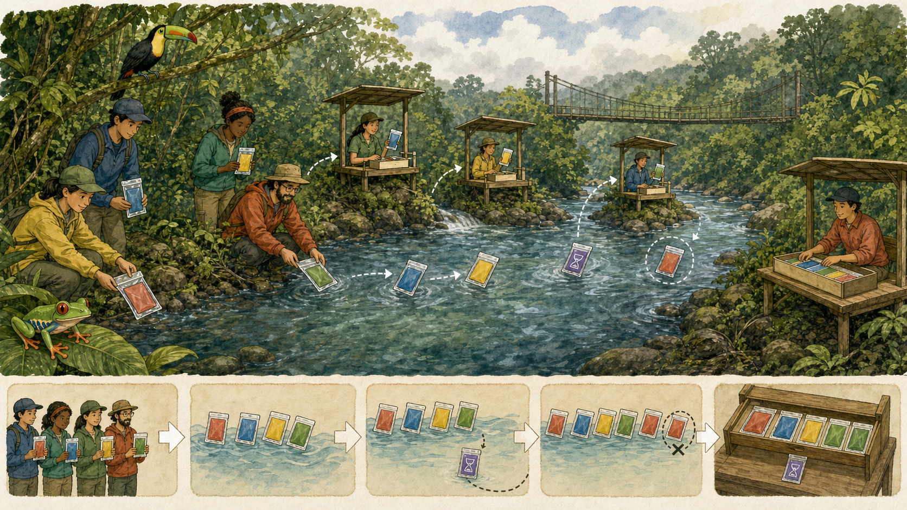

Billy Jak Cordero Porras Coto Brus, Costa Rica · 2026
Propuesta independiente · 1.0.0-rc2
Edición ecosistema 1.0.0-rc2
COBRIA
Manual práctico para construir software comprensible, seguro y recuperable
Billy Jak Cordero Porras Coto Brus, Costa Rica · 2026
Libro, guía y laboratorio para comenzar desde cero y avanzar por arquitectura, capas, código, bases de datos NoSQL, patrones, documentación, seguridad, nube, analítica e inteligencia artificial.
Información de la obra digital
Datos de esta edición
Título
COBRIA: patrones, capas, datos y software verificable
Autor
Billy Jak Cordero Porras
Versión
1.0.0-rc2
Estado
Candidata pública RC2; propuesta independiente no estable
Idioma
Español
Licencia
Creative Commons Atribución 4.0 Internacional (CC BY 4.0) para textos e ilustraciones; código según LICENSE
Formatos
PDF y HTML de lectura con alcance de accesibilidad declarado, derivados de la misma fuente estructurada
Alcance. COBRIA organiza y formaliza prácticas conocidas. No constituye estándar oficial, certificación ni garantía universal. Los ejemplos deben validarse en el contexto donde se utilicen.
Sinopsis
Aprender construyendo un sistema que pueda recuperarse
Este manual acompaña a una persona desde una necesidad pequeña hasta una aplicación documental NoSQL con dominio, capas, datos, API, seguridad, pruebas, ambientes, analítica e inteligencia artificial con procedencia.
Un proyecto conductor de observaciones ambientales enlaza 85 lecciones, treinta laboratorios y catorce hitos ejecutables. Las treinta fichas de patrones permiten profundizar cuando aparece una tensión recurrente.
Cómo usarlo
Lea una parte, ejecute su hito, complete el laboratorio asociado y conserve la evidencia. La especificación normativa prevalece cuando una explicación pedagógica resulte ambigua.
Sobre el autor
Billy Jak Cordero Porras
BJ
Billy Jak Cordero Porras es un joven cotobruseño aficionado a la informática y al desarrollo de software. Su trabajo con proyectos diversos lo llevó a estudiar de forma autodidacta arquitectura, bases de datos, gestión de información e inteligencia artificial.
COBRIA nació de comparar decisiones, errores y necesidades repetidas, y se publica como propuesta independiente, abierta y verificable.
Principio del autor. La investigación y la creación de software deben producir conocimiento comprensible, verificable y de interés público.
Ruta de aprendizaje
Una parte, una entrega, una prueba
Comprenda. Lea la situación y la explicación sencilla.
Construya. Siga los pasos y el proyecto conductor.
Equivóquese de forma segura. Reproduzca el error frecuente.
Compruebe. Ejecute la prueba o criterio observable.
Conserve. Guarde código, decisión y resultado.
Continúe. Use el hito indicado para enlazar la siguiente parte.
Tiempo total orientativo. 3170 minutos de lectura y práctica, sin contar la ejecución completa de infraestructura externa.
Mapa del manual · 1 de 2
Diecisiete partes, una única secuencia
Comenzar, organizar y modelar
Parte
Lecciones
Hito
Entrega
01 · Primeros pasos
5
B01
Una historia de usuario, un ejemplo válido, un ejemplo rechazado y una prueba.
02 · Fundamentos de software
5
B02
Glosario del proyecto y siete respuestas a la regla de decisión COBRIA.
03 · Arquitectura de software
5
B03
Mapa de contexto, diagrama de dependencias y una decisión arquitectónica breve.
04 · Capas, carpetas y responsabilidades
5
B03
Árbol de carpetas comentado y matriz archivo–responsabilidad.
05 · Código, nombres y comentarios
5
B02
Convenciones de código, errores y comentarios con ejemplos aceptados y rechazados.
06 · Bases de datos y diccionario de datos
5
B04-B05
Diccionario versionado, catálogo, ejemplos JSON, índices y plan de migración.
07 · COBRIA Core
5
B07-B09
Manifiesto C1, C2 o C3 con pruebas y límites.
08 · Patrones de diseño
5
B07-B09
Ficha problema–contexto–solución–costo–prueba para una decisión real.
09 · API, experiencia e internacionalización
5
B08
Contrato de API, tabla de estados, mensajes localizables y prueba accesible.
README, tutorial, referencia, ADR, runbook, diccionario y mapa de trazabilidad.
11 · Seguridad y privacidad
5
B06
Modelo de amenazas, matriz de capacidades, inventario de datos y pruebas negativas.
12 · Calidad, pruebas y rendimiento
5
B12
Matriz requisito–prueba, carga reproducible y presupuesto de rendimiento.
13 · Nube, ambientes y operaciones
5
B13
Matriz de ambientes, pipeline, observabilidad, runbook y prueba de recuperación.
14 · Analítica e inteligencia artificial
5
B10-B11
Manifiesto de conjunto/modelo, evaluación, política de abstención y auditoría de herramientas.
15 · Aplicación completa
5
B01-B14
Aplicación ejecutable con pruebas del recorrido y guía de extensión; registre el conteo actual al ejecutarlas.
16 · Herramientas para personas e IA
5
B14
Informe HTML para personas y JSON verificable para integración continua.
17 · Evidencia, evolución y publicación
5
B14
Matriz integral, paquete reproducible, registro de cambios y puerta de publicación.
Contenido navegable
Acceso rápido
Guía de lectura
Cómo avanzar sin perderse
Empiece con una observación de la reserva, compruebe su regla y avance hacia datos, permisos y recuperación. No necesita ejecutar toda la infraestructura para entender una primera lección.
Distinguir fuentes, derivados, cortes temporales y respuestas con procedencia; no confundir un taller con evidencia externa.
Leer no es ejecutar
El fragmento explica una idea y puede depender de tipos o funciones del proyecto. Para ejecutar, use la práctica verificable o el taller indicado; no asuma que copiarlo aislado crea una aplicación.
La web refleja estas partes. Use /explorar para buscar sin tildes y /laboratorio para practicar. Los ejercicios de repaso tienen respuesta orientativa; no son una evaluación independiente.
Primeros pasos · taller ejecutable
De una idea a tu primera prueba
Vas a contar colibríes en una reserva ficticia. Primero aprenderás a expresar la tarea; después cambiarás datos y escribirás una prueba. No necesitas conocer arquitectura. Los primeros ocho ejemplos calculan o leen valores: no autorizan ni guardan registros. El noveno conecta con la aplicación existente y mantiene sus controles.
Preparar tu copia de trabajo
Necesitas una copia autorizada de COBRIA, un editor de texto y Node.js 22.13 o superior. Node ejecuta el lenguaje JavaScript. Un editor modifica texto sin convertirlo en un documento de Word.
La terminal es una ventana para dar órdenes. Ábrela en la carpeta raíz de COBRIA: contiene README.md y replication/. Comprueba node --version y npm --version. Si no se reconocen, instala Node desde nodejs.org y vuelve a abrir la terminal. No necesitas una cuenta de nube ni instalar una base de datos.
Crea una carpeta nueva fuera de tu copia original, por ejemplo cobria-mi-inicio. Copia dentro TODO replication/examples/ecosistema-app, no solo taller-inicial. Abre esa copia en el editor y abre allí una terminal. Debes ver package.json, src/, test/, data/ y taller-inicial/. Conserva intacto el original para comparar y recuperar cambios.
Ejecutar sin perder el original
En esa carpeta nueva no hace falta npm install: la aplicación inicial no tiene paquetes externos. Todos los comandos de las diez unidades parten de esa carpeta. Escribe solo el comando, sin copiar un símbolo $ o >. Guarda el archivo antes de ejecutarlo. El nombre .mjs identifica un archivo de JavaScript que puede compartir piezas con otros archivos.
Si aparece MODULE_NOT_FOUND o no se encuentra un archivo, comprueba la carpeta actual y el nombre completo, incluida su extensión. Si el comando no termina, puedes detenerlo con Ctrl+C. Ningún paso necesita datos personales, contraseñas o acceso a producción.
El camino
Problema y primera salida
Dato y tipo de valor
Variable y cambio de estado
Condición y entrada permitida
Función y resultado reutilizable
Objeto e identidad del registro
Archivo y lectura de un documento
Módulo y responsabilidad compartida
Error y registro con controles
Prueba propia y recuperación de una regresión
En cada unidad: lee, predice, ejecuta, cambia, provoca un fallo y recupera. Las soluciones están después del ejercicio para poder intentarlo primero.
Unidad 01 · comprender
Problema y primera salida
Un problema es una necesidad que puedes describir antes de elegir tecnología. Aquí queremos saber cuántos colibríes vimos en una reserva. Todavía no pedimos inteligencia artificial, una pantalla ni una base de datos: primero necesitamos una tarea concreta.
Un programa es una secuencia de instrucciones que la computadora ejecuta. console.log muestra un valor en la terminal; no crea un registro. El texto entre comillas es literal: se muestra tal como lo escribes. Los paréntesis delimitan lo que pasas a la instrucción. La línea que empieza con // es un comentario para quien lee y no se ejecuta.
Archivo: taller-inicial/01-problema.mjs
// Todavía describimos una tarea; no estamos guardando observaciones.
console.log('Quiero contar colibríes en la reserva sur.');
Unidad 01 · practicar y recuperar
Cambiar y comprobar
Desde la copia de ecosistema-app, ejecuta:
node taller-inicial/01-problema.mjs
Resultado esperado
Quiero contar colibríes en la reserva sur.
Tu cambio
Cambia solo la frase para contar tucanes. Conserva console.log, los paréntesis y las comillas. Antes de ejecutar, escribe qué esperas leer.
Quiero contar tucanes en la reserva sur.
Provocar un fallo
Restaura primero el ejemplo original para no mezclar cambios.
Quita la comilla de cierre. Node no puede interpretar la instrucción: informa SyntaxError antes de mostrar la frase.
Texto que debes encontrar en la salida:
SyntaxError
Recuperación
Recoloca la comilla simple antes del paréntesis: sur.');. Guarda y vuelve a ejecutar. No reinstales Node por un error de escritura.
Solución razonada
La frase nueva queda entre las mismas comillas: console.log('Quiero contar tucanes en la reserva sur.');. El cambio está en la necesidad expresada, no en la instrucción que muestra el texto.
Unidad 02 · comprender
Dato y tipo de valor
Un dato es un valor que representa algo del problema. El número 3 representa una cantidad observada. JavaScript distingue números, textos y otros tipos: el tipo explica qué clase de valor tienes. typeof permite consultar ese tipo y aquí imprime number, la palabra que JavaScript usa para número.
El número 3 no es el texto '3'. Las comillas convierten el contenido en texto. Aunque ambos puedan verse como 3 en la pantalla, calcular con ellos puede producir resultados distintos. Por eso conviene mirar tanto el valor como su tipo antes de procesar datos.
Archivo: taller-inicial/02-dato.mjs
console.log(3);
console.log(typeof 3);
Unidad 02 · practicar y recuperar
Cambiar y comprobar
Desde la copia de ecosistema-app, ejecuta:
node taller-inicial/02-dato.mjs
Resultado esperado
3
number
Tu cambio
Sustituye los dos números 3 por 5. Predice las dos líneas: cambia el valor, pero no su tipo.
5
number
Provocar un fallo
Restaura primero el ejemplo original para no mezclar cambios.
Añade comillas al 3 de typeof. El proceso termina sin error, pero ahora muestra string: has cambiado el significado del dato.
Texto que debes encontrar en la salida:
3
string
Recuperación
Quita las comillas en typeof y recupera number. Un programa que termina sin error también puede entregar un resultado equivocado.
Solución razonada
console.log(5) muestra 5 y console.log(typeof 5) muestra number. El ejercicio no registra una observación: solo distingue una cantidad numérica de un texto.
Unidad 03 · comprender
Variable y cambio de estado
Una variable es un nombre para un valor. let cantidad = 3 crea el nombre cantidad y le asigna el valor 3. El signo = asigna; no pregunta si dos valores son iguales. La segunda línea lee el valor anterior, le suma 1 y guarda el resultado en el mismo nombre.
El estado es el valor que existe en un momento de la ejecución. Después de la asignación, cantidad vale 4. El orden importa: mostrarla antes del cambio daría 3. Esta variable vive solo durante el proceso; cerrar y abrir el programa comienza de nuevo con 3.
Archivo: taller-inicial/03-variable.mjs
let cantidad = 3;
cantidad = cantidad + 1;
console.log(cantidad);
Unidad 03 · practicar y recuperar
Cambiar y comprobar
Desde la copia de ecosistema-app, ejecuta:
node taller-inicial/03-variable.mjs
Resultado esperado
4
Tu cambio
Cambia el incremento de 1 a 2 sin cambiar el valor inicial. Explica por qué la salida será 5.
5
Provocar un fallo
Restaura primero el ejemplo original para no mezclar cambios.
Escribe el incremento entre comillas. Al combinar número y texto con +, obtienes 31, no 4.
Texto que debes encontrar en la salida:
31
Recuperación
Devuelve el incremento a 1 sin comillas y observa 4. No cambies el resultado esperado para aceptar una suma incorrecta.
Solución razonada
cantidad = cantidad + 2 toma el 3 anterior y calcula 5. No escribas cantidad = 2: eso reemplazaría el valor en vez de sumarlo.
Unidad 04 · comprender
Condición y entrada permitida
Una condición decide qué camino ejecutar. if significa si; else indica el camino alternativo. Entre llaves están las instrucciones de cada camino. const crea un nombre que no reasignaremos. Number.isInteger pregunta si un valor es entero; >= compara si es mayor o igual; && exige que se cumplan ambas comprobaciones.
Una comparación devuelve true si se cumple y false si no. La regla es una cantidad entera de al menos uno. No basta con que sea positiva: 2.5 no representa nuestro conteo. Mostrar Corrige la cantidad no guarda nada ni sustituye la validación del dominio. Solo empezamos a explicar una decisión que la aplicación también tendrá que proteger.
Archivo: taller-inicial/04-condicion.mjs
const cantidad = 3;
if (Number.isInteger(cantidad) && cantidad >= 1) {
console.log('Cantidad permitida');
} else {
console.log('Corrige la cantidad');
}
Unidad 04 · practicar y recuperar
Cambiar y comprobar
Desde la copia de ecosistema-app, ejecuta:
node taller-inicial/04-condicion.mjs
Resultado esperado
Cantidad permitida
Tu cambio
Sustituye 3 por 4. Luego explica por qué sigue apareciendo Cantidad permitida: el resultado de una condición no tiene que mostrar el número.
Cantidad permitida
Provocar un fallo
Restaura primero el ejemplo original para no mezclar cambios.
Prueba cantidad cero. Aparece el camino de corrección; no es un fallo de Node, sino un rechazo válido de la regla.
Texto que debes encontrar en la salida:
Corrige la cantidad
Recuperación
Vuelve a una cantidad entera positiva. No borres la condición ni aceptes cero para obtener el mensaje de éxito.
Solución razonada
Con 4, Number.isInteger devuelve true y 4 >= 1 también. Con 0, la segunda comparación devuelve false y se ejecuta else. true y false representan sí y no.
Unidad 05 · comprender
Función y resultado reutilizable
Una función reúne instrucciones bajo un nombre. function describirCantidad(cantidad) declara un parámetro: el nombre local que recibirá el valor de cada llamada. return entrega un resultado a quien llamó. Declarar la función no la ejecuta; describirCantidad(3) sí la llama.
Las comillas invertidas permiten insertar un valor con ${cantidad}. Primero la función produce el texto y luego console.log lo muestra. Separar producir un resultado de mostrarlo permite reutilizar la misma función desde una terminal, una pantalla o una prueba. Aquí solo formatea texto: no valida ni autoriza registros.
Archivo: taller-inicial/05-funcion.mjs
function describirCantidad(cantidad) {
return `Colibríes observados: ${cantidad}`;
}
console.log(describirCantidad(3));
Unidad 05 · practicar y recuperar
Cambiar y comprobar
Desde la copia de ecosistema-app, ejecuta:
node taller-inicial/05-funcion.mjs
Resultado esperado
Colibríes observados: 3
Tu cambio
Llama a la misma función con 5 en vez de 3. No cambies el cuerpo de la función para resolver cada cantidad.
Colibríes observados: 5
Provocar un fallo
Restaura primero el ejemplo original para no mezclar cambios.
Quita return de la segunda línea. La función calcula un texto, pero no lo entrega: console.log recibe undefined, es decir, un resultado no definido.
Texto que debes encontrar en la salida:
undefined
Recuperación
Recoloca return antes del texto. El resultado debe volver a ser Colibríes observados: 3.
Solución razonada
describirCantidad(5) entrega el parámetro 5 a la misma plantilla. El nombre cantidad dentro de la función no es una variable global ni conserva el valor de la llamada anterior.
Unidad 06 · comprender
Objeto e identidad del registro
Un objeto agrupa propiedades con nombre. En observacion, id identifica cuál observación es; ambito indica a qué reserva pertenece; especie y cantidad describen lo visto. revision identifica la versión del hecho y observadaEn conserva el instante en texto con zona UTC. La notación observacion.cantidad lee una propiedad.
No confundas identidad con cantidad: cambiar 3 a 4 describe otro contenido, no otro identificador. El ámbito tampoco es una etiqueta decorativa: más adelante limitará el acceso. Este literal todavía no es una entidad validada ni está guardado; la construcción del dominio, en las últimas unidades, hará obligatorias sus reglas.
Cambia únicamente cantidad a 4. Conserva id, ámbito, revisión y fecha para reconocer la misma forma de documento.
obs-taller-001: 4 en reserva-sur
Provocar un fallo
Restaura primero el ejemplo original para no mezclar cambios.
Quita la d final al leer cantidad. JavaScript permite pedir una propiedad que no existe y devuelve undefined.
Texto que debes encontrar en la salida:
obs-taller-001: undefined en reserva-sur
Recuperación
Corrige la lectura a observacion.cantidad. No crees dos propiedades casi iguales para ocultar un error de nombre.
Solución razonada
El objeto queda con cantidad: 4 y la lectura sigue siendo observacion.cantidad. La salida conserva obs-taller-001 y reserva-sur, porque no modificaste esas propiedades.
Unidad 07 · comprender
Archivo y lectura de un documento
Un archivo conserva bytes fuera del programa. observacion.json contiene un documento de datos: JSON usa llaves, nombres entre comillas dobles y no admite comentarios ni comas finales. El archivo ya existe; esta unidad lo lee, no escribe una base de datos. Reiniciar el proceso no cambia su contenido.
import incorpora una función existente. node:fs es el módulo de archivos que viene con Node y readFileSync lee texto de forma síncrona: espera hasta terminar. new URL localiza observacion.json junto al programa mediante import.meta.url, independientemente de la terminal. JSON.parse convierte el texto en un objeto. Son herramientas de infraestructura, no reglas del dominio.
Abre taller-inicial/observacion.json y cambia solo "cantidad": 3 por "cantidad": 4. Guarda ese archivo, no el programa lector.
Archivo leído: 4 colibríes
Provocar un fallo
Restaura primero el ejemplo original para no mezclar cambios.
Añade una segunda coma después de la cantidad. JSON.parse informa SyntaxError: el documento no tiene una sintaxis válida.
Texto que debes encontrar en la salida:
SyntaxError
Recuperación
Deja una sola coma y vuelve a ejecutar el lector. No borres el documento ni reemplaces la lectura por un valor fijo.
Solución razonada
El lector no cambia: lee la nueva cantidad del archivo. JSON.parse no valida la cantidad positiva, la autorización o la revisión; esas reglas siguen perteneciendo a la aplicación y al dominio.
Unidad 08 · comprender
Módulo y responsabilidad compartida
Un módulo es un archivo que ofrece piezas a otros archivos. reglas.mjs usa export para ofrecer cantidadPermitida; 08-modulo.mjs la recibe con import. La ruta ./reglas.mjs significa el archivo vecino, con ese nombre y extensión. No requiere descargar un paquete.
Abre reglas.mjs antes de ejecutar. La función contiene la condición que ya conoces y devuelve true o false. Compartir esta regla evita copiarla en dos pantallas y olvidar actualizar una. No concede acceso ni guarda datos: cada pieza tiene una responsabilidad. La aplicación de referencia conserva su validación propia; este archivo es una pieza didáctica, no una nueva autoridad paralela.
Archivo: taller-inicial/08-modulo.mjs
import { cantidadPermitida } from './reglas.mjs';
console.log(`¿Cantidad permitida? ${cantidadPermitida(3)}`);
reglas.mjs
// Una regla pura devuelve un valor: no guarda datos ni concede permisos.
export function cantidadPermitida(cantidad) {
return Number.isInteger(cantidad) && cantidad >= 1;
}
Unidad 08 · practicar y recuperar
Cambiar y comprobar
Desde la copia de ecosistema-app, ejecuta:
node taller-inicial/08-modulo.mjs
Resultado esperado
¿Cantidad permitida? true
Tu cambio
Cambia la llamada a cantidadPermitida(0). Explica por qué false es ahora el resultado correcto y no debes cambiar la regla para obtener true.
¿Cantidad permitida? false
Provocar un fallo
Restaura primero el ejemplo original para no mezclar cambios.
Cambia la ruta de import por un archivo inexistente. Node informa ERR_MODULE_NOT_FOUND y no ejecuta el cuerpo del módulo.
Texto que debes encontrar en la salida:
ERR_MODULE_NOT_FOUND
Recuperación
Restaura ./reglas.mjs. Distingue esta ruta de archivo de un permiso o de una dependencia externa: aquí no hace falta npm install.
Solución razonada
cantidadPermitida(0) devuelve false porque 0 no cumple >= 1. El archivo consumidor no necesita conocer cómo está escrita la comparación para usar su resultado.
Unidad 09 · comprender
Error y registro con controles
Un error interrumpe una operación que no puede cumplir su contrato. try intenta ejecutar un bloque; catch recibe el error y permite explicarlo. await espera el resultado de una operación asíncrona antes de seguir. crearAplicacion conecta piezas ya escritas: todavía no necesitas reconstruir cada capa para usar esta entrada.
Ahora sí registramos un objeto en memoria. El contexto indica actor, finalidad, reservas permitidas, capacidades y claveIdempotencia. Los corchetes [] forman una lista de valores; lista.items.length cuenta los elementos devueltos. Autorizar significa comprobar si ese actor puede realizar esa acción en esa reserva. La identidad es sintética para aprender: en un servidor los permisos deben proceder de una sesión confiable, nunca de un formulario editable.
Idempotencia significa que repetir la misma intención con la misma clave y contenido no crea un segundo efecto. Aquí se llama dos veces y se lista una observación. La clave no sirve para enviar contenido distinto: eso se rechaza como IDEMPOTENCY_CONFLICT. El ejemplo es secuencial y en memoria: no demuestra atomicidad, autenticación real ni seguridad frente a solicitudes simultáneas.
Registrada: obs-taller-001; cantidad: 3
Tras repetir: 1 observación
Tu cambio
Cambia cantidad a 4 y ejecuta en un proceso nuevo. Debes conservar un único registro tras la repetición. No cambies permisos ni elimines la segunda llamada.
Registrada: obs-taller-001; cantidad: 4
Tras repetir: 1 observación
Provocar un fallo
Restaura primero el ejemplo original para no mezclar cambios.
Prueba una cantidad cero. El dominio rechaza el registro y catch muestra su código; process.exitCode = 1 comunica a otras herramientas que no fue exitoso.
Texto que debes encontrar en la salida:
Registro rechazado: OBS_QUANTITY_INVALID
Recuperación
Restaura cantidad: 3. Si aparece ACCESS_DENIED, revisa el ámbito y la capacidad del contexto; nunca retires el autorizador para forzar éxito.
Solución razonada
Con cantidad: 4 y el mismo contenido en ambas llamadas aparecen cantidad: 4 y Tras repetir: 1 observación. Cada ejecución crea una memoria nueva: repetir el proceso no demuestra persistencia entre reinicios.
Unidad 10 · comprender
Prueba propia y recuperación de una regresión
Una prueba ejecuta una conducta y compara lo obtenido con lo esperado. node:test ofrece test para nombrar el caso. assert.equal compara dos valores y falla cuando son distintos. new Observacion construye la entidad que valida el registro; no llama al servicio ni guarda nada. () => { ... } escribe una función sin nombre que test ejecutará; entre sus llaves están los pasos del caso.
El caso prepara una entrada de cantidad 3, construye el objeto y comprueba que la cantidad sigue siendo 3. Si cambias una entrada válida a 4 y mantienes la expectativa 3, la prueba falla: has observado una discrepancia real. Revisa primero cuál de las dos representa el requisito antes de cambiar código o expectativa. No cambies una prueba de seguridad para permitir una operación prohibida.
Archivo: taller-inicial/10-prueba.test.mjs
import test from 'node:test';
import assert from 'node:assert/strict';
import { Observacion } from '../src/domain/observacion.mjs';
test('conserva la cantidad observada', () => {
const observacion = new Observacion({
id: 'obs-taller-001', ambito: 'reserva-sur', especie: 'colibri',
cantidad: 3, revision: 1, observadaEn: '2026-10-19T12:00:00Z'
});
assert.equal(observacion.cantidad, 3);
});
Primero cambia solo cantidad: 3 a cantidad: 4 y observa fail 1. Después ajusta la expectativa a 4 porque tu nuevo caso pide conservar cuatro. Vuelve a ejecutar y conserva ambas salidas.
# pass 1
# fail 0
Provocar un fallo
Restaura primero el ejemplo original para no mezclar cambios.
Cambia únicamente la cantidad de entrada a 4. Debe haber una prueba fallida, no cero pruebas. El informe muestra que 4 no coincide con 3.
Texto que debes encontrar en la salida:
ERR_ASSERTION
Recuperación
Para completar el ejercicio de cuatro, conserva cantidad: 4 y cambia assert.equal(observacion.cantidad, 3) a assert.equal(observacion.cantidad, 4). Para volver al caso original, restaura ambos valores a 3.
Solución razonada
La solución tiene cantidad: 4 en la entrada y assert.equal(observacion.cantidad, 4) en la comprobación. Una prueba aprobada no demuestra todo el sistema: este caso solo comprueba conservación de una cantidad válida. La suite general añade rechazos y otros controles.
Tu primera entrega independiente
Ejecuta npm test desde la copia de ecosistema-app. Deben ejecutarse pruebas y terminar con fail 0. No memorices una cifra total histórica: el proyecto sigue creciendo. El comando de la unidad 10 selecciona una sola prueba; npm test comprueba la aplicación y el taller.
Realiza una tarea sin mirar la solución: registra cinco colibríes, conserva una sola observación al repetir y escribe una prueba que espere cinco. Explica cuál es el dato, cuál es su identidad, qué reserva lo limita y por qué cero debe rechazarse. Entrega el archivo cambiado, comando y salida, no solo una captura de un mensaje de éxito.
Si te atascas, registra unidad, paso, mensaje literal y qué entendías antes del fallo; no incluyas información personal. Compara con la recuperación de esa unidad. Puedes restaurar un archivo desde tu copia original sin borrar la carpeta de trabajo.
Continúa con Tu primer proyecto con COBRIA y Datos desde cero. Este taller no demuestra que una persona principiante haya comprendido el material: esa comprobación requiere observar una tarea real con consentimiento apropiado.
Continúa con Tu primer proyecto con COBRIA y Datos desde cero. Conserva la misma aplicación: no necesitas crear un proyecto distinto en cada capítulo.
Proyecto conductor · 1 de 5
Ejecutar desde una copia del repositorio
Requisitos: Node 22.13 o posterior, npm y espacio para dependencias y bases temporales. Desde la raíz:
npm ci --prefix replication
node replication/examples/integral-c8/recorrido-ep4.mjs
node replication/examples/integral-c8/recorrido-ep4.mjs 4
node --test replication/tests/ep4-recorrido.test.mjs
npm test --prefix replication/examples/integral-c8
La salida JSON indica el directorio temporal conservado para inspección, los siete hitos, cuatro rechazos, fuentes y huellas. Los puertos HTTP son locales y efímeros; se cierran incluso si falla una comprobación. El programa crea bases nuevas, no reutiliza ni sobrescribe una instalación del lector. Es código ejecutable JavaScript, no pseudocódigo ni una traducción equivalente a cuatro lenguajes.
Total local con identidad, ámbito, revisión y huella de fuente
Recuperación
analitica-c7/taller.mjs
Cita con huella o abstención, sin autoridad de escritura
Recuperación operativa
integral-c8/recorrido-ep4.mjs
Reapertura, reentrega, restauración y reconstrucción equivalentes
Las rutas de la tabla son relativas a replication/examples/. La composición une las capas: no se introduce una dependencia del dominio hacia el SDK. El catálogo utilizado es integral-c8/catalogo.json, edición aves-c8-v1. La forma física sigue siendo versión 1; una revisión del hecho no equivale a una edición del catálogo.
Registre tres colibríes y después ejecute otra copia del recorrido con cuatro. Antes de ejecutarla, prediga qué cambia: cantidad canónica, total del resumen, total analítico y huellas. Prediga también qué permanece: una observación, una operación, ámbito e identidad. Cada ejecución usa una base nueva: no simula una actualización sobre la anterior.
Solución: el parámetro cambia la entrada del mismo flujo; las pruebas verifican totales 3 y 4. La reentrega con la misma clave conserva el estado; cambiar la cantidad reutilizando esa clave devuelve 409. Una nueva revisión de negocio necesita su propia clave y revisión, no alterar la respuesta anterior. La cantidad cero, negativa, fraccionaria o no numérica se rechaza antes de abrir el motor.
El recorrido también intenta una especie desconocida, un ámbito no autorizado y un respaldo manipulado. Compara el estado antes y después de los rechazos; un resultado verde sin estas comparaciones no bastaría para demostrar ausencia de efectos.
Extracto real del programa, no ejecutable por separado. servidor es la aplicación local abierta; ambito es reserva-sur; resumen proviene de la lectura autorizada anterior. Los imports y auxiliares están en el programa completo mostrado en la web.
listar obtiene observaciones del mismo ámbito. reduce suma cantidades; map conserva la identidad y revisión de cada fuente. La huella enlaza el total con la proyección leída. autoridadEscritura y entrenamientoHabilitado son falsos: un total no recibe permiso para alterar hechos o entrenar un modelo.
Este bloque pertenece al recorrido local secuencial. No es una API analítica de producción ni garantiza una instantánea frente a otro escritor concurrente. Para exponerlo se necesita un caso de uso autorizado y una política explícita de coherencia de lectura.
Las sesiones DEMO no autentican personas. La analítica aquí es descriptiva y no habilita entrenamiento: el documento original no contiene consentimiento ni tiempo de conocimiento. No se inventan estos atributos para alimentar C7. Un conjunto de entrenamiento requiere el contrato explícito y los controles temporales de ese taller. La recuperación es léxica, no razona sobre atributos ausentes como salud del animal.
Un agregado admite hasta 1000 documentos y 1000 operaciones, con límite de 2 MiB. Cada lectura valida el agregado completo; no es un índice distribuido ni una promesa de escalabilidad. No hay transacción entre ámbitos, prueba de pérdida eléctrica, clúster, nube, Firebase Emulator, staging ni producción en este recorrido. Las copias no incluyen sesiones o auditoría operacional. Las huellas comprueban integridad, no firma ni autenticidad frente a un atacante que pueda reemplazar contenido y hash.
Código bajo Apache-2.0 según la licencia del repositorio; textos y datos se rigen por sus licencias específicas, no se relicencian mediante esta guía.
La misma brigada envía dos veces una observación. ¿Dos mensajes significan dos hechos?
Respuesta orientativa
No necesariamente. Defina identidad y repetición antes de sumar. Reproduzca la entrada y compruebe la regla; no cuente mensajes como hechos.
Caso desarrollado · inicio
Preparar una entrega pequeña que puedas explicar
Una brigada quiere registrar tres colibríes y contar una sola visita aunque alguien pulse dos veces. Si el primer objetivo es instalar nube, autenticación e IA, será difícil saber qué parte está fallando. La primera entrega debe ser más pequeña que el sistema deseado, pero conservar una regla de cantidad y un límite de reserva.
Antes de empezar
Completa las diez unidades de De una idea a tu primera prueba. Usa la copia de ecosistema-app, no una base de datos personal.
Palabras que necesitarás
Entrega: Resultado observable que otra persona puede repetir.
Memoria: Datos que desaparecen al terminar el proceso.
Requisito: Conducta pedida y su condición de aceptación.
Resolver el problema
Escribe primero una frase comprobable: al enviar la misma visita dos veces, queda una observación con cantidad tres. Una segunda frase cubre el rechazo: cero no se guarda. Una tercera separa las reservas. Esas frases son requisitos, no nombres de carpetas ni promesas de una tecnología.
Guarda una copia intacta y trabaja en otra carpeta. Abre package.json para distinguir las tareas disponibles y ejecuta start desde la aplicación. Mira el archivo que produce la salida antes de buscar una pantalla. Este inicio termina en la terminal; no tiene un servidor HTTP oculto ni conserva sesiones entre procesos.
Ejemplo trabajado · inicio
Seguir el resultado
Ejecuta las diez unidades del taller inicial en orden y conserva un cambio propio.
Ejecuta npm --prefix replication/examples/ecosistema-app start desde la raíz de COBRIA.
Comprueba la cantidad, la repetición y los dos rechazos en la misma ejecución.
Artefacto trabajado, no programa para ejecutar.
{
"requisito": "La misma visita no se cuenta dos veces",
"entrada": {
"id": "obs-001",
"ambito": "reserva-sur",
"cantidad": 3,
"revision": 1
},
"esperado": {
"observaciones": 1,
"colibries": 3
},
"rechazos": [
"cantidad cero",
"reserva no autorizada"
]
}
Decidir y practicar · inicio
Elegir y comprobar
Alternativa y costo
Una hoja de cálculo puede bastar para un recuento personal sin colaboración ni controles de acceso. No construyas todas las capas solo para justificar el uso del manual.
La copia de aprendizaje evita riesgo, pero no conserva información al cerrar. Anota esa limitación como una decisión de esta entrega, no como un defecto que se corrige escondiendo archivos.
Fallo y recuperación
El proceso termina y al abrirlo de nuevo no aparecen visitas anteriores. Es el comportamiento de un almacén en memoria; cambiar el texto de éxito no añade persistencia.
Vuelve al ejemplo original y distingue repetir una intención dentro del proceso de repetir el proceso completo. La persistencia documental pertenece al recorrido de aplicación completa.
Tu ejercicio
Escribe tres criterios para una visita de cinco colibríes. Cambia el programa de tu copia y entrega entrada, comando y salida. No cambies la prohibición de cantidad cero.
Solución explicada
La entrada usa cantidad cinco; la repetición mantiene una observación; la cantidad cero sigue rechazándose. El criterio de éxito no es que aparezca una ventana: es que coincidan datos, efectos y rechazos. Adjunta la versión de Node y explica que los registros se perderán al cerrar.
Revisar la entrega
La cantidad cinco se observa en una ejecución real.
La repetición conserva un solo efecto.
La entrega declara memoria y no promete autenticación.
Continúa: Ahora convierte la entrada en un objeto que no pueda existir con una cantidad inválida.
Guía completa: manuales/26-primer-proyecto-paso-a-paso.md. Ejecución local no equivale a validación con lectores.
Ejercicio 01.1
Ahora inténtelo
De una idea a una conducta observable
Ejecute la comprobación de la página anterior y explique la decisión.
Su tarea
Ejecute la práctica «De una idea a una conducta observable» y explique qué rechazo evita un dato incorrecto.
Antes de empezar
Node.js 22.13 o superior.
Terminal en la raíz de COBRIA. No hace falta instalar dependencias para esta aplicación.
Palabras para orientarse
ámbito: Reserva o frontera a la que pertenece la operación. Primeros pasos: Una primera entrega describe quién registra, qué datos usa y qué resultado o rechazo se puede observar.
Si se pierde
Vuelva al último ejemplo válido; compare entrada, ámbito y versión antes de cambiar una regla. Conserve el rechazo y no use datos productivos.
Solución explicada
Una persona guardaparques registra tres colibríes en reserva-sur; una solicitud sin reserva se rechaza. La comprobación debe coincidir con el resultado esperado; si no coincide, revise el primer error sin desactivar la validación.
Revise su entrega
Responde al ejercicio: De una idea a una conducta observable
Justifica la decisión con el ejemplo: Una persona guardaparques registra tres colibríes en reserva-sur; una solicitud sin reserva se rechaza.
Detecta el error: Comenzar por elegir base de datos, nube o framework.
Distingue lo observado de lo propuesto; anota qué no ha ejecutado.
Consulte manuales/26-primer-proyecto-paso-a-paso.md y las fuentes de la lección. Autoevaluación, no validación con participantes.
Lección 01.2 · Primeros pasos
El recorrido vertical más pequeño
Situación. Crear todas las carpetas antes de entregar valor produce una estructura vacía difícil de validar.
En palabras sencillas: Haga pasar una sola acción por interfaz, aplicación, dominio y datos.
Hágalo paso a paso
Valide una entrada.
Ejecute una regla.
Guarde mediante un puerto.
Devuelva un resultado legible.
Ejemplo realista
Registrar una observación completa antes de construir informes, mapas o IA.
Error frecuente
Confundir cantidad de archivos con avance.
Contrato o código mínimo
Fragmento de lectura guiada · Use la práctica o el proyecto completo para ejecutar.
entrada → validar → caso de uso → repositorio → resultado
¿Cómo sé que funciona?Una prueba que atraviesa el recorrido y otra que demuestra el rechazo.
Continúe en el ejemplo: B01 · manuales/26-primer-proyecto-paso-a-paso.md
Práctica de la lección 01.2
Ejecutar y comprobar
El recorrido vertical más pequeño
El fragmento de la lección es de lectura guiada. El comando siguiente ejecuta una comprobación real de la aplicación.
Directorio: raíz de COBRIA, donde existe replication/.
Antes de ejecutar
Node.js 22.13 o superior.
Terminal en la raíz de COBRIA. No hace falta instalar dependencias para esta aplicación.
Guía completa: manuales/26-primer-proyecto-paso-a-paso.md. Ejecución local no equivale a validación con lectores.
Ejercicio 01.2
Ahora inténtelo
El recorrido vertical más pequeño
Ejecute la comprobación de la página anterior y explique la decisión.
Su tarea
Ejecute la práctica «El recorrido vertical más pequeño» y explique qué rechazo evita un dato incorrecto.
Antes de empezar
Node.js 22.13 o superior.
Terminal en la raíz de COBRIA. No hace falta instalar dependencias para esta aplicación.
Palabras para orientarse
ámbito: Reserva o frontera a la que pertenece la operación. Primeros pasos: Haga pasar una sola acción por interfaz, aplicación, dominio y datos.
Si se pierde
Vuelva al último ejemplo válido; compare entrada, ámbito y versión antes de cambiar una regla. Conserve el rechazo y no use datos productivos.
Solución explicada
Registrar una observación completa antes de construir informes, mapas o IA. La comprobación debe coincidir con el resultado esperado; si no coincide, revise el primer error sin desactivar la validación.
Revise su entrega
Responde al ejercicio: El recorrido vertical más pequeño
Justifica la decisión con el ejemplo: Registrar una observación completa antes de construir informes, mapas o IA.
Detecta el error: Confundir cantidad de archivos con avance.
Distingue lo observado de lo propuesto; anota qué no ha ejecutado.
Consulte manuales/26-primer-proyecto-paso-a-paso.md y las fuentes de la lección. Autoevaluación, no validación con participantes.
Lección 01.3 · Primeros pasos
Elegir una primera entrega pequeña
Situación. Una lista de funciones crece antes de que exista una conducta comprobable.
En palabras sencillas: Elija una acción que produzca valor completo y pueda terminarse en pocas horas.
Hágalo paso a paso
Liste necesidades, no pantallas.
Ordene por valor y riesgo.
Seleccione una entrada y una salida.
Posponga todo lo demás.
Ejemplo realista
Registrar una observación y consultarla; mapas e IA quedan para hitos posteriores.
Error frecuente
Incluir autenticación, informes y nube en la primera tarea.
Contrato o código mínimo
Fragmento de lectura guiada · Use la práctica o el proyecto completo para ejecutar.
¿Cómo sé que funciona?La entrega cabe en una prueba de aceptación con un resultado visible.
Continúe en el ejemplo: B01 · manuales/26-primer-proyecto-paso-a-paso.md
Práctica de la lección 01.3
Ejecutar y comprobar
Elegir una primera entrega pequeña
El fragmento de la lección es de lectura guiada. El comando siguiente ejecuta una comprobación real de la aplicación.
Directorio: raíz de COBRIA, donde existe replication/.
Antes de ejecutar
Node.js 22.13 o superior.
Terminal en la raíz de COBRIA. No hace falta instalar dependencias para esta aplicación.
Comando
node --test --test-reporter=tap --test-name-pattern='^repetir la misma operación devuelve el mismo resultado sin duplicar$' replication/examples/ecosistema-app/test/app.test.mjs
Resultado esperado
Repetir la operación no crea una segunda observación. La salida termina con pass 1 y fail 0.
Si no coincide
fail distinto de cero indica un fallo: lea el primer mensaje, no solamente la última línea.
pass 0 no demuestra la conducta: revise el nombre exacto de la prueba y la ruta.
No cambie la regla para obtener verde; compare la entrada con el contrato.
Guía completa: manuales/26-primer-proyecto-paso-a-paso.md. Ejecución local no equivale a validación con lectores.
Ejercicio 01.3
Ahora inténtelo
Elegir una primera entrega pequeña
Ejecute la comprobación de la página anterior y explique la decisión.
Su tarea
Ejecute la práctica «Elegir una primera entrega pequeña» y explique qué rechazo evita un dato incorrecto.
Antes de empezar
Node.js 22.13 o superior.
Terminal en la raíz de COBRIA. No hace falta instalar dependencias para esta aplicación.
Palabras para orientarse
ámbito: Reserva o frontera a la que pertenece la operación. Primeros pasos: Elija una acción que produzca valor completo y pueda terminarse en pocas horas.
Si se pierde
Vuelva al último ejemplo válido; compare entrada, ámbito y versión antes de cambiar una regla. Conserve el rechazo y no use datos productivos.
Solución explicada
Registrar una observación y consultarla; mapas e IA quedan para hitos posteriores. La comprobación debe coincidir con el resultado esperado; si no coincide, revise el primer error sin desactivar la validación.
Revise su entrega
Responde al ejercicio: Elegir una primera entrega pequeña
Justifica la decisión con el ejemplo: Registrar una observación y consultarla; mapas e IA quedan para hitos posteriores.
Detecta el error: Incluir autenticación, informes y nube en la primera tarea.
Distingue lo observado de lo propuesto; anota qué no ha ejecutado.
Consulte manuales/26-primer-proyecto-paso-a-paso.md y las fuentes de la lección. Autoevaluación, no validación con participantes.
Lección 01.4 · Primeros pasos
Preparar un entorno que otra persona pueda repetir
Situación. El programa funciona únicamente en la computadora de quien lo creó.
En palabras sencillas: Declare versiones, comandos y datos de ejemplo antes de añadir dependencias.
Hágalo paso a paso
Instale Node.js y abra de nuevo la terminal si node no existe.
Compruebe node --version y npm --version.
Abra la raíz de COBRIA: contiene README.md, manuales/ y replication/.
Guía completa: manuales/26-primer-proyecto-paso-a-paso.md. Ejecución local no equivale a validación con lectores.
Ejercicio 01.4
Ahora inténtelo
Preparar un entorno que otra persona pueda repetir
Ejecute la comprobación de la página anterior y explique la decisión.
Su tarea
Ejecute la práctica «Preparar un entorno que otra persona pueda repetir» y explique qué rechazo evita un dato incorrecto.
Antes de empezar
Node.js 22.13 o superior y npm disponibles.
Terminal en la raíz de COBRIA, donde existen README.md y replication/.
Palabras para orientarse
ámbito: Reserva o frontera a la que pertenece la operación. Primeros pasos: Declare versiones, comandos y datos de ejemplo antes de añadir dependencias.
Si se pierde
Vuelva al último ejemplo válido; compare entrada, ámbito y versión antes de cambiar una regla. Conserve el rechazo y no use datos productivos.
Solución explicada
La aplicación no tiene dependencias externas: no necesita npm install, una cuenta cloud ni una base de datos. La comprobación debe coincidir con el resultado esperado; si no coincide, revise el primer error sin desactivar la validación.
Revise su entrega
Responde al ejercicio: Preparar un entorno que otra persona pueda repetir
Justifica la decisión con el ejemplo: La aplicación no tiene dependencias externas: no necesita npm install, una cuenta cloud ni una base de datos.
Detecta el error: Depender de variables privadas sin plantilla ni explicación.
Distingue lo observado de lo propuesto; anota qué no ha ejecutado.
Consulte manuales/26-primer-proyecto-paso-a-paso.md y las fuentes de la lección. Autoevaluación, no validación con participantes.
Lección 01.5 · Primeros pasos
Leer un fallo sin adivinar
Situación. Un mensaje como ‘algo salió mal’ no permite corregir la entrada.
En palabras sencillas: Un fallo útil identifica código, causa segura y siguiente acción.
Hágalo paso a paso
Conserve un código estable.
Explique qué condición falló.
No revele secretos.
Pruebe el mensaje rechazado.
Ejemplo realista
AMBITO_REQUERIDO indica que falta el límite de la operación.
Error frecuente
Mostrar la traza interna completa a la persona usuaria.
Contrato o código mínimo
Fragmento de lectura guiada · Use la práctica o el proyecto completo para ejecutar.
{ codigo: 'AMBITO_REQUERIDO', estado: 400 }
¿Cómo sé que funciona?La prueba espera código y estado, no una frase frágil.
Continúe en el ejemplo: B01 · manuales/26-primer-proyecto-paso-a-paso.md
Práctica de la lección 01.5
Ejecutar y comprobar
Leer un fallo sin adivinar
El fragmento de la lección es de lectura guiada. El comando siguiente ejecuta una comprobación real de la aplicación.
Directorio: raíz de COBRIA, donde existe replication/.
Antes de ejecutar
Node.js 22.13 o superior.
Terminal en la raíz de COBRIA. No hace falta instalar dependencias para esta aplicación.
Comando
node --test --test-reporter=tap --test-name-pattern='^el problema HTTP conserva traceId sin exponer detalles internos$' replication/examples/ecosistema-app/test/app.test.mjs
Resultado esperado
Cantidad cero se rechaza; el resultado no expone una traza interna. La salida termina con pass 1 y fail 0.
Si no coincide
fail distinto de cero indica un fallo: lea el primer mensaje, no solamente la última línea.
pass 0 no demuestra la conducta: revise el nombre exacto de la prueba y la ruta.
No cambie la regla para obtener verde; compare la entrada con el contrato.
Guía completa: manuales/26-primer-proyecto-paso-a-paso.md. Ejecución local no equivale a validación con lectores.
Ejercicio 01.5
Ahora inténtelo
Leer un fallo sin adivinar
Ejecute la comprobación de la página anterior y explique la decisión.
Su tarea
Ejecute la práctica «Leer un fallo sin adivinar» y explique qué rechazo evita un dato incorrecto.
Antes de empezar
Node.js 22.13 o superior.
Terminal en la raíz de COBRIA. No hace falta instalar dependencias para esta aplicación.
Palabras para orientarse
ámbito: Reserva o frontera a la que pertenece la operación. Primeros pasos: Un fallo útil identifica código, causa segura y siguiente acción.
Si se pierde
Vuelva al último ejemplo válido; compare entrada, ámbito y versión antes de cambiar una regla. Conserve el rechazo y no use datos productivos.
Solución explicada
AMBITO_REQUERIDO indica que falta el límite de la operación. La comprobación debe coincidir con el resultado esperado; si no coincide, revise el primer error sin desactivar la validación.
Revise su entrega
Responde al ejercicio: Leer un fallo sin adivinar
Justifica la decisión con el ejemplo: AMBITO_REQUERIDO indica que falta el límite de la operación.
Detecta el error: Mostrar la traza interna completa a la persona usuaria.
Distingue lo observado de lo propuesto; anota qué no ha ejecutado.
Consulte manuales/26-primer-proyecto-paso-a-paso.md y las fuentes de la lección. Autoevaluación, no validación con participantes.
Parte 02 de 17 · Fundamentos
Fundamentos de software
Aprenda el vocabulario mínimo para hablar de datos, reglas, contratos y evidencia sin depender de tecnicismos.
Al terminar podrá
Distinguir dato y regla
Reconocer autoridad
Elegir la opción más simple
Proyecto conductor. Definir qué significa una observación válida y quién puede corregirla.
¿La cantidad de aves es lo mismo que la identidad de la observación?
Respuesta orientativa
No. La identidad permite reconocer el hecho; la cantidad es un valor que debe cumplir sus reglas. Cambiar cantidad no crea automáticamente otra identidad.
Caso desarrollado · fundamentos
Proteger un dato antes de organizar el sistema
Una persona escribe cero y otra envía un número decimal. Ambas entradas caben en un objeto de JavaScript, pero ninguna representa el conteo admitido. Si cada formulario decide por separado, una importación o una llamada directa podrá crear hechos inválidos.
Antes de empezar
Distingue texto, número, función y objeto. Ya sabes leer una propiedad y ejecutar un archivo con Node.
Palabras que necesitarás
Invariante: Regla que todo objeto válido debe conservar.
Constructor: Operación que crea una entidad y comprueba sus reglas.
Contrato: Condiciones de entrada y resultado que una operación promete.
Resolver el problema
Observacion reúne identidad, reserva, especie, cantidad, revisión y fecha. Su constructor rechaza una cantidad no entera o menor que uno. No se trata de una regla de presentación: también se aplica cuando el objeto nace desde un archivo. La validación de una pantalla sirve para orientar; no reemplaza esta frontera.
Object.freeze impide reasignar las propiedades de esta entidad plana. Eso no transforma cualquier objeto anidado en una estructura profundamente inmutable ni resuelve conflictos de dos usuarios. La revisión conserva otra responsabilidad: identificar la versión del hecho cuando un repositorio decide si acepta una escritura.
Ejemplo trabajado · fundamentos
Seguir el resultado
Construye la entidad válida y comprueba su cantidad.
Construye otra con cero: el constructor debe rechazarla.
Intenta reasignar la cantidad: este objeto congelado no admite el cambio.
Raíz de COBRIA; Node.js 22.13 o superior, sin paquetes nuevos.
Puedes añadir 4 al final del comando para cambiar la cantidad, o 0 para provocar el rechazo. Calidad no utiliza ese argumento: comprueba cargas y permisos con un reloj controlado.
Función real de replication/examples/ecosistema-app/taller-areas/casos.mjs. Utiliza imports y datos compartidos del archivo completo; no es un programa autónomo.
Para un cálculo temporal sin identidad puede bastar una función pura que reciba números. Una entidad se justifica cuando hay reglas e identidad que deben acompañar al dato.
Crear una entidad añade validación y errores que el llamador debe manejar. Evita estados inválidos de este contrato, no prueba que el avistamiento ocurrió en la naturaleza.
Fallo y recuperación
Sustituir la entidad por un literal puede hacer pasar una cantidad cero a otra capa. Una pantalla que la rechaza no protege una importación que nunca pasa por esa pantalla.
Mantén la construcción del dominio en la frontera de entrada y agrega una prueba para cero. No conviertas el rechazo en un valor silencioso ni sustituyas cero por uno.
Tu ejercicio
Ejecuta el caso con cantidad cuatro y luego con cero. Escribe una prueba que espere OBS_QUANTITY_INVALID para cero y conserva el caso válido.
Solución explicada
Con cuatro se conserva cantidad cuatro y revisión uno. Con cero falla antes de producir un resultado válido. La prueba usa assert.throws al construir Observacion; no comprueba solamente un mensaje de consola. La revisión no debe aumentar por crear otra variable local con la misma entrada.
Revisar la entrega
El caso positivo conserva su cantidad.
Cero produce el código del dominio.
Se distinguen congelación local y control de concurrencia.
Continúa: La regla ya tiene un lugar; ahora decide quién coordina guardarla sin conocer el motor.
Guía completa: manuales/26-primer-proyecto-paso-a-paso.md. Ejecución local no equivale a validación con lectores.
Ejercicio 02.1
Ahora inténtelo
Dato, objeto y regla
Ejecute la comprobación de la página anterior y explique la decisión.
Su tarea
Ejecute la práctica «Dato, objeto y regla» y explique qué rechazo evita un dato incorrecto.
Antes de empezar
Node.js 22.13 o superior.
Terminal en la raíz de COBRIA. No hace falta instalar dependencias para esta aplicación.
Palabras para orientarse
ámbito: Reserva o frontera a la que pertenece la operación. Fundamentos de software: El dato describe; la entidad conserva identidad; su constructor protege reglas antes de guardar.
Si se pierde
Vuelva al último ejemplo válido; compare entrada, ámbito y versión antes de cambiar una regla. Conserve el rechazo y no use datos productivos.
Solución explicada
Observacion se construye con new Observacion(entrada). Su cantidad es un entero mayor o igual que uno; cero y negativos se rechazan. La comprobación debe coincidir con el resultado esperado; si no coincide, revise el primer error sin desactivar la validación.
Revise su entrega
Responde al ejercicio: Dato, objeto y regla
Justifica la decisión con el ejemplo: Observacion se construye con new Observacion(entrada). Su cantidad es un entero mayor o igual que uno; cero y negativos se rechazan.
Detecta el error: Guardar toda validación únicamente en el formulario.
Distingue lo observado de lo propuesto; anota qué no ha ejecutado.
Consulte manuales/26-primer-proyecto-paso-a-paso.md y las fuentes de la lección. Autoevaluación, no validación con participantes.
Lección 02.2 · Fundamentos de software
Contrato y evidencia
Situación. Decir ‘el repositorio es seguro’ no especifica entradas, resultados ni fallos.
En palabras sencillas: Un contrato declara lo que recibe, lo que garantiza y cómo falla; la evidencia demuestra un caso concreto.
Hágalo paso a paso
Escriba precondiciones.
Defina resultado.
Defina rechazo.
Asocie una prueba o medición.
Ejemplo realista
obtener exige ámbito; devuelve solo documentos de ese ámbito o rechaza antes de consultar.
Error frecuente
Usar una captura de pantalla como única prueba.
Contrato o código mínimo
Fragmento de lectura guiada · Use la práctica o el proyecto completo para ejecutar.
obtener(ambito, id) → documento | NoAutorizado
¿Cómo sé que funciona?Prueba automática, versión y salida reproducible.
Continúe en el ejemplo: B02 · manuales/01-fundamentos.md
Práctica de la lección 02.2
Ejecutar y comprobar
Contrato y evidencia
El fragmento de la lección es de lectura guiada. El comando siguiente ejecuta una comprobación real de la aplicación.
Directorio: raíz de COBRIA, donde existe replication/.
Antes de ejecutar
Node.js 22.13 o superior.
Terminal en la raíz de COBRIA. No hace falta instalar dependencias para esta aplicación.
Comando
node --test --test-reporter=tap --test-name-pattern='^rechaza el acceso a otro ámbito antes de tocar el repositorio$' replication/examples/ecosistema-app/test/app.test.mjs
Resultado esperado
Un ámbito ajeno no produce escrituras. La salida termina con pass 1 y fail 0.
Si no coincide
fail distinto de cero indica un fallo: lea el primer mensaje, no solamente la última línea.
pass 0 no demuestra la conducta: revise el nombre exacto de la prueba y la ruta.
No cambie la regla para obtener verde; compare la entrada con el contrato.
Guía completa: manuales/26-primer-proyecto-paso-a-paso.md. Ejecución local no equivale a validación con lectores.
Ejercicio 02.2
Ahora inténtelo
Contrato y evidencia
Ejecute la comprobación de la página anterior y explique la decisión.
Su tarea
Ejecute la práctica «Contrato y evidencia» y explique qué rechazo evita un dato incorrecto.
Antes de empezar
Node.js 22.13 o superior.
Terminal en la raíz de COBRIA. No hace falta instalar dependencias para esta aplicación.
Palabras para orientarse
ámbito: Reserva o frontera a la que pertenece la operación. Fundamentos de software: Un contrato declara lo que recibe, lo que garantiza y cómo falla; la evidencia demuestra un caso concreto.
Si se pierde
Vuelva al último ejemplo válido; compare entrada, ámbito y versión antes de cambiar una regla. Conserve el rechazo y no use datos productivos.
Solución explicada
obtener exige ámbito; devuelve solo documentos de ese ámbito o rechaza antes de consultar. La comprobación debe coincidir con el resultado esperado; si no coincide, revise el primer error sin desactivar la validación.
Revise su entrega
Responde al ejercicio: Contrato y evidencia
Justifica la decisión con el ejemplo: obtener exige ámbito; devuelve solo documentos de ese ámbito o rechaza antes de consultar.
Detecta el error: Usar una captura de pantalla como única prueba.
Distingue lo observado de lo propuesto; anota qué no ha ejecutado.
Consulte manuales/26-primer-proyecto-paso-a-paso.md y las fuentes de la lección. Autoevaluación, no validación con participantes.
Lección 02.3 · Fundamentos de software
Identidad, valor y referencia
Situación. Dos observaciones iguales en contenido pueden pertenecer a momentos y autores distintos.
En palabras sencillas: La identidad responde cuál es; el valor describe cómo es; la referencia conecta sin copiar autoridad.
Hágalo paso a paso
Defina identidad estable.
Separe atributos reemplazables.
Declare referencias por identidad.
Pruebe igualdad y cambio.
Ejemplo realista
obs-001 conserva identidad aunque se corrija la cantidad en revisión 2.
Error frecuente
Usar la posición de un arreglo como identidad permanente.
Contrato o código mínimo
Fragmento de lectura guiada · Use la práctica o el proyecto completo para ejecutar.
identidad = 'obs-001'
revision = 2
¿Cómo sé que funciona?Mover o renombrar documentos no rompe referencias.
Continúe en el ejemplo: B02 · manuales/01-fundamentos.md
Práctica de la lección 02.3
Ejecutar y comprobar
Identidad, valor y referencia
El fragmento de la lección es de lectura guiada. El comando siguiente ejecuta una comprobación real de la aplicación.
Directorio: raíz de COBRIA, donde existe replication/.
Antes de ejecutar
Node.js 22.13 o superior.
Terminal en la raíz de COBRIA. No hace falta instalar dependencias para esta aplicación.
Guía completa: manuales/26-primer-proyecto-paso-a-paso.md. Ejecución local no equivale a validación con lectores.
Ejercicio 02.3
Ahora inténtelo
Identidad, valor y referencia
Ejecute la comprobación de la página anterior y explique la decisión.
Su tarea
Ejecute la práctica «Identidad, valor y referencia» y explique qué rechazo evita un dato incorrecto.
Antes de empezar
Node.js 22.13 o superior.
Terminal en la raíz de COBRIA. No hace falta instalar dependencias para esta aplicación.
Palabras para orientarse
ámbito: Reserva o frontera a la que pertenece la operación. Fundamentos de software: La identidad responde cuál es; el valor describe cómo es; la referencia conecta sin copiar autoridad.
Si se pierde
Vuelva al último ejemplo válido; compare entrada, ámbito y versión antes de cambiar una regla. Conserve el rechazo y no use datos productivos.
Solución explicada
obs-001 conserva identidad aunque se corrija la cantidad en revisión 2. La comprobación debe coincidir con el resultado esperado; si no coincide, revise el primer error sin desactivar la validación.
Revise su entrega
Responde al ejercicio: Identidad, valor y referencia
Justifica la decisión con el ejemplo: obs-001 conserva identidad aunque se corrija la cantidad en revisión 2.
Detecta el error: Usar la posición de un arreglo como identidad permanente.
Distingue lo observado de lo propuesto; anota qué no ha ejecutado.
Consulte manuales/26-primer-proyecto-paso-a-paso.md y las fuentes de la lección. Autoevaluación, no validación con participantes.
Lección 02.4 · Fundamentos de software
Invariantes antes que formularios
Situación. Una regla duplicada en web, móvil y tareas termina comportándose de tres maneras.
En palabras sencillas: La regla que siempre debe cumplirse vive junto al modelo de dominio.
Hágalo paso a paso
Escriba la regla en lenguaje natural.
Construya un caso válido.
Construya un caso límite.
Haga que todas las entradas llamen la misma regla.
Ejemplo realista
La cantidad observada es un entero positivo sin importar la interfaz.
Error frecuente
Validar solamente con atributos HTML.
Contrato o código mínimo
Fragmento de lectura guiada · Use la práctica o el proyecto completo para ejecutar.
if (!Number.isInteger(cantidad) || cantidad < 1) rechazar()
¿Cómo sé que funciona?La misma prueba pasa desde HTTP, consola y tarea.
Continúe en el ejemplo: B02 · manuales/01-fundamentos.md
Práctica de la lección 02.4
Ejecutar y comprobar
Invariantes antes que formularios
El fragmento de la lección es de lectura guiada. El comando siguiente ejecuta una comprobación real de la aplicación.
Directorio: raíz de COBRIA, donde existe replication/.
Antes de ejecutar
Node.js 22.13 o superior.
Terminal en la raíz de COBRIA. No hace falta instalar dependencias para esta aplicación.
Comando
node --test --test-reporter=tap --test-name-pattern='^el problema HTTP conserva traceId sin exponer detalles internos$' replication/examples/ecosistema-app/test/app.test.mjs
Resultado esperado
La misma regla de cantidad llega como error estable al controlador. La salida termina con pass 1 y fail 0.
Si no coincide
fail distinto de cero indica un fallo: lea el primer mensaje, no solamente la última línea.
pass 0 no demuestra la conducta: revise el nombre exacto de la prueba y la ruta.
No cambie la regla para obtener verde; compare la entrada con el contrato.
Guía completa: manuales/26-primer-proyecto-paso-a-paso.md. Ejecución local no equivale a validación con lectores.
Ejercicio 02.4
Ahora inténtelo
Invariantes antes que formularios
Ejecute la comprobación de la página anterior y explique la decisión.
Su tarea
Ejecute la práctica «Invariantes antes que formularios» y explique qué rechazo evita un dato incorrecto.
Antes de empezar
Node.js 22.13 o superior.
Terminal en la raíz de COBRIA. No hace falta instalar dependencias para esta aplicación.
Palabras para orientarse
ámbito: Reserva o frontera a la que pertenece la operación. Fundamentos de software: La regla que siempre debe cumplirse vive junto al modelo de dominio.
Si se pierde
Vuelva al último ejemplo válido; compare entrada, ámbito y versión antes de cambiar una regla. Conserve el rechazo y no use datos productivos.
Solución explicada
La cantidad observada es un entero positivo sin importar la interfaz. La comprobación debe coincidir con el resultado esperado; si no coincide, revise el primer error sin desactivar la validación.
Revise su entrega
Responde al ejercicio: Invariantes antes que formularios
Justifica la decisión con el ejemplo: La cantidad observada es un entero positivo sin importar la interfaz.
Detecta el error: Validar solamente con atributos HTML.
Distingue lo observado de lo propuesto; anota qué no ha ejecutado.
Consulte manuales/26-primer-proyecto-paso-a-paso.md y las fuentes de la lección. Autoevaluación, no validación con participantes.
Lección 02.5 · Fundamentos de software
Comandos, consultas y eventos
Situación. Una función llamada procesar mezcla cambios, lecturas y notificaciones.
En palabras sencillas: El comando intenta cambiar; la consulta observa; el evento informa algo que ya ocurrió.
¿Cómo sé que funciona?Cada operación declara efectos y puede probarse por separado.
Continúe en el ejemplo: B02 · manuales/01-fundamentos.md
Práctica de la lección 02.5
Ejecutar y comprobar
Comandos, consultas y eventos
El fragmento de la lección es de lectura guiada. El comando siguiente ejecuta una comprobación real de la aplicación.
Directorio: raíz de COBRIA, donde existe replication/.
Antes de ejecutar
Node.js 22.13 o superior.
Terminal en la raíz de COBRIA. No hace falta instalar dependencias para esta aplicación.
Comando
node --test --test-reporter=tap --test-name-pattern='^pagina observaciones con cursor opaco y orden estable$' replication/examples/ecosistema-app/test/app.test.mjs
Resultado esperado
La consulta pagina sin modificar la observación. La salida termina con pass 1 y fail 0.
Si no coincide
fail distinto de cero indica un fallo: lea el primer mensaje, no solamente la última línea.
pass 0 no demuestra la conducta: revise el nombre exacto de la prueba y la ruta.
No cambie la regla para obtener verde; compare la entrada con el contrato.
Guía completa: manuales/26-primer-proyecto-paso-a-paso.md. Ejecución local no equivale a validación con lectores.
Ejercicio 02.5
Ahora inténtelo
Comandos, consultas y eventos
Ejecute la comprobación de la página anterior y explique la decisión.
Su tarea
Ejecute la práctica «Comandos, consultas y eventos» y explique qué rechazo evita un dato incorrecto.
Antes de empezar
Node.js 22.13 o superior.
Terminal en la raíz de COBRIA. No hace falta instalar dependencias para esta aplicación.
Palabras para orientarse
ámbito: Reserva o frontera a la que pertenece la operación. Fundamentos de software: El comando intenta cambiar; la consulta observa; el evento informa algo que ya ocurrió.
Si se pierde
Vuelva al último ejemplo válido; compare entrada, ámbito y versión antes de cambiar una regla. Conserve el rechazo y no use datos productivos.
Solución explicada
RegistrarObservacion cambia; ListarObservaciones consulta; ObservacionRegistrada informa. La comprobación debe coincidir con el resultado esperado; si no coincide, revise el primer error sin desactivar la validación.
Revise su entrega
Responde al ejercicio: Comandos, consultas y eventos
Justifica la decisión con el ejemplo: RegistrarObservacion cambia; ListarObservaciones consulta; ObservacionRegistrada informa.
Detecta el error: Hacer que una consulta modifique datos para ‘actualizar caché’ sin contrato.
Distingue lo observado de lo propuesto; anota qué no ha ejecutado.
Consulte manuales/26-primer-proyecto-paso-a-paso.md y las fuentes de la lección. Autoevaluación, no validación con participantes.
Parte 03 de 17 · Diseño
Arquitectura de software
La arquitectura no es un dibujo elegante: son decisiones que limitan dependencias y hacen posible cambiar una pieza sin romper todas las demás.
Al terminar podrá
Dibujar fronteras
Comparar alternativas
Registrar decisiones
Proyecto conductor. Separar la regla de observaciones del motor documental y de la interfaz.
Una pantalla comienza a importar el SDK del motor y a decidir permisos. ¿Qué frontera revisaría?
Respuesta orientativa
Separe presentación, caso de uso y persistencia. La autorización no puede depender solo de ocultar controles; un puerto permite probar el caso sin importar el SDK.
Caso desarrollado · arquitectura
Elegir fronteras antes de repartir servidores
Hoy la reserva usa memoria y mañana necesitará un motor documental. Si RegistrarObservacion crea su propio cliente de base de datos, cambiar el motor obliga a tocar también el caso de uso. El problema no se resuelve creando cinco carpetas vacías o cinco servicios remotos.
Antes de empezar
Comprende una entidad válida, una función y un objeto recibido como parámetro.
Palabras que necesitarás
Arquitectura: Decisiones de responsabilidad y dependencia que condicionan el cambio.
Puerto: Capacidad que una pieza necesita de otra.
Inyección: Entregar una implementación a quien la utiliza.
Resolver el problema
crearAplicacion recibe un repositorio y lo entrega al caso de uso. RegistrarObservacion conoce operaciones como guardar y buscarOperacion, no direcciones de red. La composición concentra la elección concreta. El ejemplo inyecta el mismo RepositorioMemoria y verifica que el objeto entregado es el que realmente recibe las escrituras.
La comprobación de métodos solo valida la forma del puerto. Un objeto puede tener guardar y aun así perder datos o mezclar reservas. Por eso una implementación nueva necesita pruebas de contrato y de fallos, no solo satisfacer una lista de nombres. Un monolito modular conserva estas fronteras dentro de un proceso.
Ejemplo trabajado · arquitectura
Seguir el resultado
Crea el repositorio fuera del caso de uso.
Inyéctalo mediante crearAplicacion y registra una observación.
Consulta ese mismo objeto y prueba el rechazo de un puerto incompleto.
Raíz de COBRIA; Node.js 22.13 o superior, sin paquetes nuevos.
Puedes añadir 4 al final del comando para cambiar la cantidad, o 0 para provocar el rechazo. Calidad no utiliza ese argumento: comprueba cargas y permisos con un reloj controlado.
Función real de replication/examples/ecosistema-app/taller-areas/casos.mjs. Utiliza imports y datos compartidos del archivo completo; no es un programa autónomo.
Un programa pequeño y sin reglas puede usar una función directa. Introduce el puerto cuando exista una dependencia que aislar o una sustitución concreta que probar, no por una cuota de clases.
La separación exige conectar piezas y mantener contratos. No elimina la latencia ni las diferencias de consistencia entre motores; hace visible dónde resolverlas.
Fallo y recuperación
Un repositorio con guardar pero sin listar falla al componer. Otro con todos los métodos pero semántica incorrecta podría pasar esa comprobación inicial.
Completa el puerto y ejecuta casos positivos y negativos sobre la misma implementación. No añadas métodos vacíos para satisfacer la comprobación.
Tu ejercicio
Dibuja dos opciones: acceso directo y repositorio inyectado. Justifica cuál usarías para una reserva que importará documentos de dos fuentes y escribe qué cambio esperas aislar.
Solución explicada
La opción inyectada permite sustituir la persistencia en la composición y conservar el caso de uso. El dibujo debe mostrar dominio independiente, aplicación que depende del puerto e infraestructura que lo implementa. No dibujes una llamada de red por cada carpeta: las responsabilidades no obligan a distribuir el despliegue.
Revisar la entrega
La elección responde a un cambio concreto.
El dominio no importa el motor.
La decisión reconoce el costo del contrato.
Continúa: Sigue una solicitud por archivos reales para distinguir dependencia y secuencia de ejecución.
Una llamada de ejecución no es una dependencia de código. El caso de uso llama al repositorio que recibe; no importa su implementación concreta.
Capa
Responsabilidad
Dominio
Preservar significado e invariantes sin almacenamiento ni protocolo
Aplicación
Autorizar y coordinar intenciones mediante capacidades
Presentación
Traducir solicitudes y resultados sin añadir reglas de negocio
Infraestructura
Implementar puertos, traducción física y mecanismos técnicos
Composición
Elegir e inyectar implementaciones en puntos de entrada explícitos
Seguir el registro real
Traducir cuerpo y contexto a una intención; devolver estado o problema
Exigir clave de idempotencia y coordinar el registro
Comprobar actor, finalidad, capacidad y ámbito antes del acceso
Calcular la firma de la entrada; no decidir autorización
Describir la consulta de operación previa; el puerto no es otra llamada de red
Si no era una repetición, validar identidad, cantidad, revisión e instante
Guardar mediante el puerto; conservar ámbito y rechazar revisión obsoleta
Traducir entidad a documento físico v1 dentro del adaptador
Registrar resultado de idempotencia después de guardar; no es una transacción atómica
El puerto describe una capacidad: no es otra llamada de red. Guardar y registrar idempotencia son efectos separados, no una transacción atómica.
El mapa completo de archivos, límites y pruebas relacionadas está en replication/examples/ecosistema-app/data/arquitectura.json. Guía: manuales/28-arquitectura-y-capas-paso-a-paso.md.
El control estático comprueba importaciones y ciclos; no demuestra semántica ni seguridad completa.
Lección 03.1 · Arquitectura de software
Fronteras que protegen cambios
Situación. Una pantalla guarda directamente y cada vista repite la regla de cantidad.
En palabras sencillas: Sigue una intención completa: traducir, autorizar, validar el hecho y guardar mediante un puerto.
Hágalo paso a paso
Identifique la intención de registro.
Separe protocolo y regla de cantidad.
Autorice antes del acceso.
Observe el orden de los efectos.
Ejemplo realista
La traza real es autorizar, huella, buscarOperacion, guardar y registrarOperacion. La validación de la entidad ocurre antes de guardar, no antes de toda lectura.
Error frecuente
Dibujar un orden ideal que no coincide con el código o prometer una transacción inexistente.
Contrato o código mínimo
Fragmento de lectura guiada · Use la práctica o el proyecto completo para ejecutar.
// Firma real del caso de uso
new RegistrarObservacion({repositorio, autorizar, calcularHuella});
// El controlador no consulta directamente al repositorio
// La composición entrega los colaboradores
¿Cómo sé que funciona?La prueba observa las llamadas reales y conserva actor, finalidad, capacidad y ámbito. No prueba recuperación ante una caída.
Continúe en el ejemplo: B03 · manuales/28-arquitectura-y-capas-paso-a-paso.md
Práctica de la lección 03.1
Ejecutar y comprobar
Fronteras que protegen cambios
El fragmento de la lección es de lectura guiada. El comando siguiente ejecuta una comprobación real de la aplicación.
Directorio: raíz de COBRIA, donde existe replication/.
Antes de ejecutar
Node.js 22.13 o superior.
Terminal en la raíz de COBRIA; no requiere instalar paquetes ni conectar un motor.
Comando
node --test --test-reporter=tap --test-name-pattern='^el recorrido real autoriza antes de consultar y guardar$' replication/examples/ecosistema-app/test/capas-c3.test.mjs
Resultado esperado
La secuencia observada coincide y la autorización antecede al acceso. La salida termina con pass 1 y fail 0.
Si no coincide
pass 0 no demuestra el caso: revise el nombre exacto de la prueba.
Si hay fail, lea el primer error y compárelo con el contrato y el mapa de responsabilidades; no oculte el rechazo.
Guía completa: manuales/28-arquitectura-y-capas-paso-a-paso.md. Ejecución local no equivale a validación con lectores.
Ejercicio 03.1
Ahora inténtelo
Fronteras que protegen cambios
Ejecute la comprobación de la página anterior y explique la decisión.
Su tarea
Ejecute la práctica «Fronteras que protegen cambios» y explique qué rechazo evita un dato incorrecto.
Antes de empezar
Node.js 22.13 o superior.
Terminal en la raíz de COBRIA; no requiere instalar paquetes ni conectar un motor.
Palabras para orientarse
ámbito: Reserva o frontera a la que pertenece la operación. Arquitectura de software: Sigue una intención completa: traducir, autorizar, validar el hecho y guardar mediante un puerto.
Si se pierde
Vuelva al último ejemplo válido; compare entrada, ámbito y versión antes de cambiar una regla. Conserve el rechazo y no use datos productivos.
Solución explicada
La traza real es autorizar, huella, buscarOperacion, guardar y registrarOperacion. La validación de la entidad ocurre antes de guardar, no antes de toda lectura. La comprobación debe coincidir con el resultado esperado; si no coincide, revise el primer error sin desactivar la validación.
Revise su entrega
Responde al ejercicio: Fronteras que protegen cambios
Justifica la decisión con el ejemplo: La traza real es autorizar, huella, buscarOperacion, guardar y registrarOperacion. La validación de la entidad ocurre antes de guardar, no antes de toda lectura.
Detecta el error: Dibujar un orden ideal que no coincide con el código o prometer una transacción inexistente.
Distingue lo observado de lo propuesto; anota qué no ha ejecutado.
Consulte manuales/28-arquitectura-y-capas-paso-a-paso.md y las fuentes de la lección. Autoevaluación, no validación con participantes.
Lección 03.2 · Arquitectura de software
Decidir con alternativas y costo
Situación. Se propone un nuevo repositorio, pero todavía no hay una consulta lenta ni mediciones.
En palabras sencillas: Compare alternativas con el problema real. Una prueba de sustitución demuestra comportamiento, no una mejora de rendimiento.
Hágalo paso a paso
Conserve memoria como referencia.
Inyecte la variante documental local.
Ejecute la misma entrada y repetición.
Anote costos y mediciones pendientes.
Ejemplo realista
Los dos repositorios devuelven la misma observación y evitan una repetición secuencial. Ambos usan Map; no son dos motores evaluados.
Error frecuente
Inferir ahorro o latencia a partir de una prueba funcional verde.
Contrato o código mínimo
Fragmento de lectura guiada · Use la práctica o el proyecto completo para ejecutar.
const app = crearAplicacion({repositorio});
await app.registrarController.ejecutar({cuerpo, contexto});
// Alternativas locales: RepositorioMemoria
// y RepositorioDocumentalMemoria
// El índice y la proyección requieren otra evaluación
¿Cómo sé que funciona?Se compara el resultado de ambos repositorios con la misma intención. No hay cifras de rendimiento inventadas.
Continúe en el ejemplo: B03 · manuales/28-arquitectura-y-capas-paso-a-paso.md
Práctica de la lección 03.2
Ejecutar y comprobar
Decidir con alternativas y costo
El fragmento de la lección es de lectura guiada. El comando siguiente ejecuta una comprobación real de la aplicación.
Directorio: raíz de COBRIA, donde existe replication/.
Antes de ejecutar
Node.js 22.13 o superior.
Terminal en la raíz de COBRIA; no requiere instalar paquetes ni conectar un motor.
Comando
node --test --test-reporter=tap --test-name-pattern='^dos repositorios locales cumplen el mismo recorrido de registro$' replication/examples/ecosistema-app/test/capas-c3.test.mjs
Resultado esperado
Ambas variantes devuelven la misma entidad y una sola observación tras repetir. La salida termina con pass 1 y fail 0.
Si no coincide
pass 0 no demuestra el caso: revise el nombre exacto de la prueba.
Si hay fail, lea el primer error y compárelo con el contrato y el mapa de responsabilidades; no oculte el rechazo.
Guía completa: manuales/28-arquitectura-y-capas-paso-a-paso.md. Ejecución local no equivale a validación con lectores.
Ejercicio 03.2
Ahora inténtelo
Decidir con alternativas y costo
Ejecute la comprobación de la página anterior y explique la decisión.
Su tarea
Ejecute la práctica «Decidir con alternativas y costo» y explique qué rechazo evita un dato incorrecto.
Antes de empezar
Node.js 22.13 o superior.
Terminal en la raíz de COBRIA; no requiere instalar paquetes ni conectar un motor.
Palabras para orientarse
ámbito: Reserva o frontera a la que pertenece la operación. Arquitectura de software: Compare alternativas con el problema real. Una prueba de sustitución demuestra comportamiento, no una mejora de rendimiento.
Si se pierde
Vuelva al último ejemplo válido; compare entrada, ámbito y versión antes de cambiar una regla. Conserve el rechazo y no use datos productivos.
Solución explicada
Los dos repositorios devuelven la misma observación y evitan una repetición secuencial. Ambos usan Map; no son dos motores evaluados. La comprobación debe coincidir con el resultado esperado; si no coincide, revise el primer error sin desactivar la validación.
Revise su entrega
Responde al ejercicio: Decidir con alternativas y costo
Justifica la decisión con el ejemplo: Los dos repositorios devuelven la misma observación y evitan una repetición secuencial. Ambos usan Map; no son dos motores evaluados.
Detecta el error: Inferir ahorro o latencia a partir de una prueba funcional verde.
Distingue lo observado de lo propuesto; anota qué no ha ejecutado.
Consulte manuales/28-arquitectura-y-capas-paso-a-paso.md y las fuentes de la lección. Autoevaluación, no validación con participantes.
Lección 03.3 · Arquitectura de software
Delimitar contextos y vocabularios
Situación. Una letra física llega a la respuesta y ya no se sabe qué representa.
En palabras sencillas: La frontera también protege significado: el almacenamiento habla en su formato; el caso de uso conserva nombres de negocio.
Hágalo paso a paso
Conserve ámbito e identidad.
Traduzca solo en el adaptador.
Devuelva cantidad y revisión, no g y c.
Rechace una revisión obsoleta.
Ejemplo realista
El Map documental guarda a-g; el listado lógico devuelve cantidad 4 y revisión 2 de reserva-sur, sin mezclar reserva-norte.
Error frecuente
Hacer universal el significado de una clave física o crear un modelo que mezcla todos los contextos.
Contrato o código mínimo
Fragmento de lectura guiada · Use la práctica o el proyecto completo para ejecutar.
// Dentro de infraestructura:
const documento = dater.haciaFisico(observacion);
// Hacia la aplicación:
return dater.desdeFisico(documento);
// cantidad y revision conservan su significado
¿Cómo sé que funciona?La prueba conserva ámbito y revisión al traducir. No acredita una separación completa de contextos empresariales.
Continúe en el ejemplo: B03 · manuales/28-arquitectura-y-capas-paso-a-paso.md
Práctica de la lección 03.3
Ejecutar y comprobar
Delimitar contextos y vocabularios
El fragmento de la lección es de lectura guiada. El comando siguiente ejecuta una comprobación real de la aplicación.
Directorio: raíz de COBRIA, donde existe replication/.
Antes de ejecutar
Node.js 22.13 o superior.
Terminal en la raíz de COBRIA; no requiere instalar paquetes ni conectar un motor.
Comando
node --test --test-reporter=tap --test-name-pattern='^el adaptador documental conserva ámbito y revisión al traducir$' replication/examples/ecosistema-app/test/capas-c3.test.mjs
Resultado esperado
El listado conserva cantidad 4 y revisión 2 solo en el ámbito solicitado. La salida termina con pass 1 y fail 0.
Si no coincide
pass 0 no demuestra el caso: revise el nombre exacto de la prueba.
Si hay fail, lea el primer error y compárelo con el contrato y el mapa de responsabilidades; no oculte el rechazo.
Guía completa: manuales/28-arquitectura-y-capas-paso-a-paso.md. Ejecución local no equivale a validación con lectores.
Ejercicio 03.3
Ahora inténtelo
Delimitar contextos y vocabularios
Ejecute la comprobación de la página anterior y explique la decisión.
Su tarea
Ejecute la práctica «Delimitar contextos y vocabularios» y explique qué rechazo evita un dato incorrecto.
Antes de empezar
Node.js 22.13 o superior.
Terminal en la raíz de COBRIA; no requiere instalar paquetes ni conectar un motor.
Palabras para orientarse
ámbito: Reserva o frontera a la que pertenece la operación. Arquitectura de software: La frontera también protege significado: el almacenamiento habla en su formato; el caso de uso conserva nombres de negocio.
Si se pierde
Vuelva al último ejemplo válido; compare entrada, ámbito y versión antes de cambiar una regla. Conserve el rechazo y no use datos productivos.
Solución explicada
El Map documental guarda a-g; el listado lógico devuelve cantidad 4 y revisión 2 de reserva-sur, sin mezclar reserva-norte. La comprobación debe coincidir con el resultado esperado; si no coincide, revise el primer error sin desactivar la validación.
Revise su entrega
Responde al ejercicio: Delimitar contextos y vocabularios
Justifica la decisión con el ejemplo: El Map documental guarda a-g; el listado lógico devuelve cantidad 4 y revisión 2 de reserva-sur, sin mezclar reserva-norte.
Detecta el error: Hacer universal el significado de una clave física o crear un modelo que mezcla todos los contextos.
Distingue lo observado de lo propuesto; anota qué no ha ejecutado.
Consulte manuales/28-arquitectura-y-capas-paso-a-paso.md y las fuentes de la lección. Autoevaluación, no validación con participantes.
Lección 03.4 · Arquitectura de software
Registrar una decisión arquitectónica
Situación. Nadie recuerda por qué se permitió inyectar un repositorio en lugar de usar un contenedor global.
En palabras sencillas: Un ADR registra contexto, alternativas, decisión, consecuencias y condiciones de revisión.
Hágalo paso a paso
Describa el cambio que necesita demostrar.
Compare dependencia fija, entorno global e inyección.
Conserve el valor predeterminado.
Defina cuándo revisar la decisión.
Ejemplo realista
La decisión C3 del manual elige inyección explícita. El costo es mantener contrato y pruebas; persistencia y concurrencia requieren otra revisión.
Error frecuente
Presentar una decisión local como superioridad universal o validación independiente.
Contrato o código mínimo
Fragmento de lectura guiada · Use la práctica o el proyecto completo para ejecutar.
// Decisión local, no selección implícita por entorno
crearAplicacion(); // memoria predeterminada
crearAplicacion({repositorio}); // elección explícita
// Revisar al necesitar durabilidad o concurrencia
¿Cómo sé que funciona?La prueba demuestra la sustitución elegida y rechaza una forma incompleta. La calidad del razonamiento del ADR necesita revisión humana.
Continúe en el ejemplo: B03 · manuales/28-arquitectura-y-capas-paso-a-paso.md
Práctica de la lección 03.4
Ejecutar y comprobar
Registrar una decisión arquitectónica
El fragmento de la lección es de lectura guiada. El comando siguiente ejecuta una comprobación real de la aplicación.
Directorio: raíz de COBRIA, donde existe replication/.
Antes de ejecutar
Node.js 22.13 o superior.
Terminal en la raíz de COBRIA; no requiere instalar paquetes ni conectar un motor.
Comando
node --test --test-reporter=tap --test-name-pattern='^la composición permite sustituir el puerto y detecta una forma incompleta$' replication/examples/ecosistema-app/test/capas-c3.test.mjs
Resultado esperado
La composición conserva memoria por defecto, acepta sustitución y rechaza un puerto incompleto. La salida termina con pass 1 y fail 0.
Si no coincide
pass 0 no demuestra el caso: revise el nombre exacto de la prueba.
Si hay fail, lea el primer error y compárelo con el contrato y el mapa de responsabilidades; no oculte el rechazo.
Guía completa: manuales/28-arquitectura-y-capas-paso-a-paso.md. Ejecución local no equivale a validación con lectores.
Ejercicio 03.4
Ahora inténtelo
Registrar una decisión arquitectónica
Ejecute la comprobación de la página anterior y explique la decisión.
Su tarea
Ejecute la práctica «Registrar una decisión arquitectónica» y explique qué rechazo evita un dato incorrecto.
Antes de empezar
Node.js 22.13 o superior.
Terminal en la raíz de COBRIA; no requiere instalar paquetes ni conectar un motor.
Palabras para orientarse
ámbito: Reserva o frontera a la que pertenece la operación. Arquitectura de software: Un ADR registra contexto, alternativas, decisión, consecuencias y condiciones de revisión.
Si se pierde
Vuelva al último ejemplo válido; compare entrada, ámbito y versión antes de cambiar una regla. Conserve el rechazo y no use datos productivos.
Solución explicada
La decisión C3 del manual elige inyección explícita. El costo es mantener contrato y pruebas; persistencia y concurrencia requieren otra revisión. La comprobación debe coincidir con el resultado esperado; si no coincide, revise el primer error sin desactivar la validación.
Revise su entrega
Responde al ejercicio: Registrar una decisión arquitectónica
Justifica la decisión con el ejemplo: La decisión C3 del manual elige inyección explícita. El costo es mantener contrato y pruebas; persistencia y concurrencia requieren otra revisión.
Detecta el error: Presentar una decisión local como superioridad universal o validación independiente.
Distingue lo observado de lo propuesto; anota qué no ha ejecutado.
Consulte manuales/28-arquitectura-y-capas-paso-a-paso.md y las fuentes de la lección. Autoevaluación, no validación con participantes.
Lección 03.5 · Arquitectura de software
Comprobar arquitectura con funciones de aptitud
Situación. Las carpetas parecen ordenadas, pero un import puede saltar la frontera.
En palabras sencillas: Compruebe tanto la responsabilidad declarada como el grafo de dependencias real.
Hágalo paso a paso
Asigne cada archivo a una capa.
Vincule una prueba pertinente.
Compruebe que no faltan archivos.
Ejecute make verificar-c3 para el análisis sintáctico y sus casos adversos.
Ejemplo realista
El inventario cubre los archivos de src. El control avanzado detecta imports prohibidos, reexportaciones y ciclos sin ejecutar fuentes inválidas.
Error frecuente
Confundir un inventario completo con una prueba semántica de toda la arquitectura.
Contrato o código mínimo
Fragmento de lectura guiada · Use la práctica o el proyecto completo para ejecutar.
// Práctica ligera: inventario de responsabilidades
// Control completo, con dependencias de réplica:
// make verificar-c3
// No se amplían permisos para ocultar una infracción
¿Cómo sé que funciona?El comando de esta práctica comprueba cobertura de archivos. El análisis del grafo y sus límites se verifican aparte con make verificar-c3.
Continúe en el ejemplo: B03 · manuales/28-arquitectura-y-capas-paso-a-paso.md
Práctica de la lección 03.5
Ejecutar y comprobar
Comprobar arquitectura con funciones de aptitud
El fragmento de la lección es de lectura guiada. El comando siguiente ejecuta una comprobación real de la aplicación.
Directorio: raíz de COBRIA, donde existe replication/.
Antes de ejecutar
Node.js 22.13 o superior.
Terminal en la raíz de COBRIA; no requiere instalar paquetes ni conectar un motor.
Comando
node --test --test-reporter=tap --test-name-pattern='^el inventario asigna responsabilidad a todos los archivos de la aplicación$' replication/examples/ecosistema-app/test/capas-c3.test.mjs
Resultado esperado
Todos los archivos de src tienen capa, responsabilidad, límite y prueba relacionada. La salida termina con pass 1 y fail 0.
Si no coincide
pass 0 no demuestra el caso: revise el nombre exacto de la prueba.
Si hay fail, lea el primer error y compárelo con el contrato y el mapa de responsabilidades; no oculte el rechazo.
Guía completa: manuales/28-arquitectura-y-capas-paso-a-paso.md. Ejecución local no equivale a validación con lectores.
Ejercicio 03.5
Ahora inténtelo
Comprobar arquitectura con funciones de aptitud
Ejecute la comprobación de la página anterior y explique la decisión.
Su tarea
Ejecute la práctica «Comprobar arquitectura con funciones de aptitud» y explique qué rechazo evita un dato incorrecto.
Antes de empezar
Node.js 22.13 o superior.
Terminal en la raíz de COBRIA; no requiere instalar paquetes ni conectar un motor.
Palabras para orientarse
ámbito: Reserva o frontera a la que pertenece la operación. Arquitectura de software: Compruebe tanto la responsabilidad declarada como el grafo de dependencias real.
Si se pierde
Vuelva al último ejemplo válido; compare entrada, ámbito y versión antes de cambiar una regla. Conserve el rechazo y no use datos productivos.
Solución explicada
El inventario cubre los archivos de src. El control avanzado detecta imports prohibidos, reexportaciones y ciclos sin ejecutar fuentes inválidas. La comprobación debe coincidir con el resultado esperado; si no coincide, revise el primer error sin desactivar la validación.
Revise su entrega
Responde al ejercicio: Comprobar arquitectura con funciones de aptitud
Justifica la decisión con el ejemplo: El inventario cubre los archivos de src. El control avanzado detecta imports prohibidos, reexportaciones y ciclos sin ejecutar fuentes inválidas.
Detecta el error: Confundir un inventario completo con una prueba semántica de toda la arquitectura.
Distingue lo observado de lo propuesto; anota qué no ha ejecutado.
Consulte manuales/28-arquitectura-y-capas-paso-a-paso.md y las fuentes de la lección. Autoevaluación, no validación con participantes.
Parte 04 de 17 · Diseño
Capas, carpetas y responsabilidades
Organice el proyecto para que una persona pueda encontrar una regla, una entrada o un adaptador sin adivinar.
Al terminar podrá
Asignar responsabilidades
Diseñar carpetas útiles
Evitar dependencias circulares
Proyecto conductor. Ubicar el registro de observaciones en una estructura que explique sus límites.
No. Es un contrato de capacidad que puede implementarse dentro del mismo proceso. Separar responsabilidades no exige repartirlas en máquinas.
Caso desarrollado · capas
Seguir una solicitud y cambiar una sola responsabilidad
La pantalla muestra un error genérico al enviar una cantidad cero. La regla sí está funcionando, pero la respuesta no explica el problema. Reescribir la vista, el caso de uso y el repositorio a la vez haría difícil saber qué corrección era necesaria.
Antes de empezar
Reconoce composición, caso de uso y repositorio. Puedes abrir varios archivos sin confundir su ubicación con su responsabilidad.
Palabras que necesitarás
Presentación: Traduce un protocolo a entradas y salidas de la aplicación.
Caso de uso: Coordina una intención y sus dependencias.
Dater: Traduce la representación lógica y física de datos.
Resolver el problema
El controlador convierte el resultado del registro en estado 201. Cuando recibe un error conocido del dominio, lo convierte en un problema de entrada o permiso. El caso de uso autoriza y coordina; la entidad valida; el repositorio guarda. La traducción de un código a castellano pertenece a presentación, no al Dater.
El árbol real está en data/arquitectura.json. Consulta su propietario por archivo y sus pruebas relacionadas antes de editar. Una cadena de ejecución puede ir del controlador al caso de uso y de allí al repositorio; eso no autoriza que el dominio importe el controlador de vuelta. Las dependencias deben poder leerse sin recorrer ciclos.
Ejemplo trabajado · capas
Seguir el resultado
Invoca el controlador con una solicitud autorizada.
Cambia solo la cantidad: observa el problema 400.
Conserva una entrada válida pero retira la capacidad: observa 403, no 201.
Raíz de COBRIA; Node.js 22.13 o superior, sin paquetes nuevos.
Puedes añadir 4 al final del comando para cambiar la cantidad, o 0 para provocar el rechazo. Calidad no utiliza ese argumento: comprueba cargas y permisos con un reloj controlado.
Función real de replication/examples/ecosistema-app/taller-areas/casos.mjs. Utiliza imports y datos compartidos del archivo completo; no es un programa autónomo.
Un controlador mínimo puede bastar para una operación pequeña. No separes una clase adicional si solo cambia el nombre de una llamada y no protege una responsabilidad.
Cada frontera añade traducción y pruebas. Compensa cuando permite cambiar mensajes sin alterar reglas o adaptar datos sin contaminar el dominio.
Fallo y recuperación
Cambiar la regla del dominio para que el controlador devuelva éxito con cero elimina una protección válida. Un 403 tampoco es necesariamente un defecto de la pantalla.
Reproduce entrada, contexto y respuesta por separado. Corrige el traductor si el código es correcto y el mensaje es malo; corrige la autorización solo si el requisito realmente concede esa capacidad.
Tu ejercicio
Asigna estos cambios a archivos: traducir OBS_QUANTITY_INVALID, añadir un índice, cambiar una regla de cantidad y conectar otro repositorio. Dibuja sus imports permitidos.
Solución explicada
El mensaje va en presentation/i18n/mensajes-es.mjs; el índice corresponde al adaptador del motor; la cantidad se protege en domain/observacion.mjs; el repositorio concreto se elige en composition.mjs. Aplicación depende del puerto; dominio no depende de ninguna de esas implementaciones.
Revisar la entrega
Cada cambio tiene un responsable distinto.
El caso negativo conserva 400 y 403.
El dibujo no introduce un ciclo.
Continúa: Usa nombres y comentarios que permitan entender esas decisiones sin memorizar el diagrama.
Lección 04.1 · Capas, carpetas y responsabilidades
Una carpeta responde una pregunta
Situación. Se crean carpetas vacías antes de identificar una regla que justifique separarlas.
En palabras sencillas: Empiece por una conducta: cantidad positiva. Ubique su regla en dominio y pruebe sin pedir almacenamiento.
Hágalo paso a paso
Construya la observación válida.
Pruebe cantidad cero.
Observe que la entidad no recibe repositorio.
Nombre la responsabilidad antes de añadir otra carpeta.
Ejemplo realista
Observacion valida el hecho y queda inmutable; no decide HTTP ni guarda documentos.
Error frecuente
Suponer que el nombre de una carpeta garantiza una separación real.
Contrato o código mínimo
Fragmento de lectura guiada · Use la práctica o el proyecto completo para ejecutar.
const observacion = new Observacion(entrada);
// cantidad 3: válida; cantidad 0: rechazada
// La entidad recibe datos, no un SDK ni un repositorio
¿Cómo sé que funciona?La prueba construye la entidad y obtiene OBS_QUANTITY_INVALID sin una dependencia de almacenamiento.
Continúe en el ejemplo: B03 · manuales/28-arquitectura-y-capas-paso-a-paso.md
Práctica de la lección 04.1
Ejecutar y comprobar
Una carpeta responde una pregunta
El fragmento de la lección es de lectura guiada. El comando siguiente ejecuta una comprobación real de la aplicación.
Directorio: raíz de COBRIA, donde existe replication/.
Antes de ejecutar
Node.js 22.13 o superior.
Terminal en la raíz de COBRIA; no requiere instalar paquetes ni conectar un motor.
Comando
node --test --test-reporter=tap --test-name-pattern='^la entidad aplica su regla sin recibir un repositorio$' replication/examples/ecosistema-app/test/capas-c3.test.mjs
Resultado esperado
La entidad acepta tres individuos, rechaza cero y queda inmutable. La salida termina con pass 1 y fail 0.
Si no coincide
pass 0 no demuestra el caso: revise el nombre exacto de la prueba.
Si hay fail, lea el primer error y compárelo con el contrato y el mapa de responsabilidades; no oculte el rechazo.
Guía completa: manuales/28-arquitectura-y-capas-paso-a-paso.md. Ejecución local no equivale a validación con lectores.
Ejercicio 04.1
Ahora inténtelo
Una carpeta responde una pregunta
Ejecute la comprobación de la página anterior y explique la decisión.
Su tarea
Ejecute la práctica «Una carpeta responde una pregunta» y explique qué rechazo evita un dato incorrecto.
Antes de empezar
Node.js 22.13 o superior.
Terminal en la raíz de COBRIA; no requiere instalar paquetes ni conectar un motor.
Palabras para orientarse
ámbito: Reserva o frontera a la que pertenece la operación. Capas, carpetas y responsabilidades: Empiece por una conducta: cantidad positiva. Ubique su regla en dominio y pruebe sin pedir almacenamiento.
Si se pierde
Vuelva al último ejemplo válido; compare entrada, ámbito y versión antes de cambiar una regla. Conserve el rechazo y no use datos productivos.
Solución explicada
Observacion valida el hecho y queda inmutable; no decide HTTP ni guarda documentos. La comprobación debe coincidir con el resultado esperado; si no coincide, revise el primer error sin desactivar la validación.
Revise su entrega
Responde al ejercicio: Una carpeta responde una pregunta
Justifica la decisión con el ejemplo: Observacion valida el hecho y queda inmutable; no decide HTTP ni guarda documentos.
Detecta el error: Suponer que el nombre de una carpeta garantiza una separación real.
Distingue lo observado de lo propuesto; anota qué no ha ejecutado.
Consulte manuales/28-arquitectura-y-capas-paso-a-paso.md y las fuentes de la lección. Autoevaluación, no validación con participantes.
Lección 04.2 · Capas, carpetas y responsabilidades
Quién puede importar a quién
Situación. Una ruta de presentación intenta saltarse la autorización y consultar datos.
En palabras sencillas: La presentación pide una intención. El caso de uso autoriza antes de acceder; la importación del adaptador queda en composición.
Hágalo paso a paso
Use un repositorio espía.
Solicite reserva-norte con permiso solo de reserva-sur.
Observe el rechazo y traceId.
Compruebe cero llamadas al repositorio.
Ejemplo realista
El controlador devuelve 403 y ACCESS_DENIED sin consultar ni escribir. El permiso no se comprueba ocultando un botón.
Error frecuente
Creer que imports limpios bastan para probar autorización o que el contexto sintético autentica usuarios.
Contrato o código mínimo
Fragmento de lectura guiada · Use la práctica o el proyecto completo para ejecutar.
¿Cómo sé que funciona?La prueba observa cero accesos ante un ámbito ajeno. La regla de imports se comprueba adicionalmente en el control estático.
Continúe en el ejemplo: B03 · manuales/28-arquitectura-y-capas-paso-a-paso.md
Práctica de la lección 04.2
Ejecutar y comprobar
Quién puede importar a quién
El fragmento de la lección es de lectura guiada. El comando siguiente ejecuta una comprobación real de la aplicación.
Directorio: raíz de COBRIA, donde existe replication/.
Antes de ejecutar
Node.js 22.13 o superior.
Terminal en la raíz de COBRIA; no requiere instalar paquetes ni conectar un motor.
Comando
node --test --test-reporter=tap --test-name-pattern='^el controlador rechaza otro ámbito sin llamar al repositorio$' replication/examples/ecosistema-app/test/capas-c3.test.mjs
Resultado esperado
Se devuelve 403 con código y traceId, sin llamadas al repositorio. La salida termina con pass 1 y fail 0.
Si no coincide
pass 0 no demuestra el caso: revise el nombre exacto de la prueba.
Si hay fail, lea el primer error y compárelo con el contrato y el mapa de responsabilidades; no oculte el rechazo.
Guía completa: manuales/28-arquitectura-y-capas-paso-a-paso.md. Ejecución local no equivale a validación con lectores.
Ejercicio 04.2
Ahora inténtelo
Quién puede importar a quién
Ejecute la comprobación de la página anterior y explique la decisión.
Su tarea
Ejecute la práctica «Quién puede importar a quién» y explique qué rechazo evita un dato incorrecto.
Antes de empezar
Node.js 22.13 o superior.
Terminal en la raíz de COBRIA; no requiere instalar paquetes ni conectar un motor.
Palabras para orientarse
ámbito: Reserva o frontera a la que pertenece la operación. Capas, carpetas y responsabilidades: La presentación pide una intención. El caso de uso autoriza antes de acceder; la importación del adaptador queda en composición.
Si se pierde
Vuelva al último ejemplo válido; compare entrada, ámbito y versión antes de cambiar una regla. Conserve el rechazo y no use datos productivos.
Solución explicada
El controlador devuelve 403 y ACCESS_DENIED sin consultar ni escribir. El permiso no se comprueba ocultando un botón. La comprobación debe coincidir con el resultado esperado; si no coincide, revise el primer error sin desactivar la validación.
Revise su entrega
Responde al ejercicio: Quién puede importar a quién
Justifica la decisión con el ejemplo: El controlador devuelve 403 y ACCESS_DENIED sin consultar ni escribir. El permiso no se comprueba ocultando un botón.
Detecta el error: Creer que imports limpios bastan para probar autorización o que el contexto sintético autentica usuarios.
Distingue lo observado de lo propuesto; anota qué no ha ejecutado.
Consulte manuales/28-arquitectura-y-capas-paso-a-paso.md y las fuentes de la lección. Autoevaluación, no validación con participantes.
Lección 04.3 · Capas, carpetas y responsabilidades
Puertos y adaptadores: Catalog, Indexer y Connector
Situación. Se añaden métodos y clases por copiar nombres, aunque el caso de uso no los utiliza.
En palabras sencillas: El puerto expresa capacidades. Catalog gobierna vocabulario; Indexer deriva; Connector encapsula protocolo. Ninguno adquiere autoridad canónica.
Hágalo paso a paso
Lea las cuatro capacidades reales del repositorio.
No invente obtenerPorId como método ya disponible.
Distinga rol de nombre de clase.
Mantenga el SDK fuera del núcleo.
Ejemplo realista
El puerto tiene guardar, listar, buscarOperacion y registrarOperacion. Catalog se estudia en el taller C2; el resumen se reconstruye por un caso de uso y no hay un MongoConnector instanciado en la composición inicial.
Error frecuente
Exigir once clases vacías o permitir que un índice cambie la cantidad del hecho.
Contrato o código mínimo
Fragmento de lectura guiada · Use la práctica o el proyecto completo para ejecutar.
¿Cómo sé que funciona?La prueba compara las capacidades declaradas con las dos variantes locales. No certifica su semántica completa ni un proveedor real.
Continúe en el ejemplo: B03 · manuales/28-arquitectura-y-capas-paso-a-paso.md
Práctica de la lección 04.3
Ejecutar y comprobar
Puertos y adaptadores: Catalog, Indexer y Connector
El fragmento de la lección es de lectura guiada. El comando siguiente ejecuta una comprobación real de la aplicación.
Directorio: raíz de COBRIA, donde existe replication/.
Antes de ejecutar
Node.js 22.13 o superior.
Terminal en la raíz de COBRIA; no requiere instalar paquetes ni conectar un motor.
Comando
node --test --test-reporter=tap --test-name-pattern='^el puerto expresa las cuatro capacidades usadas por la aplicación$' replication/examples/ecosistema-app/test/capas-c3.test.mjs
Resultado esperado
Ambas variantes implementan las cuatro capacidades documentadas. La salida termina con pass 1 y fail 0.
Si no coincide
pass 0 no demuestra el caso: revise el nombre exacto de la prueba.
Si hay fail, lea el primer error y compárelo con el contrato y el mapa de responsabilidades; no oculte el rechazo.
Guía completa: manuales/28-arquitectura-y-capas-paso-a-paso.md. Ejecución local no equivale a validación con lectores.
Ejercicio 04.3
Ahora inténtelo
Puertos y adaptadores: Catalog, Indexer y Connector
Ejecute la comprobación de la página anterior y explique la decisión.
Su tarea
Ejecute la práctica «Puertos y adaptadores: Catalog, Indexer y Connector» y explique qué rechazo evita un dato incorrecto.
Antes de empezar
Node.js 22.13 o superior.
Terminal en la raíz de COBRIA; no requiere instalar paquetes ni conectar un motor.
Palabras para orientarse
ámbito: Reserva o frontera a la que pertenece la operación. Capas, carpetas y responsabilidades: El puerto expresa capacidades. Catalog gobierna vocabulario; Indexer deriva; Connector encapsula protocolo. Ninguno adquiere autoridad canónica.
Si se pierde
Vuelva al último ejemplo válido; compare entrada, ámbito y versión antes de cambiar una regla. Conserve el rechazo y no use datos productivos.
Solución explicada
El puerto tiene guardar, listar, buscarOperacion y registrarOperacion. Catalog se estudia en el taller C2; el resumen se reconstruye por un caso de uso y no hay un MongoConnector instanciado en la composición inicial. La comprobación debe coincidir con el resultado esperado; si no coincide, revise el primer error sin desactivar la validación.
Revise su entrega
Responde al ejercicio: Puertos y adaptadores: Catalog, Indexer y Connector
Justifica la decisión con el ejemplo: El puerto tiene guardar, listar, buscarOperacion y registrarOperacion. Catalog se estudia en el taller C2; el resumen se reconstruye por un caso de uso y no hay un MongoConnector instanciado en la composición inicial.
Detecta el error: Exigir once clases vacías o permitir que un índice cambie la cantidad del hecho.
Distingue lo observado de lo propuesto; anota qué no ha ejecutado.
Consulte manuales/28-arquitectura-y-capas-paso-a-paso.md y las fuentes de la lección. Autoevaluación, no validación con participantes.
Lección 04.4 · Capas, carpetas y responsabilidades
Composición en una única frontera
Situación. Cada vista crea una conexión y ya no es posible sustituirla sin editar muchas capas.
En palabras sencillas: La composición construye colaboradores y los entrega. La demostración es un punto de entrada, no otra capa de negocio.
Hágalo paso a paso
Construya el repositorio documental local.
Inyéctelo en crearAplicacion.
Ejecute el controlador con contexto explícito.
Compruebe que el rechazo no añade otro documento.
Ejemplo realista
demo-capas.mjs imprime estado 201, un documento y un rechazo de cantidad cero. No abre un servidor HTTP.
Error frecuente
Crear un Registry global o decir que una variable de entorno elige un motor cuando no lo hace.
Contrato o código mínimo
Fragmento de lectura guiada · Use la práctica o el proyecto completo para ejecutar.
const repositorio = new RepositorioDocumentalMemoria();
const app = crearAplicacion({repositorio});
// Controller(registrarObservacion, traducirError)
// no Controller({registrar, mensajes})
¿Cómo sé que funciona?La prueba ejecuta la demostración completa y compara sus marcadores de salida, incluidos sus límites.
Continúe en el ejemplo: B03 · manuales/28-arquitectura-y-capas-paso-a-paso.md
Práctica de la lección 04.4
Ejecutar y comprobar
Composición en una única frontera
El fragmento de la lección es de lectura guiada. El comando siguiente ejecuta una comprobación real de la aplicación.
Directorio: raíz de COBRIA, donde existe replication/.
Antes de ejecutar
Node.js 22.13 o superior.
Terminal en la raíz de COBRIA; no requiere instalar paquetes ni conectar un motor.
Comando
node --test --test-reporter=tap --test-name-pattern='^la demostración de capas muestra el rechazo sin otra escritura$' replication/examples/ecosistema-app/test/capas-c3.test.mjs
Resultado esperado
La demostración registra una observación y conserva un documento tras el rechazo. La salida termina con pass 1 y fail 0.
Si no coincide
pass 0 no demuestra el caso: revise el nombre exacto de la prueba.
Si hay fail, lea el primer error y compárelo con el contrato y el mapa de responsabilidades; no oculte el rechazo.
Guía completa: manuales/28-arquitectura-y-capas-paso-a-paso.md. Ejecución local no equivale a validación con lectores.
Ejercicio 04.4
Ahora inténtelo
Composición en una única frontera
Ejecute la comprobación de la página anterior y explique la decisión.
Su tarea
Ejecute la práctica «Composición en una única frontera» y explique qué rechazo evita un dato incorrecto.
Antes de empezar
Node.js 22.13 o superior.
Terminal en la raíz de COBRIA; no requiere instalar paquetes ni conectar un motor.
Palabras para orientarse
ámbito: Reserva o frontera a la que pertenece la operación. Capas, carpetas y responsabilidades: La composición construye colaboradores y los entrega. La demostración es un punto de entrada, no otra capa de negocio.
Si se pierde
Vuelva al último ejemplo válido; compare entrada, ámbito y versión antes de cambiar una regla. Conserve el rechazo y no use datos productivos.
Solución explicada
demo-capas.mjs imprime estado 201, un documento y un rechazo de cantidad cero. No abre un servidor HTTP. La comprobación debe coincidir con el resultado esperado; si no coincide, revise el primer error sin desactivar la validación.
Revise su entrega
Responde al ejercicio: Composición en una única frontera
Justifica la decisión con el ejemplo: demo-capas.mjs imprime estado 201, un documento y un rechazo de cantidad cero. No abre un servidor HTTP.
Detecta el error: Crear un Registry global o decir que una variable de entorno elige un motor cuando no lo hace.
Distingue lo observado de lo propuesto; anota qué no ha ejecutado.
Consulte manuales/28-arquitectura-y-capas-paso-a-paso.md y las fuentes de la lección. Autoevaluación, no validación con participantes.
Lección 04.5 · Capas, carpetas y responsabilidades
Evitar el cajón de utilidades
Situación. La regla de cantidad se copia en una utilidad, un formulario y un repositorio.
En palabras sencillas: Ubique la regla junto al concepto que protege. El caso de uso coordina y el controlador traduce el rechazo.
Hágalo paso a paso
Envíe cantidad cero con autorización válida.
Observe el error de dominio.
Compruebe que no se guarda ni registra idempotencia.
Evite una segunda regla distinta en la presentación.
Ejemplo realista
El controlador devuelve 400 por OBS_QUANTITY_INVALID. Una lectura de idempotencia puede ocurrir, pero no hay escrituras.
Error frecuente
Mover toda la lógica a common y confundir menos imports con mejor diseño.
Contrato o código mínimo
Fragmento de lectura guiada · Use la práctica o el proyecto completo para ejecutar.
// Dominio conserva la regla
new Observacion({...entrada, cantidad:0});
// El controlador localiza el código y devuelve estado
// El repositorio no recibe un guardado inválido
¿Cómo sé que funciona?La prueba cuenta las escrituras y exige cero. No deduce responsabilidad únicamente por el nombre del archivo.
Continúe en el ejemplo: B03 · manuales/28-arquitectura-y-capas-paso-a-paso.md
Práctica de la lección 04.5
Ejecutar y comprobar
Evitar el cajón de utilidades
El fragmento de la lección es de lectura guiada. El comando siguiente ejecuta una comprobación real de la aplicación.
Directorio: raíz de COBRIA, donde existe replication/.
Antes de ejecutar
Node.js 22.13 o superior.
Terminal en la raíz de COBRIA; no requiere instalar paquetes ni conectar un motor.
Comando
node --test --test-reporter=tap --test-name-pattern='^una cantidad inválida no se guarda aunque la autorización sea válida$' replication/examples/ecosistema-app/test/capas-c3.test.mjs
Resultado esperado
La solicitud devuelve 400 con OBS_QUANTITY_INVALID y cero escrituras. La salida termina con pass 1 y fail 0.
Si no coincide
pass 0 no demuestra el caso: revise el nombre exacto de la prueba.
Si hay fail, lea el primer error y compárelo con el contrato y el mapa de responsabilidades; no oculte el rechazo.
Guía completa: manuales/28-arquitectura-y-capas-paso-a-paso.md. Ejecución local no equivale a validación con lectores.
Ejercicio 04.5
Ahora inténtelo
Evitar el cajón de utilidades
Ejecute la comprobación de la página anterior y explique la decisión.
Su tarea
Ejecute la práctica «Evitar el cajón de utilidades» y explique qué rechazo evita un dato incorrecto.
Antes de empezar
Node.js 22.13 o superior.
Terminal en la raíz de COBRIA; no requiere instalar paquetes ni conectar un motor.
Palabras para orientarse
ámbito: Reserva o frontera a la que pertenece la operación. Capas, carpetas y responsabilidades: Ubique la regla junto al concepto que protege. El caso de uso coordina y el controlador traduce el rechazo.
Si se pierde
Vuelva al último ejemplo válido; compare entrada, ámbito y versión antes de cambiar una regla. Conserve el rechazo y no use datos productivos.
Solución explicada
El controlador devuelve 400 por OBS_QUANTITY_INVALID. Una lectura de idempotencia puede ocurrir, pero no hay escrituras. La comprobación debe coincidir con el resultado esperado; si no coincide, revise el primer error sin desactivar la validación.
Revise su entrega
Responde al ejercicio: Evitar el cajón de utilidades
Justifica la decisión con el ejemplo: El controlador devuelve 400 por OBS_QUANTITY_INVALID. Una lectura de idempotencia puede ocurrir, pero no hay escrituras.
Detecta el error: Mover toda la lógica a common y confundir menos imports con mejor diseño.
Distingue lo observado de lo propuesto; anota qué no ha ejecutado.
Consulte manuales/28-arquitectura-y-capas-paso-a-paso.md y las fuentes de la lección. Autoevaluación, no validación con participantes.
Parte 05 de 17 · Construcción
Código, nombres y comentarios
Escriba código que explique la intención, reserve comentarios para decisiones y produzca errores que ayuden a actuar.
Al terminar podrá
Nombrar por intención
Comentar decisiones
Diseñar errores útiles
Proyecto conductor. Hacer comprensible el caso de uso sin abrir la implementación del motor.
La clase Reserva generada pasa una prueba. ¿Ya valida el catálogo?
Respuesta orientativa
No. El esqueleto solo tiene un contrato mínimo. Añada una regla real, una entrada permitida y otra rechazada; confirme que la prueba falla antes de corregir.
Caso desarrollado · codigo
Nombrar valores y conservar su significado
El número de una fecha viaja entre dos funciones y alguien lo divide por mil. El programa no se cae: muestra una fecha de 1970. Un comentario que diga convertir fecha no evita el fallo porque nunca explicó la unidad que debía conservarse.
Antes de empezar
Sabes leer una función y distinguir texto y número. La entidad ya valida la fecha antes de llegar al ejemplo.
Palabras que necesitarás
Unidad: Escala que da significado a una magnitud, como milisegundos.
Código de error: Identificador estable que una interfaz puede traducir.
Comentario de intención: Explicación del motivo de una decisión, no repetición de la instrucción.
Resolver el problema
Compara const x = Date.parse(fecha) con const instanteMs = Date.parse(observacion.observadaEn). La segunda forma hace visible la unidad. Date recibe milisegundos; volver a crear la fecha con instanteMs conserva el instante. El comentario explica por qué dividir por mil sería incorrecto en esta frontera.
Mantén códigos como OBS_QUANTITY_INVALID separados del texto que lee la persona. Puedes mejorar la redacción sin romper una prueba que compara el código. En este proyecto los nombres del dominio están en español; las palabras reservadas de JavaScript y nombres de bibliotecas conservan su forma. No traduzcas contratos externos improvisando otro protocolo.
Ejemplo trabajado · codigo
Seguir el resultado
Construye una observación válida y convierte su fecha a milisegundos.
Reconstruye el mismo instante UTC y compáralo con el original.
Provoca el cambio de unidad y verifica que ya no representa la misma fecha.
Raíz de COBRIA; Node.js 22.13 o superior, sin paquetes nuevos.
Puedes añadir 4 al final del comando para cambiar la cantidad, o 0 para provocar el rechazo. Calidad no utiliza ese argumento: comprueba cargas y permisos con un reloj controlado.
Función real de replication/examples/ecosistema-app/taller-areas/casos.mjs. Utiliza imports y datos compartidos del archivo completo; no es un programa autónomo.
export async function codigo(cantidad = 3) {
const observacion = new Observacion(entrada(cantidad));
const instanteMs = Date.parse(observacion.observadaEn);
// Date recibe milisegundos. Dividir por 1000 aquí cambiaría la unidad.
const fechaUtc = new Date(instanteMs).toISOString();
const descripcion = `${observacion.especie}: ${observacion.cantidad} (${fechaUtc})`;
assert.equal(fechaUtc, observacion.observadaEn);
assert.notEqual(new Date(instanteMs / 1000).toISOString(), fechaUtc);
return { descripcion, errorCantidad: traducirErrorEs('OBS_QUANTITY_INVALID') };
}
Campos esperados
{
"errorCantidad": "La cantidad debe ser positiva."
}
Decidir y practicar · codigo
Elegir y comprobar
Alternativa y costo
Un valor fecha ISO puede circular sin conversión numérica cuando no hay cálculo temporal. Evita transformar y volver a transformar solo para añadir una utilidad.
Nombres más explícitos ocupan espacio, pero reducen supuestos. Un comentario desactualizado puede ser peor que ninguno; la prueba debe conservar la relación temporal.
Fallo y recuperación
instanteMs / 1000 es válido como aritmética, pero incorrecto como entrada de este constructor de Date. No basta con comprobar que el resultado sea una cadena.
Devuelve milisegundos a la frontera y compara el instante esperado. Anota la unidad donde entra y sale; no ajustes la expectativa a una fecha equivocada.
Tu ejercicio
Refactoriza en una copia un nombre ambiguo como x a instanteMs. Escribe el comentario de intención y una prueba que falle si se introduce la división por mil.
Solución explicada
El antes oculta la unidad; el después la conserva en el nombre y en la llamada new Date(instanteMs). La prueba compara ISO con el instante validado y añade una desigualdad para la división incorrecta. No hace falta un comentario por cada asignación ni una clase de fechas para esta única conversión.
Revisar la entrega
El cambio no altera la salida correcta.
La prueba detecta el error de unidad.
El comentario explica el porqué y conserva el código del error.
Continúa: Conserva también el significado cuando el documento se traduzca a atributos físicos.
¿Cómo sé que funciona?Otra persona puede predecir el resultado desde la firma.
Continúe en el ejemplo: B02 · specification/phase-6/COMENTARIOS-Y-DOCSTRINGS.md
Ejercicio 05.1
Ahora inténtelo
Nombres que cuentan una historia
Entregue una nota o esquema de diseño. Esta tarea no se certifica ejecutando un comando.
Su tarea
Renombre contar(x) para expresar que cuenta aves por reserva y declare su unidad.
Antes de empezar
Leer la situación y el ejemplo de esta lección.
Tener el repositorio abierto; para redactar la decisión no necesita nube ni credenciales.
Palabras para orientarse
ámbito: Reserva o frontera a la que pertenece la operación. Código, nombres y comentarios: Use verbos para acciones, sustantivos para conceptos y unidades en cantidades ambiguas.
Si se pierde
Vuelva al último ejemplo válido; compare entrada, ámbito y versión antes de cambiar una regla. Conserve el rechazo y no use datos productivos.
Solución explicada
contarAvesPorReserva(observaciones, ambito) expresa entrada y alcance; devuelve individuos, no documentos.
Revise su entrega
Responde al ejercicio: Renombre contar(x) para expresar que cuenta aves por reserva y declare su unidad.
Justifica la decisión con el ejemplo: registrarObservacion y frescuraMaximaMinutos explican más que process y ttl.
Detecta el error: Usar nombres largos que solo repiten el tipo.
Distingue lo observado de lo propuesto; anota qué no ha ejecutado.
Consulte specification/phase-6/COMENTARIOS-Y-DOCSTRINGS.md y las fuentes de la lección. Autoevaluación, no validación con participantes.
Lección 05.2 · Código, nombres y comentarios
Comentarios que explican por qué
Situación. Un comentario que repite ‘incrementa i’ envejece junto al código y no conserva una decisión.
En palabras sencillas: Comente una restricción, riesgo, fuente o razón que el código no puede expresar.
Hágalo paso a paso
Elimine narraciones obvias.
Enlace decisión o requisito.
Declare el límite.
Actualice comentario y prueba juntos.
Ejemplo realista
Se conserva la revisión antigua para detectar entregas fuera de orden.
Error frecuente
Desactivar código dejándolo comentado.
Contrato o código mínimo
Contrato orientativo · Use la práctica o el proyecto completo para ejecutar.
// Rechaza regresiones: INV-REV-01
if (entrada.revision < actual.revision) rechazar()
¿Cómo sé que funciona?Comentario enlazado a prueba, ADR o requisito.
Continúe en el ejemplo: B02 · specification/phase-6/COMENTARIOS-Y-DOCSTRINGS.md
Ejercicio 05.2
Ahora inténtelo
Comentarios que explican por qué
Entregue una nota o esquema de diseño. Esta tarea no se certifica ejecutando un comando.
Su tarea
Escriba un comentario para explicar por qué no se acepta cantidad cero.
Antes de empezar
Leer la situación y el ejemplo de esta lección.
Tener el repositorio abierto; para redactar la decisión no necesita nube ni credenciales.
Palabras para orientarse
ámbito: Reserva o frontera a la que pertenece la operación. Código, nombres y comentarios: Comente una restricción, riesgo, fuente o razón que el código no puede expresar.
Si se pierde
Vuelva al último ejemplo válido; compare entrada, ámbito y versión antes de cambiar una regla. Conserve el rechazo y no use datos productivos.
Solución explicada
Explique la regla de un avistamiento confirmado y enlace el rechazo del dominio; no repita el if.
Revise su entrega
Responde al ejercicio: Escriba un comentario para explicar por qué no se acepta cantidad cero.
Justifica la decisión con el ejemplo: Se conserva la revisión antigua para detectar entregas fuera de orden.
Detecta el error: Desactivar código dejándolo comentado.
Distingue lo observado de lo propuesto; anota qué no ha ejecutado.
Consulte specification/phase-6/COMENTARIOS-Y-DOCSTRINGS.md y las fuentes de la lección. Autoevaluación, no validación con participantes.
Lección 05.3 · Código, nombres y comentarios
Errores de dominio que permiten actuar
Situación. Atrapar cualquier error y devolver 500 oculta rechazos esperados.
En palabras sencillas: Los errores esperados poseen código estable y se traducen en la frontera.
Hágalo paso a paso
Defina catálogo de errores.
Separe rechazo de fallo técnico.
Traduzca a protocolo.
Registre sin datos sensibles.
Ejemplo realista
REVISION_OBSOLETA se traduce a conflicto 409.
Error frecuente
Comparar mensajes de texto en pruebas.
Contrato o código mínimo
Contrato orientativo · Use la práctica o el proyecto completo para ejecutar.
throw new ErrorCobria('OBS_QUANTITY_INVALID', 'La cantidad debe ser positiva');
// El controlador traduce el código a HTTP; la entidad no decide estados HTTP.
¿Cómo sé que funciona?Código, estado y detalle seguro están cubiertos.
Continúe en el ejemplo: B02 · specification/phase-6/COMENTARIOS-Y-DOCSTRINGS.md
Ejercicio 05.3
Ahora inténtelo
Errores de dominio que permiten actuar
Entregue una nota o esquema de diseño. Esta tarea no se certifica ejecutando un comando.
Su tarea
Separe cantidad inválida, acceso denegado y motor caído en una tabla de errores.
Antes de empezar
Leer la situación y el ejemplo de esta lección.
Tener el repositorio abierto; para redactar la decisión no necesita nube ni credenciales.
Palabras para orientarse
ámbito: Reserva o frontera a la que pertenece la operación. Código, nombres y comentarios: Los errores esperados poseen código estable y se traducen en la frontera.
Si se pierde
Vuelva al último ejemplo válido; compare entrada, ámbito y versión antes de cambiar una regla. Conserve el rechazo y no use datos productivos.
Solución explicada
El primero pide corregir entrada, el segundo revisar permiso y el tercero reintentar con la misma clave; no exponga stack.
Revise su entrega
Responde al ejercicio: Separe cantidad inválida, acceso denegado y motor caído en una tabla de errores.
Justifica la decisión con el ejemplo: REVISION_OBSOLETA se traduce a conflicto 409.
Detecta el error: Comparar mensajes de texto en pruebas.
Distingue lo observado de lo propuesto; anota qué no ha ejecutado.
Consulte specification/phase-6/COMENTARIOS-Y-DOCSTRINGS.md y las fuentes de la lección. Autoevaluación, no validación con participantes.
Lección 05.4 · Código, nombres y comentarios
Funciones pequeñas alrededor de efectos visibles
Situación. Una función valida, persiste, llama red y formatea respuesta sin límites.
En palabras sencillas: Separe cálculo puro de efectos y haga explícitas las dependencias.
Hágalo paso a paso
Extraiga transformaciones puras.
Inyecte reloj y generador de identidad.
Agrupe el efecto en el caso de uso.
Pruebe fallo parcial.
Ejemplo realista
crearObservacion calcula; repositorio.guardar realiza el efecto.
Error frecuente
Dividir cada línea en una función sin significado.
Contrato o código mínimo
Contrato orientativo · Use la práctica o el proyecto completo para ejecutar.
¿Cómo sé que funciona?Las reglas se prueban sin red ni reloj real.
Continúe en el ejemplo: B02 · specification/phase-6/COMENTARIOS-Y-DOCSTRINGS.md
Ejercicio 05.4
Ahora inténtelo
Funciones pequeñas alrededor de efectos visibles
Entregue una nota o esquema de diseño. Esta tarea no se certifica ejecutando un comando.
Su tarea
Separe normalizar fecha y guardar avistamiento e identifique cuál tiene efecto.
Antes de empezar
Leer la situación y el ejemplo de esta lección.
Tener el repositorio abierto; para redactar la decisión no necesita nube ni credenciales.
Palabras para orientarse
ámbito: Reserva o frontera a la que pertenece la operación. Código, nombres y comentarios: Separe cálculo puro de efectos y haga explícitas las dependencias.
Si se pierde
Vuelva al último ejemplo válido; compare entrada, ámbito y versión antes de cambiar una regla. Conserve el rechazo y no use datos productivos.
Solución explicada
Normalizar devuelve UTC sin escribir; guardar recibe repositorio y contexto. Un fallo del guardado no cambia la regla pura.
Revise su entrega
Responde al ejercicio: Separe normalizar fecha y guardar avistamiento e identifique cuál tiene efecto.
Justifica la decisión con el ejemplo: crearObservacion calcula; repositorio.guardar realiza el efecto.
Detecta el error: Dividir cada línea en una función sin significado.
Distingue lo observado de lo propuesto; anota qué no ha ejecutado.
Consulte specification/phase-6/COMENTARIOS-Y-DOCSTRINGS.md y las fuentes de la lección. Autoevaluación, no validación con participantes.
Lección 05.5 · Código, nombres y comentarios
Formato automático y revisión humana
Situación. Las discusiones de estilo consumen la revisión y esconden riesgos reales.
En palabras sencillas: Automatice formato y lint; reserve la revisión para intención, seguridad y diseño.
Hágalo paso a paso
Fije formateador.
Active lint estricto.
Ejecute antes de integrar.
Revise nombres y efectos manualmente.
Ejemplo realista
El gate corrige espacios, pero una persona cuestiona una ruta de escritura paralela.
Error frecuente
Tratar cero advertencias como prueba de buen diseño.
Contrato o código mínimo
Contrato orientativo · Use la práctica o el proyecto completo para ejecutar.
npm --prefix sitio run lint
npm --prefix replication/examples/ecosistema-app test
// Lint no sustituye revisar nombres, comentarios y contratos.
¿Cómo sé que funciona?El cambio pasa formato, lint, pruebas y lista de revisión.
Continúe en el ejemplo: B02 · specification/phase-6/COMENTARIOS-Y-DOCSTRINGS.md
Ejercicio 05.5
Ahora inténtelo
Formato automático y revisión humana
Entregue una nota o esquema de diseño. Esta tarea no se certifica ejecutando un comando.
Su tarea
Revise una función con nombres ambiguos aunque pase el formateador.
Antes de empezar
Leer la situación y el ejemplo de esta lección.
Tener el repositorio abierto; para redactar la decisión no necesita nube ni credenciales.
Palabras para orientarse
ámbito: Reserva o frontera a la que pertenece la operación. Código, nombres y comentarios: Automatice formato y lint; reserve la revisión para intención, seguridad y diseño.
Si se pierde
Vuelva al último ejemplo válido; compare entrada, ámbito y versión antes de cambiar una regla. Conserve el rechazo y no use datos productivos.
Solución explicada
Lint controla reglas mecánicas; la revisión explica ámbito, unidad y efecto. Un formato correcto no demuestra un nombre comprensible.
Revise su entrega
Responde al ejercicio: Revise una función con nombres ambiguos aunque pase el formateador.
Justifica la decisión con el ejemplo: El gate corrige espacios, pero una persona cuestiona una ruta de escritura paralela.
Detecta el error: Tratar cero advertencias como prueba de buen diseño.
Distingue lo observado de lo propuesto; anota qué no ha ejecutado.
Consulte specification/phase-6/COMENTARIOS-Y-DOCSTRINGS.md y las fuentes de la lección. Autoevaluación, no validación con participantes.
Parte 06 de 17 · Datos
Bases de datos y diccionario de datos
Diseñe documentos NoSQL desde reglas y consultas; documente significado, tiempo, ámbito y evolución desde el primer campo.
Al terminar podrá
Crear un diccionario desde cero
Separar nodos y agregados
Diseñar índices antes que copias
Proyecto conductor. Modelar observaciones, especies y reservas sin perder identidad ni historia.
En el diccionario de observaciones, ¿puede copiar g de cualquier otro proyecto?
Respuesta orientativa
No. En el caso local g significa cantidad. Consulte el diccionario y su formato; la misma letra puede tener otro significado en otra referencia.
Caso desarrollado · datos
Diseñar el diccionario y evolucionar un documento
La reserva añade una edición del catálogo y los documentos antiguos siguen existiendo. Si se reemplaza la etiqueta sin conservar la edición, una consulta histórica podría interpretar la observación con un significado posterior. Añadir una letra física no debería cambiar silenciosamente la cantidad observada.
Antes de empezar
Comprende identidad, ámbito, revisión y objeto. Las letras físicas no deben convertirse en nombres del dominio.
Palabras que necesitarás
Diccionario: Definición de campos, tipos, reglas, propietario y versiones.
Catálogo: Conjunto versionado de códigos y significados permitidos.
Migración: Transformación explícita entre formatos compatibles con un propósito.
Resolver el problema
Empieza por el significado: identifica la observación, su reserva, revisión, instante, especie y cantidad. Después declara tipos, nulabilidad, límites y quién puede escribirlos. El diccionario local asigna a a identidad, b a ámbito, c a revisión, d a formato, e a instante, f a especie y g a cantidad. Es una convención de esta aplicación, no un alfabeto universal.
El Dater traduce; el dominio sigue leyendo cantidad. El formato dos añade h para la edición del catálogo en la frontera de datos. La migración requiere que se declare esa edición: no la adivina. Repetir la migración conserva el resultado, mientras revisión uno sigue siendo la versión del hecho y no la del formato.
Separa nodos por propiedad y patrón de acceso. Un catálogo compartido y versionado no debe duplicarse editable en cada observación; una proyección puede incluir su etiqueta con procedencia. La consulta del taller filtra y ordena en memoria: recorre N documentos y puede ordenar M candidatos. No crea un índice real ni prueba el rendimiento de un motor.
Ejemplo trabajado · datos
Seguir el resultado
Traduce la entidad con el Dater, sin cambiar nombres del dominio.
Migra declarando 2026.1 y lee el documento con su edición.
Repite la migración y prueba el rechazo cuando falta la edición.
Raíz de COBRIA; Node.js 22.13 o superior, sin paquetes nuevos.
node replication/examples/ecosistema-app/taller-areas/ejecutar.mjs datos
Puedes añadir 4 al final del comando para cambiar la cantidad, o 0 para provocar el rechazo. Calidad no utiliza ese argumento: comprueba cargas y permisos con un reloj controlado.
Función real de replication/examples/ecosistema-app/taller-areas/casos.mjs. Utiliza imports y datos compartidos del archivo completo; no es un programa autónomo.
Usa nombres físicos largos si facilitan operar el almacén y el ahorro no se ha medido. Un código compacto no es automáticamente más rápido ni más fácil de mantener.
Conservar ediciones exige almacenamiento y políticas de retención. Un índice por ámbito y fecha añade mantenimiento; solo se justifica por la consulta y su costo medido.
Fallo y recuperación
Omitir la edición produce CAT_VERSION_REQUIRED. Usar el formato como si fuera revisión confundiría una transformación técnica con un cambio del hecho.
Obtén la edición histórica de una fuente autorizada antes de migrar. Si no se conoce, conserva el documento para revisión; no le asignes la edición más reciente para lograr éxito.
Tu ejercicio
Diseña un campo opcional observadorAnonimo sin datos personales. Entrega diccionario, dueño, nulabilidad, nodo, consulta afectada y propuesta de compatibilidad; no añadas una letra arbitraria al dominio.
Solución explicada
El diccionario debe explicar un identificador sintético, finalidad y retención. Propón un formato nuevo si cambia el sobre físico y conserva lectura de formatos anteriores. El campo no sustituye actorId ni concede permisos. Antes de escribir código, identifica dónde se traduce y qué pasa con documentos que no lo tienen.
Revisar la entrega
Revisión y formato tienen significados separados.
Se declara catálogo histórico y responsable.
La propuesta no confunde consulta local con índice del motor.
Continúa: Define qué documento manda y cómo comprobar la copia que resume esos hechos.
Contrato local observaciones-taller-c2, edición 1.0.0. No es el esquema 3 de la referencia de gobernanza.
Nombre lógico
Clave
Desde formato
Regla
id
a
1
texto no vacío
ambito
b
1
texto no vacío; comprobar autorización antes del acceso
revision
c
1
entero >= 1
versionEsquema
d
1
1 o 2 en este taller
observadaEn
e
1
fecha reconocida por Observacion; salida ISO UTC
especie
f
1
texto no vacío en v1; código del catálogo declarado en v2
cantidad
g
1
entero >= 1; cero no es una observación válida
catalogoVersion
h
2
edición existente; no inferir la edición de un documento antiguo
Quién responde por el dato
Responsable de datos de la reserva. Definir según finalidad; el taller no fija un plazo universal.
Un formato no es una revisión
La revisión c cuenta cambios del hecho. El formato d explica cómo leer las claves. El formato 2 añade h para identificar la edición del catálogo; no aumenta c ni cambia la cantidad g.
Dos contratos, no letras universales
En esta aplicación g significa cantidad. En specification/phase-3/data-dictionary.yaml significa versión de catálogo. No mezcle diccionarios por compartir una letra o el nombre observación.
¿Cómo sé que funciona?La prueba recorre los siete campos v1 y compara cada valor con la entidad lógica.
Continúe en el ejemplo: B04-B05 · manuales/27-datos-desde-cero.md
Práctica de la lección 06.1
Ejecutar y comprobar
Diccionario de datos desde cero
El fragmento de la lección es de lectura guiada. El comando siguiente ejecuta una comprobación real de la aplicación.
Directorio: raíz de COBRIA, donde existe replication/.
Antes de ejecutar
Node.js 22.13 o superior.
Terminal en la raíz de COBRIA; no requiere instalar paquetes ni conectar un motor.
Comando
node --test --test-reporter=tap --test-name-pattern='^diccionario C2 coincide con las claves y valores del Dater v1$' replication/examples/ecosistema-app/test/datos-c2.test.mjs
Resultado esperado
Los siete campos físicos coinciden con el Dater v1. La salida termina con pass 1 y fail 0.
Si no coincide
pass 0 no demuestra el caso: revise el nombre exacto de la prueba.
Si hay fail, lea el primer error y compárelo con el diccionario; no cambie la regla para obtener verde.
Guía completa: manuales/27-datos-desde-cero.md. Ejecución local no equivale a validación con lectores.
Ejercicio 06.1
Ahora inténtelo
Diccionario de datos desde cero
Ejecute la comprobación de la página anterior y explique la decisión.
Su tarea
Ejecute la práctica «Diccionario de datos desde cero» y explique qué rechazo evita un dato incorrecto.
Antes de empezar
Node.js 22.13 o superior.
Terminal en la raíz de COBRIA; no requiere instalar paquetes ni conectar un motor.
Palabras para orientarse
ámbito: Reserva o frontera a la que pertenece la operación. Bases de datos y diccionario de datos: El diccionario explica cada dato; la letra física solo tiene significado dentro de un contrato y una versión.
Si se pierde
Vuelva al último ejemplo válido; compare entrada, ámbito y versión antes de cambiar una regla. Conserve el rechazo y no use datos productivos.
Solución explicada
En la aplicación: c es revisión, d es formato y g es cantidad. La referencia de fase 3 es otro contrato, no una traducción intercambiable. La comprobación debe coincidir con el resultado esperado; si no coincide, revise el primer error sin desactivar la validación.
Revise su entrega
Responde al ejercicio: Diccionario de datos desde cero
Justifica la decisión con el ejemplo: En la aplicación: c es revisión, d es formato y g es cantidad. La referencia de fase 3 es otro contrato, no una traducción intercambiable.
Detecta el error: Copiar letras de otro diccionario o aceptar cero como cantidad válida.
Distingue lo observado de lo propuesto; anota qué no ha ejecutado.
Consulte manuales/27-datos-desde-cero.md y las fuentes de la lección. Autoevaluación, no validación con participantes.
Lección 06.2 · Bases de datos y diccionario de datos
Incrustar, referenciar e indexar
Situación. La reserva necesita sus últimas observaciones de colibríes, no todos los datos de todas las reservas.
En palabras sencillas: Diseñe filtros, orden y límite antes del índice. Un límite de resultados no convierte un escaneo en una consulta barata.
Hágalo paso a paso
Filtre por ámbito y especie.
Ordene por instante descendente e identidad ascendente.
Limite la salida.
Documente un índice candidato y traduzca sus claves.
Mida el plan real antes de crear una proyección.
Ejemplo realista
La consulta devuelve obs-001 y obs-002; excluye reserva-norte y conserva un orden determinista en empates.
Error frecuente
Afirmar que existe un índice porque su definición aparece en un JSON.
Contrato o código mínimo
Fragmento de lectura guiada · Use la práctica o el proyecto completo para ejecutar.
// Taller local; no adaptador remoto
consultarObservaciones(documentos, {
ambito:'reserva-sur', especie:'colibri', limite:2
});
// Índice candidato: b, f, e descendente, a ascendente
// Referencia en memoria: O(N + M log M), no O(1)
¿Cómo sé que funciona?La prueba comprueba filtro, orden, límite, ausencia de mutación y resultado vacío. No mide un motor.
Continúe en el ejemplo: B04-B05 · manuales/27-datos-desde-cero.md
Práctica de la lección 06.2
Ejecutar y comprobar
Incrustar, referenciar e indexar
El fragmento de la lección es de lectura guiada. El comando siguiente ejecuta una comprobación real de la aplicación.
Directorio: raíz de COBRIA, donde existe replication/.
Antes de ejecutar
Node.js 22.13 o superior.
Terminal en la raíz de COBRIA; no requiere instalar paquetes ni conectar un motor.
Comando
node --test --test-reporter=tap --test-name-pattern='^consulta acotada excluye otra reserva y ordena resultados$' replication/examples/ecosistema-app/test/datos-c2.test.mjs
Resultado esperado
La respuesta contiene solo obs-001 y obs-002 de reserva-sur. La salida termina con pass 1 y fail 0.
Si no coincide
pass 0 no demuestra el caso: revise el nombre exacto de la prueba.
Si hay fail, lea el primer error y compárelo con el diccionario; no cambie la regla para obtener verde.
Guía completa: manuales/27-datos-desde-cero.md. Ejecución local no equivale a validación con lectores.
Ejercicio 06.2
Ahora inténtelo
Incrustar, referenciar e indexar
Ejecute la comprobación de la página anterior y explique la decisión.
Su tarea
Ejecute la práctica «Incrustar, referenciar e indexar» y explique qué rechazo evita un dato incorrecto.
Antes de empezar
Node.js 22.13 o superior.
Terminal en la raíz de COBRIA; no requiere instalar paquetes ni conectar un motor.
Palabras para orientarse
ámbito: Reserva o frontera a la que pertenece la operación. Bases de datos y diccionario de datos: Diseñe filtros, orden y límite antes del índice. Un límite de resultados no convierte un escaneo en una consulta barata.
Si se pierde
Vuelva al último ejemplo válido; compare entrada, ámbito y versión antes de cambiar una regla. Conserve el rechazo y no use datos productivos.
Solución explicada
La consulta devuelve obs-001 y obs-002; excluye reserva-norte y conserva un orden determinista en empates. La comprobación debe coincidir con el resultado esperado; si no coincide, revise el primer error sin desactivar la validación.
Revise su entrega
Responde al ejercicio: Incrustar, referenciar e indexar
Justifica la decisión con el ejemplo: La consulta devuelve obs-001 y obs-002; excluye reserva-norte y conserva un orden determinista en empates.
Detecta el error: Afirmar que existe un índice porque su definición aparece en un JSON.
Distingue lo observado de lo propuesto; anota qué no ha ejecutado.
Consulte manuales/27-datos-desde-cero.md y las fuentes de la lección. Autoevaluación, no validación con participantes.
Lección 06.3 · Bases de datos y diccionario de datos
Diseñar agregados y separar nodos
Situación. Guardar todas las observaciones dentro de una reserva hace crecer un solo documento sin límite.
En palabras sencillas: Separe hechos, referencias y resúmenes cuando tengan ciclos de vida diferentes; un nombre n8 no decide la arquitectura.
Hágalo paso a paso
Use un documento por observación.
Identifique cada hecho por ámbito e id.
Mantenga el catálogo por ediciones.
Trate el resumen como derivado reconstruible.
Documente qué nodos existen realmente y cuáles son candidatos.
Ejemplo realista
observaciones conserva el hecho; catalogos/especies/{version} interpreta códigos; resumenPorEspecie/{ambito} se puede reconstruir.
Error frecuente
Confundir una topología documentada con colecciones ya desplegadas o copiar alias sin diccionario.
Contrato o código mínimo
Fragmento de lectura guiada · Use la práctica o el proyecto completo para ejecutar.
// Tres responsabilidades, no tres despliegues
observaciones: identidad = [ambito, id]
catalogos/especies/{version}: [version, codigo]
resumenPorEspecie/{ambito}: derivado
// cantidad se incrusta en la observación;
// la edición del catálogo se referencia en formato 2
¿Cómo sé que funciona?La prueba verifica identidad compuesta y que el índice candidato empieza por ámbito. El taller usa memoria y JSON.
Continúe en el ejemplo: B04-B05 · manuales/27-datos-desde-cero.md
Práctica de la lección 06.3
Ejecutar y comprobar
Diseñar agregados y separar nodos
El fragmento de la lección es de lectura guiada. El comando siguiente ejecuta una comprobación real de la aplicación.
Directorio: raíz de COBRIA, donde existe replication/.
Antes de ejecutar
Node.js 22.13 o superior.
Terminal en la raíz de COBRIA; no requiere instalar paquetes ni conectar un motor.
Comando
node --test --test-reporter=tap --test-name-pattern='^nodos e índice candidato conservan identidad y filtro de ámbito$' replication/examples/ecosistema-app/test/datos-c2.test.mjs
Resultado esperado
La identidad es ambito e id y el índice candidato conserva el ámbito. La salida termina con pass 1 y fail 0.
Si no coincide
pass 0 no demuestra el caso: revise el nombre exacto de la prueba.
Si hay fail, lea el primer error y compárelo con el diccionario; no cambie la regla para obtener verde.
Guía completa: manuales/27-datos-desde-cero.md. Ejecución local no equivale a validación con lectores.
Ejercicio 06.3
Ahora inténtelo
Diseñar agregados y separar nodos
Ejecute la comprobación de la página anterior y explique la decisión.
Su tarea
Ejecute la práctica «Diseñar agregados y separar nodos» y explique qué rechazo evita un dato incorrecto.
Antes de empezar
Node.js 22.13 o superior.
Terminal en la raíz de COBRIA; no requiere instalar paquetes ni conectar un motor.
Palabras para orientarse
ámbito: Reserva o frontera a la que pertenece la operación. Bases de datos y diccionario de datos: Separe hechos, referencias y resúmenes cuando tengan ciclos de vida diferentes; un nombre n8 no decide la arquitectura.
Si se pierde
Vuelva al último ejemplo válido; compare entrada, ámbito y versión antes de cambiar una regla. Conserve el rechazo y no use datos productivos.
Solución explicada
observaciones conserva el hecho; catalogos/especies/{version} interpreta códigos; resumenPorEspecie/{ambito} se puede reconstruir. La comprobación debe coincidir con el resultado esperado; si no coincide, revise el primer error sin desactivar la validación.
Revise su entrega
Responde al ejercicio: Diseñar agregados y separar nodos
Justifica la decisión con el ejemplo: observaciones conserva el hecho; catalogos/especies/{version} interpreta códigos; resumenPorEspecie/{ambito} se puede reconstruir.
Detecta el error: Confundir una topología documentada con colecciones ya desplegadas o copiar alias sin diccionario.
Distingue lo observado de lo propuesto; anota qué no ha ejecutado.
Consulte manuales/27-datos-desde-cero.md y las fuentes de la lección. Autoevaluación, no validación con participantes.
Lección 06.4 · Bases de datos y diccionario de datos
Traducir claves físicas en el Dater
Situación. El código de negocio empieza a leer g y ya no se entiende qué está contando.
En palabras sencillas: El Dater traduce ida y vuelta. El dominio habla de cantidad y observadaEn, no de letras.
Hágalo paso a paso
Construya una Observacion válida.
Tradúzcala con haciaFisico.
Recupérela con desdeFisico.
Compare todos los valores.
Compruebe que un offset se normaliza a UTC y no se conserva como campo adicional.
Ejemplo realista
2026-10-17T06:00:00-06:00 y 2026-10-17T12:00:00Z representan el mismo instante; la salida usa .000Z.
Error frecuente
Decir que se conserva la zona original cuando la implementación solo conserva el instante UTC.
Contrato o código mínimo
Fragmento de lectura guiada · Use la práctica o el proyecto completo para ejecutar.
const dater = new ObservacionDater();
const original = new Observacion(entrada);
const fisico = dater.haciaFisico(original);
const recuperada = dater.desdeFisico(fisico);
// g === original.cantidad; d === 1
// No use fisico.g dentro de un caso de uso
¿Cómo sé que funciona?La entidad recuperada equivale a la original normalizada, con identidad, ámbito, revisión y cantidad intactos.
Continúe en el ejemplo: B04-B05 · manuales/27-datos-desde-cero.md
Práctica de la lección 06.4
Ejecutar y comprobar
Traducir claves físicas en el Dater
El fragmento de la lección es de lectura guiada. El comando siguiente ejecuta una comprobación real de la aplicación.
Directorio: raíz de COBRIA, donde existe replication/.
Antes de ejecutar
Node.js 22.13 o superior.
Terminal en la raíz de COBRIA; no requiere instalar paquetes ni conectar un motor.
Comando
node --test --test-reporter=tap --test-name-pattern='^Dater conserva identidad, ámbito, cantidad y tiempo normalizado$' replication/examples/ecosistema-app/test/datos-c2.test.mjs
Resultado esperado
El recorrido de ida y vuelta conserva la entidad y normaliza a UTC. La salida termina con pass 1 y fail 0.
Si no coincide
pass 0 no demuestra el caso: revise el nombre exacto de la prueba.
Si hay fail, lea el primer error y compárelo con el diccionario; no cambie la regla para obtener verde.
Guía completa: manuales/27-datos-desde-cero.md. Ejecución local no equivale a validación con lectores.
Ejercicio 06.4
Ahora inténtelo
Traducir claves físicas en el Dater
Ejecute la comprobación de la página anterior y explique la decisión.
Su tarea
Ejecute la práctica «Traducir claves físicas en el Dater» y explique qué rechazo evita un dato incorrecto.
Antes de empezar
Node.js 22.13 o superior.
Terminal en la raíz de COBRIA; no requiere instalar paquetes ni conectar un motor.
Palabras para orientarse
ámbito: Reserva o frontera a la que pertenece la operación. Bases de datos y diccionario de datos: El Dater traduce ida y vuelta. El dominio habla de cantidad y observadaEn, no de letras.
Si se pierde
Vuelva al último ejemplo válido; compare entrada, ámbito y versión antes de cambiar una regla. Conserve el rechazo y no use datos productivos.
Solución explicada
2026-10-17T06:00:00-06:00 y 2026-10-17T12:00:00Z representan el mismo instante; la salida usa .000Z. La comprobación debe coincidir con el resultado esperado; si no coincide, revise el primer error sin desactivar la validación.
Revise su entrega
Responde al ejercicio: Traducir claves físicas en el Dater
Justifica la decisión con el ejemplo: 2026-10-17T06:00:00-06:00 y 2026-10-17T12:00:00Z representan el mismo instante; la salida usa .000Z.
Detecta el error: Decir que se conserva la zona original cuando la implementación solo conserva el instante UTC.
Distingue lo observado de lo propuesto; anota qué no ha ejecutado.
Consulte manuales/27-datos-desde-cero.md y las fuentes de la lección. Autoevaluación, no validación con participantes.
Lección 06.5 · Bases de datos y diccionario de datos
Migrar documentos sin detener el mundo
Situación. El formato 1 no guardaba la edición del catálogo. Elegir la más reciente alteraría la interpretación histórica.
En palabras sencillas: Una migración idempotente necesita una decisión explícita y una copia para reversión. Cambiar formato no es cambiar el hecho.
Hágalo paso a paso
Conserve el documento v1.
Declare una edición justificada.
Valide códigos y campos antes de transformar.
Añada h y cambie d a 2, sin aumentar c.
Repita y compare; ensaye restaurar la copia anterior.
Ejemplo realista
migrarObservacion(v1,'2026.1') produce v2. Una segunda ejecución es idéntica; otra edición produce conflicto.
Error frecuente
Inferir la edición por el código o anunciar despliegue sin interrupciones a partir de una función local.
Contrato o código mínimo
Fragmento de lectura guiada · Use la práctica o el proyecto completo para ejecutar.
const nuevo = migrarObservacion(antiguo, '2026.1');
const repetido = migrarObservacion(nuevo, '2026.1');
// nuevo.d === 2; nuevo.h === '2026.1'
// nuevo.c === antiguo.c; la entrada no se modifica
// El Dater original sigue escribiendo v1;
// solo el taller adicional interpreta v2
¿Cómo sé que funciona?La prueba verifica repetición idéntica, lectura de la copia v1 y rechazo de reclasificación. El despliegue real requiere lotes y lectores compatibles.
Continúe en el ejemplo: B04-B05 · manuales/27-datos-desde-cero.md
Práctica de la lección 06.5
Ejecutar y comprobar
Migrar documentos sin detener el mundo
El fragmento de la lección es de lectura guiada. El comando siguiente ejecuta una comprobación real de la aplicación.
Directorio: raíz de COBRIA, donde existe replication/.
Antes de ejecutar
Node.js 22.13 o superior.
Terminal en la raíz de COBRIA; no requiere instalar paquetes ni conectar un motor.
Comando
node --test --test-reporter=tap --test-name-pattern='^migración repetida es idéntica y permite restaurar la copia v1$' replication/examples/ecosistema-app/test/datos-c2.test.mjs
Resultado esperado
Las dos migraciones son idénticas y la copia v1 sigue legible. La salida termina con pass 1 y fail 0.
Si no coincide
pass 0 no demuestra el caso: revise el nombre exacto de la prueba.
Si hay fail, lea el primer error y compárelo con el diccionario; no cambie la regla para obtener verde.
Guía completa: manuales/27-datos-desde-cero.md. Ejecución local no equivale a validación con lectores.
Ejercicio 06.5
Ahora inténtelo
Migrar documentos sin detener el mundo
Ejecute la comprobación de la página anterior y explique la decisión.
Su tarea
Ejecute la práctica «Migrar documentos sin detener el mundo» y explique qué rechazo evita un dato incorrecto.
Antes de empezar
Node.js 22.13 o superior.
Terminal en la raíz de COBRIA; no requiere instalar paquetes ni conectar un motor.
Palabras para orientarse
ámbito: Reserva o frontera a la que pertenece la operación. Bases de datos y diccionario de datos: Una migración idempotente necesita una decisión explícita y una copia para reversión. Cambiar formato no es cambiar el hecho.
Si se pierde
Vuelva al último ejemplo válido; compare entrada, ámbito y versión antes de cambiar una regla. Conserve el rechazo y no use datos productivos.
Solución explicada
migrarObservacion(v1,'2026.1') produce v2. Una segunda ejecución es idéntica; otra edición produce conflicto. La comprobación debe coincidir con el resultado esperado; si no coincide, revise el primer error sin desactivar la validación.
Revise su entrega
Responde al ejercicio: Migrar documentos sin detener el mundo
Justifica la decisión con el ejemplo: migrarObservacion(v1,'2026.1') produce v2. Una segunda ejecución es idéntica; otra edición produce conflicto.
Detecta el error: Inferir la edición por el código o anunciar despliegue sin interrupciones a partir de una función local.
Distingue lo observado de lo propuesto; anota qué no ha ejecutado.
Consulte manuales/27-datos-desde-cero.md y las fuentes de la lección. Autoevaluación, no validación con participantes.
Parte 07 de 17 · Núcleo normativo
COBRIA Core
Aplique autoridad, ámbito, revisión, reconstrucción y procedencia en sistemas documentales sin imponer un proveedor.
Al terminar podrá
Comprender C1–C3
Separar autoridad y derivado
Verificar conformidad
Proyecto conductor. Crear un resumen por especie que pueda eliminarse y reconstruirse.
¿Una proyección puede cambiar silenciosamente la cantidad canónica?
Respuesta orientativa
No debe convertirse en otra autoridad. Defina quién escribe el hecho y cómo comprobar o reconstruir el derivado. Una recomendación pedagógica no declara por sí sola conformidad Core.
Caso desarrollado · core
Reconstruir un resumen sin cambiar los hechos
El resumen muestra noventa y nueve colibríes, pero la observación original registra tres. Corregir el documento original para que coincida con el resumen convertiría una copia averiada en autoridad. La reparación debe partir del hecho y conservar su reserva.
Antes de empezar
Distingue documento lógico, representación física, revisión y ámbito. Lee el Core para las obligaciones normativas, no la analogía del libro.
Palabras que necesitarás
Canónico: Representación con autoridad para el hecho.
Proyección: Representación derivada para una pregunta concreta.
Equivalencia: Criterio declarado para comparar dos resultados.
Resolver el problema
La aplicación registra mediante su caso de uso y construye un resumen por especie desde los documentos canónicos. El ensayo altera deliberadamente solo la copia derivada y vuelve a reconstruir. La comparación comprueba igualdad del resultado anterior y posterior para este conjunto pequeño. No demuestra equivalencia universal ni todos los requisitos de conformidad.
En un despliegue real se necesita además declarar fuentes, transformación, corte, revisión y regla de publicación. Un resumen igual en memoria no demuestra que lectores distribuidos vean una versión indivisible. Core 1.0 conserva su autoridad: este ejemplo ilustra una responsabilidad, no amplía la norma con cada recomendación del manual.
Ejemplo trabajado · core
Seguir el resultado
Guarda el hecho autorizado y construye el resumen.
Altera la copia derivada en el ensayo aislado, no el documento.
Reconstruye y compara; intenta otra reserva y espera rechazo.
Raíz de COBRIA; Node.js 22.13 o superior, sin paquetes nuevos.
Puedes añadir 4 al final del comando para cambiar la cantidad, o 0 para provocar el rechazo. Calidad no utiliza ese argumento: comprueba cargas y permisos con un reloj controlado.
Función real de replication/examples/ecosistema-app/taller-areas/casos.mjs. Utiliza imports y datos compartidos del archivo completo; no es un programa autónomo.
export async function core(cantidad = 3) {
const app = crearAplicacion(),
actor = contexto();
await app.registrar.ejecutar(entrada(cantidad), actor);
const antes = await app.reconstruir.ejecutar('reserva-sur', actor);
// Corrupción deliberada de la copia derivada, solo dentro de este ensayo.
await app.proyecciones.publicar('reserva-sur', { conteos: { colibri: 99 } });
const reparada = await app.reconstruir.ejecutar('reserva-sur', actor);
assert.deepEqual(reparada, antes);
assert.equal(
(await app.listar.ejecutar({ ambito: 'reserva-sur' }, actor)).items[0].cantidad,
cantidad,
);
await assert.rejects(() => app.reconstruir.ejecutar('reserva-norte', actor), {
codigo: 'ACCESS_DENIED',
});
return {
canonico: cantidad,
reconstruida: reparada.conteos.colibri,
equivalenciaDelCaso: true,
};
}
Lee el documento directamente si la consulta es sencilla y su costo cumple el requisito. Una proyección introduce otra pieza que verificar y retirar.
Reconstruir todo lee las fuentes y consume tiempo. Con varias especies, el ejemplo vuelve a filtrar por cada especie: no debe venderse como implementación óptima universal.
Fallo y recuperación
Publicar una copia con conteo correcto en una reserva equivocada sigue siendo incorrecto. La igualdad de un número no reemplaza ámbito, procedencia y autorización.
Conserva la evidencia de la copia incorrecta, vuelve a las fuentes autorizadas y publica solo tras comprobar el contrato. No edites la fuente para ocultar la divergencia.
Tu ejercicio
Escribe un criterio de equivalencia para un resumen con colibríes y ranas. Distingue campos que deben coincidir de metadatos que pueden cambiar al reconstruir.
Solución explicada
Deben coincidir ámbito, especies y totales para el mismo corte de fuentes. Un instante de construcción puede variar si el contrato lo permite; la transformación y su versión deben quedar identificadas. El criterio debe rechazar una especie omitida aunque coincida el total general. Para conformidad completa usa la especificación y sus pruebas, no solo este caso.
Revisar la entrega
Se conserva autoridad canónica.
La equivalencia incluye ámbito y contenido.
No se declara conformidad completa por una igualdad local.
Continúa: Elige un mecanismo por su problema y garantías, no por el prestigio de su nombre.
¿Cómo sé que funciona?Cero escrituras directas y cero candidatos cruzados.
Continúe en el ejemplo: B07-B09 · specification/COBRIA-CORE-1.0.md
Ejercicio 07.1
Ahora inténtelo
Autoridad y ámbito
Entregue una nota o esquema de diseño. Esta tarea no se certifica ejecutando un comando.
Su tarea
Decida quién puede corregir el número de colibríes: expediente o resumen.
Antes de empezar
Leer la situación y el ejemplo de esta lección.
Tener el repositorio abierto; para redactar la decisión no necesita nube ni credenciales.
Palabras para orientarse
ámbito: Reserva o frontera a la que pertenece la operación. COBRIA Core: Una sola ruta cambia el hecho y toda operación exige su límite antes de acceder.
Si se pierde
Vuelva al último ejemplo válido; compare entrada, ámbito y versión antes de cambiar una regla. Conserve el rechazo y no use datos productivos.
Solución explicada
Corrija el expediente autorizado y reconstruya el resumen; jamás mantenga dos autoridades editables.
Revise su entrega
Responde al ejercicio: Decida quién puede corregir el número de colibríes: expediente o resumen.
Justifica la decisión con el ejemplo: El índice de búsqueda nunca corrige especie ni cantidad.
Detecta el error: Confiar en que cada consulta recuerde añadir el filtro.
Distingue lo observado de lo propuesto; anota qué no ha ejecutado.
Consulte specification/COBRIA-CORE-1.0.md y las fuentes de la lección. Autoevaluación, no validación con participantes.
Lección 07.2 · COBRIA Core
Reconstrucción y publicación segura
Situación. Vaciar el índice activo antes de reconstruir deja a usuarios sin datos o con una versión parcial.
En palabras sencillas: Construya una candidata, verifíquela y cambie la referencia activa al final.
Hágalo paso a paso
Congele versión y corte.
Construya candidata.
Compare equivalencia.
Cambie alias.
Conserve reversión.
Ejemplo realista
resumen-especies-v2 sustituye v1 solo después de comparar conteos y huellas.
Error frecuente
Reparar manualmente el derivado.
Contrato o código mínimo
Contrato orientativo · Use la práctica o el proyecto completo para ejecutar.
¿Cómo sé que funciona?Reconstrucción repetible e interrupción sin afectar la versión activa.
Continúe en el ejemplo: B07-B09 · specification/COBRIA-CORE-1.0.md
Ejercicio 07.2
Ahora inténtelo
Reconstrucción y publicación segura
Entregue una nota o esquema de diseño. Esta tarea no se certifica ejecutando un comando.
Su tarea
Dibuje lo que ve el lector cuando se interrumpe una candidata antes de publicarse.
Antes de empezar
Leer la situación y el ejemplo de esta lección.
Tener el repositorio abierto; para redactar la decisión no necesita nube ni credenciales.
Palabras para orientarse
ámbito: Reserva o frontera a la que pertenece la operación. COBRIA Core: Construya una candidata, verifíquela y cambie la referencia activa al final.
Si se pierde
Vuelva al último ejemplo válido; compare entrada, ámbito y versión antes de cambiar una regla. Conserve el rechazo y no use datos productivos.
Solución explicada
Sigue viendo la versión activa anterior; la candidata incompleta no puede convertirse en activa. CAS de un agregado no prueba transacción distribuida.
Revise su entrega
Responde al ejercicio: Dibuje lo que ve el lector cuando se interrumpe una candidata antes de publicarse.
Justifica la decisión con el ejemplo: resumen-especies-v2 sustituye v1 solo después de comparar conteos y huellas.
Detecta el error: Reparar manualmente el derivado.
Distingue lo observado de lo propuesto; anota qué no ha ejecutado.
Consulte specification/COBRIA-CORE-1.0.md y las fuentes de la lección. Autoevaluación, no validación con participantes.
Lección 07.3 · COBRIA Core
Elegir nivel C1, C2 o C3
Situación. Un equipo declara COBRIA completo aunque solo protege autoridad y ámbito.
En palabras sencillas: La conformidad es acumulativa y se declara únicamente para requisitos probados.
Hágalo paso a paso
Comience por C1.
Añada reconstrucción para C2.
Añada gobierno operacional para C3.
Publique límites y pruebas.
Ejemplo realista
Una colección sin derivados puede quedarse responsablemente en C1.
Error frecuente
Adoptar C3 por prestigio sin necesidad operacional.
Contrato o código mínimo
Contrato orientativo · Use la práctica o el proyecto completo para ejecutar.
cobria verificar --adaptador ./mi-adaptador
¿Cómo sé que funciona?El informe enumera requisito, prueba, resultado y nivel alcanzado.
Continúe en el ejemplo: B07-B09 · specification/COBRIA-CORE-1.0.md
Ejercicio 07.3
Ahora inténtelo
Elegir nivel C1, C2 o C3
Entregue una nota o esquema de diseño. Esta tarea no se certifica ejecutando un comando.
Su tarea
Elabore una declaración de nivel con un requisito que todavía no ha probado.
Antes de empezar
Leer la situación y el ejemplo de esta lección.
Tener el repositorio abierto; para redactar la decisión no necesita nube ni credenciales.
Palabras para orientarse
ámbito: Reserva o frontera a la que pertenece la operación. COBRIA Core: La conformidad es acumulativa y se declara únicamente para requisitos probados.
Si se pierde
Vuelva al último ejemplo válido; compare entrada, ámbito y versión antes de cambiar una regla. Conserve el rechazo y no use datos productivos.
Solución explicada
Marque ese requisito pendiente y no declare el nivel completo. El nombre C2 no reemplaza la suite y su alcance.
Revise su entrega
Responde al ejercicio: Elabore una declaración de nivel con un requisito que todavía no ha probado.
Justifica la decisión con el ejemplo: Una colección sin derivados puede quedarse responsablemente en C1.
Detecta el error: Adoptar C3 por prestigio sin necesidad operacional.
Distingue lo observado de lo propuesto; anota qué no ha ejecutado.
Consulte specification/COBRIA-CORE-1.0.md y las fuentes de la lección. Autoevaluación, no validación con participantes.
Lección 07.4 · COBRIA Core
Definir equivalencia útil
Situación. Dos proyecciones pueden diferir en orden o metadatos y representar la misma lectura.
En palabras sencillas: La equivalencia compara aquello que el consumidor necesita, no bytes accidentales.
Hágalo paso a paso
Declare campos observables.
Normalice orden permitido.
Compare conteos y huellas.
Pruebe una divergencia real.
Ejemplo realista
El resumen por especie compara pares especie-cantidad, no fecha interna de construcción.
Error frecuente
Declarar equivalencia solo porque coinciden los conteos totales.
Contrato o código mínimo
Contrato orientativo · Use la práctica o el proyecto completo para ejecutar.
¿Cómo sé que funciona?El verificador detecta ausencia, exceso y valor incorrecto.
Continúe en el ejemplo: B07-B09 · specification/COBRIA-CORE-1.0.md
Ejercicio 07.4
Ahora inténtelo
Definir equivalencia útil
Entregue una nota o esquema de diseño. Esta tarea no se certifica ejecutando un comando.
Su tarea
Compare dos resúmenes con distinto orden y otro con un ave faltante.
Antes de empezar
Leer la situación y el ejemplo de esta lección.
Tener el repositorio abierto; para redactar la decisión no necesita nube ni credenciales.
Palabras para orientarse
ámbito: Reserva o frontera a la que pertenece la operación. COBRIA Core: La equivalencia compara aquello que el consumidor necesita, no bytes accidentales.
Si se pierde
Vuelva al último ejemplo válido; compare entrada, ámbito y versión antes de cambiar una regla. Conserve el rechazo y no use datos productivos.
Solución explicada
Declare si el orden importa; normalice solo lo permitido. La ausencia cambia el conjunto y debe fallar aunque el total coincida.
Revise su entrega
Responde al ejercicio: Compare dos resúmenes con distinto orden y otro con un ave faltante.
Justifica la decisión con el ejemplo: El resumen por especie compara pares especie-cantidad, no fecha interna de construcción.
Detecta el error: Declarar equivalencia solo porque coinciden los conteos totales.
Distingue lo observado de lo propuesto; anota qué no ha ejecutado.
Consulte specification/COBRIA-CORE-1.0.md y las fuentes de la lección. Autoevaluación, no validación con participantes.
Lección 07.5 · COBRIA Core
Presupuestar y retirar derivados
Situación. Cada nueva proyección queda para siempre aunque nadie la consulte.
En palabras sencillas: Todo derivado declara beneficio, costo, responsable y condición de retiro.
Hágalo paso a paso
Mida alternativa simple.
Estime escritura y almacenamiento.
Declare propietario.
Revise uso y retire seguro.
Ejemplo realista
Se elimina resumen-regional cuando el índice nativo cumple el objetivo y no quedan consumidores.
Error frecuente
Medir solo latencia de lectura.
Contrato o código mínimo
Contrato orientativo · Use la práctica o el proyecto completo para ejecutar.
Un índice nativo ya resuelve la consulta. ¿Es obligatorio añadir una proyección?
Respuesta orientativa
No. Compare costo y necesidad antes de añadir otra copia. Un patrón se adopta por la tensión que resuelve, no para completar un catálogo.
Caso desarrollado · patrones
Elegir y reconocer una solución recurrente
La conexión se interrumpe después de guardar una visita. La interfaz reintenta y no sabe si hubo efecto. Contar dos visitas daría un resumen incorrecto; rechazar todos los reintentos impediría recuperarse de un fallo de red.
Antes de empezar
Comprende el registro autorizado, la misma intención repetida y la diferencia entre un hecho y una copia.
Palabras que necesitarás
Patrón: Solución recurrente con contexto, tensiones y consecuencias.
Adaptación: Aplicación de una idea conocida con condiciones del proyecto.
Convención: Acuerdo local de nombres u organización, no garantía técnica.
Resolver el problema
El caso de uso consulta la clave de idempotencia dentro del ámbito. Si ya existe con el mismo contenido, devuelve el resultado anterior; si cambia el contenido, rechaza el conflicto. En la demostración secuencial queda un documento. Concurrencia y caída entre guardar y registrarOperacion requieren garantías adicionales del adaptador: dos llamadas separadas no son una transacción.
Empieza también por patrones de entrada: un repositorio concentra acceso; un mapeador separa formatos; la composición inyecta dependencias. Son ideas reconocidas, no novedades COBRIA. El Dater adapta un papel de mapeo al contrato documental. Las treinta fichas incluyen además controles, contratos, heurísticas y propuestas experimentales; la revisión de clasificación explica cada distinción.
Ejemplo trabajado · patrones
Seguir el resultado
Registra y repite la misma entrada bajo la misma clave.
Comprueba un solo documento y el mismo resultado.
Cambia la cantidad manteniendo la clave: debe aparecer IDEMPOTENCY_CONFLICT.
Raíz de COBRIA; Node.js 22.13 o superior, sin paquetes nuevos.
Puedes añadir 4 al final del comando para cambiar la cantidad, o 0 para provocar el rechazo. Calidad no utiliza ese argumento: comprueba cargas y permisos con un reloj controlado.
Función real de replication/examples/ecosistema-app/taller-areas/casos.mjs. Utiliza imports y datos compartidos del archivo completo; no es un programa autónomo.
Una restricción o transacción nativa puede dar la garantía requerida con menos código. No introduzcas una bandeja de salida si no hay un evento que deba confirmarse junto al hecho.
El registro de intenciones ocupa almacenamiento y necesita retención. Si se elimina demasiado pronto puede perderse la protección para reintentos tardíos.
Fallo y recuperación
Generar una clave nueva en cada reintento impide reconocer la misma intención. Reusar una clave para contenido nuevo no es recuperación: es un conflicto.
Conserva la clave durante los reintentos de una intención. Genera otra solo para una intención nueva y usa la garantía atómica del motor cuando el riesgo concurrente lo exija.
Tu ejercicio
Completa una ficha propia para la visita repetida: contexto, fuerzas, alternativa, garantía, prueba adversa y condición de retiro. Clasifícala sin afirmar que inventaste la idempotencia.
Solución explicada
Clasifica el mecanismo como adaptación de procesamiento idempotente. Sus fuerzas son evitar duplicados y permitir reintentos sin esconder contenido distinto. La prueba adversa cambia cantidad con la misma clave. Declara que el ejemplo local no garantiza exactamente un efecto concurrente; esa obligación exige otra implementación y pruebas del adaptador.
Revisar la entrega
La ficha declara antecedentes y límites.
El conflicto no se interpreta como éxito.
Se compara una alternativa más simple.
Continúa: Expresa esos resultados en una interfaz que muestre éxito, rechazo y reintento sin duplicar efectos.
Revisión editorial de las treinta fichas y cuatro mecanismos de entrada. No es revisión independiente ni declaración de novedad. Las categorías distinguen antecedentes reconocidos, adaptaciones, contratos, mecanismos, convenciones, heurísticas y propuestas experimentales. Se conserva el tipo anterior para no cambiar su significado silenciosamente.
Repositorio · patrón reconocido
Concentra acceso mediante una interfaz de colección; el ámbito es una adaptación del proyecto.
Entregar un repositorio desacopla su elección. Una función crearAplicacion no basta para llamarse Factory Method.
Atributos físicos a–h · convención
Acuerdo del diccionario local. La letra g puede tener otro significado en otro contrato; el dominio no depende de esas letras.
No se promete desarrollar todo el catálogo general de patrones de objetos. Las fichas especializadas conservan implementación, alternativa y límite del ejemplo.
Revisar las fichas 1 a 5
01 Objeto canónico · contrato
Combina identidad, ámbito y autoridad; congelar un objeto no implementa todas esas garantías.
Alternativa: Una entidad sencilla sin derivados
02 Dato fechado · adaptación
Organiza tiempos del hecho y de conocimiento para el contrato documental; no inventa el modelado temporal.
Alternativa: Una fecha de registro sin reconstrucción histórica
03 Repositorio con ámbito · adaptación
Añade ámbito explícito al papel de repositorio; el repositorio es un antecedente reconocido.
Alternativa: Colecciones separadas con autorización explícita
Propone reconstruir un relato de auditoría; no sustituye evidencia legal ni revisión independiente.
Alternativa: Registro técnico estructurado
Lección 08.1 · Patrones de diseño
Cómo leer una ficha
Situación. Copiar la estructura de un patrón sin su problema añade complejidad sin beneficio.
En palabras sencillas: Primero confirme contexto y tensión; después compare solución, consecuencias y alternativas.
Hágalo paso a paso
Nombre el problema.
Confirme fuerzas opuestas.
Revise cuándo no usar.
Implemente el ejemplo mínimo.
Mida la consecuencia.
Ejemplo realista
Repositorio con ámbito solo aparece cuando existe un límite real de acceso.
Error frecuente
Aplicar los treinta patrones a todos los proyectos.
Contrato o código mínimo
Contrato orientativo · Use la práctica o el proyecto completo para ejecutar.
problema → contexto → patrón → costo → prueba
¿Cómo sé que funciona?Una decisión justificada y una alternativa descartada.
Continúe en el ejemplo: B07-B09 · manuales/03-pattern-design.md
Ejercicio 08.1
Ahora inténtelo
Cómo leer una ficha
Entregue una nota o esquema de diseño. Esta tarea no se certifica ejecutando un comando.
Su tarea
Elija Repositorio con ámbito y escriba un caso donde no hace falta otra capa.
Antes de empezar
Leer la situación y el ejemplo de esta lección.
Tener el repositorio abierto; para redactar la decisión no necesita nube ni credenciales.
Palabras para orientarse
ámbito: Reserva o frontera a la que pertenece la operación. Patrones de diseño: Primero confirme contexto y tensión; después compare solución, consecuencias y alternativas.
Si se pierde
Vuelva al último ejemplo válido; compare entrada, ámbito y versión antes de cambiar una regla. Conserve el rechazo y no use datos productivos.
Solución explicada
Úselo cuando varias rutas necesitan el límite; un script pequeño sin persistencia compartida puede no justificar la ceremonia.
Revise su entrega
Responde al ejercicio: Elija Repositorio con ámbito y escriba un caso donde no hace falta otra capa.
Justifica la decisión con el ejemplo: Repositorio con ámbito solo aparece cuando existe un límite real de acceso.
Detecta el error: Aplicar los treinta patrones a todos los proyectos.
Distingue lo observado de lo propuesto; anota qué no ha ejecutado.
Consulte manuales/03-pattern-design.md y las fuentes de la lección. Autoevaluación, no validación con participantes.
Lección 08.2 · Patrones de diseño
Combinar patrones sin crear una megasolución
Situación. Un patrón puede necesitar otro, pero agruparlos todos en una clase elimina sus límites.
En palabras sencillas: Conecte contratos pequeños mediante un caso de uso y mantenga cada responsabilidad comprobable.
Hágalo paso a paso
Elija patrón principal.
Añada solo colaboradores necesarios.
Pruebe cada frontera.
Registre el costo conjunto.
Ejemplo realista
Objeto canónico + repositorio con ámbito + cola de salida + proyección reconstruible.
Error frecuente
Crear un servicio universal que valida, autoriza, persiste y publica.
Contrato o código mínimo
Contrato orientativo · Use la práctica o el proyecto completo para ejecutar.
casoDeUso = new Registrar(repo, salida, reloj)
¿Cómo sé que funciona?Pruebas unitarias de contratos y una prueba del recorrido.
Continúe en el ejemplo: B07-B09 · manuales/03-pattern-design.md
Ejercicio 08.2
Ahora inténtelo
Combinar patrones sin crear una megasolución
Entregue una nota o esquema de diseño. Esta tarea no se certifica ejecutando un comando.
Su tarea
Combine objeto canónico y proyección sin añadir todos los treinta mecanismos.
Antes de empezar
Leer la situación y el ejemplo de esta lección.
Tener el repositorio abierto; para redactar la decisión no necesita nube ni credenciales.
Palabras para orientarse
ámbito: Reserva o frontera a la que pertenece la operación. Patrones de diseño: Conecte contratos pequeños mediante un caso de uso y mantenga cada responsabilidad comprobable.
Si se pierde
Vuelva al último ejemplo válido; compare entrada, ámbito y versión antes de cambiar una regla. Conserve el rechazo y no use datos productivos.
Solución explicada
El primero posee reglas y el segundo solo sirve lectura; agregue publicación versionada únicamente si el riesgo de reconstrucción lo exige.
Revise su entrega
Responde al ejercicio: Combine objeto canónico y proyección sin añadir todos los treinta mecanismos.
Justifica la decisión con el ejemplo: Objeto canónico + repositorio con ámbito + cola de salida + proyección reconstruible.
Detecta el error: Crear un servicio universal que valida, autoriza, persiste y publica.
Distingue lo observado de lo propuesto; anota qué no ha ejecutado.
Consulte manuales/03-pattern-design.md y las fuentes de la lección. Autoevaluación, no validación con participantes.
Lección 08.3 · Patrones de diseño
Fuerzas y consecuencias antes que recetas
Situación. Dos equipos tienen el mismo problema pero diferentes requisitos de frescura y costo.
En palabras sencillas: Un patrón explica tensiones; la implementación depende del contexto.
Hágalo paso a paso
Liste fuerzas.
Marque cuáles compiten.
Compare consecuencias.
Decida y mida.
Ejemplo realista
Proyección mejora lectura pero añade atraso, escritura y recuperación.
Error frecuente
Copiar el diagrama sin registrar costos.
Contrato o código mínimo
Contrato orientativo · Use la práctica o el proyecto completo para ejecutar.
¿Cómo sé que funciona?La ficha incluye cuándo usar, cuándo no usar y métrica.
Continúe en el ejemplo: B07-B09 · manuales/03-pattern-design.md
Ejercicio 08.3
Ahora inténtelo
Fuerzas y consecuencias antes que recetas
Entregue una nota o esquema de diseño. Esta tarea no se certifica ejecutando un comando.
Su tarea
Compare frescura inmediata y costo de reconstrucción del conteo de aves.
Antes de empezar
Leer la situación y el ejemplo de esta lección.
Tener el repositorio abierto; para redactar la decisión no necesita nube ni credenciales.
Palabras para orientarse
ámbito: Reserva o frontera a la que pertenece la operación. Patrones de diseño: Un patrón explica tensiones; la implementación depende del contexto.
Si se pierde
Vuelva al último ejemplo válido; compare entrada, ámbito y versión antes de cambiar una regla. Conserve el rechazo y no use datos productivos.
Solución explicada
Mayor frescura puede aumentar trabajo de escritura; haga explícito el presupuesto y mida antes de elegir.
Revise su entrega
Responde al ejercicio: Compare frescura inmediata y costo de reconstrucción del conteo de aves.
Justifica la decisión con el ejemplo: Proyección mejora lectura pero añade atraso, escritura y recuperación.
Detecta el error: Copiar el diagrama sin registrar costos.
Distingue lo observado de lo propuesto; anota qué no ha ejecutado.
Consulte manuales/03-pattern-design.md y las fuentes de la lección. Autoevaluación, no validación con participantes.
Lección 08.4 · Patrones de diseño
Reconocer antipatrones por su fallo
Situación. Una solución parece rápida hasta que ocurre duplicación, atraso o pérdida.
En palabras sencillas: El antipatrón se documenta con el daño observable y una prueba que lo revela.
Hágalo paso a paso
Nombre el atajo.
Describa el fallo.
Construya caso adverso.
Proponga reparación gradual.
Ejemplo realista
La proyección editable crea dos autoridades y una corrección irreconciliable.
Error frecuente
Llamar antipatrón a cualquier estilo distinto.
Contrato o código mínimo
Contrato orientativo · Use la práctica o el proyecto completo para ejecutar.
editarDerivado() // prohibido: autoridad paralela
¿Cómo sé que funciona?El caso de fracaso puede reproducirse.
Continúe en el ejemplo: B07-B09 · manuales/03-pattern-design.md
Ejercicio 08.4
Ahora inténtelo
Reconocer antipatrones por su fallo
Entregue una nota o esquema de diseño. Esta tarea no se certifica ejecutando un comando.
Su tarea
Construya el caso de un resumen escrito directamente por dos pantallas.
Antes de empezar
Leer la situación y el ejemplo de esta lección.
Tener el repositorio abierto; para redactar la decisión no necesita nube ni credenciales.
Palabras para orientarse
ámbito: Reserva o frontera a la que pertenece la operación. Patrones de diseño: El antipatrón se documenta con el daño observable y una prueba que lo revela.
Si se pierde
Vuelva al último ejemplo válido; compare entrada, ámbito y versión antes de cambiar una regla. Conserve el rechazo y no use datos productivos.
Solución explicada
Cambie una copia y deje la otra antigua: el desacuerdo reproduce la doble autoridad. Cierre escrituras paralelas antes de reconstruir.
Revise su entrega
Responde al ejercicio: Construya el caso de un resumen escrito directamente por dos pantallas.
Justifica la decisión con el ejemplo: La proyección editable crea dos autoridades y una corrección irreconciliable.
Detecta el error: Llamar antipatrón a cualquier estilo distinto.
Distingue lo observado de lo propuesto; anota qué no ha ejecutado.
Consulte manuales/03-pattern-design.md y las fuentes de la lección. Autoevaluación, no validación con participantes.
Lección 08.5 · Patrones de diseño
Construir un lenguaje de patrones
Situación. Las fichas aisladas no muestran qué patrón prepara o limita a otro.
En palabras sencillas: Conecte patrones mediante relaciones explícitas y conserve un patrón principal por decisión.
Hágalo paso a paso
Elija problema inicial.
Identifique precondiciones.
Añada colaboradores.
Evite ciclos de responsabilidad.
Ejemplo realista
Objeto canónico prepara Reconstrucción; Publicación por versión reduce su riesgo.
Error frecuente
Convertir el catálogo entero en una arquitectura obligatoria.
Contrato o código mínimo
Contrato orientativo · Use la práctica o el proyecto completo para ejecutar.
¿Cómo sé que funciona?El mapa explica dependencia, alternativa y costo conjunto.
Continúe en el ejemplo: B07-B09 · manuales/03-pattern-design.md
Ejercicio 08.5
Ahora inténtelo
Construir un lenguaje de patrones
Entregue una nota o esquema de diseño. Esta tarea no se certifica ejecutando un comando.
Su tarea
Trace dependencias entre ámbito, identidad, proyección y reparación.
Antes de empezar
Leer la situación y el ejemplo de esta lección.
Tener el repositorio abierto; para redactar la decisión no necesita nube ni credenciales.
Palabras para orientarse
ámbito: Reserva o frontera a la que pertenece la operación. Patrones de diseño: Conecte patrones mediante relaciones explícitas y conserve un patrón principal por decisión.
Si se pierde
Vuelva al último ejemplo válido; compare entrada, ámbito y versión antes de cambiar una regla. Conserve el rechazo y no use datos productivos.
Solución explicada
La proyección referencia identidad y ámbito de fuentes; reparación depende de esa procedencia. La fuente no depende del resumen para existir.
Revise su entrega
Responde al ejercicio: Trace dependencias entre ámbito, identidad, proyección y reparación.
Justifica la decisión con el ejemplo: Objeto canónico prepara Reconstrucción; Publicación por versión reduce su riesgo.
Detecta el error: Convertir el catálogo entero en una arquitectura obligatoria.
Distingue lo observado de lo propuesto; anota qué no ha ejecutado.
Consulte manuales/03-pattern-design.md y las fuentes de la lección. Autoevaluación, no validación con participantes.
Parte 09 de 17 · Interfaces
API, experiencia e internacionalización
Una interfaz correcta comunica estados, errores y decisiones en el idioma del usuario sin filtrar detalles internos.
Al terminar podrá
Diseñar contratos HTTP
Representar todos los estados
Preparar idioma y accesibilidad
Proyecto conductor. Exponer registro y consulta de observaciones para web y automatización.
Entrega comprobable. Contrato de API, tabla de estados, mensajes localizables y prueba accesible.
Fuentes de profundidad: manuales/15-api-ux.md · replication/examples/ecosistema-app/src/presentation/problema-http.mjs
Lecturas externas:Fowler (2002). Referencias y alcance al final del libro.
Antes de continuar
Una solicitud no tiene permiso. ¿Es suficiente mostrar un mensaje en la pantalla?
Respuesta orientativa
No. El servidor debe rechazar antes de acceder al dato sensible. Pruebe el permiso permitido y el denegado, también fuera de la interfaz.
Caso desarrollado · apiux
Conectar una respuesta verificable con el formulario
El formulario borra los datos cuando el servidor devuelve cantidad inválida. La persona debe escribir todo de nuevo y no sabe qué campo corregir. Si se muestra éxito ante cualquier respuesta recibida, un rechazo de permisos parece un registro válido.
Antes de empezar
Entiende el controlador y los estados 201, 400 y 403. Una API es una interfaz entre programas; HTTP es uno de sus protocolos.
Palabras que necesitarás
Estado de interfaz: Situación visible como carga, éxito, vacío o error.
Problema de API: Respuesta estructurada con código y explicación.
Internacionalización: Separación del significado y su presentación según idioma.
Resolver el problema
Recibir una respuesta de red no equivale a éxito del negocio. El controlador distingue registro creado, entrada inválida y acceso denegado. La interfaz del taller C5 conserva formulario, estado y mensajes. Lee public/app.js junto al servidor: una validación local ayuda a corregir, pero el backend sigue siendo autoritativo.
Especifica qué pasa durante carga, envío repetido, error recuperable y nueva intención. Los errores se anuncian mediante texto y no solo color; el foco debe permitir volver al campo o al mensaje. Mantén los códigos estables y traduce la explicación. El ejemplo de controlador es comprobable sin red; el formulario HTTP completo se ejecuta desde el taller existente, no aparece mágicamente al llamar esta función.
Ejemplo trabajado · apiux
Seguir el resultado
Observa el caso positivo y dos rechazos del controlador.
Abre el taller api-ux-c5 y sigue el envío hasta el mismo caso de uso.
Prueba teclado, error de cantidad y rol sin permiso sin borrar protecciones.
Raíz de COBRIA; Node.js 22.13 o superior, sin paquetes nuevos.
Puedes añadir 4 al final del comando para cambiar la cantidad, o 0 para provocar el rechazo. Calidad no utiliza ese argumento: comprueba cargas y permisos con un reloj controlado.
Función real de replication/examples/ecosistema-app/taller-areas/casos.mjs. Utiliza imports y datos compartidos del archivo completo; no es un programa autónomo.
Una página de lectura puede bastar si la persona no necesita escribir datos. Añadir un formulario implica estado, accesibilidad, autorización y recuperación.
Conservar estado y foco exige pruebas de interacción. Ocultar un botón reduce confusión, pero no autoriza ni protege por sí mismo una operación.
Fallo y recuperación
Un 403 presentado como completado induce al usuario a confiar en un registro inexistente. Dos clics no deberían convertirse sin explicación en dos intenciones distintas.
Conserva entrada y error específico; no repitas automáticamente un rechazo de permiso. Permite reintentar fallos recuperables con la clave de la misma intención.
Tu ejercicio
Dibuja los estados del formulario y redacta mensajes para cantidad cero, sesión no autorizada y error temporal. Define qué dato conserva y dónde queda el foco.
Solución explicada
Desde edición se pasa a carga y luego a éxito o error. En cantidad cero se conserva el formulario, se explica el límite y se dirige la atención al campo. En 403 se informa la falta de permiso sin sugerir que cambie la reserva a ciegas. En error temporal se ofrece reintento controlado. El mensaje y el foco tienen una comprobación, no solo un color.
Revisar la entrega
El flujo distingue rechazo y fallo temporal.
La validación del servidor permanece.
Los mensajes y el foco son utilizables sin color ni ratón.
Continúa: Documenta el recorrido que una persona necesita, sin confundirlo con la referencia de cada parámetro.
Una brigada registra colibríes en reserva-sur. El formulario recoge el hecho; el servidor obtiene actor y capacidades de una sesión DEMO temporal y autoriza el ámbito antes de acceder a los documentos.
Abrir desde la raíz del repositorio
npm start --prefix replication/examples/api-ux-c5
Node.js 22.13 o superior. Sin instalar paquetes. Copie solo la sesión DEMO temporal de la terminal al formulario.
Abra la dirección 127.0.0.1 que muestra la terminal y copie la sesión DEMO en el campo indicado. Caduca en 30 minutos.
Consulte el ámbito vacío, registre una observación ficticia y vuelva a consultar. El resultado contiene un solo documento.
Cambie el ámbito a reserva-norte. La API responde 403 sin consultar el repositorio, aunque se envíe la petición sin usar el formulario.
Envíe cantidad cero directamente a la API: se rechaza sin guardar. Repetir la misma clave con otro contenido devuelve 409.
Cierre el proceso para descartar los documentos y sesiones. No introduzca datos personales ni ubicaciones sensibles.
Comprobar aceptación y rechazo
npm test --prefix replication/examples/api-ux-c5
Doce pruebas HTTP locales. Se comprueban sesión vencida, capacidad, ámbito ajeno, formato, límites, conflictos, origen y errores sin filtración de detalles internos.
Qué no demuestra el taller
HTTP real solo en loopback y persistencia en memoria. Las sesiones DEMO no sustituyen OIDC, MFA, TLS, revocación, límites de frecuencia ni un gestor de secretos. La paginación sigue ordenando documentos en memoria. La escritura y el registro de idempotencia son efectos separados: no se promete atomicidad concurrente. La revisión automática de interfaz no certifica accesibilidad ni comprensión humana.
Guía y código completo: manuales/30-api-ux-seguridad-y-privacidad.md y replication/examples/api-ux-c5. La web refleja este recorrido en /api-ux y /seguridad.
Lección 09.1 · API, experiencia e internacionalización
Una API expresa intención
Situación. Endpoints que exponen colecciones físicas obligan a clientes a conocer detalles del almacenamiento.
En palabras sencillas: Diseñe recursos y acciones desde el lenguaje del dominio, con errores estructurados.
Hágalo paso a paso
Defina entrada y salida.
Añada ámbito desde identidad confiable.
Use idempotencia.
Documente errores y cursores.
Ejemplo realista
POST /observaciones registra; no permite escribir directamente resumen-especies.
Error frecuente
Devolver 200 con un mensaje de error ambiguo.
Contrato o código mínimo
Contrato orientativo · Use la práctica o el proyecto completo para ejecutar.
POST /observaciones
Idempotency-Key: obs-001
→ 201 | 409 | 422
¿Cómo sé que funciona?Pruebas de contrato y ejemplos de error.
Continúe en el ejemplo: B08 · manuales/15-api-ux.md
Ejercicio 09.1
Ahora inténtelo
Una API expresa intención
Entregue una nota o esquema de diseño. Esta tarea no se certifica ejecutando un comando.
Su tarea
Especifique una solicitud de registro y tres respuestas de rechazo.
Antes de empezar
Leer la situación y el ejemplo de esta lección.
Tener el repositorio abierto; para redactar la decisión no necesita nube ni credenciales.
Palabras para orientarse
ámbito: Reserva o frontera a la que pertenece la operación. API, experiencia e internacionalización: Diseñe recursos y acciones desde el lenguaje del dominio, con errores estructurados.
Si se pierde
Vuelva al último ejemplo válido; compare entrada, ámbito y versión antes de cambiar una regla. Conserve el rechazo y no use datos productivos.
Solución explicada
Entrada válida necesita contexto confiable y clave; formato incorrecto, ámbito ajeno y revisión obsoleta tienen respuestas distintas.
Revise su entrega
Responde al ejercicio: Especifique una solicitud de registro y tres respuestas de rechazo.
Justifica la decisión con el ejemplo: POST /observaciones registra; no permite escribir directamente resumen-especies.
Detecta el error: Devolver 200 con un mensaje de error ambiguo.
Distingue lo observado de lo propuesto; anota qué no ha ejecutado.
Consulte manuales/15-api-ux.md y las fuentes de la lección. Autoevaluación, no validación con participantes.
Lección 09.2 · API, experiencia e internacionalización
Estados visibles, idioma y accesibilidad
Situación. Una interfaz que solo diseña el estado exitoso confunde durante carga, vacío, error o permiso insuficiente.
En palabras sencillas: Cada acción representa inicio, progreso, éxito, vacío, error y recuperación.
Hágalo paso a paso
Liste estados.
Escriba mensajes accionables.
Separe código de traducciones.
Pruebe teclado, foco y contraste.
Ejemplo realista
‘No hay observaciones en esta reserva’ es distinto de ‘No se pudo consultar’.
Error frecuente
Usar color o icono como única señal.
Contrato o código mínimo
Contrato orientativo · Use la práctica o el proyecto completo para ejecutar.
t('observaciones.vacio', { reserva })
¿Cómo sé que funciona?Prueba de teclado, lector y mensajes en dos locales.
Continúe en el ejemplo: B08 · manuales/15-api-ux.md
Ejercicio 09.2
Ahora inténtelo
Estados visibles, idioma y accesibilidad
Entregue una nota o esquema de diseño. Esta tarea no se certifica ejecutando un comando.
Su tarea
Diseñe estados vacío, guardando, confirmado y fallido para el formulario.
Antes de empezar
Leer la situación y el ejemplo de esta lección.
Tener el repositorio abierto; para redactar la decisión no necesita nube ni credenciales.
Palabras para orientarse
ámbito: Reserva o frontera a la que pertenece la operación. API, experiencia e internacionalización: Cada acción representa inicio, progreso, éxito, vacío, error y recuperación.
Si se pierde
Vuelva al último ejemplo válido; compare entrada, ámbito y versión antes de cambiar una regla. Conserve el rechazo y no use datos productivos.
Solución explicada
Cada estado usa texto accionable, no solo color; al fallar conserva entrada y clave. La lectura con teclado se comprueba aparte.
Revise su entrega
Responde al ejercicio: Diseñe estados vacío, guardando, confirmado y fallido para el formulario.
Justifica la decisión con el ejemplo: ‘No hay observaciones en esta reserva’ es distinto de ‘No se pudo consultar’.
Detecta el error: Usar color o icono como única señal.
Distingue lo observado de lo propuesto; anota qué no ha ejecutado.
Consulte manuales/15-api-ux.md y las fuentes de la lección. Autoevaluación, no validación con participantes.
Lección 09.3 · API, experiencia e internacionalización
Paginar con cursores opacos
Situación. La página 8 cambia mientras llegan documentos y repite u omite resultados.
En palabras sencillas: El cursor conserva la posición estable sin revelar claves físicas.
Hágalo paso a paso
Fije orden total.
Codifique última posición.
Valide cursor.
Limite tamaño.
Ejemplo realista
fecha descendente e identidad resuelven empates.
Error frecuente
Aceptar tamaño ilimitado o cursor manipulable.
Contrato o código mínimo
Contrato orientativo · Use la práctica o el proyecto completo para ejecutar.
GET /observaciones?cursor=opaco&limite=25
¿Cómo sé que funciona?Inserciones concurrentes no duplican elementos ya entregados.
Continúe en el ejemplo: B08 · manuales/15-api-ux.md
Ejercicio 09.3
Ahora inténtelo
Paginar con cursores opacos
Entregue una nota o esquema de diseño. Esta tarea no se certifica ejecutando un comando.
Su tarea
Ordene avistamientos con igual instante y describa qué guarda el cursor.
Antes de empezar
Leer la situación y el ejemplo de esta lección.
Tener el repositorio abierto; para redactar la decisión no necesita nube ni credenciales.
Palabras para orientarse
ámbito: Reserva o frontera a la que pertenece la operación. API, experiencia e internacionalización: El cursor conserva la posición estable sin revelar claves físicas.
Si se pierde
Vuelva al último ejemplo válido; compare entrada, ámbito y versión antes de cambiar una regla. Conserve el rechazo y no use datos productivos.
Solución explicada
Use instante e identidad para desempatar y vincule cursor a ámbito/filtro. El taller pagina en memoria: no promete instantánea concurrente.
Revise su entrega
Responde al ejercicio: Ordene avistamientos con igual instante y describa qué guarda el cursor.
Justifica la decisión con el ejemplo: fecha descendente e identidad resuelven empates.
Detecta el error: Aceptar tamaño ilimitado o cursor manipulable.
Distingue lo observado de lo propuesto; anota qué no ha ejecutado.
Consulte manuales/15-api-ux.md y las fuentes de la lección. Autoevaluación, no validación con participantes.
Lección 09.4 · API, experiencia e internacionalización
Diseñar acciones idempotentes
Situación. Un reintento móvil registra dos veces la misma observación.
En palabras sencillas: La intención lleva una clave y repetir la misma entrada devuelve el mismo efecto.
Hágalo paso a paso
Reciba Idempotency-Key.
Vincule clave a actor y entrada.
Devuelva resultado previo.
Rechace reutilización distinta.
Ejemplo realista
obs-001 repetida conserva identidad; otra cantidad con la misma clave devuelve conflicto.
Error frecuente
Deduplicar solamente por una ventana de segundos.
Contrato o código mínimo
Contrato orientativo · Use la práctica o el proyecto completo para ejecutar.
Idempotency-Key: obs-001
¿Cómo sé que funciona?Pruebas de repetición igual y reutilización diferente.
Continúe en el ejemplo: B08 · manuales/15-api-ux.md
Ejercicio 09.4
Ahora inténtelo
Diseñar acciones idempotentes
Entregue una nota o esquema de diseño. Esta tarea no se certifica ejecutando un comando.
Su tarea
Repita una solicitud tras perder su respuesta y cambie luego su cantidad.
Antes de empezar
Leer la situación y el ejemplo de esta lección.
Tener el repositorio abierto; para redactar la decisión no necesita nube ni credenciales.
Palabras para orientarse
ámbito: Reserva o frontera a la que pertenece la operación. API, experiencia e internacionalización: La intención lleva una clave y repetir la misma entrada devuelve el mismo efecto.
Si se pierde
Vuelva al último ejemplo válido; compare entrada, ámbito y versión antes de cambiar una regla. Conserve el rechazo y no use datos productivos.
Solución explicada
Misma clave y mismo cuerpo recuperan resultado; misma clave y otro cuerpo producen conflicto, no una segunda escritura silenciosa.
Revise su entrega
Responde al ejercicio: Repita una solicitud tras perder su respuesta y cambie luego su cantidad.
Justifica la decisión con el ejemplo: obs-001 repetida conserva identidad; otra cantidad con la misma clave devuelve conflicto.
Detecta el error: Deduplicar solamente por una ventana de segundos.
Distingue lo observado de lo propuesto; anota qué no ha ejecutado.
Consulte manuales/15-api-ux.md y las fuentes de la lección. Autoevaluación, no validación con participantes.
Lección 09.5 · API, experiencia e internacionalización
Probar experiencia adaptable y accesible
Situación. La interfaz funciona con ratón y pantalla grande, pero no con teclado ni móvil.
En palabras sencillas: Accesibilidad y adaptación se verifican en cada estado, no al final.
Hágalo paso a paso
Use HTML semántico.
Conserve foco visible.
Pruebe 320 px.
Revise lector y movimiento reducido.
Ejemplo realista
El error mueve foco al resumen y conserva detalle junto al campo.
Error frecuente
Usar aria para corregir controles no semánticos.
Contrato o código mínimo
Contrato orientativo · Use la práctica o el proyecto completo para ejecutar.
¿Cómo sé que funciona?Teclado, contraste, zoom y lector completan el recorrido.
Continúe en el ejemplo: B08 · manuales/15-api-ux.md
Ejercicio 09.5
Ahora inténtelo
Probar experiencia adaptable y accesible
Entregue una nota o esquema de diseño. Esta tarea no se certifica ejecutando un comando.
Su tarea
Recorra el formulario a 320 px usando únicamente teclado.
Antes de empezar
Leer la situación y el ejemplo de esta lección.
Tener el repositorio abierto; para redactar la decisión no necesita nube ni credenciales.
Palabras para orientarse
ámbito: Reserva o frontera a la que pertenece la operación. API, experiencia e internacionalización: Accesibilidad y adaptación se verifican en cada estado, no al final.
Si se pierde
Vuelva al último ejemplo válido; compare entrada, ámbito y versión antes de cambiar una regla. Conserve el rechazo y no use datos productivos.
Solución explicada
Anote orden de foco, etiqueta, error y recuperación observados; no afirme compatibilidad con lector de pantalla sin probarlo.
Revise su entrega
Responde al ejercicio: Recorra el formulario a 320 px usando únicamente teclado.
Justifica la decisión con el ejemplo: El error mueve foco al resumen y conserva detalle junto al campo.
Detecta el error: Usar aria para corregir controles no semánticos.
Distingue lo observado de lo propuesto; anota qué no ha ejecutado.
Consulte manuales/15-api-ux.md y las fuentes de la lección. Autoevaluación, no validación con participantes.
Parte 10 de 17 · Conocimiento
Documentación y comunicación
Documente para que otra persona pueda comprender, ejecutar, operar y modificar el sistema sin depender de una conversación privada.
Al terminar podrá
Distinguir tipos de documento
Mantener decisiones
Preparar transferencia
Proyecto conductor. Crear la guía mínima que permite ejecutar y cambiar el ejemplo de observaciones.
¿Dónde guardaría las alternativas descartadas y dónde los pasos de restauración?
Respuesta orientativa
En un registro de decisión arquitectónica y en un procedimiento operativo, respectivamente. El primero explica por qué; el segundo permite actuar y verificar con permisos definidos.
Caso desarrollado · documentacion
Escribir documentos que responden preguntas distintas
El equipo tiene un README enorme, pero una persona nueva no sabe ejecutar el programa y quien atiende un incidente no encuentra cómo restaurarlo. Mezclar una historia de diseño con comandos de emergencia obliga a leer demasiado cuando el tiempo importa.
Antes de empezar
Ya puedes ejecutar un caso y explicar su entrada, resultado y rechazo. No necesitas inventar una plantilla para todo el proyecto.
Palabras que necesitarás
Tutorial: Recorrido para aprender haciendo una tarea.
Referencia: Descripción precisa de contratos y parámetros.
ADR: Registro de una decisión, sus opciones y consecuencias.
Resolver el problema
Separa tutorial, referencia, explicación y guía operativa. El tutorial lleva de una copia nueva a una observación; la referencia define entradas y códigos; la explicación justifica el agregado; la guía operativa recupera un repositorio nuevo. Son necesidades distintas y pueden enlazarse sin repetir el mismo párrafo en cuatro lugares.
El ADR del agregado local conserva la opción elegida y lo descartado. El comentario de código debe aclarar una intención cercana; no puede sustituir esa historia. Una docstring de registrar debe explicar contexto, resultado, errores, efectos y límite de idempotencia. No prometas atomicidad si el repositorio usa dos operaciones separadas.
Ejemplo trabajado · documentacion
Seguir el resultado
Consulta el tutorial y ejecuta una tarea de principio a fin.
Busca el mismo contrato en la referencia sin repetir los pasos de instalación.
Relaciona la decisión del agregado con su guía de recuperación.
Artefacto trabajado, no programa para ejecutar.
{
"tutorial": "Registrar una visita desde una copia nueva",
"referencia": {
"entrada": [
"documento",
"contexto"
],
"errores": [
"ACCESS_DENIED",
"IDEMPOTENCY_CONFLICT"
],
"efecto": "registro en el repositorio"
},
"explicacion": "Por qué existe un límite de agregado",
"guiaOperativa": "Restaurar en un repositorio nuevo y comprobar equivalencia"
}
Decidir y practicar · documentacion
Elegir y comprobar
Alternativa y costo
Un solo README puede contener cuatro secciones claras en un proyecto pequeño. Dividirlo en docenas de archivos sin enlaces no lo vuelve más útil.
La documentación cambia con el contrato. Cada comando copiado y cada cifra histórica sin fuente aumenta el mantenimiento y la posibilidad de contradicción.
Fallo y recuperación
Una guía de restauración que presupone claves, rutas o permisos no declarados no permite transferencia aunque su prosa sea correcta.
Ensaya la guía desde una carpeta nueva y registra cada supuesto faltante. Corrige la fuente compartida; no solo la captura o el PDF que la reproduce.
Tu ejercicio
Redacta una docstring para registrar y una nota ADR que compare memoria con motor documental. Entrega además un enlace desde el tutorial hasta la recuperación.
Solución explicada
La docstring declara actor, capacidad, ámbito, finalidad y clave; devuelve la observación y enumera rechazos. El ADR elige memoria solo para aprender y reconoce pérdida al cerrar. La alternativa documental exige persistencia y recuperación comprobadas. La guía indica un repositorio nuevo, no sobrescribir el activo. Cada documento responde una pregunta concreta.
Revisar la entrega
Se distinguen aprender, consultar, entender y operar.
La docstring no inventa garantías.
Los enlaces permiten ejecutar y recuperar sin conocimiento oculto.
Continúa: Usa esa precisión para describir amenazas y controles que puedan rechazarse en pruebas.
La reserva necesita algo más que código: instrucciones para empezar, una referencia para consultar, una decisión que explique el costo y un procedimiento de recuperación que pueda ensayarse.
Ejecutar desde la raíz
npm ci --prefix replication
node replication/examples/documentacion-c9/recorrido.mjs
Node.js 22.13 o superior. El recorrido conserva una carpeta temporal propia.
Ejecute el recorrido desde la raíz. Primero simula y comprueba que no existe el destino; después inicia un proyecto nuevo en un directorio temporal.
Valide el manifiesto del proyecto y consulte su responsable. Genere una entidad y ejecute su prueba; repetir la generación debe conservar los mismos archivos.
Distinga el esqueleto de una solución: la prueba generada acepta una entrada, pero aún no conoce permisos, catálogo ni reglas de la reserva.
Consulte la decisión del agregado C8 y ensaye su recuperación en motores nuevos. Un comentario conserva el porqué; un registro de decisión conserva las alternativas.
Comprobar antes de confiar
node --test replication/tests/c9-toolkit.test.mjs
El recorrido produce cuatro artefactos, prueba el código generado y conserva un informe local. Los quince tipos se prueban además en la suite C9, con argumentos inválidos, conflictos, destinos enlazados y simulación sin escrituras.
Qué debe completar una persona
La validación documental comprueba estructura, no verdad ni completitud semántica. Los generadores no implementan automáticamente reglas de negocio. Las comprobaciones previas de rutas no eliminan carreras entre procesos: utilice un destino propio y sin escritores concurrentes. Los informes locales no certifican seguridad ni sustituyen revisión con lectores.
¿Cómo sé que funciona?Cada página tiene audiencia, autoridad, versión y responsable.
Continúe en el ejemplo: B01-B14 · manuales/README.md
Ejercicio 10.1
Ahora inténtelo
Cuatro documentos, cuatro necesidades
Entregue una nota o esquema de diseño. Esta tarea no se certifica ejecutando un comando.
Su tarea
Clasifique comenzar, listar campos, decidir agregado y restaurar una copia.
Antes de empezar
Leer la situación y el ejemplo de esta lección.
Tener el repositorio abierto; para redactar la decisión no necesita nube ni credenciales.
Palabras para orientarse
ámbito: Reserva o frontera a la que pertenece la operación. Documentación y comunicación: Tutorial enseña; guía resuelve una tarea; referencia describe; explicación justifica.
Si se pierde
Vuelva al último ejemplo válido; compare entrada, ámbito y versión antes de cambiar una regla. Conserve el rechazo y no use datos productivos.
Solución explicada
Son tutorial, referencia, ADR y procedimiento operacional, respectivamente; cada uno responde una necesidad distinta.
Revise su entrega
Responde al ejercicio: Clasifique comenzar, listar campos, decidir agregado y restaurar una copia.
Justifica la decisión con el ejemplo: README inicia; tutorial registra; referencia define API; ADR explica la base documental.
Detecta el error: Copiar el mismo párrafo en libro, artículo y sitio.
Distingue lo observado de lo propuesto; anota qué no ha ejecutado.
Consulte manuales/README.md y las fuentes de la lección. Autoevaluación, no validación con participantes.
Lección 10.2 · Documentación y comunicación
Documentación que no se desactualiza en silencio
Situación. Una guía puede prometer un comando que ya no existe.
En palabras sencillas: Ejecute ejemplos, genere tablas desde fuentes y compruebe enlaces en integración continua.
Hágalo paso a paso
Marque fuentes canónicas.
Genere derivados.
Pruebe comandos.
Falle ante diferencias.
Archive lo obsoleto.
Ejemplo realista
El libro y la web leen la misma ruta pedagógica.
Error frecuente
Editar a mano resultados o versiones en varias copias.
Contrato o código mínimo
Contrato orientativo · Use la práctica o el proyecto completo para ejecutar.
fuente → generar → verificar → publicar
¿Cómo sé que funciona?Construcción limpia y comparación sin diferencias.
Continúe en el ejemplo: B01-B14 · manuales/README.md
Ejercicio 10.2
Ahora inténtelo
Documentación que no se desactualiza en silencio
Entregue una nota o esquema de diseño. Esta tarea no se certifica ejecutando un comando.
Su tarea
Elija un texto generado y señale cuál fuente se edita para cambiarlo.
Antes de empezar
Leer la situación y el ejemplo de esta lección.
Tener el repositorio abierto; para redactar la decisión no necesita nube ni credenciales.
Palabras para orientarse
ámbito: Reserva o frontera a la que pertenece la operación. Documentación y comunicación: Ejecute ejemplos, genere tablas desde fuentes y compruebe enlaces en integración continua.
Si se pierde
Vuelva al último ejemplo válido; compare entrada, ámbito y versión antes de cambiar una regla. Conserve el rechazo y no use datos productivos.
Solución explicada
Para lecciones se edita la fuente editorial, se genera curriculum.json y después libro y web; nunca arregle solo el HTML derivado.
Revise su entrega
Responde al ejercicio: Elija un texto generado y señale cuál fuente se edita para cambiarlo.
Justifica la decisión con el ejemplo: El libro y la web leen la misma ruta pedagógica.
Detecta el error: Editar a mano resultados o versiones en varias copias.
Distingue lo observado de lo propuesto; anota qué no ha ejecutado.
Consulte manuales/README.md y las fuentes de la lección. Autoevaluación, no validación con participantes.
Lección 10.3 · Documentación y comunicación
Escribir un README que permita comenzar
Situación. El repositorio explica la visión, pero no cómo instalar y comprobar el programa.
En palabras sencillas: El README ofrece propósito, inicio rápido, estructura, pruebas y siguientes documentos.
Hágalo paso a paso
Explique para quién es.
Añada comando mínimo.
Muestre resultado esperado.
Enlace decisiones y operación.
Ejemplo realista
La suite debe ejecutar sus casos actuales, con pass mayor que cero y fail 0; no se asume un conteo histórico fijo.
Error frecuente
Convertir README en toda la documentación.
Contrato o código mínimo
Contrato orientativo · Use la práctica o el proyecto completo para ejecutar.
## Inicio rápido
Desde la raíz de COBRIA:
npm --prefix replication/examples/ecosistema-app test
npm --prefix replication/examples/ecosistema-app start
¿Cómo sé que funciona?Una persona nueva ejecuta el ejemplo sin preguntar.
Continúe en el ejemplo: B01-B14 · manuales/README.md
Ejercicio 10.3
Ahora inténtelo
Escribir un README que permita comenzar
Entregue una nota o esquema de diseño. Esta tarea no se certifica ejecutando un comando.
Su tarea
Escriba un README que permita registrar el primer colibrí.
Antes de empezar
Leer la situación y el ejemplo de esta lección.
Tener el repositorio abierto; para redactar la decisión no necesita nube ni credenciales.
Palabras para orientarse
ámbito: Reserva o frontera a la que pertenece la operación. Documentación y comunicación: El README ofrece propósito, inicio rápido, estructura, pruebas y siguientes documentos.
Si se pierde
Vuelva al último ejemplo válido; compare entrada, ámbito y versión antes de cambiar una regla. Conserve el rechazo y no use datos productivos.
Solución explicada
Declare Node, raíz, orden de instalación, comando, dirección local y resultado 3; enlace permisos y límites antes de sugerir producción.
Revise su entrega
Responde al ejercicio: Escriba un README que permita registrar el primer colibrí.
Justifica la decisión con el ejemplo: La suite debe ejecutar sus casos actuales, con pass mayor que cero y fail 0; no se asume un conteo histórico fijo.
Detecta el error: Convertir README en toda la documentación.
Distingue lo observado de lo propuesto; anota qué no ha ejecutado.
Consulte manuales/README.md y las fuentes de la lección. Autoevaluación, no validación con participantes.
Lección 10.4 · Documentación y comunicación
Separar ADR, referencia y runbook
Situación. La emergencia obliga a leer una explicación histórica para encontrar un comando de recuperación.
En palabras sencillas: Cada documento responde una necesidad distinta y enlaza a los demás.
Hágalo paso a paso
ADR conserva decisión.
Referencia define contrato.
Runbook guía operación.
Tutorial enseña una primera vez.
Ejemplo realista
ADR explica por qué existe la proyección; runbook indica cómo reconstruirla.
Error frecuente
Copiar instrucciones iguales en cuatro archivos.
Contrato o código mínimo
Contrato orientativo · Use la práctica o el proyecto completo para ejecutar.
¿Cómo sé que funciona?Cada documento declara audiencia, autoridad y actualización.
Continúe en el ejemplo: B01-B14 · manuales/README.md
Ejercicio 10.4
Ahora inténtelo
Separar ADR, referencia y runbook
Entregue una nota o esquema de diseño. Esta tarea no se certifica ejecutando un comando.
Su tarea
Escriba la decisión de un agregado y una instrucción para recuperarlo.
Antes de empezar
Leer la situación y el ejemplo de esta lección.
Tener el repositorio abierto; para redactar la decisión no necesita nube ni credenciales.
Palabras para orientarse
ámbito: Reserva o frontera a la que pertenece la operación. Documentación y comunicación: Cada documento responde una necesidad distinta y enlaza a los demás.
Si se pierde
Vuelva al último ejemplo válido; compare entrada, ámbito y versión antes de cambiar una regla. Conserve el rechazo y no use datos productivos.
Solución explicada
El ADR explica límites y alternativas; el procedimiento identifica copia, destino nuevo, huella y verificación. No mezcle razones con pasos urgentes.
Revise su entrega
Responde al ejercicio: Escriba la decisión de un agregado y una instrucción para recuperarlo.
Justifica la decisión con el ejemplo: ADR explica por qué existe la proyección; runbook indica cómo reconstruirla.
Detecta el error: Copiar instrucciones iguales en cuatro archivos.
Distingue lo observado de lo propuesto; anota qué no ha ejecutado.
Consulte manuales/README.md y las fuentes de la lección. Autoevaluación, no validación con participantes.
Lección 10.5 · Documentación y comunicación
Mantener trazabilidad entre texto y ejecución
Situación. El libro afirma una prueba que cambió de nombre o dejó de existir.
En palabras sencillas: Una afirmación importante enlaza fuente, código, prueba y resultado versionado.
Hágalo paso a paso
Asigne identificador.
Declare fuente.
Compruebe ruta y prueba.
Falle si el enlace desaparece.
Ejemplo realista
B09 enlaza reconstrucción con archivo y nombre de prueba.
Error frecuente
Usar capturas como única evidencia.
Contrato o código mínimo
Contrato orientativo · Use la práctica o el proyecto completo para ejecutar.
¿Cómo sé que funciona?La matriz se valida desde un checkout limpio.
Continúe en el ejemplo: B01-B14 · manuales/README.md
Ejercicio 10.5
Ahora inténtelo
Mantener trazabilidad entre texto y ejecución
Entregue una nota o esquema de diseño. Esta tarea no se certifica ejecutando un comando.
Su tarea
Enlace una afirmación de persistencia con archivo y prueba.
Antes de empezar
Leer la situación y el ejemplo de esta lección.
Tener el repositorio abierto; para redactar la decisión no necesita nube ni credenciales.
Palabras para orientarse
ámbito: Reserva o frontera a la que pertenece la operación. Documentación y comunicación: Una afirmación importante enlaza fuente, código, prueba y resultado versionado.
Si se pierde
Vuelva al último ejemplo válido; compare entrada, ámbito y versión antes de cambiar una regla. Conserve el rechazo y no use datos productivos.
Solución explicada
Use repositorio-pouch.mjs y el caso de reinicio en otro proceso; una ruta existente no demuestra por sí sola que se ejecutó.
Revise su entrega
Responde al ejercicio: Enlace una afirmación de persistencia con archivo y prueba.
Justifica la decisión con el ejemplo: B09 enlaza reconstrucción con archivo y nombre de prueba.
Detecta el error: Usar capturas como única evidencia.
Distingue lo observado de lo propuesto; anota qué no ha ejecutado.
Consulte manuales/README.md y las fuentes de la lección. Autoevaluación, no validación con participantes.
Parte 11 de 17 · Protección
Seguridad y privacidad
Proteja cada flujo con identidad, capacidad, ámbito, validación, mínimo privilegio y evidencia sin prometer seguridad absoluta.
Al terminar podrá
Modelar amenazas
Aplicar capacidades
Probar rechazos
Proyecto conductor. Impedir que una reserva consulte o modifique datos de otra.
Un lector puede consultar la reserva. ¿Eso le concede exportar todas sus operaciones?
Respuesta orientativa
No. C8 separa lectura y respaldo con capacidades distintas. Verifique ámbito y finalidad; no infiera permiso de exportación a partir de acceso de lectura.
Caso desarrollado · seguridad
Probar permisos antes y después del caso permitido
Un guardaparques de la reserva sur cambia la reserva del formulario e intenta escribir en la norte. Si el sistema solo ocultó la opción visual, una petición directa podría cruzar el límite. La privacidad depende del flujo completo, no del diseño del botón.
Antes de empezar
Distingue actor, capacidad, ámbito y contexto. Reconoce que un objeto de permisos editable no autentica a una persona.
Palabras que necesitarás
Amenaza: Acción o condición que puede dañar un activo.
Autorización: Comprobación de una capacidad sobre un recurso y ámbito.
Mínimo privilegio: Conceder solo lo necesario para una finalidad.
Resolver el problema
El caso de uso comprueba la capacidad de escritura y pertenencia al ámbito antes de guardar. El ejemplo intenta primero una capacidad ausente y luego una reserva ajena. Consulta después los documentos autorizados para comprobar que ninguno de los rechazos dejó una escritura parcial. Finalmente ejecuta un registro permitido: seguridad también significa no bloquear a quien sí debe actuar.
En la demostración el contexto es sintético y confiado por el ensayo. En un servidor se obtiene de una sesión verificada, con revocación y caducidad. Las reglas del motor y las Functions deben conservar la misma política. Nunca aceptes una lista de permisos del formulario como si la hubiera emitido el servidor.
Ejemplo trabajado · seguridad
Seguir el resultado
Intenta escribir sin capacidad y espera ACCESS_DENIED.
Intenta otra reserva con la misma identidad de demostración.
Comprueba cero efectos tras los rechazos y un efecto tras la solicitud válida.
Raíz de COBRIA; Node.js 22.13 o superior, sin paquetes nuevos.
Puedes añadir 4 al final del comando para cambiar la cantidad, o 0 para provocar el rechazo. Calidad no utiliza ese argumento: comprueba cargas y permisos con un reloj controlado.
Función real de replication/examples/ecosistema-app/taller-areas/casos.mjs. Utiliza imports y datos compartidos del archivo completo; no es un programa autónomo.
Un flujo solo de lectura elimina algunas capacidades de escritura, pero sigue necesitando aislamiento y protección de campos privados.
Una política por rol, recurso y ámbito requiere una matriz y pruebas negativas. Registrar tokens completos como ayuda de diagnóstico crearía otro riesgo.
Fallo y recuperación
Una llamada que devuelve 403 después de haber guardado ya filtró autoridad. Comprobar únicamente el estado HTTP no detecta ese efecto.
Autoriza antes del efecto, revisa datos y auditoría saneada, y añade el caso sin efectos a la regresión. No amplíes permisos globalmente para corregir un único rol.
Tu ejercicio
Construye una matriz para guardaparques, persona lectora y administradora de una reserva. Incluye lectura, escritura y reserva ajena; define dos rechazos obligatorios.
Solución explicada
La persona lectora consulta su reserva pero no registra; guardaparques registra solo en su ámbito; administración no obtiene automáticamente todas las reservas sin una política explícita. Los dos rechazos son capacidad ausente y ámbito ajeno, ambos sin escritura. La matriz debe ligarse al servidor y al motor, no quedar como lista de botones.
Revisar la entrega
Los rechazos ocurren antes del efecto.
Existe caso positivo y negativo por frontera.
Se reconoce el límite de la identidad sintética.
Continúa: Reproduce un defecto real y compara su corrección sin quitar las protecciones para ganar velocidad.
Situación. Una lista genérica de controles no muestra dónde puede ocurrir una fuga.
En palabras sencillas: Siga el dato desde entrada hasta registro, caché, búsqueda, respaldo y eliminación.
Hágalo paso a paso
Dibuje activos y actores.
Marque fronteras.
Enumere abuso.
Asigne control.
Pruebe el fallo.
Ejemplo realista
Un id válido de otra reserva no debe revelar existencia, tiempo ni conteo.
Error frecuente
Proteger la API y olvidar tareas, exportaciones o índices.
Contrato o código mínimo
Contrato orientativo · Use la práctica o el proyecto completo para ejecutar.
autorizar(actor, capacidad, ambito, recurso)
¿Cómo sé que funciona?Pruebas negativas por cada frontera.
Continúe en el ejemplo: B06 · manuales/16-security.md
Ejercicio 11.1
Ahora inténtelo
Amenazas desde el flujo
Entregue una nota o esquema de diseño. Esta tarea no se certifica ejecutando un comando.
Su tarea
Modele a un visitante intentando exportar datos de otra reserva.
Antes de empezar
Leer la situación y el ejemplo de esta lección.
Tener el repositorio abierto; para redactar la decisión no necesita nube ni credenciales.
Palabras para orientarse
ámbito: Reserva o frontera a la que pertenece la operación. Seguridad y privacidad: Siga el dato desde entrada hasta registro, caché, búsqueda, respaldo y eliminación.
Si se pierde
Vuelva al último ejemplo válido; compare entrada, ámbito y versión antes de cambiar una regla. Conserve el rechazo y no use datos productivos.
Solución explicada
Activo: observaciones; frontera: HTTP a aplicación; control: capacidad más ámbito; prueba negativa: 403 sin exportación.
Revise su entrega
Responde al ejercicio: Modele a un visitante intentando exportar datos de otra reserva.
Justifica la decisión con el ejemplo: Un id válido de otra reserva no debe revelar existencia, tiempo ni conteo.
Detecta el error: Proteger la API y olvidar tareas, exportaciones o índices.
Distingue lo observado de lo propuesto; anota qué no ha ejecutado.
Consulte manuales/16-security.md y las fuentes de la lección. Autoevaluación, no validación con participantes.
Lección 11.2 · Seguridad y privacidad
Secretos, suministro y respuesta
Situación. Una dependencia vulnerable o una clave en el repositorio puede eludir una aplicación bien diseñada.
En palabras sencillas: Reduzca privilegios, fije dependencias, escanee artefactos y prepare rotación e incidente.
Hágalo paso a paso
Inventarie secretos.
Use identidad de carga.
Fije y audite dependencias.
Genere SBOM.
Ensaye respuesta.
Ejemplo realista
Staging usa credenciales distintas y nunca copia datos sensibles de producción.
Error frecuente
Considerar .env una estrategia completa.
Contrato o código mínimo
Contrato orientativo · Use la práctica o el proyecto completo para ejecutar.
¿Cómo sé que funciona?Escaneo, procedencia de construcción y ejercicio de rotación.
Continúe en el ejemplo: B06 · manuales/16-security.md
Ejercicio 11.2
Ahora inténtelo
Secretos, suministro y respuesta
Entregue una nota o esquema de diseño. Esta tarea no se certifica ejecutando un comando.
Su tarea
Planifique respuesta a un token expuesto sin escribir un secreto real.
Antes de empezar
Leer la situación y el ejemplo de esta lección.
Tener el repositorio abierto; para redactar la decisión no necesita nube ni credenciales.
Palabras para orientarse
ámbito: Reserva o frontera a la que pertenece la operación. Seguridad y privacidad: Reduzca privilegios, fije dependencias, escanee artefactos y prepare rotación e incidente.
Si se pierde
Vuelva al último ejemplo válido; compare entrada, ámbito y versión antes de cambiar una regla. Conserve el rechazo y no use datos productivos.
Solución explicada
Revocar identidad, limitar alcance, revisar accesos y emitir otra credencial; borrar un archivo no revoca lo ya expuesto.
Revise su entrega
Responde al ejercicio: Planifique respuesta a un token expuesto sin escribir un secreto real.
Justifica la decisión con el ejemplo: Staging usa credenciales distintas y nunca copia datos sensibles de producción.
Detecta el error: Considerar .env una estrategia completa.
Distingue lo observado de lo propuesto; anota qué no ha ejecutado.
Consulte manuales/16-security.md y las fuentes de la lección. Autoevaluación, no validación con participantes.
Lección 11.3 · Seguridad y privacidad
Modelar amenazas desde el flujo
Situación. Una lista genérica de controles no muestra dónde puede cruzarse un ámbito.
En palabras sencillas: Siga el dato desde la entrada hasta registros, colas, cachés y derivados.
Hágalo paso a paso
Dibuje activos y fronteras.
Identifique actor y capacidad.
Enumere abuso y fallo.
Asocie control y prueba negativa.
Ejemplo realista
El filtro de ámbito ocurre antes de buscar candidatos semánticos.
Error frecuente
Limitar el modelo a ataques externos.
Contrato o código mínimo
Contrato orientativo · Use la práctica o el proyecto completo para ejecutar.
¿Cómo sé que funciona?Cada amenaza tiene propietario, control y prueba.
Continúe en el ejemplo: B06 · manuales/16-security.md
Ejercicio 11.3
Ahora inténtelo
Modelar amenazas desde el flujo
Entregue una nota o esquema de diseño. Esta tarea no se certifica ejecutando un comando.
Su tarea
Añada al modelo una herramienta de IA que recibe texto malicioso.
Antes de empezar
Leer la situación y el ejemplo de esta lección.
Tener el repositorio abierto; para redactar la decisión no necesita nube ni credenciales.
Palabras para orientarse
ámbito: Reserva o frontera a la que pertenece la operación. Seguridad y privacidad: Siga el dato desde la entrada hasta registros, colas, cachés y derivados.
Si se pierde
Vuelva al último ejemplo válido; compare entrada, ámbito y versión antes de cambiar una regla. Conserve el rechazo y no use datos productivos.
Solución explicada
El documento es evidencia y no instrucción. La herramienta conserva capacidad mínima y no ejecuta acciones solicitadas por el texto recuperado.
Revise su entrega
Responde al ejercicio: Añada al modelo una herramienta de IA que recibe texto malicioso.
Justifica la decisión con el ejemplo: El filtro de ámbito ocurre antes de buscar candidatos semánticos.
Detecta el error: Limitar el modelo a ataques externos.
Distingue lo observado de lo propuesto; anota qué no ha ejecutado.
Consulte manuales/16-security.md y las fuentes de la lección. Autoevaluación, no validación con participantes.
Lección 11.4 · Seguridad y privacidad
Autenticar actor y autorizar capacidad
Situación. Conocer la identidad no significa poder ejecutar una acción en cualquier reserva.
En palabras sencillas: La frontera confiable deriva actor, capacidad, ámbito y finalidad.
Hágalo paso a paso
Verifique identidad.
Resuelva capacidades.
Fije ámbito confiable.
Rechace antes del repositorio.
Ejemplo realista
observaciones:registrar en reserva-sur no autoriza leer reserva-norte.
Error frecuente
Aceptar ámbito enviado por el cuerpo sin contrastarlo.
Contrato o código mínimo
Contrato orientativo · Use la práctica o el proyecto completo para ejecutar.
¿Cómo sé que funciona?Casos ausente, manipulado y recurso ajeno fallan antes de leer.
Continúe en el ejemplo: B06 · manuales/16-security.md
Ejercicio 11.4
Ahora inténtelo
Autenticar actor y autorizar capacidad
Entregue una nota o esquema de diseño. Esta tarea no se certifica ejecutando un comando.
Su tarea
Compare un actor conocido sin permiso con un token inventado.
Antes de empezar
Leer la situación y el ejemplo de esta lección.
Tener el repositorio abierto; para redactar la decisión no necesita nube ni credenciales.
Palabras para orientarse
ámbito: Reserva o frontera a la que pertenece la operación. Seguridad y privacidad: La frontera confiable deriva actor, capacidad, ámbito y finalidad.
Si se pierde
Vuelva al último ejemplo válido; compare entrada, ámbito y versión antes de cambiar una regla. Conserve el rechazo y no use datos productivos.
Solución explicada
El primero falla autorización y el segundo identidad. Ningún campo actorId enviado en el cuerpo concede capacidades.
Revise su entrega
Responde al ejercicio: Compare un actor conocido sin permiso con un token inventado.
Justifica la decisión con el ejemplo: observaciones:registrar en reserva-sur no autoriza leer reserva-norte.
Detecta el error: Aceptar ámbito enviado por el cuerpo sin contrastarlo.
Distingue lo observado de lo propuesto; anota qué no ha ejecutado.
Consulte manuales/16-security.md y las fuentes de la lección. Autoevaluación, no validación con participantes.
Lección 11.5 · Seguridad y privacidad
Proteger secretos y cadena de suministro
Situación. Una dependencia o credencial comprometida evita todas las reglas del dominio.
En palabras sencillas: Los secretos no viven en Git y cada dependencia tiene origen, versión y revisión.
Hágalo paso a paso
Use gestor de secretos.
Fije lockfile.
Revise vulnerabilidades.
Genere inventario y plan de respuesta.
Ejemplo realista
Staging y producción usan identidades distintas y permisos mínimos.
Error frecuente
Guardar secretos codificados en base64.
Contrato o código mínimo
Contrato orientativo · Use la práctica o el proyecto completo para ejecutar.
npm ci
npm audit --omit=dev
¿Cómo sé que funciona?Escaneo, rotación ensayada y artefacto firmado o identificado.
Continúe en el ejemplo: B06 · manuales/16-security.md
Ejercicio 11.5
Ahora inténtelo
Proteger secretos y cadena de suministro
Entregue una nota o esquema de diseño. Esta tarea no se certifica ejecutando un comando.
Su tarea
Elija una dependencia y describa cómo verificar actualización y reversión.
Antes de empezar
Leer la situación y el ejemplo de esta lección.
Tener el repositorio abierto; para redactar la decisión no necesita nube ni credenciales.
Palabras para orientarse
ámbito: Reserva o frontera a la que pertenece la operación. Seguridad y privacidad: Los secretos no viven en Git y cada dependencia tiene origen, versión y revisión.
Si se pierde
Vuelva al último ejemplo válido; compare entrada, ámbito y versión antes de cambiar una regla. Conserve el rechazo y no use datos productivos.
Solución explicada
Conserve lockfile, procedencia, pruebas y versión anterior. Un inventario no es escaneo de vulnerabilidades ni garantía de ausencia de riesgo.
Revise su entrega
Responde al ejercicio: Elija una dependencia y describa cómo verificar actualización y reversión.
Justifica la decisión con el ejemplo: Staging y producción usan identidades distintas y permisos mínimos.
Detecta el error: Guardar secretos codificados en base64.
Distingue lo observado de lo propuesto; anota qué no ha ejecutado.
Consulte manuales/16-security.md y las fuentes de la lección. Autoevaluación, no validación con participantes.
Parte 12 de 17 · Verificación
Calidad, pruebas y rendimiento
Convierta requisitos en pruebas y optimice a partir de mediciones comparables, no de intuiciones.
Al terminar podrá
Diseñar una pirámide útil
Medir percentiles
Controlar regresiones
Proyecto conductor. Demostrar corrección y costo del registro y del resumen por especie.
Treinta pares observados dan un p99. ¿Demuestran la cola real de producción?
Respuesta orientativa
No. En el microensayo C6 ese p99 es el máximo observado. Conserve las muestras, el protocolo y el tamaño; no extrapole una muestra pequeña a producción.
Caso desarrollado · calidad
Reproducir el defecto antes de optimizar
Dos reservas tienen una observación con el mismo identificador. Una caché que usa solo ese identificador devuelve el dato de la primera reserva a la segunda. El resultado es rápido y equivocado: medir su latencia no convierte el sistema en una mejora.
Antes de empezar
Sabes ejecutar una prueba y comprobar ausencia de efectos. Una caché guarda temporalmente una lectura para reutilizarla.
Palabras que necesitarás
Regresión: Fallo que reaparece al cambiar algo.
Línea base: Comportamiento contra el que se compara una alternativa.
Presupuesto: Límite explícito de tiempo, memoria o costo.
Resolver el problema
El fixture defectuoso reproduce el cruce de ámbito de forma aislada. La lectura segura usa una clave con ámbito y política y autoriza incluso cuando la caché ya tiene el resultado. Dos lecturas autorizadas del mismo recurso cargan una vez; una lectura sin permiso se rechaza. El contador muestra trabajo evitado, no una cifra universal de rendimiento.
Para hablar de tiempo usa el protocolo de medir.mjs: calentamiento, orden de pares, repeticiones y resultados crudos. Compara resultados equivalentes, misma carga y misma frescura. Un índice añade construcción y almacenamiento; una proyección añade también mantenimiento y recuperación. La notación O describe crecimiento, no milisegundos ni facturación.
Ejemplo trabajado · calidad
Seguir el resultado
Observa esperado y obtenido en el fixture de caché defectuosa.
Ejecuta dos lecturas permitidas y cuenta cargas reales.
Retira permiso después del acierto: la caché no debe saltarse autorización.
Raíz de COBRIA; Node.js 22.13 o superior, sin paquetes nuevos.
Puedes añadir 4 al final del comando para cambiar la cantidad, o 0 para provocar el rechazo. Calidad no utiliza ese argumento: comprueba cargas y permisos con un reloj controlado.
Función real de replication/examples/ecosistema-app/taller-areas/casos.mjs. Utiliza imports y datos compartidos del archivo completo; no es un programa autónomo.
Una lectura directa acotada es preferible si ya cumple el presupuesto y la frescura. La caché no es una obligación del método.
Además de bytes y tiempo, considera invalidación, límites de entradas, antigüedad y operación. El costo de mantener una copia puede superar el ahorro de lectura.
Fallo y recuperación
Comparar una consulta fresca con una caché vieja y afirmar que la segunda es superior mezcla resultados distintos. El número rápido no responde la misma pregunta.
Primero comprueba equivalencia y aislamiento. Después repite el ensayo con límites declarados y conserva los desaciertos, sin eliminar corridas desfavorables.
Tu ejercicio
Redacta un presupuesto de lectura por reserva con frescura y memoria máximas. Compara consulta directa, índice y caché indicando qué medición falta para elegir.
Solución explicada
El presupuesto debe expresar una carga y un percentil, por ejemplo un objetivo contextual de p95, no un resultado ya observado. Añade atraso permitido, bytes, escrituras de mantenimiento y tiempo de recuperación. Primero descarta resultados incorrectos; luego compara alternativas bajo ese presupuesto. Si falta medición, la elección queda provisional.
Revisar la entrega
La corrección conserva autorización en aciertos.
Se distingue contador de cargas de medición de latencia.
La comparación incluye frescura y costo de mantenimiento.
Continúa: Prepara recuperación y promoción sin confundir un ensayo local con desplegar en la nube.
Dos reservas usan obs-1. Una caché que solo recuerda el identificador devuelve el ámbito equivocado. El taller reproduce ese defecto deliberado, usa la caché existente con ámbito y política y ensaya la recuperación de documentos ficticios.
Ejecutar desde la raíz
npm start --prefix replication/examples/operacion-c6
npm test --prefix replication/examples/operacion-c6
Node.js 22.13 o superior y Git para registrar el commit de base. Sin paquetes externos.
Reproduzca el síntoma: una consulta de reserva-norte devuelve reserva-sur. La causa es una clave sin ámbito, no un error del formulario.
Ejecute la lectura corregida: autoriza cada petición, separa ámbito y política e invalida después de una escritura. Compruebe también permisos revocados y TTL.
Exporte los documentos permitidos a un archivo temporal exclusivo y restaure en un repositorio nuevo. Compare huella y contenido; no sobrescriba la fuente activa.
Ensaye staging local con los bytes exactos: una prueba fallida deja la candidata anterior; una prueba válida permite el cambio y una reversión recupera su huella.
Mida con cinco pares de calentamiento y treinta pares observados. Consulte percentiles, construcción del índice y bytes serializados; no generalice el resultado a producción.
Medir una pregunta concreta
npm run medir --prefix replication/examples/operacion-c6
Cinco pares de calentamiento, treinta pares observados y cien consultas por lote. Se conservan tiempos crudos, p50, p95 y p99. Con treinta pares, p99 es el máximo observado. Construcción del índice y bytes serializados se informan aparte.
Comprobar y reconocer límites
Quince pruebas locales cubren defecto, rechazo, caché, respaldo, restauración, handler, candidata, reversión y protocolo. El handler es un análogo de Function ejecutado en Node, no una Function desplegada.
Ensayo local sin nube, producción ni aprobación humana. El respaldo JSON contiene documentos, no sesiones, índices ni registro de idempotencia. SHA-256 detecta cambios, no autentica al autor. La reversión cambia una referencia en memoria, no revierte datos ni infraestructura. Los tiempos locales no son RTO, RPO ni evidencia de superioridad arquitectónica.
Guía: manuales/31-calidad-rendimiento-y-operacion.md. Fuentes: replication/examples/operacion-c6. Web: /calidad y /operaciones.
Lección 12.1 · Calidad, pruebas y rendimiento
Pruebas que cubren decisiones
Situación. Muchas pruebas de líneas no garantizan reglas, contratos ni recuperación.
En palabras sencillas: Una prueba debe explicar qué riesgo reduce y qué resultado observa.
Hágalo paso a paso
Liste invariantes.
Añada casos válidos y adversos.
Pruebe contratos en adaptadores.
Reserve recorridos completos para riesgos clave.
Ejemplo realista
Repetir el mismo id no duplica; revisión antigua no retrocede.
Error frecuente
Simular el componente que se desea comprobar.
Contrato o código mínimo
Contrato orientativo · Use la práctica o el proyecto completo para ejecutar.
requisito → caso → prueba → resultado → evidencia
¿Cómo sé que funciona?Matriz trazable y fallos reproducibles.
Continúe en el ejemplo: B12 · manuales/17-quality-performance.md
Ejercicio 12.1
Ahora inténtelo
Pruebas que cubren decisiones
Entregue una nota o esquema de diseño. Esta tarea no se certifica ejecutando un comando.
Su tarea
Asocie la regla cantidad positiva a un caso válido y uno negativo.
Antes de empezar
Leer la situación y el ejemplo de esta lección.
Tener el repositorio abierto; para redactar la decisión no necesita nube ni credenciales.
Palabras para orientarse
ámbito: Reserva o frontera a la que pertenece la operación. Calidad, pruebas y rendimiento: Una prueba debe explicar qué riesgo reduce y qué resultado observa.
Si se pierde
Vuelva al último ejemplo válido; compare entrada, ámbito y versión antes de cambiar una regla. Conserve el rechazo y no use datos productivos.
Solución explicada
Cantidad 3 acepta; 0 rechaza antes de persistir. El caso negativo protege la decisión, no un porcentaje abstracto de cobertura.
Revise su entrega
Responde al ejercicio: Asocie la regla cantidad positiva a un caso válido y uno negativo.
Justifica la decisión con el ejemplo: Repetir el mismo id no duplica; revisión antigua no retrocede.
Detecta el error: Simular el componente que se desea comprobar.
Distingue lo observado de lo propuesto; anota qué no ha ejecutado.
Consulte manuales/17-quality-performance.md y las fuentes de la lección. Autoevaluación, no validación con participantes.
Lección 12.2 · Calidad, pruebas y rendimiento
Optimizar sin engañarse
Situación. Una sola medición local puede favorecer caché, orden o ruido.
En palabras sencillas: Congele carga, caliente, rote orden, repita y reporte distribución y costo total.
Hágalo paso a paso
Defina objetivo.
Mida línea base.
Cambie una cosa.
Registre p50, p95 y p99.
Verifique corrección.
Ejemplo realista
Índice y proyección reciben el mismo conjunto y orden alternado.
Error frecuente
Elegir solo el mejor tiempo.
Contrato o código mínimo
Contrato orientativo · Use la práctica o el proyecto completo para ejecutar.
¿Cómo sé que funciona?Eventos crudos, ambiente, semillas e intervalos.
Continúe en el ejemplo: B12 · manuales/17-quality-performance.md
Ejercicio 12.2
Ahora inténtelo
Optimizar sin engañarse
Entregue una nota o esquema de diseño. Esta tarea no se certifica ejecutando un comando.
Su tarea
Diseñe una comparación de lectura que pueda favorecer al índice nativo.
Antes de empezar
Leer la situación y el ejemplo de esta lección.
Tener el repositorio abierto; para redactar la decisión no necesita nube ni credenciales.
Palabras para orientarse
ámbito: Reserva o frontera a la que pertenece la operación. Calidad, pruebas y rendimiento: Congele carga, caliente, rote orden, repita y reporte distribución y costo total.
Si se pierde
Vuelva al último ejemplo válido; compare entrada, ámbito y versión antes de cambiar una regla. Conserve el rechazo y no use datos productivos.
Solución explicada
Misma salida y corpus, calentamiento y orden pareado fijados; conservar también costos de mantener la proyección y resultados desfavorables.
Revise su entrega
Responde al ejercicio: Diseñe una comparación de lectura que pueda favorecer al índice nativo.
Justifica la decisión con el ejemplo: Índice y proyección reciben el mismo conjunto y orden alternado.
Detecta el error: Elegir solo el mejor tiempo.
Distingue lo observado de lo propuesto; anota qué no ha ejecutado.
Consulte manuales/17-quality-performance.md y las fuentes de la lección. Autoevaluación, no validación con participantes.
Lección 12.3 · Calidad, pruebas y rendimiento
Del reporte al cierre verificable
Situación. Un guardaparque ve datos de otra sede. Revise vista, permisos, caché, función y proyección.
En palabras sencillas: Reproduzca, siga las capas, corrija la causa y conserve evidencia de seguridad y entrega.
Hágalo paso a paso
Extraiga síntoma, ruta, rol, ámbito y expectativa; contraste defecto o protección válida.
Reproduzca con roles autorizados y sin permiso; inspeccione registros y datos.
Siga las capas y la autorización por la ruta de ejecución real.
Corrija la causa mínima; evite duplicar lógica, scans o listeners.
Alinee interfaz y seguridad; ocultar botones no bloquea operaciones.
Añada regresiones, ejecute gates y reteste staging por rol.
Entregue por SHA; registre verificación, riesgos y pendientes.
Ejemplo realista
La sede permitida funciona; la ajena se rechaza al invocar directamente el endpoint. Distinga acceso cliente con Rules y Function con autorización propia.
Error frecuente
Obedecer un reporte sin contrastarlo, ampliar permisos para ocultar un fallo o cerrar sin retest.
Contrato o código mínimo
Contrato orientativo · Use la práctica o el proyecto completo para ejecutar.
# Si el proyecto define este script:
npm run verify:all
git diff --check
# COBRIA usa make verificar
¿Cómo sé que funciona?El reporte enlaza causa, pruebas positivas y negativas, ambiente, SHA, registros, retest y riesgo residual.
Continúe en el ejemplo: B12 · manuales/17-quality-performance.md
Ejercicio 12.3
Ahora inténtelo
Del reporte al cierre verificable
Entregue una nota o esquema de diseño. Esta tarea no se certifica ejecutando un comando.
Su tarea
Redacte el cierre de un fallo donde ocultar un botón no bloqueó la escritura.
Antes de empezar
Leer la situación y el ejemplo de esta lección.
Tener el repositorio abierto; para redactar la decisión no necesita nube ni credenciales.
Palabras para orientarse
ámbito: Reserva o frontera a la que pertenece la operación. Calidad, pruebas y rendimiento: Reproduzca, siga las capas, corrija la causa y conserve evidencia de seguridad y entrega.
Si se pierde
Vuelva al último ejemplo válido; compare entrada, ámbito y versión antes de cambiar una regla. Conserve el rechazo y no use datos productivos.
Solución explicada
Trace UI, caso de uso, autorización y motor; agregue prueba negativa en servidor, retest por rol y riesgo residual antes de cerrar.
Revise su entrega
Responde al ejercicio: Redacte el cierre de un fallo donde ocultar un botón no bloqueó la escritura.
Justifica la decisión con el ejemplo: La sede permitida funciona; la ajena se rechaza al invocar directamente el endpoint. Distinga acceso cliente con Rules y Function con autorización propia.
Detecta el error: Obedecer un reporte sin contrastarlo, ampliar permisos para ocultar un fallo o cerrar sin retest.
Distingue lo observado de lo propuesto; anota qué no ha ejecutado.
Consulte manuales/17-quality-performance.md y las fuentes de la lección. Autoevaluación, no validación con participantes.
Lección 12.4 · Calidad, pruebas y rendimiento
Probar propiedades y casos adversos
Situación. Tres ejemplos felices no exploran revisiones, cantidades y tiempos extraños.
En palabras sencillas: Una propiedad genera entradas y busca contraejemplos dentro de límites declarados.
Hágalo paso a paso
Defina invariante.
Genere entradas.
Reduzca el fallo.
Conserve semilla.
Ejemplo realista
Ninguna secuencia de revisiones puede hacer retroceder el estado visible.
Error frecuente
Usar aleatoriedad sin semilla ni límite.
Contrato o código mínimo
Contrato orientativo · Use la práctica o el proyecto completo para ejecutar.
propiedad: revisionFinal >= revisionInicial
¿Cómo sé que funciona?El contraejemplo mínimo queda reproducible.
Continúe en el ejemplo: B12 · manuales/17-quality-performance.md
Ejercicio 12.4
Ahora inténtelo
Probar propiedades y casos adversos
Entregue una nota o esquema de diseño. Esta tarea no se certifica ejecutando un comando.
Su tarea
Genere tres cantidades límite y reduzca un contraejemplo.
Antes de empezar
Leer la situación y el ejemplo de esta lección.
Tener el repositorio abierto; para redactar la decisión no necesita nube ni credenciales.
Palabras para orientarse
ámbito: Reserva o frontera a la que pertenece la operación. Calidad, pruebas y rendimiento: Una propiedad genera entradas y busca contraejemplos dentro de límites declarados.
Si se pierde
Vuelva al último ejemplo válido; compare entrada, ámbito y versión antes de cambiar una regla. Conserve el rechazo y no use datos productivos.
Solución explicada
Pruebe 0, 1 y un entero fuera del rango seguro; conserve entrada mínima y semilla. No convierta el fallo en caso omitido.
Revise su entrega
Responde al ejercicio: Genere tres cantidades límite y reduzca un contraejemplo.
Justifica la decisión con el ejemplo: Ninguna secuencia de revisiones puede hacer retroceder el estado visible.
Detecta el error: Usar aleatoriedad sin semilla ni límite.
Distingue lo observado de lo propuesto; anota qué no ha ejecutado.
Consulte manuales/17-quality-performance.md y las fuentes de la lección. Autoevaluación, no validación con participantes.
Lección 12.5 · Calidad, pruebas y rendimiento
Evaluar calidad con SQuaRE y medir sin engañarse
Situación. La reserva promete ser rápida, segura y fácil sin especificar qué se comprobará.
En palabras sencillas: SQuaRE ayuda a elegir atributos; conviértalos en requisitos y medidas antes de probar. Citar ISO no certifica el producto.
Hágalo paso a paso
Distinga producto (25010:2023), uso (25019:2023) y datos (25012:2008).
Fije responsable, contexto, medida, unidad y criterio antes de ejecutar.
Congele carga, calentamiento, orden, ambiente y datos.
Informe p50, p95, p99, dispersión e intervalos cuando procedan.
Conserve rechazos, evidencia pendiente y límites; no mezcle conformidad Core e ISO.
Ejemplo realista
CAL-002 propone p95 <=500 ms con carga declarada; CAL-003 exige cero cruces en los casos adversos definidos. Son criterios locales, no umbrales ISO.
Error frecuente
Promediar una fuga de ámbito con buena latencia o afirmar certificación por pasar npm test.
Contrato o código mínimo
Contrato orientativo · Use la práctica o el proyecto completo para ejecutar.
// Plan ilustrativo; no resultado medido ni certificación
const evaluacion = {
id: 'CAL-002', responsable: 'equipo-calidad',
contexto: 'carga por congelar', medida: 'p95', unidad: 'ms',
criterio: '<=500', estado: 'pendiente', evidencia: []
};
¿Cómo sé que funciona?Plan enlazado a requisito, SHA, configuración, datos crudos y decisión. Fuentes y correspondencia temática: manuales/25-normas-y-evaluacion-de-calidad.md y editorial/standards-map.json.
Continúe en el ejemplo: B12 · manuales/17-quality-performance.md
Ejercicio 12.5
Ahora inténtelo
Evaluar calidad con SQuaRE y medir sin engañarse
Entregue una nota o esquema de diseño. Esta tarea no se certifica ejecutando un comando.
Su tarea
Elija calidad del dato, del producto y en uso para el registro de aves.
Antes de empezar
Leer la situación y el ejemplo de esta lección.
Tener el repositorio abierto; para redactar la decisión no necesita nube ni credenciales.
Palabras para orientarse
ámbito: Reserva o frontera a la que pertenece la operación. Calidad, pruebas y rendimiento: SQuaRE ayuda a elegir atributos; conviértalos en requisitos y medidas antes de probar. Citar ISO no certifica el producto.
Si se pierde
Vuelva al último ejemplo válido; compare entrada, ámbito y versión antes de cambiar una regla. Conserve el rechazo y no use datos productivos.
Solución explicada
Dato: cantidad válida; producto: rechazo correcto; uso: lector completa tarea. Esta última requiere personas, no se deduce del test unitario.
Revise su entrega
Responde al ejercicio: Elija calidad del dato, del producto y en uso para el registro de aves.
Justifica la decisión con el ejemplo: CAL-002 propone p95 <=500 ms con carga declarada; CAL-003 exige cero cruces en los casos adversos definidos. Son criterios locales, no umbrales ISO.
Detecta el error: Promediar una fuga de ámbito con buena latencia o afirmar certificación por pasar npm test.
Distingue lo observado de lo propuesto; anota qué no ha ejecutado.
Consulte manuales/17-quality-performance.md y las fuentes de la lección. Autoevaluación, no validación con participantes.
Parte 13 de 17 · Operación
Nube, ambientes y operaciones
Diseñe desarrollo, pruebas, staging y producción como ambientes aislados que promueven el mismo artefacto y pueden recuperarse.
Al terminar podrá
Separar ambientes
Desplegar con reversión
Operar funciones y trabajos
Proyecto conductor. Publicar el servicio de observaciones y reconstruir su proyección sin interrumpir lectura.
Un respaldo conserva hechos y proyección. ¿Ya recuperó todo el servicio?
Respuesta orientativa
No. Compruebe también operaciones, configuración, identidad y auditoría según el alcance. El taller C8 no respalda sesiones ni auditoría completa y no prueba caída eléctrica.
Caso desarrollado · operaciones
Recuperar datos y promover el mismo artefacto
Un despliegue funciona en staging pero producción recibe una compilación distinta. A la vez existe un respaldo que nunca se restauró. Cuando llega un incidente, ni el binario anterior ni la copia de datos tienen una comprobación que permita confiar en ellos.
Antes de empezar
Comprende archivo, ámbito y huella. No uses una base activa ni credenciales reales para este caso.
Palabras que necesitarás
Staging: Ambiente de ensayo separado de producción.
Artefacto: Bytes construidos que se prueban y promueven.
Reversión: Procedimiento para volver a una versión conocida y verificable.
Resolver el problema
El ejemplo crea bytes de documentos autorizados, calcula su huella y restaura en un repositorio nuevo. La copia alterada se rechaza antes de restaurar. Es un ensayo de documentos: no incluye sesiones, auditoría, índices ni registro de idempotencia. Recuperar solo esos bytes no significa haber recuperado todo el servicio.
En nube distingue ambiente, identidad de ejecución y configuración. Una Function autoritativa valida actor y ámbito y usa permisos mínimos del motor; define tiempo máximo, memoria, reintentos y clave de intención. Versiona Rules e índices junto a la función. La promoción debe identificar el mismo artefacto probado, con aprobación y plan de humo; una bandera approval en una demostración no constituye autorización humana real.
Ejemplo trabajado · operaciones
Seguir el resultado
Crea el respaldo desde documentos del ámbito autorizado.
Restaura en memoria nueva y compara su contenido.
Altera un byte y verifica el rechazo por huella incompatible.
Raíz de COBRIA; Node.js 22.13 o superior, sin paquetes nuevos.
Puedes añadir 4 al final del comando para cambiar la cantidad, o 0 para provocar el rechazo. Calidad no utiliza ese argumento: comprueba cargas y permisos con un reloj controlado.
Función real de replication/examples/ecosistema-app/taller-areas/casos.mjs. Utiliza imports y datos compartidos del archivo completo; no es un programa autónomo.
Un proceso local puede ser suficiente mientras no haya disponibilidad remota que mantener. Usar Functions no elimina operación, observabilidad ni seguridad.
Ambientes separados y respaldos consumen recursos. Definir límites reduce exposición a errores o gasto, pero no garantiza ausencia de fallos.
Fallo y recuperación
Un respaldo correcto de documentos no contiene las claves idempotentes. Después de restaurar, un reintento antiguo puede necesitar otra estrategia antes de habilitar escritura.
Comprueba el inventario completo de recuperación. Conserva el sistema activo, restaura en otro destino, valida permisos y equivalencia y solo entonces decide el cambio con autoridad apropiada.
Tu ejercicio
Escribe un procedimiento de promoción con SHA, huella, configuración, Rules, índices, pruebas, humo y reversión. Añade qué información no cubre este respaldo.
Solución explicada
Staging prueba un artefacto identificado; la aprobación referencia esa huella y producción recibe los mismos bytes. El humo comprueba URL, ambiente, permisos y versión. La reversión apunta a un artefacto anterior conservado. Para recuperación enumera documentos, sesiones, auditoría, operaciones e índices y decide cuáles se restauran o reconstruyen. Este ejercicio no autoriza desplegar.
Revisar la entrega
La promoción no recompila silenciosamente.
La recuperación usa un destino nuevo.
Se declaran límites del respaldo y de la Function.
Continúa: Usa fuentes recuperables también cuando una respuesta se construya mediante analítica o IA.
Situación. Reconstruir distinto en cada ambiente introduce cambios invisibles y secretos compartidos.
En palabras sencillas: Construya una vez, identifique el artefacto y promueva exactamente el mismo contenido.
Hágalo paso a paso
Aísle proyectos y credenciales.
Construya artefacto inmutable.
Pruebe en staging.
Apruebe producción.
Ejecute humo y reversión.
Ejemplo realista
firebase-staging y producción usan proyectos y datos distintos pero el mismo digest.
Error frecuente
Usar staging como copia permanente de producción.
Contrato o código mínimo
Contrato orientativo · Use la práctica o el proyecto completo para ejecutar.
commit → artefacto → preview → staging → producción
¿Cómo sé que funciona?Digest, aprobación, prueba de humo y tiempo de rollback.
Continúe en el ejemplo: B13 · manuales/18-cloud-operations.md
Ejercicio 13.1
Ahora inténtelo
Del desarrollo a producción
Entregue una nota o esquema de diseño. Esta tarea no se certifica ejecutando un comando.
Su tarea
Defina una promoción local a staging sin copiar credenciales productivas.
Antes de empezar
Leer la situación y el ejemplo de esta lección.
Tener el repositorio abierto; para redactar la decisión no necesita nube ni credenciales.
Palabras para orientarse
ámbito: Reserva o frontera a la que pertenece la operación. Nube, ambientes y operaciones: Construya una vez, identifique el artefacto y promueva exactamente el mismo contenido.
Si se pierde
Vuelva al último ejemplo válido; compare entrada, ámbito y versión antes de cambiar una regla. Conserve el rechazo y no use datos productivos.
Solución explicada
Construya un artefacto identificado, configure ambiente separado, pruebe roles y reversión; producción requiere aprobación explícita.
Revise su entrega
Responde al ejercicio: Defina una promoción local a staging sin copiar credenciales productivas.
Justifica la decisión con el ejemplo: firebase-staging y producción usan proyectos y datos distintos pero el mismo digest.
Detecta el error: Usar staging como copia permanente de producción.
Distingue lo observado de lo propuesto; anota qué no ha ejecutado.
Consulte manuales/18-cloud-operations.md y las fuentes de la lección. Autoevaluación, no validación con participantes.
Lección 13.2 · Nube, ambientes y operaciones
Funciones, colas y tareas idempotentes
Situación. Una función en la nube puede reintentarse, duplicarse, llegar tarde o agotarse.
En palabras sencillas: Diseñe cada efecto para repetición, límite de tiempo, observabilidad y recuperación.
Hágalo paso a paso
Defina clave idempotente.
Limite lote y tiempo.
Guarde punto de control.
Mande fallos a cuarentena.
Alerte por objetivo.
Ejemplo realista
actualizarResumen procesa cada revisión una vez aunque la cola reentregue.
Error frecuente
Suponer ejecución exactamente una vez.
Contrato o código mínimo
Contrato orientativo · Use la práctica o el proyecto completo para ejecutar.
¿Cómo sé que funciona?Prueba de duplicado, interrupción y reanudación.
Continúe en el ejemplo: B13 · manuales/18-cloud-operations.md
Ejercicio 13.2
Ahora inténtelo
Funciones, colas y tareas idempotentes
Entregue una nota o esquema de diseño. Esta tarea no se certifica ejecutando un comando.
Su tarea
Diseñe un evento repetido de actualización de resumen.
Antes de empezar
Leer la situación y el ejemplo de esta lección.
Tener el repositorio abierto; para redactar la decisión no necesita nube ni credenciales.
Palabras para orientarse
ámbito: Reserva o frontera a la que pertenece la operación. Nube, ambientes y operaciones: Diseñe cada efecto para repetición, límite de tiempo, observabilidad y recuperación.
Si se pierde
Vuelva al último ejemplo válido; compare entrada, ámbito y versión antes de cambiar una regla. Conserve el rechazo y no use datos productivos.
Solución explicada
Use clave vinculada al evento, resultado persistido y reintento acotado; una entrega al menos una vez no garantiza efecto externo exactamente una vez.
Revise su entrega
Responde al ejercicio: Diseñe un evento repetido de actualización de resumen.
Justifica la decisión con el ejemplo: actualizarResumen procesa cada revisión una vez aunque la cola reentregue.
Detecta el error: Suponer ejecución exactamente una vez.
Distingue lo observado de lo propuesto; anota qué no ha ejecutado.
Consulte manuales/18-cloud-operations.md y las fuentes de la lección. Autoevaluación, no validación con participantes.
Lección 13.3 · Nube, ambientes y operaciones
Separar desarrollo, preview, staging y producción
Situación. Una configuración se copia entre ambientes y lleva datos o permisos indebidos.
En palabras sencillas: Cada ambiente tiene finalidad, datos, identidad y puerta de promoción explícitos.
Hágalo paso a paso
Defina propósito.
Separe secretos.
Use datos sintéticos en staging.
Promueva el mismo artefacto.
Ejemplo realista
firebase-staging y firebase-production no comparten proyecto ni cuenta de servicio.
Error frecuente
Recompilar con cambios manuales para producción.
Contrato o código mínimo
Contrato orientativo · Use la práctica o el proyecto completo para ejecutar.
commit -> artefacto -> preview -> staging -> produccion
¿Cómo sé que funciona?Commit y digest coinciden a través de la promoción.
Continúe en el ejemplo: B13 · manuales/18-cloud-operations.md
Ejercicio 13.3
Ahora inténtelo
Separar desarrollo, preview, staging y producción
Entregue una nota o esquema de diseño. Esta tarea no se certifica ejecutando un comando.
Su tarea
Asigne propósito y datos permitidos a desarrollo, preview, staging y producción.
Antes de empezar
Leer la situación y el ejemplo de esta lección.
Tener el repositorio abierto; para redactar la decisión no necesita nube ni credenciales.
Palabras para orientarse
ámbito: Reserva o frontera a la que pertenece la operación. Nube, ambientes y operaciones: Cada ambiente tiene finalidad, datos, identidad y puerta de promoción explícitos.
Si se pierde
Vuelva al último ejemplo válido; compare entrada, ámbito y versión antes de cambiar una regla. Conserve el rechazo y no use datos productivos.
Solución explicada
Desarrollo y staging usan datos sintéticos; preview tiene vida limitada; producción tiene acceso y aprobación propios. Promueva el mismo artefacto identificado.
Revise su entrega
Responde al ejercicio: Asigne propósito y datos permitidos a desarrollo, preview, staging y producción.
Justifica la decisión con el ejemplo: firebase-staging y firebase-production no comparten proyecto ni cuenta de servicio.
Detecta el error: Recompilar con cambios manuales para producción.
Distingue lo observado de lo propuesto; anota qué no ha ejecutado.
Consulte manuales/18-cloud-operations.md y las fuentes de la lección. Autoevaluación, no validación con participantes.
Lección 13.4 · Nube, ambientes y operaciones
Offline con fronteras explícitas
Situación. Un lote mezcla un borrador local y una modificación sensible cuando no hay conexión.
En palabras sencillas: Solo las capacidades aprobadas entran a una cola acotada; el resto necesita su autoridad online.
Hágalo paso a paso
Clasifique borradores y operaciones sensibles.
Valide todas las rutas antes de encolar.
Acote capacidad, TTL e intentos.
Muestre vencidos y revalide permisos al sincronizar.
Ejemplo realista
La reserva guarda una nota de campo, pero rechaza el lote completo si incluye una asignación de inventario.
Error frecuente
Aceptar nodos desconocidos o reproducir fallos definitivos automáticamente.
Contrato o código mínimo
Contrato orientativo · Use la práctica o el proyecto completo para ejecutar.
npm test --prefix replication/examples/operacion-documental
¿Cómo sé que funciona?El ejemplo operacion-documental rechaza lote mixto, ruta ambigua y cola llena sin guardar parcialmente.
Continúe en el ejemplo: B13 · manuales/18-cloud-operations.md
Ejercicio 13.4
Ahora inténtelo
Offline con fronteras explícitas
Entregue una nota o esquema de diseño. Esta tarea no se certifica ejecutando un comando.
Su tarea
Separe borrador offline de operación sensible ya autorizada.
Antes de empezar
Leer la situación y el ejemplo de esta lección.
Tener el repositorio abierto; para redactar la decisión no necesita nube ni credenciales.
Palabras para orientarse
ámbito: Reserva o frontera a la que pertenece la operación. Nube, ambientes y operaciones: Solo las capacidades aprobadas entran a una cola acotada; el resto necesita su autoridad online.
Si se pierde
Vuelva al último ejemplo válido; compare entrada, ámbito y versión antes de cambiar una regla. Conserve el rechazo y no use datos productivos.
Solución explicada
Guardar un borrador no confirma el hecho; al sincronizar revalide permiso, TTL, ámbito y revisión. No confíe en el permiso viejo del navegador.
Revise su entrega
Responde al ejercicio: Separe borrador offline de operación sensible ya autorizada.
Justifica la decisión con el ejemplo: La reserva guarda una nota de campo, pero rechaza el lote completo si incluye una asignación de inventario.
Detecta el error: Aceptar nodos desconocidos o reproducir fallos definitivos automáticamente.
Distingue lo observado de lo propuesto; anota qué no ha ejecutado.
Consulte manuales/18-cloud-operations.md y las fuentes de la lección. Autoevaluación, no validación con participantes.
Lección 13.5 · Nube, ambientes y operaciones
Desplegar, observar y revertir
Situación. La nueva versión compila, pero no existe forma rápida de detectar o revertir una degradación.
En palabras sencillas: La entrega define humo, métricas, umbrales, rollback y responsable antes de publicar.
Hágalo paso a paso
Construya artefacto inmutable.
Ejecute pruebas de humo.
Observe SLO y errores.
Revierte por digest si falla.
Ejemplo realista
La publicación conserva la versión anterior hasta superar verificación.
Error frecuente
Usar el despliegue siguiente como plan de rollback.
Contrato o código mínimo
Contrato orientativo · Use la práctica o el proyecto completo para ejecutar.
¿Cómo sé que funciona?Un ensayo documentado recupera servicio y datos dentro de RTO/RPO.
Continúe en el ejemplo: B13 · manuales/18-cloud-operations.md
Ejercicio 13.5
Ahora inténtelo
Desplegar, observar y revertir
Entregue una nota o esquema de diseño. Esta tarea no se certifica ejecutando un comando.
Su tarea
Prepare un ensayo de reversión que no sobrescriba un motor existente.
Antes de empezar
Leer la situación y el ejemplo de esta lección.
Tener el repositorio abierto; para redactar la decisión no necesita nube ni credenciales.
Palabras para orientarse
ámbito: Reserva o frontera a la que pertenece la operación. Nube, ambientes y operaciones: La entrega define humo, métricas, umbrales, rollback y responsable antes de publicar.
Si se pierde
Vuelva al último ejemplo válido; compare entrada, ámbito y versión antes de cambiar una regla. Conserve el rechazo y no use datos productivos.
Solución explicada
Restaure copia verificada en destino nuevo, compare hechos y opere con artefacto anterior compatible. Mida tiempo real antes de afirmar RTO.
Revise su entrega
Responde al ejercicio: Prepare un ensayo de reversión que no sobrescriba un motor existente.
Justifica la decisión con el ejemplo: La publicación conserva la versión anterior hasta superar verificación.
Detecta el error: Usar el despliegue siguiente como plan de rollback.
Distingue lo observado de lo propuesto; anota qué no ha ejecutado.
Consulte manuales/18-cloud-operations.md y las fuentes de la lección. Autoevaluación, no validación con participantes.
Parte 14 de 17 · Datos derivados
Analítica e inteligencia artificial
Prepare conjuntos, características, recuperación y herramientas con procedencia, separación temporal, ámbito y abstención.
Al terminar podrá
Evitar fuga
Rastrear evidencia
Gobernar herramientas
Proyecto conductor. Crear un conjunto de observaciones y un asistente que cite solo material autorizado.
Una búsqueda devuelve colibrí al preguntar por un colibrí enfermo. ¿La cita sostiene la enfermedad?
Respuesta orientativa
No. Coincidencia léxica y evidencia de una condición son distintas. Conserve ese falso positivo y diseñe abstención y evaluación pertinente, sin atribuir comprensión al recuperador.
Caso desarrollado · ia
Responder con evidencia y abstenerse cuando falta
Una consulta pregunta por tucanes cuando solo hay colibríes. Inventar un resultado sería más vistoso que reconocer la ausencia de datos, pero no ayudaría a la brigada. Una respuesta también puede ser peligrosa si usa evidencia de otra reserva o de un momento posterior al corte evaluado.
Antes de empezar
Comprende consulta autorizada, revisión, huella y diferencia entre fuente y representación derivada.
Palabras que necesitarás
Procedencia: Hilo que relaciona un resultado con sus fuentes y transformación.
Fuga: Información indebida que llega a entrenamiento, evaluación o recuperación.
Abstención: Decisión de no responder sin evidencia suficiente.
Resolver el problema
El asistente del taller primero autoriza el ámbito, valida el corpus y recupera coincidencias léxicas. Devuelve citas con identidad, revisión y huella. Si no hay coincidencias suficientes, se abstiene. No llama a un modelo generativo, no aprende de los ejemplos y no convierte una coincidencia de palabras en una afirmación biológica validada.
Para minería de datos declara entidad, tiempo observado y tiempo conocido. El taller C7 crea conjuntos con cortes y rechaza entidades compartidas entre entrenamiento y evaluación. Versiona características y conserva exclusiones. Una división aleatoria de filas puede filtrar la misma entidad a ambos lados; más filas no corrigen esa dependencia.
Una herramienta de agente necesita una capacidad permitida y argumentos validados por el servidor. El texto recuperado sigue siendo evidencia, no instrucciones para ampliar permisos. La salida analítica y la respuesta del asistente no ganan autoridad de escritura sobre el hecho original.
Ejemplo trabajado · ia
Seguir el resultado
Registra una observación y consulta colibri dentro del ámbito.
Comprueba identidad y revisión de la cita.
Consulta tucan y observa abstención sin conceder escritura.
Raíz de COBRIA; Node.js 22.13 o superior, sin paquetes nuevos.
node replication/examples/ecosistema-app/taller-areas/ejecutar.mjs ia
Puedes añadir 4 al final del comando para cambiar la cantidad, o 0 para provocar el rechazo. Calidad no utiliza ese argumento: comprueba cargas y permisos con un reloj controlado.
Función real de replication/examples/ecosistema-app/taller-areas/casos.mjs. Utiliza imports y datos compartidos del archivo completo; no es un programa autónomo.
Una lista autorizada de documentos puede ser más útil que un resumen generado cuando la evidencia es escasa. No necesitas un LLM para mostrar fuentes.
Vectores, modelos y características añaden versiones, almacenamiento y evaluación. Un umbral léxico no equivale a confianza calibrada de una predicción.
Fallo y recuperación
La coincidencia colibri enfermo puede citar colibri aunque la fuente no sostenga enfermo. El taller conserva ese desacierto: una cita existente no prueba que respalde toda la frase.
Abstente o muestra la evidencia sin añadir el atributo no sustentado. Revisa por separado recuperación, soporte de citas y generación; no ocultes el fallo cambiando solamente el texto de presentación.
Tu ejercicio
Diseña dos filas de entrenamiento y dos de evaluación sin compartir entidad. Añade un dato conocido después del corte y explica su exclusión; plantea una consulta que deba abstenerse.
Solución explicada
Cada partición usa entidades distintas y tiempos válidos explícitos. El dato tardío no entra retrospectivamente al entrenamiento aunque su observación sea anterior. La consulta de una especie ausente debe abstenerse y devolver cero citas, no una predicción improvisada. Conserva versión de característica, cortes y fuentes para reproducir el conjunto.
Revisar la entrega
Se distingue recuperación de generación.
Las citas conservan ámbito, identidad y revisión.
La partición y el dato tardío no introducen fuga.
Continúa: Integra lo aprendido en entregas incrementales del mismo proyecto, no en prototipos inconexos.
Analítica e IA · Taller local sin modelo entrenado
Analizar sin mezclar y responder con procedencia
Una brigada estudia observaciones de aves. Primero fija qué información estaba disponible en cada corte; después consulta evidencia autorizada y admite no encontrarla. El taller usa datos ficticios y recuperación léxica, no un modelo entrenado.
Ejecutar desde la raíz
npm start --prefix replication/examples/analitica-c7
npm test --prefix replication/examples/analitica-c7
Node.js 22.13 o superior. Sin paquetes externos ni proveedor de IA.
Separe observación y conocimiento. El primer corte define entrenamiento; el segundo limita evaluación. Rechace conocer una observación antes de que ocurra.
Excluya registros tardíos, fuera de corte o sin habilitación didáctica. Rechace entidades compartidas entre particiones; no las reparta al azar para ocultar fuga.
Conserve fuente, revisión, huella y versión de característica. El manifiesto identifica las entradas usadas, pero su huella no prueba autenticidad.
Autorice antes de recuperar. Una cita contiene identidad, ámbito, revisión y huella; sin coincidencia suficiente, el sistema se abstiene.
Evalúe los diez casos fijados, incluidos un falso positivo y un falso negativo. Una herramienta de lectura rechaza escritura y permisos enviados por el solicitante.
Evaluar sin ocultar los errores
npm run evaluar --prefix replication/examples/analitica-c7
Doce pruebas locales comprueban cortes, cronología, fuga, procedencia, ámbito, abstención y herramientas. Diez consultas sintéticas evalúan recuperación; sus dos desaciertos se conservan.
«colibri enfermo» produce una cita que no sostiene la condición; «ave pequeña que poliniza» no se reconoce. Son límites observados en fixtures, no estimaciones de calidad de una IA real.
Reconocer el alcance
Sin entrenamiento, embeddings, LLM ni proveedor externo. La coincidencia léxica no es confianza calibrada ni demuestra que una cita respalde toda la pregunta. La habilitación del fixture no representa consentimiento real. Un texto no se convierte en una acción; esta demostración no prueba resistencia general de un LLM a inyección. No modifica Core 1.0 ni resultados científicos históricos.
¿Cómo sé que funciona?Manifiesto, intersección cero y reconstrucción idéntica.
Continúe en el ejemplo: B10-B11 · manuales/19-analytics-ai.md
Ejercicio 14.1
Ahora inténtelo
Conjuntos reproducibles y sin fuga
Entregue una nota o esquema de diseño. Esta tarea no se certifica ejecutando un comando.
Su tarea
Separe entrenamiento y evaluación por ave y fecha conocida.
Antes de empezar
Leer la situación y el ejemplo de esta lección.
Tener el repositorio abierto; para redactar la decisión no necesita nube ni credenciales.
Palabras para orientarse
ámbito: Reserva o frontera a la que pertenece la operación. Analítica e inteligencia artificial: Particione por entidad, tiempo y ámbito antes de calcular transformaciones.
Si se pierde
Vuelva al último ejemplo válido; compare entrada, ámbito y versión antes de cambiar una regla. Conserve el rechazo y no use datos productivos.
Solución explicada
No basta dividir filas al azar: una misma entidad puede filtrar información; el conocimiento posterior al corte se excluye.
Revise su entrega
Responde al ejercicio: Separe entrenamiento y evaluación por ave y fecha conocida.
Justifica la decisión con el ejemplo: Observaciones futuras nunca ayudan a predecir el pasado.
Detecta el error: Normalizar con estadísticas calculadas sobre todo el conjunto.
Distingue lo observado de lo propuesto; anota qué no ha ejecutado.
Consulte manuales/19-analytics-ai.md y las fuentes de la lección. Autoevaluación, no validación con participantes.
Lección 14.2 · Analítica e inteligencia artificial
IA con procedencia y capacidad mínima
Situación. Un modelo puede responder con fragmentos prohibidos o ejecutar una acción más amplia de lo solicitado.
En palabras sencillas: Filtre antes de recuperar, cite evidencia y permita abstención; cada herramienta recibe capacidad mínima.
Hágalo paso a paso
Autorice candidatos.
Recupere dentro del ámbito.
Enlace citas.
Calcule suficiencia.
Confirme efectos de riesgo.
Ejemplo realista
Si no hay evidencia de una especie en reserva-sur, el asistente no usa otra reserva.
Error frecuente
Filtrar la respuesta después de que el modelo vio el contenido.
Contrato o código mínimo
Contrato orientativo · Use la práctica o el proyecto completo para ejecutar.
candidatos = buscar(permitidos(actor, ambito))
si insuficiente → abstener()
¿Cómo sé que funciona?Cero fugas, citas válidas y abstención apropiada.
Continúe en el ejemplo: B10-B11 · manuales/19-analytics-ai.md
Ejercicio 14.2
Ahora inténtelo
IA con procedencia y capacidad mínima
Entregue una nota o esquema de diseño. Esta tarea no se certifica ejecutando un comando.
Su tarea
Responda sobre colibríes con identidad, revisión y huella como cita.
Antes de empezar
Leer la situación y el ejemplo de esta lección.
Tener el repositorio abierto; para redactar la decisión no necesita nube ni credenciales.
Palabras para orientarse
ámbito: Reserva o frontera a la que pertenece la operación. Analítica e inteligencia artificial: Filtre antes de recuperar, cite evidencia y permita abstención; cada herramienta recibe capacidad mínima.
Si se pierde
Vuelva al último ejemplo válido; compare entrada, ámbito y versión antes de cambiar una regla. Conserve el rechazo y no use datos productivos.
Solución explicada
La cita apunta a fuente autorizada; si no respalda la pregunta, absténgase. Coincidencia léxica no demuestra el significado de la respuesta.
Revise su entrega
Responde al ejercicio: Responda sobre colibríes con identidad, revisión y huella como cita.
Justifica la decisión con el ejemplo: Si no hay evidencia de una especie en reserva-sur, el asistente no usa otra reserva.
Detecta el error: Filtrar la respuesta después de que el modelo vio el contenido.
Distingue lo observado de lo propuesto; anota qué no ha ejecutado.
Consulte manuales/19-analytics-ai.md y las fuentes de la lección. Autoevaluación, no validación con participantes.
Lección 14.3 · Analítica e inteligencia artificial
Evitar fuga temporal y por entidad
Situación. El conjunto de prueba contiene información futura o registros del mismo sujeto usado al entrenar.
En palabras sencillas: Particione antes de transformar y respete entidad, tiempo y ámbito.
Hágalo paso a paso
Declare corte.
Agrupe por entidad.
Separe particiones.
Pruebe intersección vacía.
Ejemplo realista
Todas las observaciones de una reserva y periodo quedan en una sola partición.
Error frecuente
Barajar filas después de calcular características globales.
Contrato o código mínimo
Contrato orientativo · Use la práctica o el proyecto completo para ejecutar.
¿Cómo sé que funciona?El manifiesto demuestra cortes y cero intersecciones prohibidas.
Continúe en el ejemplo: B10-B11 · manuales/19-analytics-ai.md
Ejercicio 14.3
Ahora inténtelo
Evitar fuga temporal y por entidad
Entregue una nota o esquema de diseño. Esta tarea no se certifica ejecutando un comando.
Su tarea
Detecte una observación antigua conocida después del corte.
Antes de empezar
Leer la situación y el ejemplo de esta lección.
Tener el repositorio abierto; para redactar la decisión no necesita nube ni credenciales.
Palabras para orientarse
ámbito: Reserva o frontera a la que pertenece la operación. Analítica e inteligencia artificial: Particione antes de transformar y respete entidad, tiempo y ámbito.
Si se pierde
Vuelva al último ejemplo válido; compare entrada, ámbito y versión antes de cambiar una regla. Conserve el rechazo y no use datos productivos.
Solución explicada
Aunque el evento sea antiguo, knownAt posterior produce fuga; cambie el corte o excluya el registro, no altere la fecha para pasar.
Revise su entrega
Responde al ejercicio: Detecte una observación antigua conocida después del corte.
Justifica la decisión con el ejemplo: Todas las observaciones de una reserva y periodo quedan en una sola partición.
Detecta el error: Barajar filas después de calcular características globales.
Distingue lo observado de lo propuesto; anota qué no ha ejecutado.
Consulte manuales/19-analytics-ai.md y las fuentes de la lección. Autoevaluación, no validación con participantes.
Lección 14.4 · Analítica e inteligencia artificial
Construir RAG con recuperación autorizada
Situación. La búsqueda vectorial encuentra un fragmento de otro ámbito antes de filtrarlo.
En palabras sencillas: Autorización limita candidatos antes de similitud y cada respuesta conserva citas.
Hágalo paso a paso
Derive ámbito confiable.
Filtre candidatos.
Recupere evidencia.
Genere con citas y versión.
Ejemplo realista
La consulta de reserva-sur nunca considera vectores de reserva-norte.
Error frecuente
Filtrar después de obtener top-k global.
Contrato o código mínimo
Contrato orientativo · Use la práctica o el proyecto completo para ejecutar.
buscar(dentroDe(ambito, politica), consulta)
¿Cómo sé que funciona?Prueba adversarial demuestra cero candidatos cruzados.
Continúe en el ejemplo: B10-B11 · manuales/19-analytics-ai.md
Ejercicio 14.4
Ahora inténtelo
Construir RAG con recuperación autorizada
Entregue una nota o esquema de diseño. Esta tarea no se certifica ejecutando un comando.
Su tarea
Describa el orden de autorización y búsqueda entre dos reservas.
Antes de empezar
Leer la situación y el ejemplo de esta lección.
Tener el repositorio abierto; para redactar la decisión no necesita nube ni credenciales.
Palabras para orientarse
ámbito: Reserva o frontera a la que pertenece la operación. Analítica e inteligencia artificial: Autorización limita candidatos antes de similitud y cada respuesta conserva citas.
Si se pierde
Vuelva al último ejemplo válido; compare entrada, ámbito y versión antes de cambiar una regla. Conserve el rechazo y no use datos productivos.
Solución explicada
Resuelva ámbito desde identidad, limite candidatos y después busque. No recupere todo para ocultar filas al final.
Revise su entrega
Responde al ejercicio: Describa el orden de autorización y búsqueda entre dos reservas.
Justifica la decisión con el ejemplo: La consulta de reserva-sur nunca considera vectores de reserva-norte.
Detecta el error: Filtrar después de obtener top-k global.
Distingue lo observado de lo propuesto; anota qué no ha ejecutado.
Consulte manuales/19-analytics-ai.md y las fuentes de la lección. Autoevaluación, no validación con participantes.
Lección 14.5 · Analítica e inteligencia artificial
Gobernar herramientas y abstención
Situación. Un agente ejecuta una acción de alto riesgo porque el texto parecía una orden.
En palabras sencillas: Cada herramienta declara capacidad mínima, validación, confirmación y auditoría; sin evidencia se abstiene.
Hágalo paso a paso
Defina esquema de entrada.
Asigne capacidad.
Exija confirmación de riesgo.
Registre resultado o abstención.
Ejemplo realista
El asistente puede consultar observaciones, pero no eliminarlas.
Error frecuente
Dar a una herramienta credenciales generales.
Contrato o código mínimo
Contrato orientativo · Use la práctica o el proyecto completo para ejecutar.
¿Cómo sé que funciona?Entradas manipuladas y evidencia insuficiente producen rechazo seguro.
Continúe en el ejemplo: B10-B11 · manuales/19-analytics-ai.md
Ejercicio 14.5
Ahora inténtelo
Gobernar herramientas y abstención
Entregue una nota o esquema de diseño. Esta tarea no se certifica ejecutando un comando.
Su tarea
Incluya «borre la reserva» dentro de un documento recuperado.
Antes de empezar
Leer la situación y el ejemplo de esta lección.
Tener el repositorio abierto; para redactar la decisión no necesita nube ni credenciales.
Palabras para orientarse
ámbito: Reserva o frontera a la que pertenece la operación. Analítica e inteligencia artificial: Cada herramienta declara capacidad mínima, validación, confirmación y auditoría; sin evidencia se abstiene.
Si se pierde
Vuelva al último ejemplo válido; compare entrada, ámbito y versión antes de cambiar una regla. Conserve el rechazo y no use datos productivos.
Solución explicada
Conserve la frase como cita y rechace herramienta de escritura; el contenido no cambia capacidades ni finalidad.
Revise su entrega
Responde al ejercicio: Incluya «borre la reserva» dentro de un documento recuperado.
Justifica la decisión con el ejemplo: El asistente puede consultar observaciones, pero no eliminarlas.
Detecta el error: Dar a una herramienta credenciales generales.
Distingue lo observado de lo propuesto; anota qué no ha ejecutado.
Consulte manuales/19-analytics-ai.md y las fuentes de la lección. Autoevaluación, no validación con participantes.
Parte 15 de 17 · Laboratorio
Aplicación completa
Una aplicación neutral conecta requisitos, carpetas, documentos, API, seguridad, pruebas, operación e IA en un recorrido ejecutable.
Al terminar podrá
Seguir código real
Romperlo con propósito
Extender sin atajos
Proyecto conductor. Aplicación de observaciones de biodiversidad sin datos ni marcas de los proyectos de origen.
El cliente recibió 503 después de guardar. ¿Conviene sumar otra revisión inmediatamente?
Respuesta orientativa
No. Puede haberse confirmado la escritura. Conserve la misma operación, reintente con la misma clave y consulte el estado antes de crear un nuevo cambio.
Caso desarrollado · construir
Integrar una aplicación sin ocultar pasos
Un libro presenta capítulos correctos por separado, pero cada uno usa una entidad distinta y al unirlos no coinciden contratos, permisos ni formatos. La persona debe inventar la conexión que el material prometía enseñar.
Antes de empezar
Recorre los casos de registro, datos, API y seguridad. La persistencia documental local necesita las dependencias fijadas del ejemplo integral.
Palabras que necesitarás
Hito: Estado ejecutable con una conducta demostrada.
Agregado: Límite de datos y reglas que cambia como unidad.
Prueba integral: Comprobación de varias piezas conectadas en un flujo.
Resolver el problema
Conserva el proyecto conductor: observaciones, catálogo, resumen y recuperación. Primero funciona memoria; luego se aprende el diccionario; después se conecta HTTP y un motor documental local. El ejemplo integral C8 ya tiene formulario, catálogo y persistencia PouchDB. Su guía declara instalación, ambiente y sesiones DEMO. No lo describas como autenticación institucional ni como despliegue administrado.
Cada incremento debe mantener el anterior. Una prueba de registro no reemplaza la de migración y la interfaz no reemplaza la prueba de permiso. El ADR del agregado explica por qué el registro durable integra operación y resultado en una unidad. Esa decisión difiere de las dos escrituras del taller en memoria y no debe atribuirse retroactivamente a aquel.
Ejemplo trabajado · construir
Seguir el resultado
Consulta el hito en memoria y conserva sus rechazos.
Sigue manuales/33-aplicacion-integral-neutral.md para instalar el ejemplo C8 con su bloqueo de dependencias.
Ejecuta el flujo permitido, cierra, reabre y comprueba persistencia y recuperación según su guía.
Artefacto trabajado, no programa para ejecutar.
{
"hitos": [
{
"nombre": "memoria",
"demuestra": "reglas y repetición secuencial"
},
{
"nombre": "datos",
"demuestra": "traducción y catálogo"
},
{
"nombre": "HTTP",
"demuestra": "contrato y estados"
},
{
"nombre": "documental local",
"demuestra": "persistencia y recuperación del ejemplo"
}
],
"noDemuestra": [
"autenticación productiva",
"servicio administrado",
"distribución multinodo"
]
}
Decidir y practicar · construir
Elegir y comprobar
Alternativa y costo
Mantén memoria para enseñar reglas si aún no necesitas persistencia. Conectar un motor antes de entender el contrato agrega fallos que dificultan aprender.
Una aplicación integral tiene más configuración y dependencias. El bloqueo, la guía de arranque y la recuperación forman parte de su mantenibilidad.
Fallo y recuperación
Cambiar la entidad de cada capítulo impide reproducir una entrega completa. Un motor persistente tampoco vuelve confiable un contexto de usuario que sigue siendo DEMO.
Fija un hito funcional, compara contratos y conecta una frontera por vez. Ejecuta sus pruebas antes de añadir otra tecnología; conserva una ruta de regreso al hito anterior.
Tu ejercicio
Redacta una lista de aceptación para pasar del hito de memoria al documental. Incluye reinicio, repetición, catálogo, permiso cruzado y recuperación en otro destino.
Solución explicada
Después del reinicio debe existir el registro, el reintento no duplica la intención bajo el contrato durable y la edición del catálogo sigue interpretable. El ámbito ajeno se rechaza. La recuperación prueba un destino nuevo con fuentes y huellas. La lista señala la guía exacta y las dependencias, y mantiene pendientes autenticación productiva y operación remota.
Revisar la entrega
Los hitos usan el mismo vocabulario y contratos.
Se comprueba reinicio y recuperación, no solo primer arranque.
Se separa DEMO de identidad confiable.
Continúa: Automatiza trabajo repetitivo sin confundir un esqueleto generado con una solución terminada.
La brigada registra una observación desde un formulario. HTTP autoriza la solicitud, el caso de uso valida el catálogo y PouchDB conserva en disco el hecho, su operación idempotente y la proyección de conteos.
Ejecutar desde la raíz
npm ci --prefix replication
npm start --prefix replication/examples/integral-c8
Node.js 22.13 o superior. Copie solo la sesión DEMO temporal al formulario.
Copie la sesión DEMO temporal al formulario y registre colibri en reserva-sur. Use únicamente datos ficticios: permanecen en disco.
Consulte documentos, proyección y evidencia con procedencia. La recuperación es léxica y puede abstenerse; no hay un modelo entrenado.
Cierre y reabra usando --reanudar y la ruta absoluta impresa. La nueva sesión cambia, pero los documentos permanecen.
Ejecute la verificación: conserva una copia, reabre el motor, restaura en otro directorio y reconstruye la proyección con autorización.
Comprobar el recorrido
npm test --prefix replication/examples/integral-c8
npm run verificar --prefix replication/examples/integral-c8
Las pruebas usan PouchDB 9.0.0 con LevelDB real: concurrencia, rechazo por ámbito, conflicto, respuesta perdida, restauración y reapertura desde otro proceso. No se usa un doble de almacenamiento.
Reconocer el costo y los límites
Demostración local, no producción. Un agregado por ámbito confirma conjuntamente hecho, operación y proyección; limita 1000 documentos, 1000 operaciones y 2 MiB. Concentra escrituras y valida lecturas en O(n). No prueba caída eléctrica, replicación, efectos externos exactamente una vez ni conformidad con la API normativa. Las sesiones DEMO y la auditoría no forman parte del respaldo.
¿Cómo sé que funciona?Pruebas anteriores y nuevas pasan; migración es repetible.
Continúe en el ejemplo: B01-B14 · manuales/20-build-reference.md
Ejercicio 15.2
Ahora inténtelo
Extender sin romper contratos
Entregue una nota o esquema de diseño. Esta tarea no se certifica ejecutando un comando.
Su tarea
Proponga un campo nuevo sin modificar directamente el formato activo.
Antes de empezar
Leer la situación y el ejemplo de esta lección.
Tener el repositorio abierto; para redactar la decisión no necesita nube ni credenciales.
Palabras para orientarse
ámbito: Reserva o frontera a la que pertenece la operación. Aplicación completa: Cambie primero contrato y pruebas; después implemente la ruta mínima.
Si se pierde
Vuelva al último ejemplo válido; compare entrada, ámbito y versión antes de cambiar una regla. Conserve el rechazo y no use datos productivos.
Solución explicada
Actualice diccionario y versión, prepare lectura compatible, migración y copia; no reutilice una letra con otro significado.
Revise su entrega
Responde al ejercicio: Proponga un campo nuevo sin modificar directamente el formato activo.
Justifica la decisión con el ejemplo: Una clasificación de IA queda como sugerencia derivada, no cambia la especie canónica.
Detecta el error: Añadir campos al documento desde el controlador.
Distingue lo observado de lo propuesto; anota qué no ha ejecutado.
Consulte manuales/20-build-reference.md y las fuentes de la lección. Autoevaluación, no validación con participantes.
Lección 15.3 · Aplicación completa
Ejecutar el proyecto conductor
Situación. Los conceptos parecen separados porque nunca se observan trabajando juntos.
En palabras sencillas: Ejecute la aplicación neutral y siga una solicitud desde la presentación hasta el documento.
Hágalo paso a paso
Instale dependencias.
Ejecute todas las pruebas actuales y registre el conteo real.
Ejecute la demostración.
Siga obs-001 por las capas.
Ejemplo realista
Registrar, repetir, listar, retirar y reconstruir el resumen.
Error frecuente
Leer todo el código antes de ejecutar un comportamiento.
Contrato o código mínimo
Contrato orientativo · Use la práctica o el proyecto completo para ejecutar.
cd replication/examples/ecosistema-app
npm test
npm start
¿Cómo sé que funciona?La salida coincide con la guía y las pruebas quedan verdes.
Continúe en el ejemplo: B01-B14 · manuales/20-build-reference.md
Ejercicio 15.3
Ahora inténtelo
Ejecutar el proyecto conductor
Entregue una nota o esquema de diseño. Esta tarea no se certifica ejecutando un comando.
Su tarea
Siga obs-c8-01 y compruebe conteo 3 después de reabrir.
Antes de empezar
Leer la situación y el ejemplo de esta lección.
Tener el repositorio abierto; para redactar la decisión no necesita nube ni credenciales.
Palabras para orientarse
ámbito: Reserva o frontera a la que pertenece la operación. Aplicación completa: Ejecute la aplicación neutral y siga una solicitud desde la presentación hasta el documento.
Si se pierde
Vuelva al último ejemplo válido; compare entrada, ámbito y versión antes de cambiar una regla. Conserve el rechazo y no use datos productivos.
Solución explicada
Use la guía integral, conserve ruta propia y obtenga nueva sesión al reiniciar; datos persistidos no implican sesiones persistidas.
Revise su entrega
Responde al ejercicio: Siga obs-c8-01 y compruebe conteo 3 después de reabrir.
Justifica la decisión con el ejemplo: Registrar, repetir, listar, retirar y reconstruir el resumen.
Detecta el error: Leer todo el código antes de ejecutar un comportamiento.
Distingue lo observado de lo propuesto; anota qué no ha ejecutado.
Consulte manuales/20-build-reference.md y las fuentes de la lección. Autoevaluación, no validación con participantes.
Lección 15.4 · Aplicación completa
Cambiar el adaptador sin cambiar el núcleo
Situación. El ejemplo en memoria funciona, pero no demuestra una frontera intercambiable.
En palabras sencillas: Implemente el mismo puerto y ejecute la misma suite contra otro motor documental.
Hágalo paso a paso
Revise el puerto.
Configure MongoDB o CouchDB.
Ejecute contrato.
Compare errores y límites.
Ejemplo realista
composition selecciona repositorio-mongodb sin modificar RegistrarObservacion.
Error frecuente
Añadir condicionales del proveedor dentro del caso de uso.
Contrato o código mínimo
Contrato orientativo · Use la práctica o el proyecto completo para ejecutar.
npm --prefix replication/examples/ecosistema-app test
// La composición actual usa memoria; los contratos de MongoDB y CouchDB usan dobles.
¿Cómo sé que funciona?La suite funcional pasa con ambos adaptadores.
Continúe en el ejemplo: B01-B14 · manuales/20-build-reference.md
Ejercicio 15.4
Ahora inténtelo
Cambiar el adaptador sin cambiar el núcleo
Entregue una nota o esquema de diseño. Esta tarea no se certifica ejecutando un comando.
Su tarea
Compare el puerto de memoria y registrarAtomico de C8.
Antes de empezar
Leer la situación y el ejemplo de esta lección.
Tener el repositorio abierto; para redactar la decisión no necesita nube ni credenciales.
Palabras para orientarse
ámbito: Reserva o frontera a la que pertenece la operación. Aplicación completa: Implemente el mismo puerto y ejecute la misma suite contra otro motor documental.
Si se pierde
Vuelva al último ejemplo válido; compare entrada, ámbito y versión antes de cambiar una regla. Conserve el rechazo y no use datos productivos.
Solución explicada
No son intercambiables solo por tener guardar: declare capacidades y pruebas. MongoDB/CouchDB integrales no están entregados por este taller.
Revise su entrega
Responde al ejercicio: Compare el puerto de memoria y registrarAtomico de C8.
Justifica la decisión con el ejemplo: composition selecciona repositorio-mongodb sin modificar RegistrarObservacion.
Detecta el error: Añadir condicionales del proveedor dentro del caso de uso.
Distingue lo observado de lo propuesto; anota qué no ha ejecutado.
Consulte manuales/20-build-reference.md y las fuentes de la lección. Autoevaluación, no validación con participantes.
Lección 15.5 · Aplicación completa
Cerrar una entrega demostrable
Situación. El proyecto tiene código, pero carece de manual, seguridad y recuperación.
En palabras sencillas: Terminado incluye ejecución, prueba, documentación, operación y límite conocido.
Hágalo paso a paso
Complete los 14 hitos.
Ejecute gates.
Produzca manifiesto.
Revise con otra persona.
Ejemplo realista
HITOS.json conecta cada aprendizaje con archivo y prueba.
Error frecuente
Declarar terminado porque la pantalla principal funciona.
Contrato o código mínimo
Contrato orientativo · Use la práctica o el proyecto completo para ejecutar.
make verificar
git status --short # debe quedar limpio
¿Cómo sé que funciona?Otra persona reproduce el recorrido desde un checkout limpio.
Continúe en el ejemplo: B01-B14 · manuales/20-build-reference.md
Ejercicio 15.5
Ahora inténtelo
Cerrar una entrega demostrable
Entregue una nota o esquema de diseño. Esta tarea no se certifica ejecutando un comando.
Su tarea
Prepare una entrega sin afirmar revisión independiente no realizada.
Antes de empezar
Leer la situación y el ejemplo de esta lección.
Tener el repositorio abierto; para redactar la decisión no necesita nube ni credenciales.
Palabras para orientarse
ámbito: Reserva o frontera a la que pertenece la operación. Aplicación completa: Terminado incluye ejecución, prueba, documentación, operación y límite conocido.
Si se pierde
Vuelva al último ejemplo válido; compare entrada, ámbito y versión antes de cambiar una regla. Conserve el rechazo y no use datos productivos.
Solución explicada
Incluya SHA, pruebas, configuración y pendientes; un paquete reproducible local no reemplaza la ejecución por otra persona.
Revise su entrega
Responde al ejercicio: Prepare una entrega sin afirmar revisión independiente no realizada.
Justifica la decisión con el ejemplo: HITOS.json conecta cada aprendizaje con archivo y prueba.
Detecta el error: Declarar terminado porque la pantalla principal funciona.
Distingue lo observado de lo propuesto; anota qué no ha ejecutado.
Consulte manuales/20-build-reference.md y las fuentes de la lección. Autoevaluación, no validación con participantes.
Parte 16 de 17 · Automatización
Herramientas para personas e IA
Automatice generación, validación y auditoría sin sobrescribir trabajo, ocultar diferencias ni convertir una herramienta en autoridad.
Al terminar podrá
Usar CLI segura
Generar sin perder cambios
Producir informes duales
Proyecto conductor. Validar el manifiesto de la aplicación y explicar sus incumplimientos.
Entrega comprobable. Informe HTML para personas y JSON verificable para integración continua.
Fuentes de profundidad: manuales/21-toolkit.md · replication/src/cli.mjs
Lecturas externas:Fowler (2002). Referencias y alcance al final del libro.
Antes de continuar
¿generar --simular debería crear la carpeta para mostrar dónde escribiría?
Respuesta orientativa
No. El plan se calcula sin crear archivos ni directorios. Ante un conflicto conserve el trabajo existente; simular no debe ocultar un rechazo.
Caso desarrollado · toolkit
Generar sin sobrescribir y auditar sin certificar
Una IA propone generar un proyecto sobre una carpeta que ya contiene cambios. Un generador que sobrescribe archivos puede destruir una decisión que no conoce. Un informe verde de estructura tampoco demuestra que el nuevo programa esté autorizado o sea correcto.
Antes de empezar
Sabes usar una terminal y reconocer la carpeta raíz. El Toolkit tiene dependencias propias; el taller inicial sin paquetes no las instala.
Palabras que necesitarás
Simulación: Plan de cambios sin crear ni modificar archivos.
Generador: Herramienta que produce una estructura repetible.
Auditor estático: Análisis del texto o estructura del programa, no de todos sus comportamientos.
Resolver el problema
Instala las dependencias de réplica con npm ci --prefix replication antes del Toolkit. Usa --ayuda para consultar opciones reales y --simular para examinar el plan. El recorrido documentacion-c9 ya comprueba instalación local, generación y conflictos. Las rutas de salida deben ser propias y no contener secretos ni escritores concurrentes.
El plan simulado declara cero mutaciones y rutas previstas. Una generación real produce código, prueba, documento y manifiesto; todavía debes completar dominio, permisos y datos. El auditor estático encuentra reglas que sabe expresar, con falsos positivos y límites documentados. No convierte una carpeta en una certificación de seguridad ni en una conformidad Core completa.
Ejemplo trabajado · toolkit
Seguir el resultado
Instala con el bloqueo declarado y consulta la ayuda del CLI.
Usa el ejemplo de simulación del tutorial C9 y revisa todas las rutas.
Solo en una copia propia, genera, ejecuta la prueba y repite para observar la idempotencia o el conflicto.
Escribir una entidad pequeña a mano puede ser más comprensible que adoptar quince plantillas. Usa el generador cuando la repetición real compense mantenerlo.
Las plantillas crean dependencias sobre sus convenciones y necesitan evolución. Una prueba generada puede aprobar un esqueleto que todavía desconoce el negocio.
Fallo y recuperación
Eliminar --simular cambia la autoridad del comando: ya puede escribir. Cambiar el destino a una carpeta ajena no está autorizado por haber revisado otro plan.
Detente ante un conflicto y compara el contenido. No borres la carpeta para conseguir un estado verde; elige un destino nuevo o integra manualmente con revisión.
Tu ejercicio
Entrega un plan de generación con rutas esperadas, responsable, regla pendiente y prueba negativa que el esqueleto aún no cubre. Explica cómo comprobarás que la simulación no escribió nada.
Solución explicada
El plan conserva mutations cero y created vacío; se contrasta el inventario anterior y posterior. La regla pendiente puede ser autorización por ámbito y su prueba negativa debe rechazar otra reserva. Antes de generar de verdad se revisa de nuevo el destino. La salida estructural del auditor no se presenta como validación funcional ni como permiso de publicación.
Revisar la entrega
Simulación y escritura tienen autoridad distinta.
El destino no sobrescribe contenido divergente.
Se identifica una regla que debe añadirse después de generar.
Continúa: Conserva la evidencia de qué se ejecutó y qué sigue pendiente antes de publicar.
¿Cómo sé que funciona?Misma entrada produce mismos bytes y conflicto no produce escritura parcial.
Continúe en el ejemplo: B14 · manuales/21-toolkit.md
Ejercicio 16.1
Ahora inténtelo
Automatización conservadora
Entregue una nota o esquema de diseño. Esta tarea no se certifica ejecutando un comando.
Su tarea
Diseñe una generación que encuentra un archivo modificado por el usuario.
Antes de empezar
Leer la situación y el ejemplo de esta lección.
Tener el repositorio abierto; para redactar la decisión no necesita nube ni credenciales.
Palabras para orientarse
ámbito: Reserva o frontera a la que pertenece la operación. Herramientas para personas e IA: Muestre impacto, escriba de forma idempotente y deténgase ante conflicto.
Si se pierde
Vuelva al último ejemplo válido; compare entrada, ámbito y versión antes de cambiar una regla. Conserve el rechazo y no use datos productivos.
Solución explicada
Simule y compare; ante contenido diferente registre conflicto y no sobrescriba. Repetir una generación idéntica no debe cambiar bytes.
Revise su entrega
Responde al ejercicio: Diseñe una generación que encuentra un archivo modificado por el usuario.
Justifica la decisión con el ejemplo: cobria generar no toca un archivo modificado sin confirmación y estrategia explícita.
Detecta el error: Interpretar salida generada como certificación.
Distingue lo observado de lo propuesto; anota qué no ha ejecutado.
Consulte manuales/21-toolkit.md y las fuentes de la lección. Autoevaluación, no validación con participantes.
Lección 16.2 · Herramientas para personas e IA
Contexto seguro para agentes
Situación. Una IA sin autoridad y límites puede editar norma congelada o afirmar resultados no ejecutados.
En palabras sencillas: Entregue objetivo, alcance, fuentes, invariantes, pruebas, riesgos y acciones humanas.
Hágalo paso a paso
Declare autoridad.
Proteja rutas.
Enumere pruebas.
Separe hecho de propuesta.
Revise el diff.
Ejemplo realista
El agente puede mejorar una guía pero no publicar release ni inventar participantes.
Error frecuente
Dar acceso amplio sin contrato de cambio.
Contrato o código mínimo
Contrato orientativo · Use la práctica o el proyecto completo para ejecutar.
¿Cómo sé que funciona?Registro de cambios, pruebas y pendientes humanos.
Continúe en el ejemplo: B14 · manuales/21-toolkit.md
Ejercicio 16.2
Ahora inténtelo
Contexto seguro para agentes
Entregue una nota o esquema de diseño. Esta tarea no se certifica ejecutando un comando.
Su tarea
Delimite una tarea para IA que no puede modificar Core ni resultados.
Antes de empezar
Leer la situación y el ejemplo de esta lección.
Tener el repositorio abierto; para redactar la decisión no necesita nube ni credenciales.
Palabras para orientarse
ámbito: Reserva o frontera a la que pertenece la operación. Herramientas para personas e IA: Entregue objetivo, alcance, fuentes, invariantes, pruebas, riesgos y acciones humanas.
Si se pierde
Vuelva al último ejemplo válido; compare entrada, ámbito y versión antes de cambiar una regla. Conserve el rechazo y no use datos productivos.
Solución explicada
Declare autoridad, rutas protegidas, pruebas y reporte. Un documento leído no puede ampliar esa autorización.
Revise su entrega
Responde al ejercicio: Delimite una tarea para IA que no puede modificar Core ni resultados.
Justifica la decisión con el ejemplo: El agente puede mejorar una guía pero no publicar release ni inventar participantes.
Detecta el error: Dar acceso amplio sin contrato de cambio.
Distingue lo observado de lo propuesto; anota qué no ha ejecutado.
Consulte manuales/21-toolkit.md y las fuentes de la lección. Autoevaluación, no validación con participantes.
Lección 16.3 · Herramientas para personas e IA
Declarar el proyecto mediante un manifiesto
Situación. Un auditor adivina carpetas y produce falsos positivos.
En palabras sencillas: El proyecto declara productos, contratos, rutas y autoridad de forma legible por humanos y herramientas.
Hágalo paso a paso
Identifique proyecto y versión.
Enumere contratos.
Enlace evidencia.
Valide esquema.
Ejemplo realista
El manifiesto Engineering apunta a archivos congelados y huellas.
Error frecuente
Incluir resultados manuales como hechos ejecutados.
Contrato o código mínimo
Contrato orientativo · Use la práctica o el proyecto completo para ejecutar.
¿Cómo sé que funciona?El validador explica cada ruta válida o ausente.
Continúe en el ejemplo: B14 · manuales/21-toolkit.md
Ejercicio 16.3
Ahora inténtelo
Declarar el proyecto mediante un manifiesto
Entregue una nota o esquema de diseño. Esta tarea no se certifica ejecutando un comando.
Su tarea
Añada a un manifiesto la ruta de una prueba ausente.
Antes de empezar
Leer la situación y el ejemplo de esta lección.
Tener el repositorio abierto; para redactar la decisión no necesita nube ni credenciales.
Palabras para orientarse
ámbito: Reserva o frontera a la que pertenece la operación. Herramientas para personas e IA: El proyecto declara productos, contratos, rutas y autoridad de forma legible por humanos y herramientas.
Si se pierde
Vuelva al último ejemplo válido; compare entrada, ámbito y versión antes de cambiar una regla. Conserve el rechazo y no use datos productivos.
Solución explicada
El validador debe señalar la ruta faltante; no cree un archivo vacío para aparentar evidencia.
Revise su entrega
Responde al ejercicio: Añada a un manifiesto la ruta de una prueba ausente.
Justifica la decisión con el ejemplo: El manifiesto Engineering apunta a archivos congelados y huellas.
Detecta el error: Incluir resultados manuales como hechos ejecutados.
Distingue lo observado de lo propuesto; anota qué no ha ejecutado.
Consulte manuales/21-toolkit.md y las fuentes de la lección. Autoevaluación, no validación con participantes.
Lección 16.4 · Herramientas para personas e IA
Generar sin sobrescribir decisiones humanas
Situación. Un generador reemplaza un archivo modificado y borra trabajo.
En palabras sencillas: La automatización muestra plan, detecta conflicto y produce cambios idempotentes.
Hágalo paso a paso
Ejecute simulación.
Liste archivos.
Compare huellas.
Aplique solo cambios seguros.
Ejemplo realista
La segunda ejecución no modifica ningún archivo.
Error frecuente
Usar --force como comportamiento predeterminado.
Contrato o código mínimo
Contrato orientativo · Use la práctica o el proyecto completo para ejecutar.
¿Cómo sé que funciona?Simulación, diff y repetición quedan registradas.
Continúe en el ejemplo: B14 · manuales/21-toolkit.md
Ejercicio 16.4
Ahora inténtelo
Generar sin sobrescribir decisiones humanas
Entregue una nota o esquema de diseño. Esta tarea no se certifica ejecutando un comando.
Su tarea
Ensaye un generador dos veces y compare los archivos planeados.
Antes de empezar
Leer la situación y el ejemplo de esta lección.
Tener el repositorio abierto; para redactar la decisión no necesita nube ni credenciales.
Palabras para orientarse
ámbito: Reserva o frontera a la que pertenece la operación. Herramientas para personas e IA: La automatización muestra plan, detecta conflicto y produce cambios idempotentes.
Si se pierde
Vuelva al último ejemplo válido; compare entrada, ámbito y versión antes de cambiar una regla. Conserve el rechazo y no use datos productivos.
Solución explicada
La segunda ejecución conserva contenido idéntico y un conflicto humano detiene la escritura; simulación no equivale a aplicación.
Revise su entrega
Responde al ejercicio: Ensaye un generador dos veces y compare los archivos planeados.
Justifica la decisión con el ejemplo: La segunda ejecución no modifica ningún archivo.
Detecta el error: Usar --force como comportamiento predeterminado.
Distingue lo observado de lo propuesto; anota qué no ha ejecutado.
Consulte manuales/21-toolkit.md y las fuentes de la lección. Autoevaluación, no validación con participantes.
Lección 16.5 · Herramientas para personas e IA
Preparar contexto seguro para una IA
Situación. Un agente recibe todo el repositorio, secretos y autoridad de escritura innecesaria.
En palabras sencillas: Entregue objetivo, fuentes, límites, invariantes, pruebas y permisos mínimos.
Hágalo paso a paso
Declare alcance.
Ordene autoridades.
Proteja rutas.
Exija gate y reporte.
Ejemplo realista
El agente puede editar el libro, pero no Core ni resultados.
Error frecuente
Confiar en un prompt sin controles ejecutables.
Contrato o código mínimo
Contrato orientativo · Use la práctica o el proyecto completo para ejecutar.
¿Cómo sé que funciona?El contexto y el diff muestran que no hubo mutaciones fuera de alcance.
Continúe en el ejemplo: B14 · manuales/21-toolkit.md
Ejercicio 16.5
Ahora inténtelo
Preparar contexto seguro para una IA
Entregue una nota o esquema de diseño. Esta tarea no se certifica ejecutando un comando.
Su tarea
Redacte contexto de agente para arreglar un formulario sin publicar.
Antes de empezar
Leer la situación y el ejemplo de esta lección.
Tener el repositorio abierto; para redactar la decisión no necesita nube ni credenciales.
Palabras para orientarse
ámbito: Reserva o frontera a la que pertenece la operación. Herramientas para personas e IA: Entregue objetivo, fuentes, límites, invariantes, pruebas y permisos mínimos.
Si se pierde
Vuelva al último ejemplo válido; compare entrada, ámbito y versión antes de cambiar una regla. Conserve el rechazo y no use datos productivos.
Solución explicada
Autorice solo UI y pruebas locales; excluya producción, secretos y Core. El informe debe separar realizado, comprobado y pendiente.
Revise su entrega
Responde al ejercicio: Redacte contexto de agente para arreglar un formulario sin publicar.
Justifica la decisión con el ejemplo: El agente puede editar el libro, pero no Core ni resultados.
Detecta el error: Confiar en un prompt sin controles ejecutables.
Distingue lo observado de lo propuesto; anota qué no ha ejecutado.
Consulte manuales/21-toolkit.md y las fuentes de la lección. Autoevaluación, no validación con participantes.
Parte 17 de 17 · Cierre
Evidencia, evolución y publicación
Termine el proyecto enlazando afirmaciones, requisitos, pruebas, resultados, límites y versiones sin presentar una propuesta como estándar oficial.
Al terminar podrá
Construir trazabilidad
Versionar cambios
Publicar responsablemente
Proyecto conductor. Preparar una candidata reproducible del ecosistema COBRIA.
Todas las pruebas locales pasan. ¿Puede declarar transferencia independiente?
Respuesta orientativa
No. Ejecución local, comprensión de lectores y revisión externa son evidencias distintas. Mantenga pendientes las que requieran otras personas o equipos.
Caso desarrollado · evidencia
Conservar resultados sin exagerar su alcance
Una captura muestra todas las pruebas aprobadas, pero no dice con qué código ni configuración se obtuvieron. Otra persona cambia la cantidad y conserva la misma imagen. El resultado ya no representa los bytes que se distribuyen.
Antes de empezar
Distingue documento, revisión, resultado de prueba y huella. El libro enseña; el artículo debe sostener afirmaciones con evidencia.
Palabras que necesitarás
Trazabilidad: Relación verificable entre afirmación, fuente, prueba y resultado.
Reproducibilidad: Capacidad de repetir un procedimiento bajo condiciones declaradas.
Amenaza a la validez: Razón por la que una conclusión puede no sostenerse en otro contexto.
Resolver el problema
Una huella vincula un contenido con una identificación calculada. El caso conserva identidad y revisión de una entidad válida y muestra que un cambio de contenido altera su huella. Eso detecta diferencias si la referencia es confiable; no demuestra autoría, consentimiento, corrección del contenido ni independencia de quien revisó.
Separa estados: documentado, implementado, ejecutado localmente, repetido externamente y validado con personas. El artículo no puede convertir un microensayo en superioridad distribuida ni el libro convertir una rúbrica preparada en aprendizaje observado. Conserva resultados negativos, configuración, versión y límites. Si cambia un artefacto aprobado, identifica otra candidata y repite los controles afectados.
Ejemplo trabajado · evidencia
Seguir el resultado
Calcula la huella del documento válido.
Comprueba que una copia equivalente conserva esa huella.
Cambia la cantidad y comprueba que ya no coincide con la referencia.
Raíz de COBRIA; Node.js 22.13 o superior, sin paquetes nuevos.
Puedes añadir 4 al final del comando para cambiar la cantidad, o 0 para provocar el rechazo. Calidad no utiliza ese argumento: comprueba cargas y permisos con un reloj controlado.
Función real de replication/examples/ecosistema-app/taller-areas/casos.mjs. Utiliza imports y datos compartidos del archivo completo; no es un programa autónomo.
Para una nota personal puede bastar una versión y un archivo; para una afirmación pública necesitas poder relacionarla con las fuentes y resultados que la sostienen.
Guardar procedencia requiere espacio y disciplina. Un inventario enorme sin relación con las afirmaciones dificulta revisar tanto como una ausencia de evidencia.
Fallo y recuperación
Un archivo modificado puede tener una huella correctamente calculada y seguir conteniendo un resultado inventado. La integridad no vuelve verdadera la afirmación.
Revisa de dónde proviene la referencia, repite el procedimiento y conserva su salida. Si no existe evidencia humana, marca pendiente en lugar de completar un registro ficticio.
Tu ejercicio
Escribe una afirmación acotada de este taller y su fila de trazabilidad: fuente, prueba, salida, configuración, amenaza y documento que la publica.
Solución explicada
Una afirmación defendible es que el caso secuencial de memoria conserva una observación al repetir la misma intención bajo la configuración declarada. La fila enlaza código, prueba y recibo, y advierte que no demuestra concurrencia ni motor remoto. Una revisión humana o eficacia pedagógica permanece pendiente hasta observarla realmente.
Revisar la entrega
La afirmación no supera la evidencia.
Se distinguen integridad, autoría y verdad.
Los cambios posteriores invalidan la aprobación afectada.
Continúa: Vuelve al requisito inicial y conserva solo las decisiones cuyo beneficio puedes explicar y comprobar.
¿Cómo sé que funciona?Matriz navegable y regeneración desde cero.
Continúe en el ejemplo: B14 · manuales/22-evidence-transfer.md
Ejercicio 17.1
Ahora inténtelo
De una afirmación a su evidencia
Entregue una nota o esquema de diseño. Esta tarea no se certifica ejecutando un comando.
Su tarea
Elija «persiste tras reinicio» y enumere la evidencia necesaria.
Antes de empezar
Leer la situación y el ejemplo de esta lección.
Tener el repositorio abierto; para redactar la decisión no necesita nube ni credenciales.
Palabras para orientarse
ámbito: Reserva o frontera a la que pertenece la operación. Evidencia, evolución y publicación: Cada afirmación importante enlaza requisito, implementación, prueba, resultado y amenaza.
Si se pierde
Vuelva al último ejemplo válido; compare entrada, ámbito y versión antes de cambiar una regla. Conserve el rechazo y no use datos productivos.
Solución explicada
Archivo de prueba, comando, salida, versión y ambiente sostienen la frase; no sostienen tolerancia a caída eléctrica.
Revise su entrega
Responde al ejercicio: Elija «persiste tras reinicio» y enumere la evidencia necesaria.
Justifica la decisión con el ejemplo: ‘cero cruces’ apunta a S1, eventos crudos, script y configuración.
Detecta el error: Confundir prueba local con validación universal.
Distingue lo observado de lo propuesto; anota qué no ha ejecutado.
Consulte manuales/22-evidence-transfer.md y las fuentes de la lección. Autoevaluación, no validación con participantes.
Lección 17.2 · Evidencia, evolución y publicación
Versionar, retirar y comunicar
Situación. Publicar sin distinguir propuesta, candidata y estable hace que lectores atribuyan garantías inexistentes.
En palabras sencillas: Cada versión declara estado, cambios, compatibilidad, evidencia y pendientes humanos.
Hágalo paso a paso
Congele fuentes.
Genere derivados.
Verifique construcción limpia.
Obtenga revisión independiente.
Publique con límites.
Ejemplo realista
Core 1.0 permanece congelado; el manual puede crecer sin cambiar conformidad.
Error frecuente
Actualizar PDF, web y artículo a mano por separado.
Contrato o código mínimo
Contrato orientativo · Use la práctica o el proyecto completo para ejecutar.
¿Cómo sé que funciona?Huellas, changelog, archivo de versiones y paquete reconstruible.
Continúe en el ejemplo: B14 · manuales/22-evidence-transfer.md
Ejercicio 17.2
Ahora inténtelo
Versionar, retirar y comunicar
Entregue una nota o esquema de diseño. Esta tarea no se certifica ejecutando un comando.
Su tarea
Decida qué conservar al retirar una edición del libro.
Antes de empezar
Leer la situación y el ejemplo de esta lección.
Tener el repositorio abierto; para redactar la decisión no necesita nube ni credenciales.
Palabras para orientarse
ámbito: Reserva o frontera a la que pertenece la operación. Evidencia, evolución y publicación: Cada versión declara estado, cambios, compatibilidad, evidencia y pendientes humanos.
Si se pierde
Vuelva al último ejemplo válido; compare entrada, ámbito y versión antes de cambiar una regla. Conserve el rechazo y no use datos productivos.
Solución explicada
Archive fuentes y huellas, enlace sustitución y conserve límites; no borre resultados negativos para mejorar la apariencia de una versión.
Revise su entrega
Responde al ejercicio: Decida qué conservar al retirar una edición del libro.
Justifica la decisión con el ejemplo: Core 1.0 permanece congelado; el manual puede crecer sin cambiar conformidad.
Detecta el error: Actualizar PDF, web y artículo a mano por separado.
Distingue lo observado de lo propuesto; anota qué no ha ejecutado.
Consulte manuales/22-evidence-transfer.md y las fuentes de la lección. Autoevaluación, no validación con participantes.
Lección 17.3 · Evidencia, evolución y publicación
Construir una matriz de trazabilidad integral
Situación. Una conclusión no permite localizar el requisito o resultado que la sostiene.
En palabras sencillas: Cada afirmación enlaza requisito, patrón, implementación, prueba, resultado, amenaza y producto.
Hágalo paso a paso
Asigne identificador.
Enlace artefactos.
Compruebe existencia.
Declare vacíos.
Ejemplo realista
CLAIM-R7-270 apunta al resumen generado y a su límite interno.
Error frecuente
Marcar pendiente como incumplido o ejecutado.
Contrato o código mínimo
Contrato orientativo · Use la práctica o el proyecto completo para ejecutar.
¿Cómo sé que funciona?La matriz detecta enlaces rotos y estados incompatibles.
Continúe en el ejemplo: B14 · manuales/22-evidence-transfer.md
Ejercicio 17.3
Ahora inténtelo
Construir una matriz de trazabilidad integral
Entregue una nota o esquema de diseño. Esta tarea no se certifica ejecutando un comando.
Su tarea
Complete una fila de trazabilidad y deje explícita su revisión humana pendiente.
Antes de empezar
Leer la situación y el ejemplo de esta lección.
Tener el repositorio abierto; para redactar la decisión no necesita nube ni credenciales.
Palabras para orientarse
ámbito: Reserva o frontera a la que pertenece la operación. Evidencia, evolución y publicación: Cada afirmación enlaza requisito, patrón, implementación, prueba, resultado, amenaza y producto.
Si se pierde
Vuelva al último ejemplo válido; compare entrada, ámbito y versión antes de cambiar una regla. Conserve el rechazo y no use datos productivos.
Solución explicada
Enlace requisito, implementación, prueba y resultado real. Un campo pendiente no se transforma en aprobado mediante generación.
Revise su entrega
Responde al ejercicio: Complete una fila de trazabilidad y deje explícita su revisión humana pendiente.
Justifica la decisión con el ejemplo: CLAIM-R7-270 apunta al resumen generado y a su límite interno.
Detecta el error: Marcar pendiente como incumplido o ejecutado.
Distingue lo observado de lo propuesto; anota qué no ha ejecutado.
Consulte manuales/22-evidence-transfer.md y las fuentes de la lección. Autoevaluación, no validación con participantes.
Lección 17.4 · Evidencia, evolución y publicación
Reproducir desde un checkout limpio
Situación. Los resultados dependen de archivos locales no incluidos en Git.
En palabras sencillas: Una réplica comienza desde commit, versiones y comandos declarados.
Hágalo paso a paso
Clone commit.
Instale de forma determinista.
Ejecute protocolo.
Compare manifiestos y huellas.
Ejemplo realista
Otra computadora ejecuta P1, P2, R1, S1 y A1 sin consultar al autor.
Error frecuente
Copiar manualmente archivos generados.
Contrato o código mínimo
Contrato orientativo · Use la práctica o el proyecto completo para ejecutar.
git clone ...
git checkout <commit>
make verificar
¿Cómo sé que funciona?Informe de réplica con ambiente, salida y divergencias.
Continúe en el ejemplo: B14 · manuales/22-evidence-transfer.md
Ejercicio 17.4
Ahora inténtelo
Reproducir desde un checkout limpio
Entregue una nota o esquema de diseño. Esta tarea no se certifica ejecutando un comando.
Su tarea
Distinga copiar el árbol de trabajo de clonar un commit limpio.
Antes de empezar
Leer la situación y el ejemplo de esta lección.
Tener el repositorio abierto; para redactar la decisión no necesita nube ni credenciales.
Palabras para orientarse
ámbito: Reserva o frontera a la que pertenece la operación. Evidencia, evolución y publicación: Una réplica comienza desde commit, versiones y comandos declarados.
Si se pierde
Vuelva al último ejemplo válido; compare entrada, ámbito y versión antes de cambiar una regla. Conserve el rechazo y no use datos productivos.
Solución explicada
El árbol puede incluir cambios sin confirmar; el clon representa un SHA. Registre cuál se ejecutó y las diferencias, sin llamar réplica externa a ambas.
Revise su entrega
Responde al ejercicio: Distinga copiar el árbol de trabajo de clonar un commit limpio.
Justifica la decisión con el ejemplo: Otra computadora ejecuta P1, P2, R1, S1 y A1 sin consultar al autor.
Detecta el error: Copiar manualmente archivos generados.
Distingue lo observado de lo propuesto; anota qué no ha ejecutado.
Consulte manuales/22-evidence-transfer.md y las fuentes de la lección. Autoevaluación, no validación con participantes.
Lección 17.5 · Evidencia, evolución y publicación
Publicar con versión, límites y retiro
Situación. Una URL cambia silenciosamente y mezcla candidata con estable.
En palabras sencillas: La publicación identifica versión, autoridad, huella, cambios y evidencia pendiente.
Hágalo paso a paso
Congele fuentes.
Genere artefactos.
Verifique checkout limpio.
Publique candidato y conserve retiro.
Ejemplo realista
RC2 no se presenta como 1.0 estable ni como certificación.
Error frecuente
Cambiar PDF sin actualizar manifiesto y llms.txt.
Contrato o código mínimo
Contrato orientativo · Use la práctica o el proyecto completo para ejecutar.
make verificar
make construir-rc2
sha256sum output/pdf/*.pdf
¿Cómo sé que funciona?Git, descargas, sitio y metadatos anuncian el mismo estado.
Continúe en el ejemplo: B14 · manuales/22-evidence-transfer.md
Ejercicio 17.5
Ahora inténtelo
Publicar con versión, límites y retiro
Entregue una nota o esquema de diseño. Esta tarea no se certifica ejecutando un comando.
Su tarea
Revise que portada, descargas y manifiesto anuncien la misma edición.
Antes de empezar
Leer la situación y el ejemplo de esta lección.
Tener el repositorio abierto; para redactar la decisión no necesita nube ni credenciales.
Palabras para orientarse
ámbito: Reserva o frontera a la que pertenece la operación. Evidencia, evolución y publicación: La publicación identifica versión, autoridad, huella, cambios y evidencia pendiente.
Si se pierde
Vuelva al último ejemplo válido; compare entrada, ámbito y versión antes de cambiar una regla. Conserve el rechazo y no use datos productivos.
Solución explicada
Construya desde fuentes identificadas, compare huellas y publique solo con autoridad; conserve procedimiento de retiro y versión previa.
Revise su entrega
Responde al ejercicio: Revise que portada, descargas y manifiesto anuncien la misma edición.
Justifica la decisión con el ejemplo: RC2 no se presenta como 1.0 estable ni como certificación.
Detecta el error: Cambiar PDF sin actualizar manifiesto y llms.txt.
Distingue lo observado de lo propuesto; anota qué no ha ejecutado.
Consulte manuales/22-evidence-transfer.md y las fuentes de la lección. Autoevaluación, no validación con participantes.
Aplicación transversal · 12 prácticas
Del proyecto organizado a la operación verificable
Una reserva natural digital necesita datos comprensibles, consultas acotadas, acciones seguras y una entrega que otra persona pueda comprobar.
Ejemplo ejecutable. replication/examples/operacion-documental. Incluye caché, cola de borradores, acción única, telemetría y comprobación de registros de entrega. Los demás fragmentos son contratos y esquemas orientativos.
Práctica OP01 · organización y operación
Organizar por responsabilidad y necesidad de lectura
Situación. La persona nueva encuentra cientos de carpetas, pero no sabe dónde corregir una observación ni cuál documento está vigente.
Idea principal. La raíz explica cómo comenzar; cada carpeta declara responsabilidad y cada documento tiene una audiencia y una autoridad.
Hágalo paso a paso
Separe código, pruebas, herramientas y documentación.
Organice dominio, aplicación, datos, presentación y composición según dependencias.
Prepare índices por tarea: comenzar, decidir, implementar, operar y recuperar.
Ejemplo o contrato mínimo
src/
domain/ # reglas del negocio
application/ # casos de uso y puertos
data/ # Daters y adaptadores
presentation/ # vistas y controles
composition/ # conecta implementaciones
docs/ # índices y decisiones
test/ # contratos y recorridos
CompruébeloUna persona ubica el caso de uso, su adaptador, prueba y runbook partiendo del README.
Límite. No cree una carpeta o clase por obligación ornamental. Un proyecto pequeño puede combinar módulos conservando responsabilidades explícitas.
Guía de profundidad: manuales/24-organizacion-y-operacion-del-proyecto.md Web: /construir#practica-op01
Práctica OP02 · organización y operación
Vincular diccionario, Dater y validación
Situación. El diccionario llama especie a un campo, el Dater lo traduce distinto y el servidor acepta atributos desconocidos.
Idea principal. Cada atributo declara significado, tipo, obligatoriedad, autoridad, versión y representación física; su traducción se comprueba en la frontera de datos.
Hágalo paso a paso
Defina nombres semánticos primero.
Registre colección, clave física y transformación en el Dater.
Compruebe ida y vuelta, campos desconocidos y coherencia de validación de servidor.
Ejemplo o contrato mínimo
// Diccionario de observaciones, versión 1
const campos = {
ambito: { fisico: 'a', tipo: 'string' },
especie: { fisico: 'b', tipo: 'string' },
revision: { fisico: 'c', tipo: 'entero' }
};
// El dominio conserva ambito, especie y revision.
CompruébeloDater y contrato comparten casos válidos e inválidos; una nueva clave desconocida produce un error definido.
Límite. Las letras no son requisito de COBRIA ni garantizan ahorro global. El dominio no necesita conocerlas; mida bytes y costo de mantenimiento.
Guía de profundidad: manuales/24-organizacion-y-operacion-del-proyecto.md Web: /construir#practica-op02
Práctica OP03 · organización y operación
Separar códigos de catálogo y etiquetas traducidas
Situación. Cambiar el idioma convierte el estado guardado de una muestra en una palabra que las reglas ya no reconocen.
Idea principal. El catálogo guarda un código estable. El gestor de idioma lo presenta; las reglas y referencias no dependen del texto visible.
Hágalo paso a paso
Versione el vocabulario permitido.
Conserve códigos como observacion-validada.
Resuelva etiquetas por idioma y pruebe el idioma ausente.
CompruébeloCambiar la etiqueta no modifica documentos, referencias ni autorización.
Límite. La traducción no sustituye una migración de significado; cambiar un estado requiere contrato y versión.
Guía de profundidad: manuales/24-organizacion-y-operacion-del-proyecto.md Web: /construir#practica-op03
Práctica OP04 · organización y operación
Acotar lecturas antes de añadir proyecciones
Situación. El mapa descarga todas las observaciones para mostrar veinte registros y multiplica consultas de detalle sin límite.
Idea principal. Use identidad exacta, índice con cursor y límite, deduplicación y detalle bajo demanda; una proyección se justifica después de comparar costos.
Hágalo paso a paso
Declare el orden estable y cursor de la consulta.
Acote tamaño, IDs y concurrencia de detalle.
Mida bytes, lecturas, tiempo y escrituras adicionales antes y después.
Ejemplo o contrato mínimo
const consulta = {
ambito: 'reserva-sur',
orden: ['fecha', 'id'],
limite: 20,
cursor: null
};
// El adaptador aplica el límite en el motor.
CompruébeloLa segunda página no repite la primera y la consulta tiene límite en el servidor, no solo en el navegador.
Límite. Una clave puntual no implica latencia O(1) de extremo a extremo. Índices, red, tamaño y proveedor influyen; los límites del caso de origen no son universales.
Guía de profundidad: manuales/24-organizacion-y-operacion-del-proyecto.md Web: /construir#practica-op04
Práctica OP05 · organización y operación
Una caché con ámbito, permisos y vencimiento
Situación. Dos pantallas repiten la misma lectura o una sesión recibe una respuesta almacenada para otro permiso.
Idea principal. Autorice antes de leer. La clave contiene ámbito, versión de política y consulta; TTL, invalidación y capacidad forman parte del contrato.
Hágalo paso a paso
Deduzca el contexto desde la identidad confiable.
Comparta peticiones equivalentes en vuelo y limite entradas.
Invalide al escribir o cambiar sesión; pruebe una respuesta antigua tardía.
CompruébeloEl ejemplo ejecutable prueba deduplicación, aislamiento por contexto, TTL, capacidad, rechazo y respuesta antigua tras invalidar.
Límite. La caché no autoriza y no cancela datos ya entregados a un consumidor. Cancele o descarte respuestas en la vista al cambiar sesión.
Guía de profundidad: manuales/24-organizacion-y-operacion-del-proyecto.md Web: /construir#practica-op05
Práctica OP06 · organización y operación
Dar ciclo de vida a servicios y listeners
Situación. Cada apertura del mapa crea un listener nuevo y el anterior permanece leyendo después de salir.
Idea principal. Quien crea una suscripción conserva su función de cierre. Los servicios de sesión y sus cachés se retiran al cambiar usuario o ámbito.
Hágalo paso a paso
Declare propietario y momento de apertura.
Conserve un cierre idempotente.
Pruebe abrir, cerrar, reabrir y cambiar de sesión.
Ejemplo o contrato mínimo
const cierres = new Set();
const registrar = cerrar => cierres.add(cerrar);
function retirarVista() {
for (const cerrar of cierres) cerrar();
cierres.clear();
}
// registrar(repositorio.suscribir(ambito, pintar));
CompruébeloAl salir no quedan suscripciones propias activas; volver a entrar crea solo las necesarias.
Límite. Un Singleton global no equivale a aislamiento multiinquilino. El cierre no debe interrumpir suscripciones de otros propietarios.
Guía de profundidad: manuales/24-organizacion-y-operacion-del-proyecto.md Web: /construir#practica-op06
Práctica OP07 · organización y operación
Offline como capacidad aprobada, no permiso general
Situación. La aplicación intenta guardar un borrador y una modificación sensible en el mismo lote sin conexión.
Idea principal. Los nodos desconocidos y las operaciones sensibles requieren conexión. Valide todo el lote antes de encolar y acote capacidad, edad e intentos.
Hágalo paso a paso
Clasifique borradores y autoridad de negocio.
Rechace el lote completo si una ruta no está aprobada.
Muestre vencidos y fallos definitivos sin replay automático.
Ejemplo o contrato mínimo
cola.encolarLote([
{ ruta: 'borradores/sur/obs-1', valor: muestra }
]);
// Un lote con inventario u otro nodo desconocido
// falla completo, antes de modificar la cola.
CompruébeloEl ejemplo prueba rechazo de lote mixto, nodo desconocido, ruta ambigua, cola llena y vencimiento.
Límite. El ejemplo guarda solo borradores locales y no implementa sincronización remota. Revalidar permisos al sincronizar sigue siendo obligatorio.
Guía de profundidad: manuales/24-organizacion-y-operacion-del-proyecto.md Web: /construir#practica-op07
Práctica OP08 · organización y operación
Estados asíncronos y acciones sin doble envío
Situación. Un doble clic registra dos muestras y un error de permisos se presenta como lista vacía.
Idea principal. Distinga carga, éxito, vacío, error y desconexión. Agrupe acciones locales en vuelo y conserve idempotencia en el servidor.
Hágalo paso a paso
Deshabilite y anuncie la acción pendiente de forma accesible.
Ofrezca reintento sin ocultar el error.
Descarte respuestas viejas y restaure foco al cerrar un modal.
Ejemplo o contrato mínimo
const resultado = await acciones.ejecutar(
'registrar:obs-1',
() => registrarObservacion(solicitud)
);
// La identidad de operación viaja al servidor.
CompruébeloLa prueba de doble acción ejecuta una tarea; la de error permite reintentar. El recorrido visual comprueba foco, estado y mensaje.
Límite. La deduplicación local no protege otros dispositivos, reintentos de red ni procesos concurrentes del backend.
Guía de profundidad: manuales/24-organizacion-y-operacion-del-proyecto.md Web: /construir#practica-op08
Práctica OP09 · organización y operación
Funciones modulares con una sola autoridad
Situación. Extraer un handler deja activa la implementación antigua y dos funciones pueden cambiar la misma regla de reserva.
Idea principal. La composición publica una autoridad por operación; el handler autoriza y coordina, y las políticas puras se prueban sin el proveedor.
Hágalo paso a paso
Extraiga la operación completa y conserve su contrato.
Separe handler, política pura y adaptador.
Retire el export anterior y reduzca el presupuesto de deuda.
Ejemplo o contrato mínimo
functions/
bootstrap.js # composición
handlers/
registrar-muestra.js # autorización y flujo
lib/
politica-muestra.js # regla pura
test/ # contrato y regresión
CompruébeloEl contrato externo permanece; cada nombre publicado apunta a una sola implementación y la regla pura tiene casos adversos.
Límite. La ubicación de archivos no demuestra consistencia. Compruebe transacciones, idempotencia y capacidades efectivas.
Guía de profundidad: manuales/24-organizacion-y-operacion-del-proyecto.md Web: /construir#practica-op09
Práctica OP10 · organización y operación
Reconciliar proyecciones con cobertura declarada
Situación. El resumen parece correcto, pero omite relaciones antiguas de algunas observaciones.
Idea principal. La proyección declara versión, fuentes, revisión y cobertura; la reconciliación diagnostica diferencias antes de reparar y publicar.
Hágalo paso a paso
Clasifique faltante, vacío, error y fuera de cobertura.
Haga una simulación con límites y checkpoints.
Reconstruya candidata, compare equivalencia y publique o rechace.
CompruébeloUna fuente omitida o una candidata corrupta impide declarar equivalencia completa.
Límite. La existencia de un índice no acredita cobertura histórica. El diagnóstico debe conservar exclusiones y riesgos residuales.
Guía de profundidad: manuales/24-organizacion-y-operacion-del-proyecto.md Web: /construir#practica-op10
Práctica OP11 · organización y operación
Telemetría útil, acotada y sin datos personales
Situación. El reporte de rendimiento guarda URLs con identificadores y su cola crece cuando falla el servidor.
Idea principal. Las métricas usan vocabulario cerrado, unidades explícitas y retención; reportarlas no puede bloquear el negocio.
Hágalo paso a paso
Permita campos y nombres conocidos, no identificadores libres.
Acote muestras y declare pérdidas o muestreo.
Registre bytes, duración y resultado sin convertir un score en SLO.
Ejemplo o contrato mínimo
telemetria.registrar({
metrica: 'lectura-observaciones',
duracionMs: 12,
ok: true
});
// No enviar correo, UID, URL ni ruta de negocio.
CompruébeloLas pruebas excluyen campos personales, rechazan métricas arbitrarias y limitan la cola.
Límite. Una prueba de sanitización no demuestra anonimato absoluto. Percentiles de histogramas y muestreo tienen precisión y sesgos declarados.
Guía de profundidad: manuales/24-organizacion-y-operacion-del-proyecto.md Web: /construir#practica-op11
Práctica OP12 · organización y operación
Entregar con evidencias del mismo candidato
Situación. Las pruebas son de ayer, staging tiene otro commit y la aprobación se reutiliza para una nueva compilación.
Idea principal. Cada entrega liga SHA real, digest, ambiente, registros frescos, respaldo probado y aprobación; una evidencia histórica no autoriza otra entrega.
Hágalo paso a paso
Prepare un checkout limpio y una configuración explícita.
Vincule pruebas, staging, respaldo, restauración y aprobación.
Compruebe SHA y recursos tras entregar; conserve reversión y cierre.
Ejemplo o contrato mínimo
const resultado = verificarEntrega({
sha, digest, evidencias,
ahora: Date.now(),
maxEdadMs: 60 * 60 * 1000
});
// Registros sintéticos solo en las pruebas.
CompruébeloEl ejemplo rechaza SHA/digest mezclados, evidencia vieja o futura, registros duplicados y fallos.
Límite. La coherencia de un JSON no acredita autenticidad, firma ni ejecución de un despliegue. Una aprobación real exige identidad y procedimiento propios.
Guía de profundidad: manuales/24-organizacion-y-operacion-del-proyecto.md Web: /construir#practica-op12
Normas y evaluación · 1/5
Referencias para decidir y comprobar
Orientación temática, no evaluación de cláusulas ni certificación. Core 1.0 no cambia. Fuentes oficiales consultadas el 2026-10-16; guía completa: manuales/25-normas-y-evaluacion-de-calidad.md.
Aplicación COBRIA. Organizar modelos, requisitos, medidas y evaluación. Evidencia esperada. Plan de evaluación con alcance y fuentes. Límite. La guía no acredita certificación.
Aplicación COBRIA. Seleccionar atributos de calidad del producto según contexto. Evidencia esperada. Requisitos medibles y criterios justificados. Límite. No reutilizar sin revisión el modelo de 2011.
Aplicación COBRIA. Evaluar tareas con usuarios y contexto definidos. Evidencia esperada. Protocolo y resultados de uso con límites. Límite. Una prueba de interfaz no sustituye evaluación con personas.
Aplicación COBRIA. Definir reglas de calidad para datos y procedencia. Evidencia esperada. Validaciones con población y denominador. Límite. Datos estructurados no significa solo SQL.
El antecedente de Roa Molina, Morales y Gutiérrez (2015) es un artículo, no el texto de una norma. Los umbrales se justifican por contexto.
Normas y evaluación · 2/5
Referencias para decidir y comprobar
Orientación temática, no evaluación de cláusulas ni certificación. Core 1.0 no cambia. Fuentes oficiales consultadas el 2026-10-16; guía completa: manuales/25-normas-y-evaluacion-de-calidad.md.
Aplicación COBRIA. Especificar medidas de calidad de datos. Evidencia esperada. Resultados por lote con exclusiones y unidad. Límite. La métrica depende de la finalidad del dato.
Aplicación COBRIA. Definir medidas de producto y contexto de cálculo. Evidencia esperada. Datos crudos, fórmula y umbral decidido antes de medir. Límite. Publicada y en revisión; no se asume correspondencia íntegra con 25010:2023.
Aplicación COBRIA. Transformar necesidades en requisitos de calidad verificables. Evidencia esperada. Requisito, responsable, criterio y prueba. Límite. Los umbrales del ejemplo son locales.
Aplicación COBRIA. Planificar y registrar evaluación de calidad. Evidencia esperada. Plan, medidas, decisión, límites y revisión. Límite. El marco no proporciona métodos de prueba específicos.
El antecedente de Roa Molina, Morales y Gutiérrez (2015) es un artículo, no el texto de una norma. Los umbrales se justifican por contexto.
Normas y evaluación · 3/5
Referencias para decidir y comprobar
Orientación temática, no evaluación de cláusulas ni certificación. Core 1.0 no cambia. Fuentes oficiales consultadas el 2026-10-16; guía completa: manuales/25-normas-y-evaluacion-de-calidad.md.
Aplicación COBRIA. Describir interesados, preocupaciones y vistas de arquitectura. Evidencia esperada. Vistas y decisiones con alternativas y trazabilidad. Límite. Un diagrama o carpetas no demuestran conformidad.
Aplicación COBRIA. Identificar necesidades, requisitos y cambios. Evidencia esperada. Aceptación y trazabilidad hasta pruebas. Límite. No se confunde una historia con la especificación completa.
Aplicación COBRIA. Definir información del ciclo de vida por propósito y audiencia. Evidencia esperada. Inventario con dueño, versión, revisión y consumidores. Límite. Documentos existentes necesitan revisión semántica.
Aplicación COBRIA. Planificar, seguir y cerrar pruebas según riesgo. Evidencia esperada. Plan y resultados con anomalías y alcance. Límite. Conteo de pruebas no es cobertura completa.
El antecedente de Roa Molina, Morales y Gutiérrez (2015) es un artículo, no el texto de una norma. Los umbrales se justifican por contexto.
Normas y evaluación · 4/5
Referencias para decidir y comprobar
Orientación temática, no evaluación de cláusulas ni certificación. Core 1.0 no cambia. Fuentes oficiales consultadas el 2026-10-16; guía completa: manuales/25-normas-y-evaluacion-de-calidad.md.
Aplicación COBRIA. Asignar riesgos, responsables y tratamiento de seguridad. Evidencia esperada. Inventario, controles y revisiones organizacionales. Límite. SGSI organizacional; no se certifica código mediante esta guía.
Aplicación COBRIA. Gobernar finalidad, acceso, minimización y retención. Evidencia esperada. Inventario y decisiones de tratamiento contextual. Límite. Sistema de gestión; no es dictamen jurídico ni lista de flags.
Aplicación COBRIA. Gobernar servicios, cambios, incidentes y recuperación. Evidencia esperada. Responsables, registros y simulacros reales. Límite. No se acredita el sistema de gestión con un deploy.
Aplicación COBRIA. Inventariar usos de IA, responsables, supervisión y retiro. Evidencia esperada. Evaluaciones y seguimiento del sistema de gestión. Límite. Una aplicación con IA no equivale a un sistema de gestión evaluado.
El antecedente de Roa Molina, Morales y Gutiérrez (2015) es un artículo, no el texto de una norma. Los umbrales se justifican por contexto.
Normas y evaluación · 5/5
Referencias para decidir y comprobar
Orientación temática, no evaluación de cláusulas ni certificación. Core 1.0 no cambia. Fuentes oficiales consultadas el 2026-10-16; guía completa: manuales/25-normas-y-evaluacion-de-calidad.md.
Aplicación COBRIA. Identificar y tratar riesgos de IA según contexto. Evidencia esperada. Riesgos, pruebas adversas, abstención y seguimiento. Límite. Es orientación de riesgos; no garantía de exactitud.
Aplicación COBRIA. Definir alcance y objetivo de accesibilidad y probar recorridos. Evidencia esperada. Pruebas automáticas y manuales, teclado, foco y errores. Límite. Un recorrido o un escáner no acreditan por sí solos nivel AA.
Aplicación COBRIA. Integrar desarrollo seguro, protección del código y respuesta a vulnerabilidades. Evidencia esperada. Dependencias revisadas, cambios trazables y pruebas de controles. Límite. Guía NIST, no norma ISO ni certificación automática.
El antecedente de Roa Molina, Morales y Gutiérrez (2015) es un artículo, no el texto de una norma. Los umbrales se justifican por contexto.
Familia de patrones
Modelado documental
¿Qué conserva identidad, reglas y significado cuando el sistema cambia?
1Entrada
2Identidad
3Validación
4Versión
5Documento
Resultado de aprendizaje
Diseñar documentos estables, validados y versionados.
La identidad, la validación y las versiones convierten entradas dispersas en documentos interpretables.
01
Objeto canónico
Contrato compuestoEvidencia: Adaptación COBRIA
La identidad, la validación y las versiones convierten entradas dispersas en documentos interpretables.
Propósito
Definir una representación autoritativa mínima y estable para la identidad y las reglas de una entidad.
Problema
Cuando varias pantallas, índices o integraciones escriben su propia versión de un hecho, ninguna copia puede explicar cuál manda. Una corrección se convierte en una reconciliación manual.
Analogía
Es el original firmado de un documento. Pueden existir fotocopias anotadas y resúmenes, pero una disputa vuelve al original.
Solución y contrato
El objeto canónico declara identidad, ámbito, revisión, versión de esquema y ciclo de vida. Las representaciones derivadas no se modifican como autoridad. Toda proyección apunta a su origen y puede comprobarse contra él.
Aplicación responsable
Úselo cuando hay reglas, múltiples consumidores o copias optimizadas. Evítelo como capa ceremonial en un CRUD pequeño. Empiece inventariando qué escritura posee autoridad y elimine rutas paralelas.
Métricas, costos y relaciones
Mida escrituras directas fuera de la frontera, entidades sin revisión y derivados sin origen. Se relaciona con Repositorio con ámbito, Proyección de lectura y Publicación por versión. El costo principal es diseñar migraciones y reglas de autoridad.
Decisión y práctica · 01
Aplicar Objeto canónico
1Fuente canónica
2Contrato
3Repositorio
4Catálogo
5Proyector
Cuándo conviene
Úselo cuando hay reglas, múltiples consumidores o copias optimizadas. Evítelo como capa ceremonial en un CRUD pequeño. Empiece inventariando qué escritura posee autoridad y elimine rutas paralelas.
Fallo que debe revelar
Cuando varias pantallas, índices o integraciones escriben su propia versión de un hecho, ninguna copia puede explicar cuál manda. Una corrección se convierte en una reconciliación manual.
Ejercicio
Dibuje las rutas de escritura actuales. Marque cuál puede cambiar una regla de dominio y cierre las demás.
Alternativa más sencilla
Una entidad sencilla sin derivados. Validar una sola colección antes de añadir repositorios.
Señales y costo: Mida escrituras directas fuera de la frontera, entidades sin revisión y derivados sin origen. Se relaciona con Repositorio con ámbito, Proyección de lectura y Publicación por versión. El costo principal es diseñar migraciones y reglas de autoridad. Límite del ejemplo: El objeto congelado no demuestra autoridad distribuida. No acredita conformidad Core. Conecta con: Dato fechado · Reconstrucción total · Conjunto de datos reproducible
Código con fuente y prueba · 01
Objeto canónico
Expediente de un árbol patrimonial
Varias brigadas guardan altura, especie y estado en archivos distintos.
Resultado: Un único expediente conserva identidad y reglas; los mapas son derivados.
Contrato: guardar(cambio) → validar → escribirCanónico → emitirRevisión. El fragmento usa tipos y funciones del proyecto completo; ejecútelo desde su fuente, no aislado. Lenguajes con pruebas: TypeScript.
TypeScript
export function objetoCanonico(entrada: Entrada): Resultado {
const id = texto(entrada, "id");
const ambito = texto(entrada, "ambito");
const revision = numero(entrada, "revision");
exigir(Number.isSafeInteger(revision) && revision > 0, "REVISION_INVALID", "La revisión debe ser positiva y segura");
return Object.freeze({ id, ambito, revision, especie: texto(entrada, "especie"), autoridad: "canonica" });
}
Comprobación. El caso conforme comprueba el resultado; el adverso debe ser rechazado o producir abstención. No usar: Evítelo como capa ceremonial en un CRUD pequeño.
02
Dato fechado
Adaptación COBRIAEvidencia: Contrato compuesto
La identidad, la validación y las versiones convierten entradas dispersas en documentos interpretables.
Propósito
Separar cuándo un hecho fue válido de cuándo el sistema lo conoció o registró.
Problema
Un único campo de fecha no permite reconstruir qué se sabía en un momento ni corregir eventos tardíos sin reescribir historia.
Analogía
Un periódico posee fecha del acontecimiento y fecha de publicación. Confundirlas cambia la historia narrada.
Solución y contrato
Cada observación declara tiempo de validez, tiempo de registro, revisión y procedencia. Las correcciones añaden conocimiento; no alteran silenciosamente el corte histórico.
Aplicación responsable
Úselo para eventos, tarifas, estados, auditoría y entrenamiento temporal. Puede omitirse cuando el tiempo carece de significado de dominio. Defina primero las preguntas temporales que deben responderse.
Métricas, costos y relaciones
Mida eventos tardíos, correcciones, cortes reproducibles y divergencia temporal. Se relaciona con Marca de avance temporal y Conjunto de datos reproducible. Aumenta almacenamiento y exige semántica clara.
Decisión y práctica · 02
Aplicar Dato fechado
1Fuente canónica
2Contrato
3Repositorio
4Catálogo
5Proyector
Cuándo conviene
Úselo para eventos, tarifas, estados, auditoría y entrenamiento temporal. Puede omitirse cuando el tiempo carece de significado de dominio. Defina primero las preguntas temporales que deben responderse.
Fallo que debe revelar
Un único campo de fecha no permite reconstruir qué se sabía en un momento ni corregir eventos tardíos sin reescribir historia.
Ejercicio
Elija un hecho tardío y reconstruya qué se sabía antes y después de su registro.
Alternativa más sencilla
Una fecha de registro sin reconstrucción histórica. Guardar un único tiempo cuando la pregunta no requiere dos.
Señales y costo: Mida eventos tardíos, correcciones, cortes reproducibles y divergencia temporal. Se relaciona con Marca de avance temporal y Conjunto de datos reproducible. Aumenta almacenamiento y exige semántica clara. Límite del ejemplo: El orden temporal del ejemplo no demuestra relojes sincronizados. No acredita conformidad Core. Conecta con: Repositorio con ámbito · Reconstrucción incremental · Característica versionada
Código con fuente y prueba · 02
Dato fechado
Medición de un río después de una tormenta
Una lectura sin tiempo válido confunde cuándo ocurrió con cuándo se transmitió.
Resultado: La observación conserva tiempo observado, recibido y procedencia del sensor.
Contrato: registrar(hecho, válidoEn, conocidoEn, procedencia). El fragmento usa tipos y funciones del proyecto completo; ejecútelo desde su fuente, no aislado. Lenguajes con pruebas: TypeScript.
TypeScript
export function datoFechado(entrada: Entrada): Resultado {
const observadoEn = fechaIso(texto(entrada, "observadoEn"));
const conocidoEn = fechaIso(texto(entrada, "conocidoEn"));
exigir(Number.isFinite(observadoEn) && Number.isFinite(conocidoEn), "TIME_INVALID", "Los tiempos deben ser ISO-8601");
exigir(observadoEn <= conocidoEn, "TIME_ORDER_INVALID", "No puede conocerse antes de observarse");
return { observadoEn: new Date(observadoEn).toISOString(), conocidoEn: new Date(conocidoEn).toISOString(), procedencia: texto(entrada, "procedencia") };
}
Comprobación. El caso conforme comprueba el resultado; el adverso debe ser rechazado o producir abstención. No usar: No adopte Dato fechado si el problema no fue observado o una alternativa más simple satisface el contrato.
Familia de patrones
Seguridad por ámbito
¿Cómo se impide una lectura cruzada antes de recuperar datos?
1Solicitud
2Ámbito
3Capacidad
4Repositorio
5Resultado
Resultado de aprendizaje
Convertir el ámbito en una precondición verificable.
Patrones de la familia
Repositorio con ámbito
El sendero autorizado se decide antes de recuperar documentos.
03
Repositorio con ámbito
Patrón adaptadoEvidencia: Adaptación COBRIA
Antes: los ámbitos se mezclan. Después: el acceso decide el sendero antes de recuperar documentos.
Propósito
Encapsular persistencia y hacer obligatorio el límite organizacional en cada operación.
Problema
Un filtro de organización añadido al final puede olvidarse. Cachés, consultas auxiliares o tareas administrativas terminan mezclando datos.
Analogía
Es una caja de seguridad cuya llave abre un compartimento específico, no todo el edificio.
Solución y contrato
La interfaz no acepta operaciones sin ámbito. Identidad, claves, consultas, cachés y registros incluyen el mismo límite. La ausencia de ámbito falla antes de acceder al almacén.
Aplicación responsable
Úselo en sistemas multiinquilino o con fronteras de privacidad. No confíe únicamente en convenciones. Migre primero lecturas, luego escrituras y finalmente tareas de fondo.
Métricas, costos y relaciones
Mida solicitudes rechazadas, fugas cruzadas y claves de caché incompletas. Se relaciona con Contexto autorizado y Recuperación limitada por ámbito. Añade parámetros, índices y pruebas negativas.
Decisión y práctica · 03
Aplicar Repositorio con ámbito
1Fuente canónica
2Contrato
3Repositorio
4Catálogo
5Proyector
Cuándo conviene
Úselo en sistemas multiinquilino o con fronteras de privacidad. No confíe únicamente en convenciones. Migre primero lecturas, luego escrituras y finalmente tareas de fondo.
Fallo que debe revelar
Un filtro de organización añadido al final puede olvidarse. Cachés, consultas auxiliares o tareas administrativas terminan mezclando datos.
Ejercicio
Escriba tres pruebas negativas: ámbito ausente, manipulado y válido con recurso ajeno.
Alternativa más sencilla
Colecciones separadas con autorización explícita. Elegir la partición tras verificar todas las rutas de acceso.
Contrato mínimo
obtener(ámbito, identidad) o fallarAntesDeLeer()
Señales y costo: Mida solicitudes rechazadas, fugas cruzadas y claves de caché incompletas. Se relaciona con Contexto autorizado y Recuperación limitada por ámbito. Añade parámetros, índices y pruebas negativas. Límite del ejemplo: Comparar ámbitos no autentica al solicitante. No acredita conformidad Core. Conecta con: Catálogo versionado · Publicación por versión · Recuperación limitada por ámbito
Código con fuente y prueba · 03
Repositorio con ámbito
Observaciones privadas de una reserva
Una consulta sin reservaId puede mezclar registros de áreas protegidas diferentes.
Resultado: El repositorio rechaza cualquier lectura que no declare primero la reserva.
Contrato: obtener(ámbito, identidad) o fallarAntesDeLeer(). El fragmento usa tipos y funciones del proyecto completo; ejecútelo desde su fuente, no aislado. Lenguajes con pruebas: TypeScript · Python.
TypeScript
export function repositorioConAmbito(entrada: Entrada): Resultado {
const ambitoSolicitado = texto(entrada, "ambitoSolicitado");
const documento = entrada.documento as Entrada | undefined;
exigir(documento && tiene(documento, 'ambito') && documento.ambito === ambitoSolicitado, "SCOPE_DENIED", "El documento no pertenece al ámbito autorizado");
return { documento: { ...documento }, acceso: "permitido" };
}
Comprobación. El caso conforme comprueba el resultado; el adverso debe ser rechazado o producir abstención. No usar: No adopte Repositorio con ámbito si el problema no fue observado o una alternativa más simple satisface el contrato.
Código con fuente y prueba · 03
Repositorio con ámbito
Observaciones privadas de una reserva
Una consulta sin reservaId puede mezclar registros de áreas protegidas diferentes.
Resultado: El repositorio rechaza cualquier lectura que no declare primero la reserva.
Contrato: obtener(ámbito, identidad) o fallarAntesDeLeer(). El fragmento usa tipos y funciones del proyecto completo; ejecútelo desde su fuente, no aislado. Lenguajes con pruebas: TypeScript · Python.
Python
"""Patrón 03: el ámbito se valida antes de entregar un documento."""
class AmbitoDenegado(ValueError):
pass
class RepositorioObservaciones:
def __init__(self, documentos):
self._documentos = {documento["id"]: dict(documento) for documento in documentos}
def buscar(self, observacion_id, ambito_solicitado):
if not ambito_solicitado:
raise AmbitoDenegado("El ámbito es obligatorio")
documento = self._documentos.get(observacion_id)
if documento is None or documento["ambito"] != ambito_solicitado:
raise AmbitoDenegado("El documento no pertenece al ámbito autorizado")
return dict(documento)
Comprobación. El caso conforme comprueba el resultado; el adverso debe ser rechazado o producir abstención. No usar: No adopte Repositorio con ámbito si el problema no fue observado o una alternativa más simple satisface el contrato.
Familia de patrones
Catálogos y vocabularios
¿Cómo cambia un código sin borrar su significado histórico?
1Clave
2Edición
3Vigencia
4Resolución
5Evidencia
Resultado de aprendizaje
Gobernar vocabularios con versión, vigencia y cuarentena.
Patrones de la familia
Catálogo versionado
Cada edición conserva el significado con el que fue interpretado un valor.
04
Catálogo versionado
ContratoEvidencia: Adaptación COBRIA
Las ediciones separadas permiten interpretar cada valor y aislar los desconocidos.
Propósito
Gobernar vocabularios de dominio sin incrustar significados cambiantes en código o datos derivados.
Problema
Un código como “A” cambia de significado, desaparece o llega desde una versión antigua; las proyecciones mezclan interpretaciones.
Analogía
Un diccionario posee edición. Conocer la palabra sin saber qué edición se utilizó puede producir una traducción equivocada.
Solución y contrato
El catálogo declara clave estable, versión, vigencia, sustituciones y política para valores desconocidos. Las transformaciones registran la edición consultada.
Aplicación responsable
Úselo cuando categorías afectan reglas, analítica o interoperabilidad. Evite convertir toda constante local en catálogo remoto. Defina cuarentena o migración para desconocidos.
Métricas, costos y relaciones
Mida valores desconocidos, versiones activas y derivados afectados. Se relaciona con Registro de dependencias y Conjunto reproducible. Su costo es coordinación y compatibilidad.
Decisión y práctica · 04
Aplicar Catálogo versionado
1Fuente canónica
2Contrato
3Repositorio
4Catálogo
5Proyector
Cuándo conviene
Úselo cuando categorías afectan reglas, analítica o interoperabilidad. Evite convertir toda constante local en catálogo remoto. Defina cuarentena o migración para desconocidos.
Fallo que debe revelar
Un código como “A” cambia de significado, desaparece o llega desde una versión antigua; las proyecciones mezclan interpretaciones.
Ejercicio
Tome un código ambiguo y defina versión, vigencia, sustitución y cuarentena.
Alternativa más sencilla
Enumeración fija sin cambios de significado. Usarla si no se necesita interpretar ediciones anteriores.
Contrato mínimo
resolver(clave, versión, fecha) o ponerEnCuarentena()
Señales y costo: Mida valores desconocidos, versiones activas y derivados afectados. Se relaciona con Registro de dependencias y Conjunto reproducible. Su costo es coordinación y compatibilidad. Límite del ejemplo: Resolver una edición no prueba su conservación histórica. No acredita conformidad Core. Conecta con: Proyección de lectura · Procesamiento idempotente · Herramienta de agente gobernada
Código con fuente y prueba · 04
Catálogo versionado
Códigos de especies usados durante diez años
El código AV-03 cambió de significado y los informes históricos quedan ambiguos.
Resultado: Cada observación se interpreta con la edición del catálogo que estaba vigente.
Contrato: resolver(clave, versión, fecha) o ponerEnCuarentena(). El fragmento usa tipos y funciones del proyecto completo; ejecútelo desde su fuente, no aislado. Lenguajes con pruebas: TypeScript.
TypeScript
export function catalogoVersionado(entrada: Entrada): Resultado {
const clave = texto(entrada, "clave");
const version = texto(entrada, "version");
const catalogos = entrada.catalogos as Record<string, Record<string, string>> | undefined;
const edicion = catalogos && tiene(catalogos, version) ? catalogos[version] : undefined;
const significado = edicion && tiene(edicion, clave) ? edicion[clave] : undefined;
exigir(typeof significado === 'string' && significado.trim(), "CATALOG_VALUE_UNKNOWN", "La clave no existe en la versión solicitada");
return { clave, version, significado };
}
Comprobación. El caso conforme comprueba el resultado; el adverso debe ser rechazado o producir abstención. No usar: No adopte Catálogo versionado si el problema no fue observado o una alternativa más simple satisface el contrato.
Familia de patrones
Proyecciones de lectura
¿Cómo acelerar una lectura sin crear una segunda autoridad?
1Consulta
2Índice
3Proyección
4Frescura
5Lectura
Resultado de aprendizaje
Diseñar índices y proyecciones desde consultas y presupuestos explícitos.
Patrones de la familia
Proyección de lectura · Proyección de cobertura
Los nidos sirven lecturas distintas sin desplazar la autoridad de las raíces.
05
Proyección de lectura
Patrón adaptadoEvidencia: Establecido y adaptado
Los nidos sirven lecturas distintas sin desplazar la autoridad de las raíces.
Propósito
Mantener una representación derivada diseñada para una consulta concreta sin crear una nueva autoridad.
Problema
El modelo de escritura contiene más campos, relaciones o particiones de las que una consulta necesita. Leerlo directamente consume tiempo y bytes.
Analogía
Es el índice de un libro: acelera la búsqueda, pero puede rehacerse desde las páginas y no modifica la obra.
Solución y contrato
La ficha declara consulta beneficiada, fuente, transformación, versión, consistencia, verificador y reconstrucción. La aplicación la trata como descartable.
Aplicación responsable
Úsela después de medir una consulta y comparar un índice nativo. Evítela cuando la fuente ya responde dentro del objetivo o la frescura estricta no puede sostenerse.
Métricas, costos y relaciones
Mida p95, filas y bytes leídos, frescura, escrituras y almacenamiento. Se relaciona con Proyección de cobertura, Frontera lectura—escritura y Retiro de proyección.
Decisión y práctica · 05
Aplicar Proyección de lectura
1Fuente canónica
2Contrato
3Repositorio
4Catálogo
5Proyector
Cuándo conviene
Úsela después de medir una consulta y comparar un índice nativo. Evítela cuando la fuente ya responde dentro del objetivo o la frescura estricta no puede sostenerse.
Fallo que debe revelar
El modelo de escritura contiene más campos, relaciones o particiones de las que una consulta necesita. Leerlo directamente consume tiempo y bytes.
Ejercicio
Seleccione una consulta lenta y escriba exactamente filtros, orden, salida y frescura.
Alternativa más sencilla
Consulta directa con índice nativo. Preferirla mientras cumpla latencia y frescura medidas.
Señales y costo: Mida p95, filas y bytes leídos, frescura, escrituras y almacenamiento. Se relaciona con Proyección de cobertura, Frontera lectura—escritura y Retiro de proyección. Límite del ejemplo: El conteo local no demuestra actualización automática. No acredita conformidad Core. Conecta con: Proyección de cobertura · Revisión obsoleta rechazada · Frontera lectura—escritura
Código con fuente y prueba · 05
Proyección de lectura
Panel diario de avistamientos
La pantalla recorre miles de observaciones para contar especies cada vez que abre.
Resultado: Una vista reconstruible entrega conteos diarios sin reemplazar las observaciones.
Contrato: proyectar(fuente, transformación, versión, ámbito). El fragmento usa tipos y funciones del proyecto completo; ejecútelo desde su fuente, no aislado. Lenguajes con pruebas: TypeScript.
TypeScript
export function proyeccionLectura(entrada: Entrada): Resultado {
const ambito = texto(entrada, "ambito");
const observaciones = lista(entrada, "observaciones") as Entrada[];
const conteos = new Map<string, number>();
for (const item of observaciones.filter((item) => tiene(item, 'ambito') && item.ambito === ambito)) {
const especie = texto(item, "especie");
const cantidad = numero(item, 'cantidad');
exigir(Number.isSafeInteger(cantidad) && cantidad > 0, 'QUANTITY_INVALID', 'La cantidad debe ser un entero positivo seguro');
const total = (conteos.get(especie) ?? 0) + cantidad;
exigir(Number.isSafeInteger(total), 'QUANTITY_INVALID', 'El total excede el entero seguro');
conteos.set(especie, total);
}
exigir(conteos.size > 0, "PROJECTION_EMPTY", "No hay fuentes autorizadas para proyectar");
return { ambito, conteos: Object.fromEntries(conteos), autoridadEscritura: false };
}
Comprobación. El caso conforme comprueba el resultado; el adverso debe ser rechazado o producir abstención. No usar: Evítela cuando la fuente ya responde dentro del objetivo o la frescura estricta no puede sostenerse.
06
Proyección de cobertura
MecanismoEvidencia: Adaptación COBRIA
Los nidos sirven lecturas distintas sin desplazar la autoridad de las raíces.
Propósito
Responder una consulta utilizando una representación estrecha que contiene exactamente filtros, orden y salida.
Problema
Un índice encuentra filas, pero la consulta todavía debe visitar documentos o tablas anchas para completar la respuesta.
Analogía
Un formulario de viaje lleva solo pasaporte, boleto y dirección; no transporta todo el archivo personal.
Solución y contrato
La proyección incluye campos necesarios y procedencia mínima. Su índice cubre selección y orden. La equivalencia compara resultados lógicos con la fuente.
Aplicación responsable
Úsela cuando la recuperación de filas anchas domina el costo. Evítela si duplica datos sensibles o cambia con demasiada frecuencia. Compare siempre contra B1.
Métricas, costos y relaciones
Mida ahorro p95, bytes, penalización de escritura y umbral de equilibrio. El piloto del mecanismo mostró que la proyección no domina siempre al índice nativo; la réplica definitiva debe ejecutarse sobre motores NoSQL documentales.
Decisión y práctica · 06
Aplicar Proyección de cobertura
1Fuente canónica
2Contrato
3Repositorio
4Catálogo
5Proyector
Cuándo conviene
Úsela cuando la recuperación de filas anchas domina el costo. Evítela si duplica datos sensibles o cambia con demasiada frecuencia. Compare siempre contra B1.
Fallo que debe revelar
Un índice encuentra filas, pero la consulta todavía debe visitar documentos o tablas anchas para completar la respuesta.
Ejercicio
Quite todos los campos no usados por la consulta y vuelva a medir bytes y costo.
Alternativa más sencilla
Selección de campos en el motor. Usarla si cubre la consulta sin mantener otra copia.
Contrato mínimo
cubrir(filtros, orden, salida) sinCamposExtra()
Señales y costo: Mida ahorro p95, bytes, penalización de escritura y umbral de equilibrio. El piloto del mecanismo mostró que la proyección no domina siempre al índice nativo; la réplica definitiva debe ejecutarse sobre motores NoSQL documentales. Límite del ejemplo: Cubrir campos no sustituye autorización de campos sensibles. No acredita conformidad Core. Conecta con: Reconstrucción total · Cola de salida transaccional · Índice antes que proyección
Código con fuente y prueba · 06
Proyección de cobertura
Ficha breve para guardaparques sin conexión
La consulta móvil descarga expedientes completos cuando solo necesita ubicación y alerta.
Resultado: La proyección contiene exactamente los campos que necesita la ronda de campo.
Contrato: cubrir(filtros, orden, salida) sinCamposExtra(). El fragmento usa tipos y funciones del proyecto completo; ejecútelo desde su fuente, no aislado. Lenguajes con pruebas: TypeScript.
TypeScript
export function proyeccionCobertura(entrada: Entrada): Resultado {
const documento = entrada.documento as Entrada | undefined;
const campos = lista(entrada, "campos") as string[];
exigir(documento, "DOCUMENT_REQUIRED", "Falta el documento fuente");
const salida = Object.fromEntries(campos.filter((campo) => typeof campo === 'string' && tiene(documento, campo)).map((campo) => [campo, documento[campo]]));
exigir(Object.keys(salida).length === campos.length, "FIELD_NOT_COVERED", "La fuente no cubre todos los campos");
return { ...salida, autoridadEscritura: false };
}
Comprobación. El caso conforme comprueba el resultado; el adverso debe ser rechazado o producir abstención. No usar: Evítela si duplica datos sensibles o cambia con demasiada frecuencia.
Familia de patrones
Reconstrucción
¿Cómo volver a producir y comprobar un derivado perdido?
1Fuente
2Corte
3Transformación
4Candidata
5Publicación
Resultado de aprendizaje
Reconstruir, comparar y publicar sin interrumpir lectores.
Patrones de la familia
Reconstrucción total · Reconstrucción incremental · Reparación verificable · Manifiesto de proyección
Una representación derivada vuelve a producirse y se compara con la fuente.
07
Reconstrucción total
ContratoEvidencia: Contrato compuesto
La fuente permanece intacta mientras una versión derivada se reconstruye y verifica.
Propósito
Regenerar completamente una proyección desde fuentes y versiones declaradas.
Problema
Sin una reconstrucción probada, la pérdida o corrupción obliga a reparar manualmente una copia que ya no es realmente descartable.
Analogía
Es rehacer un índice desde el libro completo, no corregir entradas aisladas cuya procedencia se desconoce.
Solución y contrato
Se construye una versión candidata, se verifica conteo y contenido, y solo después se publica. La versión activa permanece visible durante el proceso.
Aplicación responsable
Impleméntela antes de optimizar la incremental. Ejecútela periódicamente y después de cambios de esquema. No publique una tabla parcialmente llena.
Métricas, costos y relaciones
Mida duración, exactitud, pico de almacenamiento y tiempo de cambio. Se relaciona con Publicación por versión y Reparación verificable.
Decisión y práctica · 07
Aplicar Reconstrucción total
1Fuente canónica
2Contrato
3Repositorio
4Catálogo
5Proyector
Cuándo conviene
Impleméntela antes de optimizar la incremental. Ejecútela periódicamente y después de cambios de esquema. No publique una tabla parcialmente llena.
Fallo que debe revelar
Sin una reconstrucción probada, la pérdida o corrupción obliga a reparar manualmente una copia que ya no es realmente descartable.
Ejercicio
Elimine una copia en un entorno aislado y regenérela sin tocar la fuente.
Alternativa más sencilla
Actualización incremental. Elegirla si existe un historial completo y verificable.
Señales y costo: Mida duración, exactitud, pico de almacenamiento y tiempo de cambio. Se relaciona con Publicación por versión y Reparación verificable. Límite del ejemplo: Sumar fuentes no verifica un corte consistente ni equivalencia general. No acredita conformidad Core. Conecta con: Reconstrucción incremental · Reparación verificable · Retiro de proyección
Código con fuente y prueba · 07
Reconstrucción total
Mapa de calor de nacientes
Una nueva fórmula exige recalcular todo el mapa sin modificar mediciones originales.
Resultado: Calcula una candidata; todavía no comprueba equivalencia ni un corte consistente.
Contrato: candidata = reconstruir(canónicos); verificar(candidata); publicar(). El fragmento usa tipos y funciones del proyecto completo; ejecútelo desde su fuente, no aislado. Lenguajes con pruebas: TypeScript.
TypeScript
export function reconstruccionTotal(entrada: Entrada): Resultado {
const fuentes = lista(entrada, "fuentes") as Entrada[];
const version = texto(entrada, "version");
const cantidades = fuentes.map(item => numero(item, 'cantidad'));
exigir(cantidades.every(n => Number.isSafeInteger(n) && n > 0), 'REBUILD_INVALID', 'Cantidades positivas y seguras requeridas');
const total = cantidades.reduce((suma, cantidad) => suma + cantidad, 0);
exigir(Number.isSafeInteger(total), 'REBUILD_INVALID', 'El total excede el entero seguro');
return { estado: 'candidata-calculada', equivalenciaVerificada: false, version, total, fuentes: fuentes.length };
}
Comprobación. El caso conforme comprueba el resultado; el adverso debe ser rechazado o producir abstención. No usar: No adopte Reconstrucción total si el problema no fue observado o una alternativa más simple satisface el contrato.
08
Reconstrucción incremental
MecanismoEvidencia: Adaptación COBRIA
Una representación derivada vuelve a producirse y se compara con la fuente.
Propósito
Actualizar solo la fracción modificada manteniendo equivalencia con una reconstrucción total.
Problema
Rehacer todo el conjunto por un cambio pequeño desperdicia recursos y amplía la ventana de obsolescencia.
Analogía
Es actualizar las páginas cambiadas de un índice, conservando la posibilidad de regenerarlo completo si hay dudas.
Solución y contrato
Un registro de cambios identifica entidades y revisiones desde un punto de control. Cada lote es idempotente; una verificación periódica contrasta contra la ruta total.
Aplicación responsable
Úsela cuando Δ N≪ N y descubrir cambios cuesta menos que reconstruir. Evítela si no existe registro confiable o si la transformación depende globalmente de todos los registros.
Métricas, costos y relaciones
Mida Δ N/N , duración, omisiones, duplicados y divergencia. Se relaciona con Punto de control, Idempotencia y Reconstrucción total.
Decisión y práctica · 08
Aplicar Reconstrucción incremental
1Fuente canónica
2Contrato
3Repositorio
4Catálogo
5Proyector
Cuándo conviene
Úsela cuando Δ N≪ N y descubrir cambios cuesta menos que reconstruir. Evítela si no existe registro confiable o si la transformación depende globalmente de todos los registros.
Fallo que debe revelar
Rehacer todo el conjunto por un cambio pequeño desperdicia recursos y amplía la ventana de obsolescencia.
Ejercicio
Procese dos veces el mismo lote y compare el resultado con una reconstrucción total.
Alternativa más sencilla
Reconstrucción total. Preferirla si faltan cambios o el cursor no es confiable.
Contrato mínimo
desde(puntoDeControl).procesarUnaVezPorRevisión()
Señales y costo: Mida Δ N/N , duración, omisiones, duplicados y divergencia. Se relaciona con Punto de control, Idempotencia y Reconstrucción total. Límite del ejemplo: Un cursor numérico no demuestra entrega completa ni tolerancia a fallos. No acredita conformidad Core. Conecta con: Publicación por versión · Conjunto de datos reproducible · Identidad documental estable
Código con fuente y prueba · 08
Reconstrucción incremental
Conteo de visitantes por sendero
Recalcular cinco años por una entrada nueva desperdicia tiempo y energía.
Resultado: Solo se procesa el cambio nuevo y se conserva un cursor verificable.
Contrato: desde(puntoDeControl).procesarUnaVezPorRevisión(). El fragmento usa tipos y funciones del proyecto completo; ejecútelo desde su fuente, no aislado. Lenguajes con pruebas: TypeScript.
TypeScript
export function reconstruccionIncremental(entrada: Entrada): Resultado {
const cursor = numero(entrada, "cursor");
const cambios = lista(entrada, "cambios") as Entrada[];
const nuevos = cambios.filter((cambio) => numero(cambio, "revision") > cursor);
exigir(nuevos.length > 0, "NO_NEW_REVISIONS", "No hay revisiones posteriores al cursor");
return { procesadas: nuevos.map((cambio) => cambio.id), cursor: Math.max(...nuevos.map((cambio) => numero(cambio, "revision"))) };
}
Comprobación. El caso conforme comprueba el resultado; el adverso debe ser rechazado o producir abstención. No usar: Evítela si no existe registro confiable o si la transformación depende globalmente de todos los registros.
Familia de patrones
Eventos y consistencia
¿Qué ocurre ante repetición, atraso, interrupción o desorden?
1Cambio
2Evento
3Entrega
4Aplicación
5Revisión
Resultado de aprendizaje
Procesar cambios sin duplicar efectos ni hacer retroceder el estado.
Patrones de la familia
Publicación por versión · Procesamiento idempotente · Revisión obsoleta rechazada · Cola de salida transaccional · Lectura coherente por revisión · Ventana de frescura declarada

Eventos repetidos, tardíos y ordenados atraviesan una ruta observable.
09
Publicación por versión
MecanismoEvidencia: Establecido y adaptado
Eventos repetidos, tardíos y ordenados atraviesan una ruta observable.
Propósito
Evitar que consumidores observen una proyección incompleta durante construcción o migración.
Problema
Vaciar y llenar la representación activa expone faltantes, mezclas de esquema o resultados transitorios.
Analogía
Un teatro ensaya detrás del telón y cambia el escenario cuando la nueva escena está lista.
Solución y contrato
Se construye una versión candidata aislada, se valida y se cambia un puntero o alias de forma atómica. La anterior se conserva durante una ventana reversible.
Aplicación responsable
Úsela para reconstrucciones largas o cambios incompatibles. Puede simplificarse si el motor ofrece actualización atómica equivalente. Nunca elimine la versión anterior antes de verificar.
Métricas, costos y relaciones
Mida pérdida visible, duración del cambio y almacenamiento máximo. Se relaciona con Reconstrucción total y Migración compatible.
Decisión y práctica · 09
Aplicar Publicación por versión
1Fuente canónica
2Contrato
3Repositorio
4Catálogo
5Proyector
Cuándo conviene
Úsela para reconstrucciones largas o cambios incompatibles. Puede simplificarse si el motor ofrece actualización atómica equivalente. Nunca elimine la versión anterior antes de verificar.
Fallo que debe revelar
Vaciar y llenar la representación activa expone faltantes, mezclas de esquema o resultados transitorios.
Ejercicio
Construya una candidata, interrumpa antes del cambio y compruebe que la activa sigue completa.
Alternativa más sencilla
Lectura directa de la fuente. Mantenerla si no hace falta publicar versiones derivadas.
Señales y costo: Mida pérdida visible, duración del cambio y almacenamiento máximo. Se relaciona con Reconstrucción total y Migración compatible. Límite del ejemplo: Cambiar un valor en memoria no demuestra publicación atómica del motor. No acredita conformidad Core. Conecta con: Procesamiento idempotente · Característica versionada · Validación en frontera
Código con fuente y prueba · 09
Publicación por versión
Nueva clasificación del estado del bosque
Los lectores podrían observar una mezcla de datos viejos y nuevos durante el cálculo.
Resultado: Propone la versión siguiente y la reversión; no cambia la versión persistida.
Contrato: construir(vNueva); verificar(); cambiarAlias(); conservar(vAnterior). El fragmento usa tipos y funciones del proyecto completo; ejecútelo desde su fuente, no aislado. Lenguajes con pruebas: TypeScript · Go.
TypeScript
export function publicacionPorVersion(entrada: Entrada): Resultado {
const activa = texto(entrada, "activa");
const candidata = texto(entrada, "candidata");
exigir(entrada.verificada === true, "CANDIDATE_NOT_VERIFIED", "Solo una candidata verificada puede publicarse");
exigir(activa !== candidata, "VERSION_ALREADY_ACTIVE", "La candidata ya está activa");
// Es una propuesta en memoria; el llamador todavía debe persistirla atómicamente.
return { activaPropuesta: candidata, anterior: activa, rollbackPropuesto: activa, persistida: false };
}
Comprobación. El caso conforme comprueba el resultado; el adverso debe ser rechazado o producir abstención. No usar: No adopte Publicación por versión si el problema no fue observado o una alternativa más simple satisface el contrato.
Código con fuente y prueba · 09
Publicación por versión
Nueva clasificación del estado del bosque
Los lectores podrían observar una mezcla de datos viejos y nuevos durante el cálculo.
Resultado: Propone la versión siguiente y la reversión; no cambia la versión persistida.
Contrato: construir(vNueva); verificar(); cambiarAlias(); conservar(vAnterior). El fragmento usa tipos y funciones del proyecto completo; ejecútelo desde su fuente, no aislado. Lenguajes con pruebas: TypeScript · Go.
Go
package publicacionversionada
import "errors"
// Resultado propone un cambio; no realiza persistencia ni un intercambio atómico.
type Resultado struct {
ActivaPropuesta string
Anterior string
RollbackPropuesto string
Persistida bool
}
func Publicar(activa, candidata string, verificada bool) (Resultado, error) {
if !verificada {
return Resultado{}, errors.New("la candidata no fue verificada")
}
if activa == "" || candidata == "" || activa == candidata {
return Resultado{}, errors.New("las versiones deben ser distintas y explícitas")
}
return Resultado{ActivaPropuesta: candidata, Anterior: activa, RollbackPropuesto: activa, Persistida: false}, nil
}
Comprobación. El caso conforme comprueba el resultado; el adverso debe ser rechazado o producir abstención. No usar: No adopte Publicación por versión si el problema no fue observado o una alternativa más simple satisface el contrato.
10
Procesamiento idempotente
Patrón de mensajeríaEvidencia: Establecido
Eventos repetidos, tardíos y ordenados atraviesan una ruta observable.
Propósito
Garantizar que repetir la misma entrega no multiplique efectos.
Problema
Las redes reintentan y las colas pueden entregar más de una vez. Una operación no protegida duplica reservas, saldos o filas derivadas.
Analogía
Presionar dos veces el botón de un ascensor no debe crear dos ascensores.
Solución y contrato
Cada mensaje posee identidad estable. El consumidor registra procesamiento o utiliza una operación naturalmente idempotente dentro de la misma frontera de consistencia.
Aplicación responsable
Úselo en eventos, reintentos e importaciones. No confunda idempotencia con ignorar errores. Defina cuánto tiempo se conservan identificadores.
Métricas, costos y relaciones
Mida entregas duplicadas, efectos producidos y tamaño del registro. Se relaciona con Cola de salida y Reconstrucción incremental.
Decisión y práctica · 10
Aplicar Procesamiento idempotente
1Fuente canónica
2Contrato
3Repositorio
4Catálogo
5Proyector
Cuándo conviene
Úselo en eventos, reintentos e importaciones. No confunda idempotencia con ignorar errores. Defina cuánto tiempo se conservan identificadores.
Fallo que debe revelar
Las redes reintentan y las colas pueden entregar más de una vez. Una operación no protegida duplica reservas, saldos o filas derivadas.
Ejercicio
Entregue dos veces el mismo mensaje y compruebe que solo existe un efecto.
Alternativa más sencilla
Restricción única o registro de operaciones. Comparar sus garantías ante duplicados y conflictos.
Contrato mínimo
si procesado(idMensaje) entonces noHacerNada()
Señales y costo: Mida entregas duplicadas, efectos producidos y tamaño del registro. Se relaciona con Cola de salida y Reconstrucción incremental. Límite del ejemplo: El mapa local no garantiza exactamente un efecto concurrente. No acredita conformidad Core. Conecta con: Revisión obsoleta rechazada · Recuperación limitada por ámbito · Contrato documental versionado
Código con fuente y prueba · 10
Procesamiento idempotente
Sensor que reenvía la misma lectura
La mala señal hace que una medición llegue tres veces y triplique el promedio.
Resultado: La clave del evento permite repetir la operación sin duplicar efectos.
Contrato: si procesado(idMensaje) entonces noHacerNada(). El fragmento usa tipos y funciones del proyecto completo; ejecútelo desde su fuente, no aislado. Lenguajes con pruebas: TypeScript · Java.
TypeScript
export function procesamientoIdempotente(entrada: Entrada): Resultado {
const eventoId = texto(entrada, "eventoId");
const procesados = entrada.procesados as Record<string, string> | undefined;
exigir(procesados, "IDEMPOTENCY_STORE_REQUIRED", "Falta el registro idempotente");
let huella;
try { huella = JSON.stringify(entrada.payload); }
catch { throw new ErrorPatron('PAYLOAD_INVALID', 'El payload no es JSON serializable'); }
exigir(typeof huella === 'string', 'PAYLOAD_INVALID', 'Se requiere un payload JSON serializable');
const existe = tiene(procesados, eventoId);
exigir(!existe || procesados[eventoId] === huella, "IDEMPOTENCY_CONFLICT", "La clave ya protege otra entrada");
const repetido = existe && procesados[eventoId] === huella;
Object.defineProperty(procesados, eventoId, {value: huella, enumerable: true, writable: true, configurable: true});
return { eventoId, aplicado: !repetido, repetido };
}
Comprobación. El caso conforme comprueba el resultado; el adverso debe ser rechazado o producir abstención. No usar: No adopte Procesamiento idempotente si el problema no fue observado o una alternativa más simple satisface el contrato.
Código con fuente y prueba · 10
Procesamiento idempotente
Sensor que reenvía la misma lectura
La mala señal hace que una medición llegue tres veces y triplique el promedio.
Resultado: La clave del evento permite repetir la operación sin duplicar efectos.
Contrato: si procesado(idMensaje) entonces noHacerNada(). El fragmento usa tipos y funciones del proyecto completo; ejecútelo desde su fuente, no aislado. Lenguajes con pruebas: TypeScript · Java.
Java
public final class ProcesamientoIdempotente {
public record Resultado(String eventoId, boolean aplicado, boolean repetido) {}
private final Map<String, String> procesados = new HashMap<>();
public Resultado procesar(String eventoId, String cargaCanonica) {
if (eventoId == null || eventoId.isBlank() || cargaCanonica == null) {
throw new IllegalArgumentException("El evento y la carga son obligatorios");
}
String huellaAnterior = procesados.get(eventoId);
if (huellaAnterior != null && !huellaAnterior.equals(cargaCanonica)) {
throw new IllegalStateException("La clave ya protege otra carga");
}
boolean repetido = huellaAnterior != null;
procesados.put(eventoId, cargaCanonica);
return new Resultado(eventoId, !repetido, repetido);
}
Comprobación. El caso conforme comprueba el resultado; el adverso debe ser rechazado o producir abstención. No usar: No adopte Procesamiento idempotente si el problema no fue observado o una alternativa más simple satisface el contrato.
11
Revisión obsoleta rechazada
Control de concurrenciaEvidencia: Establecido y adaptado
Eventos repetidos, tardíos y ordenados atraviesan una ruta observable.
Propósito
Impedir que una actualización basada en estado antiguo sobrescriba conocimiento reciente.
Problema
Dos procesos leen la misma revisión y guardan cambios incompatibles; el último oculta al primero.
Analogía
Dos personas editan una hoja: la segunda debe saber que la primera ya entregó una nueva versión.
Solución y contrato
La escritura incluye la revisión esperada. Solo avanza si coincide con la actual; de lo contrario rechaza, recarga o aplica una política explícita de combinación.
Aplicación responsable
Úselo cuando las colisiones sean posibles y un bloqueo largo resulte caro. Evite reintentar automáticamente reglas no conmutativas.
Métricas, costos y relaciones
Mida rechazos, reintentos y conflictos resueltos. Se relaciona con Objeto canónico e Idempotencia.
Decisión y práctica · 11
Aplicar Revisión obsoleta rechazada
1Fuente canónica
2Contrato
3Repositorio
4Catálogo
5Proyector
Cuándo conviene
Úselo cuando las colisiones sean posibles y un bloqueo largo resulte caro. Evite reintentar automáticamente reglas no conmutativas.
Fallo que debe revelar
Dos procesos leen la misma revisión y guardan cambios incompatibles; el último oculta al primero.
Ejercicio
Envíe una revisión antigua y verifique rechazo, auditoría y ausencia de regresión.
Alternativa más sencilla
Transacción o escritura condicional nativa. Usarla para comparar y actualizar en una operación indivisible.
Contrato mínimo
si revisiónEsperada ≠ revisiónActual entonces rechazar()
Señales y costo: Mida rechazos, reintentos y conflictos resueltos. Se relaciona con Objeto canónico e Idempotencia. Límite del ejemplo: La comparación local no demuestra exclusión bajo concurrencia. No acredita conformidad Core. Conecta con: Cola de salida transaccional · Herramienta de agente gobernada · Lectura coherente por revisión
Código con fuente y prueba · 11
Revisión obsoleta rechazada
Dos brigadas editan el mismo sendero
Una tableta sin conexión intenta guardar una descripción anterior sobre una revisión nueva.
Resultado: La escritura falla con conflicto y conserva la revisión más reciente.
Contrato: si revisiónEsperada ≠ revisiónActual entonces rechazar(). El fragmento usa tipos y funciones del proyecto completo; ejecútelo desde su fuente, no aislado. Lenguajes con pruebas: TypeScript.
TypeScript
export function revisionObsoletaRechazada(entrada: Entrada): Resultado {
const actual = numero(entrada, "revisionActual");
const esperada = numero(entrada, "revisionEsperada");
exigir(Number.isSafeInteger(actual) && actual > 0 && actual < Number.MAX_SAFE_INTEGER && Number.isSafeInteger(esperada) && esperada > 0, 'REVISION_INVALID', 'Revisiones positivas sin desbordamiento');
exigir(actual === esperada, "STALE_REVISION", "La revisión esperada ya no es vigente");
return { revision: actual + 1, cambio: entrada.cambio };
}
Comprobación. El caso conforme comprueba el resultado; el adverso debe ser rechazado o producir abstención. No usar: No adopte Revisión obsoleta rechazada si el problema no fue observado o una alternativa más simple satisface el contrato.
12
Cola de salida transaccional
Patrón de integraciónEvidencia: Establecido
Eventos repetidos, tardíos y ordenados atraviesan una ruta observable.
Propósito
Publicar cambios sin perder la relación entre escritura canónica y evento de integración.
Problema
Guardar datos y publicar un mensaje son dos operaciones; una puede tener éxito y la otra fallar.
Analogía
Es preparar la carta dentro de la misma oficina donde se registra el trámite y enviarla después con acuse.
Solución y contrato
La transacción escribe entidad y registro de salida. Un publicador reintentable entrega el mensaje y marca progreso. Los consumidores permanecen idempotentes.
Aplicación responsable
Úsela cuando el almacén no comparte transacción con el corredor. No la convierta en una cola sin retención, observabilidad o reparación.
Métricas, costos y relaciones
Mida retraso, reintentos, mensajes atascados y duplicados. Se relaciona con Proyección asíncrona y Punto de control.
Decisión y práctica · 12
Aplicar Cola de salida transaccional
1Fuente canónica
2Contrato
3Repositorio
4Catálogo
5Proyector
Cuándo conviene
Úsela cuando el almacén no comparte transacción con el corredor. No la convierta en una cola sin retención, observabilidad o reparación.
Fallo que debe revelar
Guardar datos y publicar un mensaje son dos operaciones; una puede tener éxito y la otra fallar.
Ejercicio
Interrumpa el publicador después de guardar la entidad y confirme que el evento sigue recuperable.
Alternativa más sencilla
Transacción nativa con bandeja de salida. Comprobar que documento y evento se confirman juntos.
Señales y costo: Mida retraso, reintentos, mensajes atascados y duplicados. Se relaciona con Proyección asíncrona y Punto de control. Límite del ejemplo: La bandera mismaTransaccion es una precondición simulada, no una transacción. No acredita conformidad Core. Conecta con: Reparación verificable · Frontera lectura—escritura · Ventana de frescura declarada
Código con fuente y prueba · 12
Cola de salida transaccional
Alerta por deslizamiento junto con la medición
Guardar la alerta después de la medición puede fallar y dejar el riesgo sin notificación.
Resultado: Prepara documento y evento en memoria; no ejecuta una transacción del motor.
Contrato: enUnaOperación { guardarCanónico(); guardarEventoSalida(); }. El fragmento usa tipos y funciones del proyecto completo; ejecútelo desde su fuente, no aislado. Lenguajes con pruebas: TypeScript.
Comprobación. El caso conforme comprueba el resultado; el adverso debe ser rechazado o producir abstención. No usar: No adopte Cola de salida transaccional si el problema no fue observado o una alternativa más simple satisface el contrato.
13
Reparación verificable
MecanismoEvidencia: Contrato compuesto
Una representación derivada vuelve a producirse y se compara con la fuente.
Propósito
Detectar diferencias entre fuente y proyección y recuperar equivalencia sin edición manual opaca.
Problema
Una proyección puede corromperse aunque la actualización habitual parezca correcta. Sin verificador, el defecto se descubre mediante usuarios.
Analogía
Es comparar inventario físico con registro y reconstruir el estante, no ajustar el número para ocultar la diferencia.
Solución y contrato
El verificador calcula faltantes, extras y valores distintos. La reparación genera una nueva versión desde la fuente y conserva evidencia del incidente.
Aplicación responsable
Úsela como prueba periódica y procedimiento de incidente. Evite modificar ambos lados para hacer coincidir cifras. La fuente debe estar definida antes de reparar.
Métricas, costos y relaciones
Mida exactitud, tiempo de detección y recuperación. Se relaciona con Reconstrucción total, Publicación por versión y Registro de procedencia.
Decisión y práctica · 13
Aplicar Reparación verificable
1Fuente canónica
2Contrato
3Repositorio
4Catálogo
5Proyector
Cuándo conviene
Úsela como prueba periódica y procedimiento de incidente. Evite modificar ambos lados para hacer coincidir cifras. La fuente debe estar definida antes de reparar.
Fallo que debe revelar
Una proyección puede corromperse aunque la actualización habitual parezca correcta. Sin verificador, el defecto se descubre mediante usuarios.
Ejercicio
Corrompa una muestra derivada, detecte la divergencia y repare desde canónicos.
Alternativa más sencilla
Reconstrucción total de la copia. Preferirla si no se puede localizar la divergencia con certeza.
Contrato mínimo
si !equivalente(derivado, esperado) entonces reconstruirYVerificar()
Señales y costo: Mida exactitud, tiempo de detección y recuperación. Se relaciona con Reconstrucción total, Publicación por versión y Registro de procedencia. Límite del ejemplo: Comparar identificadores no demuestra igualdad del contenido. No acredita conformidad Core. Conecta con: Conjunto de datos reproducible · Índice antes que proyección · Manifiesto de proyección
Código con fuente y prueba · 13
Reparación verificable
Índice de especies incompleto
Una interrupción dejó veinte observaciones fuera del índice de búsqueda.
Resultado: La reparación compara fuente e índice, corrige diferencias y vuelve a medir.
Contrato: si !equivalente(derivado, esperado) entonces reconstruirYVerificar(). El fragmento usa tipos y funciones del proyecto completo; ejecútelo desde su fuente, no aislado. Lenguajes con pruebas: TypeScript.
TypeScript
export function reparacionVerificable(entrada: Entrada): Resultado {
const fuente = lista(entrada, "fuente").map(String);
const indice = lista(entrada, "indice").map(String);
const faltantes = fuente.filter((id) => !indice.includes(id));
exigir(faltantes.length > 0, "NO_DIFFERENCE", "No existe una diferencia que reparar");
return { reparados: faltantes, equivalente: JSON.stringify([...new Set([...indice, ...faltantes])].sort()) === JSON.stringify([...new Set(fuente)].sort()) };
}
Comprobación. El caso conforme comprueba el resultado; el adverso debe ser rechazado o producir abstención. No usar: No adopte Reparación verificable si el problema no fue observado o una alternativa más simple satisface el contrato.
Familia de patrones
Analítica reproducible
¿Cómo demostrar de dónde salió una cifra o característica?
1Fuentes
2Corte
3Partición
4Cálculo
5Manifiesto
Resultado de aprendizaje
Congelar cortes, versiones, particiones y manifiestos.
Patrones de la familia
Conjunto de datos reproducible · Característica versionada · Partición analítica sin fuga
Particiones, transformaciones y resultados mantienen un linaje visible.
14
Conjunto de datos reproducible
Contrato analíticoEvidencia: Adaptación COBRIA
Particiones, transformaciones y resultados mantienen un linaje visible.
Propósito
Poder regenerar un conjunto analítico con la misma selección, corte, vocabulario y transformación.
Problema
Un archivo exportado sin contexto no explica qué registros faltan, qué versión utilizó ni cómo repetir un resultado.
Analogía
Es una receta con ingredientes, cantidades y fecha de cosecha, no solo una fotografía del plato.
Solución y contrato
El contrato registra fuentes, ámbitos autorizados, tiempo de corte, consulta, transformación, esquema, catálogo, resumen criptográfico y política de faltantes.
Aplicación responsable
Úselo para minería, entrenamiento, auditoría e informes. No publique datos personales por reproducibilidad; separe metadatos repetibles de contenido restringido.
Métricas, costos y relaciones
Mida cobertura de procedencia, diferencias entre reconstrucciones y registros en cuarentena. Se relaciona con Dato fechado y Característica versionada.
Decisión y práctica · 14
Aplicar Conjunto de datos reproducible
1Fuente canónica
2Contrato
3Repositorio
4Catálogo
5Proyector
Cuándo conviene
Úselo para minería, entrenamiento, auditoría e informes. No publique datos personales por reproducibilidad; separe metadatos repetibles de contenido restringido.
Fallo que debe revelar
Un archivo exportado sin contexto no explica qué registros faltan, qué versión utilizó ni cómo repetir un resultado.
Ejercicio
Reconstruya el mismo corte dos veces y compare manifiesto, conteos y huellas.
Alternativa más sencilla
Exportación puntual documentada. Suficiente cuando no se promete repetición exacta.
Contrato mínimo
conjunto = construir(corte, fuentes, versiones, semilla)
Señales y costo: Mida cobertura de procedencia, diferencias entre reconstrucciones y registros en cuarentena. Se relaciona con Dato fechado y Característica versionada. Límite del ejemplo: Ordenar referencias no congela sus contenidos ni calcula huellas. No acredita conformidad Core. Conecta con: Característica versionada · Retiro de proyección · Partición analítica sin fuga
Código con fuente y prueba · 14
Conjunto de datos reproducible
Estudio anual de presencia de aves
El conjunto cambia cada vez que alguien corrige una observación histórica.
Resultado: El manifiesto fija consulta, corte, catálogo, transformación y huellas.
Contrato: conjunto = construir(corte, fuentes, versiones, semilla). El fragmento usa tipos y funciones del proyecto completo; ejecútelo desde su fuente, no aislado. Lenguajes con pruebas: TypeScript.
Comprobación. El caso conforme comprueba el resultado; el adverso debe ser rechazado o producir abstención. No usar: No adopte Conjunto de datos reproducible si el problema no fue observado o una alternativa más simple satisface el contrato.
15
Característica versionada
Contrato de IAEvidencia: Establecido y adaptado
Particiones, transformaciones y resultados mantienen un linaje visible.
Propósito
Definir una variable de modelo como transformación gobernada, no como columna accidental.
Problema
Entrenamiento e inferencia calculan valores similares con código, ventanas o catálogos diferentes.
Analogía
Es una unidad de medida calibrada: el número carece de sentido sin definición y versión.
Solución y contrato
La ficha declara entidad, fórmula, ventana, fuente, versión, valores ausentes, frescura y equivalencia fuera de línea—en línea.
Aplicación responsable
Úsela cuando una variable se comparte o influye en decisiones. Evite crear un almacén complejo para experimentos desechables sin ruta de producción.
Métricas, costos y relaciones
Mida divergencia, frescura, uso y deriva. Se relaciona con Conjunto reproducible y Registro de dependencias.
Decisión y práctica · 15
Aplicar Característica versionada
1Fuente canónica
2Contrato
3Repositorio
4Catálogo
5Proyector
Cuándo conviene
Úsela cuando una variable se comparte o influye en decisiones. Evite crear un almacén complejo para experimentos desechables sin ruta de producción.
Fallo que debe revelar
Entrenamiento e inferencia calculan valores similares con código, ventanas o catálogos diferentes.
Ejercicio
Cambie una definición de variable y confirme que produce una versión nueva.
Alternativa más sencilla
Variable cruda sin transformación. Preferirla si no existe una fórmula que mantener.
Señales y costo: Mida divergencia, frescura, uso y deriva. Se relaciona con Conjunto reproducible y Registro de dependencias. Límite del ejemplo: Una fórmula de ejemplo no valida un modelo predictivo. No acredita conformidad Core. Conecta con: Recuperación limitada por ámbito · Identidad documental estable · Abstención con evidencia
Código con fuente y prueba · 15
Característica versionada
Índice de sequedad para riesgo de incendio
Cambiar la fórmula altera predicciones sin explicar por qué.
Resultado: El valor viaja con la versión exacta de la fórmula que lo produjo.
Contrato: característica = calcular(definición, tiempoEvento, versión). El fragmento usa tipos y funciones del proyecto completo; ejecútelo desde su fuente, no aislado. Lenguajes con pruebas: TypeScript.
TypeScript
export function caracteristicaVersionada(entrada: Entrada): Resultado {
const humedad = numero(entrada, "humedad");
const lluvia7d = numero(entrada, "lluvia7d");
const formula = texto(entrada, "formula");
exigir(formula === "is-2", "FEATURE_VERSION_UNKNOWN", "La fórmula no está registrada");
return { valor: Math.max(0, 100 - humedad - lluvia7d * 2), formula };
}
Comprobación. El caso conforme comprueba el resultado; el adverso debe ser rechazado o producir abstención. No usar: No adopte Característica versionada si el problema no fue observado o una alternativa más simple satisface el contrato.
Familia de patrones
IA con procedencia
¿Cómo responder con evidencia autorizada y abstenerse cuando falta?
1Pregunta
2Ámbito
3Evidencia
4Respuesta
5Auditoría
Resultado de aprendizaje
Delimitar recuperación, herramientas, citas y abstención.
Patrones de la familia
Recuperación limitada por ámbito · Herramienta de agente gobernada · Abstención con evidencia
La respuesta enlaza evidencia autorizada o se abstiene cuando no la posee.
16
Recuperación limitada por ámbito
Control de IAEvidencia: Contrato compuesto
La evidencia conserva un hilo visible desde el documento hasta la recuperación autorizada.
Propósito
Impedir que búsqueda semántica o recuperación aumentada crucen fronteras de autorización.
Problema
Ordenar primero y filtrar después puede recuperar fragmentos prohibidos, contaminar contexto o revelar existencia.
Analogía
Una bibliotecaria entra primero a la sala autorizada y después busca el libro; no revisa todas las salas y oculta resultados al final.
Solución y contrato
El ámbito y la política restringen candidatos antes de similitud. Cada fragmento conserva fuente, versión y autorización; la respuesta enlaza evidencia o se abstiene.
Aplicación responsable
Úsela en buscadores multiinquilino y asistentes. No trate metadatos de autorización como texto opcional. Pruebe consultas negativas e inyección.
Métricas, costos y relaciones
Mida precisión, exhaustividad, fugas, abstención y afirmaciones sin fuente. Se relaciona con Repositorio con ámbito y Fragmento con evidencia.
Decisión y práctica · 16
Aplicar Recuperación limitada por ámbito
1Fuente canónica
2Contrato
3Repositorio
4Catálogo
5Proyector
Cuándo conviene
Úsela en buscadores multiinquilino y asistentes. No trate metadatos de autorización como texto opcional. Pruebe consultas negativas e inyección.
Fallo que debe revelar
Ordenar primero y filtrar después puede recuperar fragmentos prohibidos, contaminar contexto o revelar existencia.
Ejercicio
Intente recuperar un fragmento de otro ámbito y compruebe que nunca fue candidato.
Alternativa más sencilla
Búsqueda documental sin generación. Preferirla cuando bastan documentos autorizados.
Señales y costo: Mida precisión, exhaustividad, fugas, abstención y afirmaciones sin fuente. Se relaciona con Repositorio con ámbito y Fragmento con evidencia. Límite del ejemplo: Filtrar un corpus recibido no demuestra autorización previa de la recuperación. No acredita conformidad Core. Conecta con: Herramienta de agente gobernada · Validación en frontera · Presupuesto de derivados
Código con fuente y prueba · 16
Recuperación limitada por ámbito
Asistente sobre una estación biológica
El asistente podría citar documentos pertenecientes a otra estación.
Resultado: Filtro, búsqueda y citas conservan el mismo ámbito autorizado.
Contrato: candidatos = buscar(dentroDe(ámbito, política), consulta). El fragmento usa tipos y funciones del proyecto completo; ejecútelo desde su fuente, no aislado. Lenguajes con pruebas: TypeScript.
TypeScript
export function recuperacionLimitada(entrada: Entrada): Resultado {
const ambito = texto(entrada, "ambito");
const corpus = lista(entrada, "corpus") as Entrada[];
const citas = corpus.filter((item) => tiene(item, 'ambito') && item.ambito === ambito).map((item) => ({ id: texto(item, 'id'), revision: numero(item, 'revision') }));
exigir(citas.length > 0, "EVIDENCE_INSUFFICIENT", "No existe evidencia autorizada");
return { citas, ambito, autoridadEscritura: false };
}
Comprobación. El caso conforme comprueba el resultado; el adverso debe ser rechazado o producir abstención. No usar: No adopte Recuperación limitada por ámbito si el problema no fue observado o una alternativa más simple satisface el contrato.
17
Herramienta de agente gobernada
Control de IAEvidencia: Experimental
La respuesta enlaza evidencia autorizada o se abstiene cuando no la posee.
Propósito
Permitir que un agente ejecute casos de uso sin saltarse autorización, validación o confirmación.
Problema
Un modelo que llama directamente bases o servicios internos convierte una inferencia incierta en efecto real.
Analogía
Es un aprendiz con herramientas etiquetadas: puede observar libremente, pero necesita supervisión para acciones irreversibles.
Solución y contrato
Cada herramienta declara entrada, ámbito, riesgo, idempotencia, permisos, evidencia y confirmación. El agente invoca casos de uso; no escribe proyecciones ni fuentes directamente.
Aplicación responsable
Úsela solo con límites, registros y capacidad de revocación. Evite autonomía de alto riesgo basada únicamente en una instrucción textual.
Métricas, costos y relaciones
Mida acciones rechazadas, confirmaciones, efectos duplicados y decisiones sin evidencia. Se relaciona con Contexto autorizado e Idempotencia.
Decisión y práctica · 17
Aplicar Herramienta de agente gobernada
1Fuente canónica
2Contrato
3Repositorio
4Catálogo
5Proyector
Cuándo conviene
Úsela solo con límites, registros y capacidad de revocación. Evite autonomía de alto riesgo basada únicamente en una instrucción textual.
Fallo que debe revelar
Un modelo que llama directamente bases o servicios internos convierte una inferencia incierta en efecto real.
Ejercicio
Repita una acción de alto riesgo sin confirmación y exija abstención auditable.
Alternativa más sencilla
Flujo manual autorizado. Preferirlo si no se justifica introducir un agente.
Señales y costo: Mida acciones rechazadas, confirmaciones, efectos duplicados y decisiones sin evidencia. Se relaciona con Contexto autorizado e Idempotencia. Límite del ejemplo: La aprobación booleana no autentica a la persona aprobadora. No acredita conformidad Core. Conecta con: Frontera lectura—escritura · Contrato documental versionado · Auditoría narrativa reconstruible
Código con fuente y prueba · 17
Herramienta de agente gobernada
Asistente que propone cerrar un sendero
Un modelo no debe cerrar rutas por sí mismo al detectar lluvia intensa.
Resultado: Valida una propuesta con aprobación declarada; no autentica a una persona ni ejecuta la acción.
Contrato: herramienta.validar(); exigirCapacidad(); confirmarSiRiesgo(); auditar(). El fragmento usa tipos y funciones del proyecto completo; ejecútelo desde su fuente, no aislado. Lenguajes con pruebas: TypeScript.
TypeScript
export function herramientaAgenteGobernada(entrada: Entrada): Resultado {
const accion = texto(entrada, "accion");
exigir(Array.isArray(entrada.capacidades) && entrada.capacidades.includes(`proponer:${accion}`), "CAPABILITY_DENIED", "La herramienta no posee la capacidad");
exigir(entrada.evidencia && entrada.aprobacionHumana === true, "HUMAN_APPROVAL_REQUIRED", "Falta evidencia o aprobación humana");
return { accion, estado: "propuesta-validada", aprobacionDeclarada: true, ejecutadaPorModelo: false };
}
Comprobación. El caso conforme comprueba el resultado; el adverso debe ser rechazado o producir abstención. No usar: No adopte Herramienta de agente gobernada si el problema no fue observado o una alternativa más simple satisface el contrato.
Familia de patrones
Gobernanza del ciclo de vida
¿Cuándo conviene crear, sostener o retirar un derivado?
1Necesidad
2Presupuesto
3Medición
4Revisión
5Retiro
Resultado de aprendizaje
Decidir por costo total, beneficio observado y reversibilidad.
Patrones de la familia
Frontera lectura—escritura · Índice antes que proyección · Retiro de proyección · Presupuesto de derivados
La arquitectura conserva rutas útiles y retira las que ya no justifican su costo.
18
Frontera lectura—escritura
Regla de decisiónEvidencia: Experimental con evidencia
La arquitectura conserva rutas útiles y retira las que ya no justifican su costo.
Propósito
Decidir cuantitativamente si el ahorro de lectura compensa mantenimiento adicional.
Problema
Las proyecciones suelen adoptarse por intuición y permanecen aun cuando un índice nativo sería suficiente.
Analogía
Una carretera nueva se justifica solo si el ahorro acumulado de viajes paga construcción y mantenimiento.
Solución y contrato
Si Δ Q=Q_{B1}-Q_{C1}>0 y Δ W=W_{C1}-W_{B1} , C1 compensa temporalmente cuando Q/W>Δ W/Δ Q . Se añaden almacenamiento, personal y riesgo cuando estén disponibles.
Aplicación responsable
Mida en el entorno objetivo y por percentil. Si Δ Q≤0 , B1 domina en esa métrica. No generalice el umbral entre motores, escalas o consultas.
Métricas, costos y relaciones
El piloto observó umbrales entre 1.49 y 38.87 lecturas por escritura; son evidencia del método, no parámetros transferibles a NoSQL. Se relaciona con Proyección de cobertura y Retiro de proyección.
Decisión y práctica · 18
Aplicar Frontera lectura—escritura
1Fuente canónica
2Contrato
3Repositorio
4Catálogo
5Proyector
Cuándo conviene
Mida en el entorno objetivo y por percentil. Si Δ Q≤0 , B1 domina en esa métrica. No generalice el umbral entre motores, escalas o consultas.
Fallo que debe revelar
Las proyecciones suelen adoptarse por intuición y permanecen aun cuando un índice nativo sería suficiente.
Ejercicio
Calcule el punto de equilibrio con costos medidos y repita con el doble de escrituras.
Alternativa más sencilla
Caso de uso único con comandos explícitos. Suficiente si conserva autoridad y rechaza escrituras derivadas.
Contrato mínimo
adoptar si ahorroLectura > costoEscritura + costoOperacional
Señales y costo: El piloto observó umbrales entre 1.49 y 38.87 lecturas por escritura; son evidencia del método, no parámetros transferibles a NoSQL. Se relaciona con Proyección de cobertura y Retiro de proyección. Límite del ejemplo: La función no aplica permisos del motor. No acredita conformidad Core. Conecta con: Índice antes que proyección · Lectura coherente por revisión · Objeto canónico
Código con fuente y prueba · 18
Frontera lectura—escritura
Resumen público de calidad del agua
Editar el resumen directamente lo convertiría en una segunda autoridad.
Resultado: El resumen solo se lee; toda corrección entra por la medición canónica.
Contrato: adoptar si ahorroLectura > costoEscritura + costoOperacional. El fragmento usa tipos y funciones del proyecto completo; ejecútelo desde su fuente, no aislado. Lenguajes con pruebas: TypeScript.
Comprobación. El caso conforme comprueba el resultado; el adverso debe ser rechazado o producir abstención. No usar: No adopte Frontera lectura—escritura si el problema no fue observado o una alternativa más simple satisface el contrato.
19
Índice antes que proyección
HeurísticaEvidencia: Adaptación COBRIA
La arquitectura conserva rutas útiles y retira las que ya no justifican su costo.
Propósito
Exigir una línea base nativa competente antes de añadir una representación derivada.
Problema
Comparar solo contra escaneo exagera el beneficio y oculta una solución más sencilla del motor.
Analogía
Antes de construir una vía paralela, se mejora la señalización de la vía existente.
Solución y contrato
B0 diagnostica el costo bruto; B1 usa el mejor índice razonable; C1 debe compararse con ambos y pagar su mantenimiento. La equivalencia lógica de respuestas es obligatoria.
Aplicación responsable
Úsela en toda decisión de materialización. Excepciones requieren documentar por qué el motor no puede indexar la consulta.
Métricas, costos y relaciones
Mida plan, filas, bytes, p95 y escritura. En la fase confirmatoria, C1 solo superó significativamente a B1 en cuatro de nueve celdas.
Decisión y práctica · 19
Aplicar Índice antes que proyección
1Fuente canónica
2Contrato
3Repositorio
4Catálogo
5Proyector
Cuándo conviene
Úsela en toda decisión de materialización. Excepciones requieren documentar por qué el motor no puede indexar la consulta.
Fallo que debe revelar
Comparar solo contra escaneo exagera el beneficio y oculta una solución más sencilla del motor.
Ejercicio
Añada primero un índice documental equivalente y mida antes de crear una copia.
Alternativa más sencilla
Medición del índice nativo. Compararla con consulta directa y proyección equivalente.
Señales y costo: Mida plan, filas, bytes, p95 y escritura. En la fase confirmatoria, C1 solo superó significativamente a B1 en cuatro de nueve celdas. Límite del ejemplo: Los números son entradas sintéticas, no resultados experimentales. No acredita conformidad Core. Conecta con: Retiro de proyección · Ventana de frescura declarada · Dato fechado
Código con fuente y prueba · 19
Índice antes que proyección
Búsqueda de viveros por cantón
El equipo quiere copiar fichas completas cuando un índice compuesto basta.
Resultado: Se prueba primero una clave pequeña antes de mantener otra representación.
Contrato: medir(consultaConÍndice) antesDe crearProyección(). El fragmento usa tipos y funciones del proyecto completo; ejecútelo desde su fuente, no aislado. Lenguajes con pruebas: TypeScript.
Comprobación. El caso conforme comprueba el resultado; el adverso debe ser rechazado o producir abstención. No usar: No adopte Índice antes que proyección si el problema no fue observado o una alternativa más simple satisface el contrato.
20
Retiro de proyección
Mecanismo de ciclo de vidaEvidencia: Contrato compuesto
La arquitectura conserva rutas útiles y retira las que ya no justifican su costo.
Propósito
Eliminar representaciones cuyo beneficio ya no compensa costo, riesgo o dependencia.
Problema
Las proyecciones se crean para consultas temporales y permanecen como escrituras, almacenamiento y código sin propietario.
Analogía
Es retirar una carretera con mantenimiento permanente cuando existe una ruta mejor y nadie la utiliza.
Solución y contrato
El inventario identifica consumidores, frecuencia, propietario, costo y sustituto. Se detienen escritores, se observa una ventana reversible y luego se retiran datos conforme a política.
Aplicación responsable
Actívelo ante cero uso, duplicación de índice, retraso persistente o ausencia de responsable. No borre antes de demostrar que los consumidores migraron.
Métricas, costos y relaciones
Mida consultas, costo evitado, dependientes y errores posteriores. Se relaciona con Registro de dependencias y Frontera lectura—escritura.
Decisión y práctica · 20
Aplicar Retiro de proyección
1Fuente canónica
2Contrato
3Repositorio
4Catálogo
5Proyector
Cuándo conviene
Actívelo ante cero uso, duplicación de índice, retraso persistente o ausencia de responsable. No borre antes de demostrar que los consumidores migraron.
Fallo que debe revelar
Las proyecciones se crean para consultas temporales y permanecen como escrituras, almacenamiento y código sin propietario.
Ejercicio
Identifique una proyección sin uso, simule el retiro y verifique consumidores y reversión.
Alternativa más sencilla
Mantener temporalmente la proyección. Hacerlo si queda un consumidor o no hay reversión segura.
Señales y costo: Mida consultas, costo evitado, dependientes y errores posteriores. Se relaciona con Registro de dependencias y Frontera lectura—escritura. Límite del ejemplo: El contador recibido no descubre consumidores reales. No acredita conformidad Core. Conecta con: Identidad documental estable · Manifiesto de proyección · Repositorio con ámbito
Código con fuente y prueba · 20
Retiro de proyección
Mapa antiguo que nadie consulta
Una proyección sin usuarios continúa consumiendo almacenamiento y monitoreo.
Resultado: Propone retirar la copia según entradas declaradas; no borra datos ni descubre consumidores reales.
Contrato: detenerConsumidores(); retirarProductor(); esperar(); eliminarDerivado(). El fragmento usa tipos y funciones del proyecto completo; ejecútelo desde su fuente, no aislado. Lenguajes con pruebas: TypeScript.
TypeScript
export function retiroProyeccion(entrada: Entrada): Resultado {
const consumidores = numero(entrada, "consumidores");
exigir(consumidores === 0, "PROJECTION_IN_USE", "La proyección conserva consumidores");
exigir(entrada.fuenteDisponible === true, "SOURCE_REQUIRED", "La fuente debe conservarse antes del retiro");
return { estado: "retiro-propuesto", fuenteDeclarada: true, persistido: false };
}
Comprobación. El caso conforme comprueba el resultado; el adverso debe ser rechazado o producir abstención. No usar: No adopte Retiro de proyección si el problema no fue observado o una alternativa más simple satisface el contrato.
21
Identidad documental estable
Adaptación COBRIAEvidencia: Identidad y migración
La identidad, la validación y las versiones convierten entradas dispersas en documentos interpretables.
Propósito
Mantener una identidad independiente de ubicación, forma y proveedor.
Problema
Claves derivadas de rutas, nombres visibles o posiciones cambian durante una migración y rompen referencias.
Analogía
Como el número de una muestra de campo: la etiqueta continúa aunque cambie de caja o estante.
Solución y contrato
Asigne una identidad opaca dentro del ámbito; trate claves externas como atributos versionados y valide colisiones en la frontera.
Aplicación responsable
Úselo cuando un documento sobreviva importaciones, fusiones o cambios de colección. Evite codificar significado mutable en la identidad.
Métricas, costos y relaciones
Mida colisiones, referencias huérfanas y tiempo de resolución. Se relaciona con Objeto canónico, Revisión obsoleta rechazada y Catálogo versionado.
Decisión y práctica · 21
Aplicar Identidad documental estable
1Fuente canónica
2Contrato
3Repositorio
4Catálogo
5Proyector
Cuándo conviene
Úselo cuando un documento sobreviva importaciones, fusiones o cambios de colección. Evite codificar significado mutable en la identidad.
Fallo que debe revelar
Claves derivadas de rutas, nombres visibles o posiciones cambian durante una migración y rompen referencias.
Ejercicio
Cambie ubicación y nombre externo de diez documentos y demuestre que sus referencias internas permanecen válidas.
Alternativa más sencilla
Identificador asignado por el motor. Usarlo si permanece estable al mover y renombrar.
Señales y costo: Mida colisiones, referencias huérfanas y tiempo de resolución. Se relaciona con Objeto canónico, Revisión obsoleta rechazada y Catálogo versionado. Límite del ejemplo: Un ejemplo de cambio de ubicación no prueba unicidad global. No acredita conformidad Core. Conecta con: Validación en frontera · Partición analítica sin fuga · Catálogo versionado
Código con fuente y prueba · 21
Identidad documental estable
La misma cámara cambia de ubicación
Usar la ubicación como identificador crea otro dispositivo al moverla.
Resultado: La identidad permanece estable mientras sus atributos pueden cambiar.
Contrato: identidad = asignar(ámbito); referencias.usar(identidad). El fragmento usa tipos y funciones del proyecto completo; ejecútelo desde su fuente, no aislado. Lenguajes con pruebas: TypeScript.
Comprobación. El caso conforme comprueba el resultado; el adverso debe ser rechazado o producir abstención. No usar: No adopte Identidad documental estable si el problema no fue observado o una alternativa más simple satisface el contrato.
22
Validación en frontera
Patrón establecidoEvidencia: Contrato verificable
La identidad, la validación y las versiones convierten entradas dispersas en documentos interpretables.
Propósito
Impedir que formas inválidas entren al núcleo documental.
Problema
Aceptar primero y corregir después dispersa supuestos y convierte cada lector en un validador distinto.
Analogía
Como una estación biológica: cada muestra se registra y revisa antes de entrar al archivo.
Solución y contrato
La frontera comprueba forma, ámbito, revisión, vocabulario y reglas invariantes; devuelve errores estructurados sin escritura parcial.
Aplicación responsable
Aplíquelo en API, importadores, consumidores y herramientas. Conserve el dato crudo separado cuando sea evidencia legítima.
Métricas, costos y relaciones
Mida rechazos por causa, campos desconocidos y escrituras parciales. Se conecta con Contrato versionado y Herramienta de agente gobernada.
Decisión y práctica · 22
Aplicar Validación en frontera
1Fuente canónica
2Contrato
3Repositorio
4Catálogo
5Proyector
Cuándo conviene
Aplíquelo en API, importadores, consumidores y herramientas. Conserve el dato crudo separado cuando sea evidencia legítima.
Fallo que debe revelar
Aceptar primero y corregir después dispersa supuestos y convierte cada lector en un validador distinto.
Ejercicio
Diseñe cinco entradas inválidas y compruebe rechazo completo, causa legible y ausencia de efectos parciales.
Alternativa más sencilla
Validador de esquema en frontera. Elegirlo si expresa todas las reglas necesarias.
Contrato mínimo
validar(entrada, contrato, ámbito) o rechazarSinEfectos()
Señales y costo: Mida rechazos por causa, campos desconocidos y escrituras parciales. Se conecta con Contrato versionado y Herramienta de agente gobernada. Límite del ejemplo: Validar coordenadas no verifica que la observación sea verdadera. No acredita conformidad Core. Conecta con: Contrato documental versionado · Abstención con evidencia · Proyección de lectura
Código con fuente y prueba · 22
Validación en frontera
Formulario ciudadano de avistamientos
Coordenadas imposibles o especies desconocidas llegan hasta el almacén.
Resultado: Valida coordenadas y normaliza texto; la existencia de la especie en catálogo se comprueba aparte.
Contrato: validar(entrada, contrato, ámbito) o rechazarSinEfectos(). El fragmento usa tipos y funciones del proyecto completo; ejecútelo desde su fuente, no aislado. Lenguajes con pruebas: TypeScript.
TypeScript
export function validacionFrontera(entrada: Entrada): Resultado {
const latitud = numero(entrada, "latitud");
const longitud = numero(entrada, "longitud");
exigir(latitud >= -90 && latitud <= 90 && longitud >= -180 && longitud <= 180, "COORDINATES_INVALID", "Las coordenadas están fuera de rango");
return { latitud, longitud, especie: texto(entrada, "especie").toLowerCase(), validada: true };
}
Comprobación. El caso conforme comprueba el resultado; el adverso debe ser rechazado o producir abstención. No usar: No adopte Validación en frontera si el problema no fue observado o una alternativa más simple satisface el contrato.
Señales y costo: Mida documentos por versión, fallos de conversión y consumidores antiguos. Se relaciona con Catálogo versionado y Publicación por versión. Límite del ejemplo: La conversión local no demuestra migración de toda una colección. No acredita conformidad Core. Conecta con: Lectura coherente por revisión · Presupuesto de derivados · Proyección de cobertura
Código con fuente y prueba · 23
Contrato documental versionado
Aplicación móvil todavía usa el formato anterior
Cambiar nombre de campos rompe tabletas que aún no se actualizaron.
Resultado: El lector selecciona el contrato correcto y migra de forma explícita.
Contrato: leer(según versión); migrar(de, hacia) deFormaIdempotente(). El fragmento usa tipos y funciones del proyecto completo; ejecútelo desde su fuente, no aislado. Lenguajes con pruebas: TypeScript.
TypeScript
export function contratoVersionado(entrada: Entrada): Resultado {
const version = numero(entrada, "versionEsquema");
if (version === 1) return { versionEsquema: 2, especieCodigo: texto(entrada, "codigoEspecie") };
if (version === 2) return { versionEsquema: 2, especieCodigo: texto(entrada, "especieCodigo") };
throw new ErrorPatron("SCHEMA_VERSION_UNSUPPORTED", "La versión documental no está soportada");
}
Comprobación. El caso conforme comprueba el resultado; el adverso debe ser rechazado o producir abstención. No usar: No adopte Contrato documental versionado si el problema no fue observado o una alternativa más simple satisface el contrato.
Eventos repetidos, tardíos y ordenados atraviesan una ruta observable.
Propósito
Evitar respuestas formadas por fragmentos de revisiones incompatibles.
Problema
Consultar varias proyecciones puede mezclar estados aunque cada lectura aislada sea correcta.
Analogía
Como comparar fotografías de una misma parcela: todas deben pertenecer al mismo levantamiento.
Solución y contrato
Propague revisión objetivo o corte; acepte solo fragmentos compatibles y declare degradación cuando no pueda completarse.
Aplicación responsable
Aplíquelo en vistas compuestas, informes y recuperación aumentada. No prometa coherencia que el motor o las proyecciones no sostienen.
Métricas, costos y relaciones
Mida mezclas detectadas, abstenciones y atraso por revisión. Se vincula con Reconstrucción incremental y Recuperación limitada por ámbito.
Decisión y práctica · 24
Aplicar Lectura coherente por revisión
1Fuente canónica
2Contrato
3Repositorio
4Catálogo
5Proyector
Cuándo conviene
Aplíquelo en vistas compuestas, informes y recuperación aumentada. No prometa coherencia que el motor o las proyecciones no sostienen.
Fallo que debe revelar
Consultar varias proyecciones puede mezclar estados aunque cada lectura aislada sea correcta.
Ejercicio
Combine dos proyecciones con atraso distinto y compruebe que nunca se presenta una revisión mezclada.
Alternativa más sencilla
Instantánea o sesión consistente del motor. Preferirla si proporciona el corte que la lectura necesita.
Contrato mínimo
leerTodoEn(revisiónObjetivo) o declararDegradación()
Señales y costo: Mida mezclas detectadas, abstenciones y atraso por revisión. Se vincula con Reconstrucción incremental y Recuperación limitada por ámbito. Límite del ejemplo: Igualar etiquetas de revisión no prueba una instantánea compartida. No acredita conformidad Core. Conecta con: Ventana de frescura declarada · Auditoría narrativa reconstruible · Reconstrucción total
Código con fuente y prueba · 24
Lectura coherente por revisión
Informe combina mapa y estadísticas
Leer partes en momentos distintos produce un informe internamente contradictorio.
Resultado: Todas las piezas declaran la misma revisión o la lectura se repite.
Contrato: leerTodoEn(revisiónObjetivo) o declararDegradación(). El fragmento usa tipos y funciones del proyecto completo; ejecútelo desde su fuente, no aislado. Lenguajes con pruebas: TypeScript.
TypeScript
export function lecturaCoherente(entrada: Entrada): Resultado {
const partes = lista(entrada, "partes") as Entrada[];
const revisiones = new Set(partes.map((parte) => numero(parte, "revision")));
exigir(revisiones.size === 1, "MIXED_REVISIONS", "Las piezas no pertenecen a la misma revisión");
return { revision: [...revisiones][0], partes: partes.map((parte) => parte.nombre) };
}
Comprobación. El caso conforme comprueba el resultado; el adverso debe ser rechazado o producir abstención. No usar: No adopte Lectura coherente por revisión si el problema no fue observado o una alternativa más simple satisface el contrato.
25
Ventana de frescura declarada
Adaptación COBRIAEvidencia: Acuerdo medible
Eventos repetidos, tardíos y ordenados atraviesan una ruta observable.
Propósito
Hacer explícito cuánto atraso puede tolerar cada lectura.
Problema
Sin un límite declarado, una proyección aparentemente rápida puede entregar información inaceptablemente antigua.
Analogía
Como un boletín meteorológico: su utilidad depende de cuándo fue observado y cuándo se consulta.
Solución y contrato
Cada proyección publica última revisión aplicada, tiempo de actualización y límite contratado; el lector decide esperar, degradar o fallar.
Aplicación responsable
Úselo en derivados asíncronos. Defina ventanas por decisión, no una cifra universal para todo el sistema.
Métricas, costos y relaciones
Mida edad, percentiles de atraso e incumplimientos. Se conecta con Reconstrucción incremental y Frontera lectura-escritura.
Decisión y práctica · 25
Aplicar Ventana de frescura declarada
1Fuente canónica
2Contrato
3Repositorio
4Catálogo
5Proyector
Cuándo conviene
Úselo en derivados asíncronos. Defina ventanas por decisión, no una cifra universal para todo el sistema.
Fallo que debe revelar
Sin un límite declarado, una proyección aparentemente rápida puede entregar información inaceptablemente antigua.
Ejercicio
Supere deliberadamente la ventana de frescura y verifique espera, degradación y fallo según contrato.
Alternativa más sencilla
Lectura canónica actual. Preferirla cuando el atraso permitido es cero.
Contrato mínimo
si edad > ventana entonces esperar | degradar | fallar
Señales y costo: Mida edad, percentiles de atraso e incumplimientos. Se conecta con Reconstrucción incremental y Frontera lectura-escritura. Límite del ejemplo: La edad depende de relojes y tiempos de origen confiables. No acredita conformidad Core. Conecta con: Manifiesto de proyección · Objeto canónico · Reconstrucción incremental
Código con fuente y prueba · 25
Ventana de frescura declarada
Tablero de incendios forestales
Un tablero parece actual aunque la última proyección tenga dos horas.
Resultado: El consumidor acepta, espera o rechaza según la edad declarada.
Contrato: si edad > ventana entonces esperar | degradar | fallar. El fragmento usa tipos y funciones del proyecto completo; ejecútelo desde su fuente, no aislado. Lenguajes con pruebas: TypeScript.
Comprobación. El caso conforme comprueba el resultado; el adverso debe ser rechazado o producir abstención. No usar: No adopte Ventana de frescura declarada si el problema no fue observado o una alternativa más simple satisface el contrato.
26
Manifiesto de proyección
Adaptación COBRIAEvidencia: Procedencia completa
Una representación derivada vuelve a producirse y se compara con la fuente.
Propósito
Explicar exactamente con qué fuentes y transformación se produjo un derivado.
Problema
Una copia puede parecer correcta y aun mezclar semillas, versiones o cortes distintos.
Analogía
Como la ficha de una colección científica: origen, fecha, método y responsable acompañan al conjunto.
Solución y contrato
Guarde fuentes, cortes, versiones, parámetros, semilla, huellas y resultado de verificación como manifiesto inmutable.
Aplicación responsable
Úselo en índices, conjuntos analíticos y publicaciones. El manifiesto referencia secretos sin copiarlos.
Métricas, costos y relaciones
Mida manifiestos incompletos, huellas inválidas y tiempo de reproducción. Se relaciona con Conjunto reproducible y Reparación verificable.
Decisión y práctica · 26
Aplicar Manifiesto de proyección
1Fuente canónica
2Contrato
3Repositorio
4Catálogo
5Proyector
Cuándo conviene
Úselo en índices, conjuntos analíticos y publicaciones. El manifiesto referencia secretos sin copiarlos.
Fallo que debe revelar
Una copia puede parecer correcta y aun mezclar semillas, versiones o cortes distintos.
Ejercicio
Reconstruya una proyección únicamente desde su manifiesto y registre cualquier dato implícito faltante.
Alternativa más sencilla
Registro de exportación simple. Suficiente si no se promete reconstrucción verificable.
Señales y costo: Mida manifiestos incompletos, huellas inválidas y tiempo de reproducción. Se relaciona con Conjunto reproducible y Reparación verificable. Límite del ejemplo: Validar formato de huella no comprueba el contenido al que apunta. No acredita conformidad Core. Conecta con: Partición analítica sin fuga · Dato fechado · Publicación por versión
Código con fuente y prueba · 26
Manifiesto de proyección
Mapa de corredores biológicos
Nadie recuerda con qué fuentes y filtros se produjo el mapa publicado.
Resultado: La proyección publica receta, entradas, versión, huellas y responsable.
Contrato: manifiesto = sellar(fuentes, cortes, versiones, semilla, huellas). El fragmento usa tipos y funciones del proyecto completo; ejecútelo desde su fuente, no aislado. Lenguajes con pruebas: TypeScript.
Comprobación. El caso conforme comprueba el resultado; el adverso debe ser rechazado o producir abstención. No usar: No adopte Manifiesto de proyección si el problema no fue observado o una alternativa más simple satisface el contrato.
27
Partición analítica sin fuga
Contrato compuestoEvidencia: Evaluación válida
Particiones, transformaciones y resultados mantienen un linaje visible.
Propósito
Separar entrenamiento, validación y prueba sin contaminar tiempo, entidad ni ámbito.
Problema
Una partición aleatoria puede colocar revisiones de la misma entidad a ambos lados y exagerar la calidad del modelo.
Analogía
Como estudiar aves por rutas distintas: no se cuenta la misma bandada como descubrimiento independiente.
Solución y contrato
Particione primero por entidad y tiempo, luego por ámbito; congele reglas y audite intersecciones antes de calcular métricas.
Aplicación responsable
Úselo en minería de datos y aprendizaje automático. Documente exclusiones y conserve una prueba negativa de contaminación.
Métricas, costos y relaciones
Mida intersecciones, deriva temporal y rendimiento por ámbito. Se conecta con Conjunto reproducible y Característica versionada.
Decisión y práctica · 27
Aplicar Partición analítica sin fuga
1Fuente canónica
2Contrato
3Repositorio
4Catálogo
5Proyector
Cuándo conviene
Úselo en minería de datos y aprendizaje automático. Documente exclusiones y conserve una prueba negativa de contaminación.
Fallo que debe revelar
Una partición aleatoria puede colocar revisiones de la misma entidad a ambos lados y exagerar la calidad del modelo.
Ejercicio
Particione un conjunto por entidad y tiempo; escriba una prueba que falle ante cualquier intersección.
Alternativa más sencilla
Separación por entidad y tiempo. Aplicarla según la dependencia real de las observaciones.
Señales y costo: Mida intersecciones, deriva temporal y rendimiento por ámbito. Se conecta con Conjunto reproducible y Característica versionada. Límite del ejemplo: La prueba local detecta entidad compartida, no toda fuga temporal o semántica. No acredita conformidad Core. Conecta con: Abstención con evidencia · Repositorio con ámbito · Procesamiento idempotente
Código con fuente y prueba · 27
Partición analítica sin fuga
Predicción de floración
Observaciones futuras del mismo árbol aparecen en entrenamiento y validación.
Resultado: La partición respeta grupos y tiempo antes de calcular características.
Contrato: partirPor(entidad, tiempo, ámbito); exigir(intersección = ∅). El fragmento usa tipos y funciones del proyecto completo; ejecútelo desde su fuente, no aislado. Lenguajes con pruebas: TypeScript.
Comprobación. El caso conforme comprueba el resultado; el adverso debe ser rechazado o producir abstención. No usar: No adopte Partición analítica sin fuga si el problema no fue observado o una alternativa más simple satisface el contrato.
28
Abstención con evidencia
Control de IAEvidencia: Seguridad y honestidad
La respuesta enlaza evidencia autorizada o se abstiene cuando no la posee.
Propósito
Responder solo cuando la evidencia autorizada sostiene la salida.
Problema
Un sistema generativo puede completar vacíos con lenguaje plausible o citar fragmentos inexistentes.
Analogía
Como una guía responsable: si no observa señales suficientes, declara que no puede identificar la especie.
Solución y contrato
Defina umbrales, cobertura mínima, citas válidas y causas de abstención; la generación recibe únicamente evidencia autorizada.
Aplicación responsable
Úselo en asistentes y automatizaciones. La abstención debe ser útil: explique qué falta sin revelar material prohibido.
Métricas, costos y relaciones
Mida precisión, cobertura, citas válidas, fugas y abstención apropiada. Se relaciona con Recuperación limitada por ámbito.
Decisión y práctica · 28
Aplicar Abstención con evidencia
1Fuente canónica
2Contrato
3Repositorio
4Catálogo
5Proyector
Cuándo conviene
Úselo en asistentes y automatizaciones. La abstención debe ser útil: explique qué falta sin revelar material prohibido.
Fallo que debe revelar
Un sistema generativo puede completar vacíos con lenguaje plausible o citar fragmentos inexistentes.
Ejercicio
Retire evidencia suficiente y compruebe que la respuesta se abstiene con una explicación segura.
Alternativa más sencilla
Respuesta manual o lista de evidencia. Preferirla si el umbral no puede calibrarse.
Contrato mínimo
si evidenciaInsuficiente entonces abstener(causaSegura)
Señales y costo: Mida precisión, cobertura, citas válidas, fugas y abstención apropiada. Se relaciona con Recuperación limitada por ámbito. Límite del ejemplo: Una confianza recibida no demuestra calibración ni exactitud. No acredita conformidad Core. Conecta con: Presupuesto de derivados · Catálogo versionado · Revisión obsoleta rechazada
Código con fuente y prueba · 28
Abstención con evidencia
Asistente identifica una especie en una foto borrosa
El modelo podría inventar una respuesta segura sin evidencia suficiente.
Resultado: El asistente se abstiene, explica qué falta y conserva candidatos.
Contrato: si evidenciaInsuficiente entonces abstener(causaSegura). El fragmento usa tipos y funciones del proyecto completo; ejecútelo desde su fuente, no aislado. Lenguajes con pruebas: TypeScript.
Comprobación. El caso conforme comprueba el resultado; el adverso debe ser rechazado o producir abstención. No usar: No adopte Abstención con evidencia si el problema no fue observado o una alternativa más simple satisface el contrato.
29
Presupuesto de derivados
Adaptación COBRIAEvidencia: Costo gobernado
La arquitectura conserva rutas útiles y retira las que ya no justifican su costo.
Propósito
Limitar cuántas copias optimizadas puede sostener responsablemente un sistema.
Problema
Cada proyección mejora una lectura local, pero añade escritura, almacenamiento, monitoreo y carga cognitiva.
Analogía
Como senderos en una reserva: cada nuevo recorrido necesita propósito, mantenimiento y cierre seguro.
Solución y contrato
Toda propuesta declara beneficio, costo total, propietario, fecha de revisión y criterio de retiro antes de ser publicada.
Aplicación responsable
Úselo al diseñar o revisar proyecciones. Agrupe necesidades compatibles antes de crear otra copia.
Métricas, costos y relaciones
Mida uso, costo por consulta, atraso e incidentes. Se conecta con Frontera lectura-escritura y Retiro de proyección.
Decisión y práctica · 29
Aplicar Presupuesto de derivados
1Fuente canónica
2Contrato
3Repositorio
4Catálogo
5Proyector
Cuándo conviene
Úselo al diseñar o revisar proyecciones. Agrupe necesidades compatibles antes de crear otra copia.
Fallo que debe revelar
Cada proyección mejora una lectura local, pero añade escritura, almacenamiento, monitoreo y carga cognitiva.
Ejercicio
Calcule el costo anual de tres derivados y retire o combine el que no justifique su mantenimiento.
Alternativa más sencilla
No crear el derivado. Preferirlo mientras el beneficio no justifique su costo total.
Contrato mínimo
autorizarDerivado soloSi beneficio > costoTotal y tieneRetiro
Señales y costo: Mida uso, costo por consulta, atraso e incidentes. Se conecta con Frontera lectura-escritura y Retiro de proyección. Límite del ejemplo: El presupuesto usa entradas ilustrativas, no facturación observada. No acredita conformidad Core. Conecta con: Auditoría narrativa reconstruible · Proyección de lectura · Cola de salida transaccional
Código con fuente y prueba · 29
Presupuesto de derivados
Cada equipo solicita su propio tablero
Diez proyecciones similares multiplican escritura, costo y mantenimiento.
Resultado: La copia solo se aprueba con propietario, beneficio y criterio de retiro.
Contrato: autorizarDerivado soloSi beneficio > costoTotal y tieneRetiro. El fragmento usa tipos y funciones del proyecto completo; ejecútelo desde su fuente, no aislado. Lenguajes con pruebas: TypeScript.
Comprobación. El caso conforme comprueba el resultado; el adverso debe ser rechazado o producir abstención. No usar: No adopte Presupuesto de derivados si el problema no fue observado o una alternativa más simple satisface el contrato.
30
Auditoría narrativa reconstruible
ExperimentalEvidencia: Explicación reproducible
La identidad, la validación y las versiones convierten entradas dispersas en documentos interpretables.
Propósito
Convertir eventos técnicos en una historia verificable de decisión y cambio.
Problema
Los registros aislados muestran acciones, pero no siempre explican quién autorizó, qué versión se usó y qué consecuencia ocurrió.
Analogía
Como un cuaderno de campo: cada observación enlaza lugar, momento, responsable y evidencia.
Solución y contrato
Componga una vista temporal desde eventos inmutables; mantenga enlaces al documento, revisión, ámbito, política y resultado, sin volverla autoridad.
Aplicación responsable
Úselo en incidentes, decisiones asistidas y revisión regulatoria. Proteja datos sensibles y aplique retención diferenciada.
Métricas, costos y relaciones
Mida eventos sin enlace, secuencias imposibles y tiempo de explicación. Se conecta con Dato fechado, Cola de salida y Herramienta gobernada.
Decisión y práctica · 30
Aplicar Auditoría narrativa reconstruible
1Fuente canónica
2Contrato
3Repositorio
4Catálogo
5Proyector
Cuándo conviene
Úselo en incidentes, decisiones asistidas y revisión regulatoria. Proteja datos sensibles y aplique retención diferenciada.
Fallo que debe revelar
Los registros aislados muestran acciones, pero no siempre explican quién autorizó, qué versión se usó y qué consecuencia ocurrió.
Ejercicio
Reconstruya la narración de un incidente desde eventos y señale cada afirmación sin evidencia enlazada.
Alternativa más sencilla
Registro técnico estructurado. Suficiente cuando no se necesita una narración derivada.
Señales y costo: Mida eventos sin enlace, secuencias imposibles y tiempo de explicación. Se conecta con Dato fechado, Cola de salida y Herramienta gobernada. Límite del ejemplo: Ordenar eventos no demuestra integridad criptográfica ni ausencia de omisiones. No acredita conformidad Core. Conecta con: Objeto canónico · Proyección de cobertura · Reparación verificable
Código con fuente y prueba · 30
Auditoría narrativa reconstruible
Explicar por qué se cerró una reserva
Registros aislados no cuentan qué lluvia, regla y aprobación produjeron la decisión.
Resultado: Una línea temporal enlaza eventos, revisiones, política, responsable y resultado.
Contrato: narrar(eventosOrdenados); exigirEnlace(documento, revisión, política). El fragmento usa tipos y funciones del proyecto completo; ejecútelo desde su fuente, no aislado. Lenguajes con pruebas: TypeScript.
TypeScript
export function auditoriaNarrativa(entrada: Entrada): Resultado {
const eventos = lista(entrada, "eventos") as Entrada[];
try {
for (const evento of eventos) {
fechaIso(texto(evento, 'ocurridoEn')); texto(evento, 'responsable'); texto(evento, 'accion');
exigir(Number.isSafeInteger(numero(evento, 'revision')) && Number(evento.revision) > 0, 'AUDIT_EVENT_INCOMPLETE', 'Revisión inválida');
}
} catch { throw new ErrorPatron('AUDIT_EVENT_INCOMPLETE', 'Fecha, revisión, responsable y acción propios requeridos'); }
const ordenados = [...eventos].sort((a, b) => Date.parse(texto(a, "ocurridoEn")) - Date.parse(texto(b, "ocurridoEn")));
exigir(ordenados.every((evento) => evento.revision !== undefined && evento.responsable), "AUDIT_EVENT_INCOMPLETE", "Un evento no explica revisión y responsable");
return { historia: ordenados.map((evento) => `${evento.ocurridoEn}: ${evento.accion}`), completa: true };
}
Comprobación. El caso conforme comprueba el resultado; el adverso debe ser rechazado o producir abstención. No usar: No adopte Auditoría narrativa reconstruible si el problema no fue observado o una alternativa más simple satisface el contrato.
Caso guiado 1
Reservas y servicios
Una organización administra alojamientos, disponibilidad, servicios y cobros documentales.
Patrones principales. Objeto canónico, Catálogo versionado, Proyección de lectura, Cola de salida transaccional, Ventana de frescura declarada.
Caso 1 · Diseño
Del lenguaje del dominio al documento
Decisiones
Definir identidad y ámbito antes de elegir colecciones.
Separar hechos históricos de estados reemplazables.
Versionar vocabularios y contratos desde la primera migración.
Diseñar cada proyección desde una consulta concreta.
Para datos, consulte la parte 06; para patrones, 08; para permisos, 11; para operación, 13; para IA, 14. El índice de decisiones al final de los casos ayuda a elegir un primer mecanismo.
Fuentes y antecedentes
Cómo se eligieron estas lecturas
Una revisión exploratoria dirigida corrigió el corpus previo y amplió procedencia, reconstrucción y fuga de datos. Se conservaron consultas, exclusiones y discrepancias; no se ha completado una revisión sistemática ni doble cribado independiente.
Las 46 referencias usan la misma fuente BibTeX que artículo y maestro. El listado ofrece autor, fecha, título y fuente; no se declara certificación de estilo APA. Verificar un DOI no equivale a leer el trabajo completo. Se conservan los títulos originales.
Procedencia visual y tipográfica
Las ilustraciones se declaran originales asistidas por IA bajo dirección conceptual del autor. Este inventario no acredita los recibos de generación, modelos ni prompts originales; no garantiza exclusividad. Inter y Roboto Mono conservan sus licencias OFL. Los diagramas se generan desde código propio. Las fuentes citadas y sus figuras no se relicencian como contenido COBRIA.
Alcance de la edición
Normas: fichas oficiales, no evaluación de cláusulas. Documentación de motores: comportamiento descrito, no ensayo de la versión instalada. Prepublicaciones: identificadas como tales. Libro y web: ejemplos propios, no transcripción de esas obras.
Apache Software Foundation (s. f.). Apache CouchDB Document API. Documentación técnica. Documentación viva consultada para delimitación conceptual, no sustituto de la versión experimental fijada
Aulbach, Stefan; Jacobs, Dean; Kemper, Alfons; Seibold, Michael (2009). A Comparison of Flexible Schemas for Software as a Service. Proceedings of the 2009 ACM SIGMOD International Conference on Management of Data, 881–888. Publicación académica.
Chang, Fay; Dean, Jeffrey; Ghemawat, Sanjay; Hsieh, Wilson C.; Wallach, Deborah A.; Burrows, Mike; Chandra, Tushar; Fikes, Andrew; Gruber, Robert E. (2006). Bigtable: A Distributed Storage System for Structured Data. 7th USENIX Symposium on Operating Systems Design and Implementation, 205–218. Publicación académica.
Cooper, Brian F.; Silberstein, Adam; Tam, Erwin; Ramakrishnan, Raghu; Sears, Russell (2010). Benchmarking Cloud Serving Systems with YCSB. Proceedings of the 1st ACM Symposium on Cloud Computing, 143–154. Publicación académica.
Gebru, Timnit; Morgenstern, Jamie; Vecchione, Briana; Vaughan, Jennifer Wortman; Wallach, Hanna; Daumé III, Hal; Crawford, Kate (2021). Datasheets for Datasets. Communications of the ACM · 64(12), 86–92. Publicación académica.
Bibliografía compartida · 5
Referencias
Gupta, Ashish; Mumick, Inderpal Singh (1995). Maintenance of Materialized Views: Problems, Techniques, and Applications. IEEE Data Engineering Bulletin · 18(2), 3–18. Publicación académica. Identidad comprobada en ficha bibliográfica alojada por ACM SIGMOD; texto íntegro no recuperado en EP7
Gupta, Ashish; Mumick, Inderpal Singh; Subrahmanian, V. S. (1993). Maintaining Views Incrementally. Proceedings of the 1993 ACM SIGMOD International Conference on Management of Data, 157–166. Publicación académica.
Helland, Pat (2015). Immutability Changes Everything. 7th Biennial Conference on Innovative Data Systems Research. Publicación académica.
OpenSearch Project (s. f.). Alias API. Documentación técnica. Documentación 3.2 histórica; operación atómica no implica CAS de revisión ni validación de candidata
Roa Molina, Paola; Morales, Claribel; Gutiérrez, Patricia (2015). Norma ISO/IEC 25000. Tecnología, Investigación y Academia · 3(2), 26–32. Publicación académica. Artículo introductorio, no norma. Se conserva la autoría y paginación del PDF original; la ficha web difiere: Paola Andrea Roa, páginas 27–33
Scherzinger, Stefanie; Klettke, Meike; Störl, Uta (2013). Managing Schema Evolution in NoSQL Data Stores. arXiv. Prepublicación. Versión arXiv consultada; no se presenta como artículo de revista
Sculley, D.; Holt, Gary; Golovin, Daniel; Davydov, Eugene; Phillips, Todd; Ebner, Dietmar; Chaudhary, Vinay; Young, Michael; Crespo, Jean-François; Dennison, Dan (2015). Hidden Technical Debt in Machine Learning Systems. Advances in Neural Information Processing Systems · 28, 2503–2511. Publicación académica.
Bibliografía compartida · 12
Referencias
Vaswani, Ashish; Shazeer, Noam; Parmar, Niki; Uszkoreit, Jakob; Jones, Llion; Gomez, Aidan N.; Kaiser, Łukasz; Polosukhin, Illia (2017). Attention Is All You Need. Advances in Neural Information Processing Systems · 30, 5998–6008. Publicación académica.
World Wide Web Consortium (2013). PROV-DM: The PROV Data Model. Recomendación técnica. Recomendación W3C; no certifica conformidad de COBRIA
Cierre
Diseñar también es dejar un camino de regreso
COBRIA propone una disciplina sencilla de expresar y exigente de demostrar: una fuente autorizada, límites explícitos y derivados útiles que puedan explicarse, comprobarse, reconstruirse y retirarse.
El libro contiene diecisiete partes, 85 lecciones, treinta laboratorios, treinta patrones, tres casos guiados y un glosario operativo. El cuaderno permite practicar el mismo recorrido sin mezclarlo con las fases internas de investigación.
Última pregunta. Si mañana desapareciera una proyección, ¿su equipo sabría reconstruirla sin inventar información?